调研纪要 · 2026-10-19 新闻日报
星球 ID: 28855458518111 | 共 367 条帖子 | 精华 91 条
| 查看研究积累
强制同步到研究积累
全部 计算机 电子 电力设备 其他 机械设备 医药生物 非银金融 宏观策略 通信 食品饮料 基础化工 传媒 国防军工 美容护理 石油石化 公用事业 房地产 建筑材料 家用电器 煤炭 汽车 轻工制造 商贸零售 纺织服饰 有色金属 环保 交通运输 社会服务 钢铁 农林牧渔 建筑装饰
书签
❗️从模型前沿>>>企业AI：看好中国企业软件和EDA软件【天风计算机 缪欣君团队】
❗️从模型前沿>>>企业AI：看好中国企业软件和EDA软件【天风计算机 缪欣君团队】
#核心标的：
1）企业ai：金蝶国际、深信服、金山办公、汉得信息、鼎捷数智、用友网络、泛微网络、致远互联。
2）AI EDA：华大九天、概伦电子、中望软件、广立微、浩辰软件。
#投资逻辑
1、模型智能#够用即可，从Q3始客户的核心诉求或是低成本任务实现
从两组数据来看，这一中期趋势非常显著。根据北美头部模型托管平台Vercel的数据，1）开源模型token量占比从4月的13%提升至8月的56%。2）更智能但是更昂贵的Fable 5网关花费份额从7月的13.2%降低到4.9%。我们认为，不是所有企业AI任务都需要最智能的模型，模型“够用”，低成本企业AI任务实现或是客户核心诉求。
2、#安全可信 连接企业上下文较为关键，北美SaaS厂商26Q2始已初步受益企业AI
我们认为，安全可控的连接企业上下文数据，是任务实现的前提。过去半年，北美SaaS公司密集发布数据网关产品嵌入到AI套件或者Agent开发平台中，统一收费。根据相关财报，例如Salesforce、ServiceNow、SAP已在#2026年Q2 开始初步受益于企业AI并体现在ARR/ACV等指标。
3、模型更智能的价值在于高创新的研发类场景，从AI4S到AI EDA
AI4S是Anthropic重点布局方向之一，目标之一在重塑医药研发场景；而工业类软件尤其是EDA是OpenAI当前重点合作布局方向之一，重塑芯片设计场景。以AI EDA为例，#任务实现同样离不开软件厂商，比如OpenAI和新思科技联合开发模型GPT-Synopsys，对于新思科技而言，其有望受益于Agent放量带来的License增加以及联合模型的Token分成收入。
我们相信AI时代厂商的AI套件或者Agent开发平台（含数据网关）是客户实现#企业AI任务的关键，这是模型厂商和云厂商相关入口型产品所难以替代的。
同时，我们也看好模型更智能背景下#AI4S和AI_EDA场景的突破。AI EDA方面，参考北美情况，EDA软件厂商在其中同样扮演重要角色。
欢迎交流
天风计算机 缪欣君团队
【东吴北交所】北证50ETF与新股市值配售可期，关注板块左侧布局机会！
【东吴北交所】北证50ETF与新股市值配售可期，关注板块左侧布局机会！
[庆祝] 事件：证监会将锚定打造服务创新型中小企业主阵地，稳步推出北证50ETF、北交所新股市值配售、创新性评价标准、优化新三板分层管理等一系列举措，促进北交所新三板一体化高质量发展。
📊板块基本面稳步发展
北交所补齐多层次资本市场中间层，坚持错位发展，设立五年来，一批专精特新企业集聚成势，上市公司数量，总市值较开市初增长超3倍，实现了从市场新设到制度基本成型再到生态基本完善的重要跨越。
专精特新占比约80%，硬科技制造底色突出；合格投资者破千万，公募、社保、保险等长线资金持续进场，指数工具不断丰富。
[玫瑰] 北交所成立以来成交额增长近10倍，活跃度显著改善，行情由制度红利+增量资金+低估值重估多重驱动。
[红包] 观点重申：建议关注北交所左侧布局主线（新质生产力）：
▪AI产业链：蘅东光、并行科技、曙光数创、海达尔、雷神科技、觅睿科技等
▪半导体周期回暖：中科仪、万源通、天马新材、凯德石英、凯华材料、锦华新材、华岭股份、同惠电子、赛英电子、鸿仕达、锐翔智能、佳先股份等
▪商业航天：星图测控、天力复合、民士达、富士达、创远信科、星辰科技、连城数控等
▪人形机器人：奥迪威、鼎智科技、丰光精密、苏轴股份、三协电机、开特股份等
▪固态电池：纳科诺尔、灵鸽科技、美德乐、利通科技、远航精密等
▪高端制造出海：万通液压、明阳科技、林泰新材、泰凯英等
----
风险提示：政策不及预期、流动性分化、企业盈利不及预期
TFJX
TFJX
人形机器人板块未来两周还能看什么？
1️⃣宇树22日，生态伙伴日，届时有望首次展示世界模型，值得期待
2️⃣特斯拉北京时间22日早召开26Q3财报会议，目前收集问题包括V3机器人全新进展等
3️⃣智元机器人29日 Ai Day，重点落在“会干活”
4️⃣Figure Meta OpenAi 等海外巨头人形整机近期均有进展，Q3业绩期后的时间段或为机器人事件驱动催化的交易窗口期
6️⃣目前T链头部Tier1产能趋近2000台/周，折算年化将近10万台🤖整机，行业离真正产量或仅差一场“发布会”
[太阳]建议整体关注板块，个股欢迎@团队
🚩【长城 邓宇亮】机器人后续演绎的三条思路
🚩【长城 邓宇亮】机器人后续演绎的三条思路
🔥Open AI为什么要做机器人本体？核心原因是#大脑要行、真机先行！ 大脑成熟的前提是海量真机数据，海量真机数据的前提是海量真机。
🧧三条思路：
#一个是数据采集设备会放量，核心是做物理AI的企业。
#奥普特： 机器视觉能力业内独一档（老本行）+非常稀缺的数据资产（千万级有效数据样本）+已在苹果实现物理AI真实应用（业内唯一）+在Open AI供应商名录里面（已实现收入）
#二个是给别人做本体代工的公司也会放量，#领益制造 给OPA做本体研发。
#三个是机器人自己的本体会持续放量，特斯拉自己会放量、带动T链供应商放量，T链票可以参考我们之前发的内容。国内智元、七腾/胜通、宇树、上纬、优必选。
Optimus量产加速+OpenAI官宣入局 机器人板块催化密集【国联民生汽车 崔琰团队】
Optimus量产加速+OpenAI官宣入局 机器人板块催化密集【国联民生汽车 崔琰团队】
——————————————
#特斯拉：Optimus产能加速爬坡、瓶颈集中于灵巧手装配与AI泛化
1、产能情况：Optimus周产量由Q2数十台提升至8月的数百台，年底目标建成周产超1000台的全连续自动化产线，远期规划周产约2万台；
2、硬件瓶颈：单只灵巧手及前臂含100余颗螺钉与小型零件，目前仍以人工装配为主，夹具定位一致性不足导致部分整机需下线返工。触觉传感器存在可靠性问题，公司计划明年推出可更换的"传感手套"予以解决；
3、软件瓶颈：机器人面对未经训练的场景时难以稳定完成任务，学习基础任务仍需数天；公司正搭建基础动作库、以动作组合拓展新任务，训练数据已超50万小时（年底前目标翻倍），FSD数据标注团队大部分转岗至Optimus项目，并在多地设立训练中心。
4、落地进展：当前下线的V3并非最终商用版本，主要用于内部测试与数据采集；对外只租不售，首批客户为产线环境与特斯拉相近的少数企业。
#OpenAI：官宣入局人形机器人研发、以大脑为核心攻关方向
1、路线定位：明确机器人外观等并非现阶段研发重点，智能大脑才是核心要务。
2、节奏预期：有望于2027年推出演示样机，但奥特曼同时表示未来几年内难以看到人形机器人走上街头，距正式商业化仍较远。
3、研发投入：已启动运动控制、执行器控制、整机行为开发等岗位招聘；团队正自研集成电机、传动、传感与热管理的机电一体化执行器，同步布局硬件量产相关的制造与供应链。
4、落地规划：短期打造通用机器人、辅助技术工人开展基础设施建设，长期开发面向个人的多元任务场景机器人产品。
#特斯拉将于北京时间10月22日（周四）5:30召开2026Q3业绩会、有望带来机器人进展更新。我们认为，随着特斯拉首批机型内测与规模化量产临近，加之国产机器人行业利好密集催化，海内外进展形成强共鸣，行业正加速进入1-10的产业化落地阶段。
#相关标的梳理
汽配机器人T链【拓普集团、新泉股份、伯特利、沪光股份、双环传动、隆盛科技】，国产主机厂【宇树科技、小鹏集团】、零部件【浙江荣泰、福赛科技、斯菱智驱】。
风险提示：人形机器人产业发展不及预期
浙商机械 邱世梁|王华君【具身智能】OpenAI入局人形机器人赛道，重点发力大脑环节，人形机器人量产渐进，持续推荐！
浙商机械 邱世梁|王华君【具身智能】OpenAI入局人形机器人赛道，重点发力大脑环节，人形机器人量产渐进，持续推荐！
海外：OpenAI入局具身智能赛道，特斯拉Optimus量产加速
1、OpenAI：计划自研制造人形机器人，将大脑作为现阶段研发重点，2027年样机有望落地。
大脑：公司机器人业务负责人阿迪亚·拉梅什：文生图模型DALL·E和视频生成模型Sora的核心开发者、研究副总裁。#或将基于大语言模型开发具身大模型。
硬件：团队正大规模招募机电执行器、传感器、运动控制等工程人才，自研一体化执行器。#物理交互数据瓶颈是大语言模型到具身大模型的核心瓶颈之一，本次OpenAI大规模招聘机器人硬件人才，有望补齐物理交互数据短板。
2、特斯拉：新一轮审厂启动，Optimus量产加速。
特斯拉Optimus产量已在近几个月提高了约十倍，8月机器人周产量达数百台。据观点网，#2026年Optimus有望下线约5万台，应用于特斯拉内部超级工厂。
9月17日，特斯拉团队开启新一轮机器人审厂工作，#有望向供应链企业下达相关订单。
国际巨头特斯拉量产在即，Open AI入局，国内产业、政策、资本共振，人形机器人产业化进展加速。
【具身智能】重视：
1、确定性强的零部件供应商：恒立液压、三花智控、拓普集团、浙江荣泰、汇川技术、双环传动、绿的谐波、五洲新春、金沃股份、奥比中光、中大力德、雷迪克等
2、整机及应用场景：杭叉集团、中力股份、杰克科技、咸亨国际、杭州柯林、新时达、横河精密、中坚科技、优必选、安徽合力等
3、新技术或低估值转型标的：涛涛车业、上海沿浦、华翔股份、峰岹科技、安培龙、柯力传感、汉威科技、福莱新材、日盈电子等
风险提示：AI发展不及预期等
浙商机械 邱世梁/王华君18610723118/蒋逸18158576706/秦乐恒15221680140
🔥🔥【物理AI行业前瞻：AI下一轮产业革命，从数字世界走向物理世界】
🔥🔥【物理AI行业前瞻：AI下一轮产业革命，从数字世界走向物理世界】
事件： 10月20日至22日，英伟达GTC柏林大会召开在即，物理AI、工业AI及机器人将成为重要议题。我们认为，AI产业正迎来从算力基础设施向实体生产力延伸的关键拐点，物理AI有望成为下一阶段科技产业的重要投资主线。
核心观点：物理AI的产业天花板，可能远超当前市场认知。过去两年，#AI编程率先提升软件研发效率，#AI视频、短剧重塑内容生产方式，本质上仍以数字世界的生产效率提升为主。
但物理AI不同。它将人工智能从屏幕带入现实，#赋予机器感知、理解、决策和执行能力，应用场景有望覆盖工业制造、汽车、物流、能源及服务机器人等广阔领域。
如果说生成式AI改变的是脑力劳动，那么物理AI有望重构整个实体经济的生产方式。我们认为，产业竞争正从单纯比拼模型能力，转向“场景数据＋物理仿真＋实时控制＋商业落地”的全栈能力。
#重点关注四大产业链标的：
① 五一视界（6651.HK）： 卡位顶层空间场景，依托数字孪生、合成数据及仿真平台，为物理AI提供训练环境。
② 索辰科技（688507）： 卡位中层物理规律，依托CAE多物理场仿真及世界物理模型，推动智能体从数据学习走向物理规律理解。
③ 东土科技（300353）： 卡位底层实体控制，凭借鸿道Intewell、AUTBUS及MaVIEW构建机器人实时控制底座。随着机器人商业化推进，底层操作系统与确定性通信的价值有望得到重估。
④ 凡拓数创（301313）： 布局AI 3D、数字孪生及具身智能仿真训练，探索工业场景商业化落地。
投资判断： 英伟达从GPU走向AI工厂，再向物理AI延伸，意味着AI产业的应用边界仍在扩张。当前市场担忧AI资本开支过高，但不能简单将短期估值调整等同于长期产业终局。
我们认为，物理AI有望开启新一轮产业成长周期，真正决定行情高度的，将是订单、技术壁垒与商业化兑现。
☎️风险提示：产业化不及预期、技术竞争加剧、估值波动及盈利兑现风险。
【国联民生能源 周泰团队】煤炭产业链9月产量数据跟踪：9月原煤产量同比-6.8%，火电发电量同比-1.4%
【国联民生能源 周泰团队】煤炭产业链9月产量数据跟踪：9月原煤产量同比-6.8%，火电发电量同比-1.4%
⛏原煤产量：2026年9月份全国原煤产量38513万吨，基数调整后同比-6.8%，调整前同比-6.43%；1-9月全国原煤产量34.49亿吨，调整后同比-3.5%，调整前同比-3.4%。2026年9月份全国原煤日均产量1284万吨，环比+10%。
🚢煤炭进口：2026年9月，我国进口煤及褐煤4337万吨，同比-5.7%，环比+3%；1-9月累计进口煤及褐煤3.54亿吨，同比+2.2%。
🌟原煤总供给：2026年9月，全国原煤供给量（产量+进口）为42850.33万吨，同比-6.3%，环比+6.1%；1-9月全国原煤总供给量为38.03亿吨，同比-2.9%。
🏗钢铁产量：2026年9月，全国粗钢、生铁、钢材产量分别为7359万吨、6534万吨、11817万吨，同比增速分别为+0.1%、-1.4%、-3.8%；1-9月我国粗钢、生铁、钢材产量分别为7.25亿吨、6.28亿吨、10.67亿吨，同比增速分别为-2.9%、-2.7%、-3.3%。
🏘水泥产量：2026年9月，全国水泥产量14401万吨，同比-5.3%；1-9月水泥产量为11.31亿吨，同比-8.6%。
🪨焦炭产量：2026年9月，全国焦炭产量3904万吨，同比-8.2%；1-9月焦炭累计产量为3.73亿吨，同比-0.7%。
⚡电力产量：2026年9月，社会发电量8294亿千瓦时（-1.2%），其中火电发电量5129亿千瓦时（-1.4%），水电发电量1305亿千瓦时（-18.1%），核电发电量439亿千瓦时（+3.7%），风电发电量776亿千瓦时（+10.6%），太阳能发电量644亿千瓦时（+19.5%）；1-9月社会累计发电量74916亿千瓦时（+2.2%），其中火电发电量累计47343亿千瓦时（+0.7%），水电发电量10339亿千瓦时（+3.7%），核电发电量累计3714亿千瓦时（+3.7%），风电发电量累计8022亿千瓦时（+1.9%），太阳能发电量累计5497亿千瓦时（+12.9%）。
数据来源：国家统计局，海关总署，国联民生证券研究所
风险提示：基于公开资料信息整理，可能存在信息滞后或更新不及时、不全面的风险；任何情况下，不构成投资建议。
联系人：国联民生能源开采团队 周泰/李航/王姗姗
【国联民生能源 周泰团队】石化产业链9月产量数据跟踪
【国联民生能源 周泰团队】石化产业链9月产量数据跟踪
⛽原油产量：2026年9月全国原油产量1821万吨，同比+2.2%，环比-1.2%，日均产量61万吨；2026年1-9月全国原油产量16460万吨，同比+1.0%。
⛽原油进口：2026年9月我国进口原油3710万吨，同比-20.9%；1-9月累计进口量35797万吨，同比-15.3%。
⛽原油总供给：2026年9月我国原油供给量为5531万吨，同比-14.9%；1-9月累计供给量为52257万吨，同比-10.8%。
🛢原油加工量：2026年9月全国原油加工量5748万吨，同比-8.4%，环比-2.7%，日均加工192万吨；1-9月全国原油加工量51360万吨，同比-6.8%。
🔥天然气产量：2026年9月全国天然气产量210亿立方米，同比-1.0%，环比-2.0%，日均产量7.0亿立方米；1-9月全国天然气产量1967亿立方米，同比+0.9%。
🔥天然气进口：2026年9月我国进口天然气1086万吨，同比-1.2%；1-9月累计进口量8923万吨，同比-3.9%。
🔥天然气总供给：2026年9月我国天然气供给量为360亿立方米，同比-1.2%；1-9月累计供给量为3198亿立方米，同比-1.0%。
🌟乙烯：2026年9月全国乙烯产量355万吨，同比+6.4%，环比-1.4%；1-9月全国乙烯产量3143万吨，同比+4.3%。
🧵化学纤维：2026年9月全国化学纤维产量720万吨，同比+0.4%，环比+2.8%；1-9月全国化学纤维产量6312万吨，同比+0.7%。
📍数据来源：国家统计局
🎁注：天然气按1吨=1380立方米折算
⚠风险提示：基于公开资料信息整理，可能存在信息滞后或更新不及时、不全面的风险；任何情况下，不构成投资建议。
☎联系人：国联民生能源开采团队 周泰/李航/王姗姗
全国酒店经营及供需跟踪（10.12-10.18，2026 年第 42 周）
全国酒店经营及供需跟踪（10.12-10.18，2026 年第 42 周）
【[太阳]全国整体】
🎯VS.2025年：OCC同比-0.3%，ADR同比+3.0%，对应RevPAR同比+2.4%。
🎯VS.2024年：OCC同比+-1.8%，ADR同比+6.0%，对应RevPAR同比+2.8%。
[太阳]【分城市线级】
1️⃣一线城市：RevPAR同比+7.0%，其中OCC同比+1.9%，ADR同比+4.3%
2️⃣新一线城市：RevPAR同比+0.3%，其中OCC同比-1.0%，ADR同比+1.8%；
3️⃣二线城市：RevPAR同比+0.4%，其中OCC同比-0.8%，ADR同比+1.9%；
4️⃣三线城市：RevPAR同比+1.5%，其中OCC同比-1.1%，ADR同比+3.5%；
5️⃣四线及以下城市：RevPAR同比+2.1%，其中OCC同比-0.8%，ADR同比+3.7%。
[太阳]【供需结构】
供给增速：+5.3%（上周+5.2%）
需求增速：+4.7%（上周+10.7%）
累计需供差：累计需求+6.0%，累计平均供给+6.5%，需供差-0.5%
陈果
陈果
对于这轮AI半导体周期的判断，A股资金比美股资金更敏感的一个原因可能是：
多数A股市场里的资金亲身经历过新能源熊， 但目前多数美股里的资金没亲身经历过互联网熊。
IPhone 18出货量情况调研
IPhone 18出货量情况调研
请问当前iPhone Pro和Pro Max机型从2026年第四季度到2027年第二季度的备货情况如何，与原计划相比是否有调整？
iPhone Pro Max机型从2026年9月至2027年1月的备货量从原计划的2,200万部上调至2,300万部。若按季度拆分，2026年第四季度（10月至12月）的备货量约为1,800万部，而2027年1月的备货量约为500万部。根据当前的预测，2027年第一季度的备货量预计在1,700万至1,750万部之间，也可以估算为1,800万部。目前所有机型的预测遵循滚动释放的模式，正式采购订单的能见度基本锁定到2027年1月。
与去年同期相比，iPhone Pro Max在2026年第四季度和2027年第一季度的备货量有何变化？同时，能否提供2027年全年的产量预估，并与2026年的实际产量进行对比？
与去年同期（17 Pro Max）相比，今年的备货量有所增加。2025年第四季度，17 Pro Max的产量约为1,600万台，而2026年第四季度18 Pro Max的产量为1,800万台。2026年第一季度，17 Pro Max的实际产量约为1,450多万台，也低于2027年第一季度约1,700万至1,800万台的预期。对于全年产量，2027年Pro Max机型的初步预估总量约为4,000万台。作为对比，2026年全年17 Pro Max的预期产量约为3,200万台。
iPhone Pro机型从2026年第四季度到2027年全年的备货量及产量预估分别是多少？
iPhone Pro机型从当前至2027年1月的预估备货量约为3,300万台。其中，2026年第四季度的备货量约为2,700万台，2027年1月的备货量约为600万台。根据目前的预测规划，2027年第一季度的备货量预计在1,900万至2000万台之间，第二季度的内部预估量约为1,600万台。对于2027年全年，预估Pro机型的总产量能达到4,500万至4,600万台。
与去年同期相比，iPhone Pro机型在2026年第四季度和2027年第一季度的产量有何变化？
对比17 Pro机型的数据，2025年第四季度的产量约为2,600万台，而2026年第四季度18 Pro的产量约为2,700万台。在第一季度方面，2026年第一季度17 Pro的产量约为1,600万台，而2027年第一季度18 Pro的预估产量在1,900万至2000万台之间，产量同样呈现增长趋势。
关于17代机型，今年（2026年）第二季度的出货量以及全年的出货预期分别是多少？
17代机型在今年（2026年）第二季度的出货量约为1,300万台。由于今年机型分割后仅有两款高端机型在售，低端机型的需求被叠加到了高端机型上。对于全年，17代机型的出货预期并不乐观，相比之前有大幅削弱。
对比去年（2025年）三款机型（Pro Max、Pro及基础款）的总出货量，今年（2026年）机型的总出货量表现如何？
今年（2026年）的总出货量相较去年（2025年）是下降的，即便将所有款型都计算在内。去年三款机型合计最终的出货量达到了约6,300万台。今年的大方向是规格提升，但款型变少，虽然单个款型的数量有所增加，但总出货量是减少的。
在Pro机型的组装业务中，公司的份额是怎样的？
在Pro机型项目前期，组装份额为90%。后期会略有下降，预计会分出约10%的份额给塔塔和立讯等厂商，最终整体份额将持续维持在80%左右。如果其他厂商报告了更高的份额，可能是因为他们将Apple Care的业务量也计算在内了。
近期是否有关于Pro和Pro Max排产计划下修的情况？具体调整的幅度和执行时间是怎样的？
确实存在排产下修的通知，但这一下修并非立即执行，而是计划在明年（2027年）第一季度执行。下修的原因是物料价格持续上涨，客户预判未来销量可能不及预期，因此对采购订单锁定期之外的预测部分进行了小幅调整。目前收到的下修量合计约为200万台，这一下修量是针对公司的，不确定竞争对手如和硕、立讯等是否面临更大规模的调整。排产计划的调整是常态，通常会进行每周回顾（weekly review），例如周三评估物料状态，周五评估成品出货和订单需求，因此每周都可能出现订单的微调。
关于200万台的下修量，Pro和Pro Max各自的下修比例是怎样的？这是否反映了需求放缓？
这200万台的下修量是Pro和Pro Max两款机型的合计数量，其中Pro机型下修的量稍微多一些。这种调整幅度在总订单量的5%左右，属于正常波动。这确实反映了需求放缓的趋势，主要原因是18代机型价格较去年上涨了1,000多元，超出了部分消费者的承受能力，导致一些有刚性需求的用户转向选择Pro或旧款机型。
去年（2025年）第四季度三款机型合计出货6,300万台，今年（2026年）同期预计为4,500万台。明年（2027年）第一季度正常款机型上市后，其出货量预期如何？
明年（2027年）第一季度正常款（标准款型）机型上市后，初期的出货量不会太大。原计划量产时间在1月底（约1月20日），但由于生产线量产前验证的一个环节出现延误，预计要到2月10日才能开始向客户发货。经过客户验证等流程后，真正开始量产发货的时间将在2月中下旬，因此对第一季度的贡献有限。根据目前的产能预估，2月份每个款型的出货极限约在50多万台。到3月份，出货量会开始爬升，每个款型预计能达到250万至300万台的水平，因此三款机型在3月份合计出货量可能不足1,000万台。新机型的产能爬坡通常需要两个月时间，所以真正的放量预计要到4月份。总体而言，明年第一季度的出货量仍将主要依赖现有的高端机型。
2026年第一季度，标准款机型的月度产量预期是多少？为何其销量似乎低于Pro和Pro Max机型？
2026年3月份，标准款机型的单月产量预计将爬升至250万至300万台，按照往年经验，实际上线产量大约在280万台。尽管具备相应的产能，但市场需求订单未必能完全匹配。客户方面会综合考虑产能爬坡情况与实际市场需求来下达订单。标准款销量相对较低主要是需求问题。往年，低端与高端款型通过价格差吸引消费者，且芯片性能差异不大（例如同为A19或A20系列）。但现在低端款型的可选项有限，且部分机动款型被安排在春季上市，导致用户选择减少。一旦新品发布初期的热度消退，后续选择该款型的用户便会减少。此外，春节后的购买高峰期已过，消费者利用新品进行社交展示的心理需求减弱，购买意愿也随之降低。综合来看，这些因素导致了标准款机型的订单需求减少。
2026年第一季度整体的生产节奏和订单情况如何？与2025年同期相比有何变化？
往年首月的量产爬坡阶段，产量通常在80万至120万台。今年2月份由于春节假期影响，工厂返工率不高，人员相对偏少，因此更加依赖高度智能化的生产线。虽然智能化产线效率高，但数量有限，导致整体产能爬坡速度不会太快。同时，节后用户购买意愿相对降低，市场需求并不急迫。因此，客户一方面会照顾产能爬坡节奏，另一方面会根据安全库存和实际销售速度进行平衡，不会要求全员加班加量生产。第一季度末至第二季度初通常是订单相对薄弱的时期。对比来看，2025年负责的第17代机型产量约为1,300万台，份额为50%。2026年第一季度的总产量预计为1,150万台，基本与去年同期持平。
对于即将推出的第18代系列中的标准款、Air款和E款机型，2026年第一季度及2027年全年的生产和销售预期分别是多少？
对于将在明年（2027年）1月开始生产的第18代标准款机型，预期单月产量上限约为300万台，整个第一季度（按三个月计算）产量约为900万台。对于Air款型，以第17代Air为例，公司承担了超过70%的订单份额，但该机型市场表现较差，单月实际销量不足200万台。对于今年的第18代Air，预计将获得接近80%的份额，但实际月销量能突破100万台已是极限。在生产方面，考虑到客户安全库存和订单爬坡速度，计划在3月份将月产能提升至250万台以上，力争达到280万台，极限情况下通过加班可接近300万台。至于第18代E款机型，由于其定位是纯粹的低价产品线，且目前第17代E款仍在销售，导致第18代E款的价格难以降低，预计其销量不会太大。
2026年第四季度的订单是否有下调？第一季度的订单调整情况如何？
2026年第四季度的订单量暂时没有下调，因为采购订单早已滚动释放并锁定。PO锁定周期是X+3+1模式，因此在9月份新品发布时就已经完成了相关调整。2026年第一季度的订单量有小幅度的相对下调。具体来说，是下修了Pro和Pro Max机型的订单。
在订单下修之后，2027年第一季度Pro和Pro Max两款机型的最新预测出货量分别是多少？
订单下修后，预计2027年第一季度Pro机型的出货量约为1,900万台，Pro Max机型的出货量约为1,700万台。两者合计为3,600万台，相较于之前的3,800万台，整体下修幅度约5%。
关于代号为“Duo”的新产品，其最新的量产计划、订单和物料准备情况是怎样的？
该产品的量产计划已提前，内部已于10月16日转入大规模量产，并同步开启外部预定。目前项目正处于从工程验证阶段向量产过渡的最后时期。在订单与物料方面，当前已锁定的正式采购订单为350万台。不过，已到位的物料可以支持约720万套产品的生产。如果市场反馈积极，订单量有可能增加至600万至650万台，生产线的极限产能可以达到700万台。
针对代号为“Duo”的新产品，其物料采购、2027年第一季度的出货量预估以及客户的后续规划是怎样的？
目前已向上游供应商下达了约1,000万套的物料需求，预计这批物料将在2027年1月底前全部到料。对于2027年第一季度，初步预测的出货量在800万至1,000万台之间，此预测数据不包含2026年第四季度的产量。不过，这份预测尚未进行详细拆解，因为客户计划根据产品上市后首月的市场反馈，再制定更具体的生产和配置计划。
考虑到当前的物料和生产准备情况，从2026年第四季度到2027年第三季度这一年周期内，新产品的总产能能否达到3,000万套？
从生产能力的角度来看，在这一年周期内生产3,000万套是没有问题的。然而，实际产量会受到市场反馈的影响。如果市场反响不理想，产量将面临挑战，主要问题在于良率。
2026年iPhone 17系列中，Pro、Pro Max和标准款的各自出货量分别是多少？
2026年，iPhone 17 Pro的出货量为1,500万台，Pro Max为900万台，标准款为1,100万台，合计约为3,500万台。
2027年款机型（iPhone19/20系列）的产品规划是怎样的？目前项目进展到了哪个阶段？
2027年的产品线规划包括五款直板机型和两款折叠机型。直板机具体型号为20、Air、 Pro、Pro Max，外加一款特殊纪念版。折叠机则包括第二代左右折叠机和第一代上下折叠机。目前，所有这些机型都处于Prototype One的工程打样阶段。
从零部件角度看，2027年款机型相较于2026年款有哪些显著的升级或变化？
2027年款机型的主要零部件升级集中在以下几个方面：首先，高端机型将实现全面屏，前置摄像头和显示屏的物料会发生变化，导致成本增加。其次，折叠机相关的零部件升级较为明显，铰链和显示屏的尺寸会有所变化；特别是上下折叠机型，其屏幕和中控玻璃的价格非常高。最后，人脸识别（3D sensing）及视频摄像头部分有较大的性能规格升级。其他内部组件如钢壳电池、马达、声学部件以及外部按键等没有明显变化。
3D sensing系统在2027年款机型上进行升级的具体原因是什么？
升级3D sensing系统的主要目的是提升其抗干扰能力和识别精准度。2026年款的Pro和Pr
美国股指期货攀升，半导体股在暴跌后反弹
美国股指期货攀升，半导体股在暴跌后反弹
彭博行业研究（引自 Yole 和 CignalAI）：
彭博行业研究（引自 Yole 和 CignalAI）：
322x.
规模扩展型光引擎：2026 年 2.79 亿美元 → 2030 年 900 亿美元。
OCS → 到 2030 年达到 80 亿美元
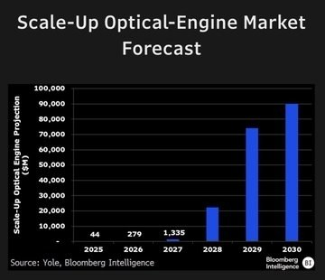
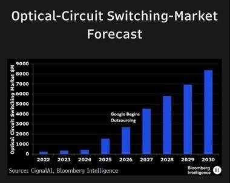
2 图
TrendForce
TrendForce
超大规模数据中心运营商已经开始锁定2028年的硬盘供应，但仍然预计会出现短缺。硬盘交货周期仍高达50周，而市场平衡时仅为16周
本周除了 HDD，还有更多值得关注的内容。4Q26 eSSD 价格谈判正在进行，DRAM 模组供应限制日益加剧；随着 ABF 交期持续较长，T-glass 产能扩张也成为焦点。
TrendForce：2026 年光纤现货报价暴涨数倍，数据中心供需短缺或将持续至 2028 年
TrendForce：2026 年光纤现货报价暴涨数倍，数据中心供需短缺或将持续至 2028 年
根据 TrendForce 的最新研究，人工智能数据中心、数据中心间互联以及高容量需求推动光纤需求激增。
MiniMax M3.1 Fl...
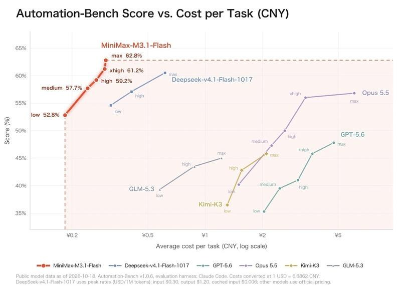
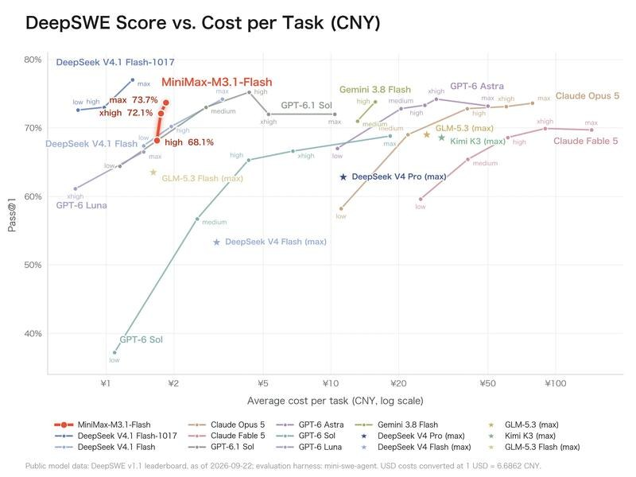
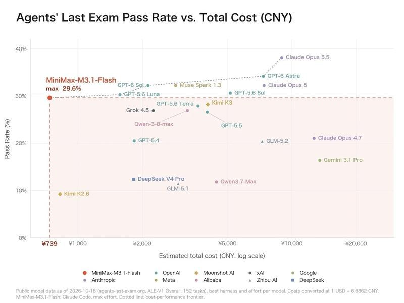
3 图
🔥【东吴食品-保健品】民生健康上市三周年交流要点1019
🔥【东吴食品-保健品】民生健康上市三周年交流要点1019
#Q3单季收入增速+30%、较上半年16%进一步提升、单季度维矿大类同比增长11-12%（其中21金维他重点在维稳渠道库存、其他保健品增速相对更高）；表观利润承压主要系持股技源集团的公允价值损益影响。Q3收入提速主要系维矿系列保健食品及功能性食品销售情况较好、毛利率提升主要系年初以来公司针对21金维他及保健食品产品线统一上调价格约10%、工厂端生产排班、人员优化等持续的降本增效措施成效逐步显现。
1、产品渠道多元化：①产品端：实现21金维他药品与其他非药产品营收各占约50%，预计2026年益生菌业务增速达到30%-40%；保健品业务实现双位数增长、贡献30%甚至35%以上的营收占比；②渠道端：预计2026年底实现线上线下营收各占约50%，除私域、直销外已完成全渠道布局，2024-2025年拓展代理商渠道，当前代理商渠道已贡献约10%的营收。
2、维矿主业：①通过一阶、二阶、三阶产品及定制化方案，精准覆盖不同人群的细分需求。②叠加核心竞品或存在约6个月的断货窗口期（因原料问题无法生产），公司将该窗口期定义为战略机遇期，启动为期15个月的专项战略，目标实现数量市场份额、金额市场份额双第一。具体策略而言，整合零售渠道、增加地面渠道投入；加大2027年媒体预算投入，通过空中投放加强消费者沟通。此外，核心新品小金维他于2025年底启动上市会，#2026年预计实现近5000万元营收、2027年目标1亿元。
3、伐尼克兰相对竞争优势：①0.5mg小剂量规格优势。公司产品为0.5mg规格，友商产品为1mg规格，核心差异包括耐受性更友好、0.5mg片体积更小，对中老年戒烟人群的吞咽更友好，降低用药门槛；②双铝包装设计优势。相比于友商的普通铝塑泡罩包装，双铝包装阻光阻湿性能更优，产品稳定性更好；③专属数字化服务配套：开发民生乐速客独家戒烟控烟小程序，为用户提供全流程戒烟陪伴服务。
🔥#建议加大保健品重视度，重点公司包括：H&H国际控股，金达威（鱼油涨价，藻油替代），民生健康（21金维他发力，小金维他矩阵，戒烟药和益生菌导入期顺利）
🔥东吴食饮，市面最好的保健品研究团队！
宁德业绩预期与储能大会交流更新-20261019
宁德业绩预期与储能大会交流更新-20261019
按照最新市场预期观点，短期宁德三季度业绩已经被下修到220亿左右，环比基本持平。我们还是维持之前的观点，大家对宁德业绩有点过于苛责，今年15倍的行业还要啥自行车，裕能一直超预期，也没看到涨呀。
上周我们在宁德参加储能大会，我们对于行业明年需求预期十分积极，和市场部门的人交流下来，主要的一些反馈：
动力层面，明年预计纯电占比持续提升，叠加本身车型电量增长，预计明年单车带电量还会有平均15%左右的提升。商用车层面，预计增速40%-50%
储能方面，海外储能明年需求增速有望达到40%-50%，其中欧洲300gwh需求，美国200gwh（含AIDC需求70-80gwh），其他新兴市场需求500gwh，合计1000gwh。国内看后续容量电价等政策落地情况，保守预估20%+增速，但若碳酸锂价格企稳，下游拿货意愿会更加积极
短期就是看锂价，我们认为10万锂价已经具备超级高性价比，为什么年底退税等抢装不明显，很简单，碳酸锂2个月跌了6万，电池成本大概下行10%左右，那么点退税不足挂齿，大家都在等着顺锂价。如果市场有效，我们认为明年一季度在锂价传导10万元左右的时候，会看到下游补库+提货显著加速，等淡季不淡。（锂价20万需求被抑制，10万再往下的预期不会很高，所以下游已经开始蠢蠢欲动）
【影石创新】无人机出口新政点评：无人机出口管制重磅松绑，影石创新迎来重磅催化
【影石创新】无人机出口新政点评：无人机出口管制重磅松绑，影石创新迎来重磅催化
10月19日，商务部宣布优化调整无人机相关物项出口管制措施，11月18日起正式实施。此次政策主要有三大变化：
🌹一是放宽续航限制。 部分无人机出口管制续航门槛由1小时提高至3小时，更多民用无人机有望免于相应出口许可限制。
🌹二是放宽载荷限制。 部分喷洒载荷容量门槛由20升提高至80升，进一步释放农业、工业无人机出口空间。
🌹三是简化出口程序。 部分受控无人机可通过登记填报方式出口，降低符合条件产品的出口许可办理成本。
旗下影翎Antigravity A1已经打入欧美市场，真正具备无人机整机品牌+海外销售渠道+全球化布局。此次政策松绑释放出支持民用无人机出口的积极信号，有利于改善行业出海环境，提升影石未来无人机产品拓展国际市场的预期。
🌹存储涨价压力逐步缓解，利润空间有望重新释放，毛利修复预期尚未被充分定价。底部反转，重申强烈推荐！
风险提示：新品推广不及预期
今晚【协创数据】炸出重磅公告，全资子公司协创智算签下374.9亿算力云服务大单，底层算力卡全部采用阿里云平头哥PPU！
今晚【协创数据】炸出重磅公告，全资子公司协创智算签下374.9亿算力云服务大单，底层算力卡全部采用阿里云平头哥PPU！
很多人只盯着协创本身，忽略了上游算力芯片的卖水人——【利扬芯片】688135。
利扬是平头哥AI芯片核心第三方测试服务商，平头哥PPU算力卡大批量上量，每一颗芯片都要经过晶圆+成品测试，直接拉动利扬的算力芯片测试产能。
374亿五年长单，意味着平头哥PPU要持续大规模出货，算力卡放量=测试订单持续兑现。
协创是算力租赁的下游，利扬是平头哥芯片量产环节的上游刚需，国产算力卡爆发，第三方测试最直接受益。
国产算力主线，平头哥生态链，算力芯片测试稀缺标的，这波催化被市场严重低估。
【国泰海通计算机】协创数据：子公司签订374.90亿元算力云服务长单，金额达2025年营收3.06倍
【国泰海通计算机】协创数据：子公司签订374.90亿元算力云服务长单，金额达2025年营收3.06倍
公司发布公告，全资子公司协创智算与客户公司签署《算力云服务协议》，预计总金额不超过374.90亿元（含税），服务期自验收合格次日起60个月。合同金额占最近一年经审计主营业务收入比例超过100%，达2025年营业收入122.36亿元的3.06倍，年均74.98亿元。客户信息按商业秘密豁免披露，按月结算，开票后30日内付款。
算力业务已进入规模化交付阶段。2026H1公司智能算力产品及服务收入32.16亿元，同比+163.46%，已超2025年全年27.61亿元；营收125.23亿元，同比+153.29%，归母净利润18.38亿元，同比+325.51%，毛利率25.15%，同比提升7.54个百分点。前期已签算力服务协议部分项目完成交付并确认收入，其余项目按合同推进。
本次5年期长单进一步锁定长期稳定现金流，提升算力板块利润贡献，并强化头部客户服务与规模壁垒。需提示的是，本协议执行需前置投入算力服务器等硬件，资金来自自有资金及金融机构融资，财务费用与交付验收节奏将影响利润释放；公告明确本协议不构成业绩承诺与盈利预测。
国泰海通计算机杨林团队
【浙商轻工史凡可】裕同科技：Q3经营平稳，年内第二次大手笔回购+新增冷板&VC散热收购（#今晚21:30业绩解读会诚邀参加）
【浙商轻工史凡可】裕同科技：Q3经营平稳，年内第二次大手笔回购+新增冷板&VC散热收购（#今晚21:30业绩解读会诚邀参加）
#业绩一览
1）26Q3收入48.35亿元（同比-2.6%，下同，追溯调整后口径），归母净利5.82亿元（-9%），扣除股份支付后归母-4.3%；26Q1-3收入130.49亿元（-0.8%），归母11.57亿元（-4.3%），扣除股份支付后归母+3.3%。
2）在今年汇兑不利+3C需求承压背景下，主业展现强经营韧性。
3）26年第二次大手笔回购预案，拟回购2-4亿元（不超过41.13元/股）。
#主业预期Q4向上、重包空间可观
1）3C包装：由于A客户今年新品发布节奏推迟，Q3主业产能利用率不足导致整体毛利率27.3%（-1.3pct），iphone DUO预售火爆、送达日期已订至27年1月，Q4有望看到增量。
2）重型包装：我们预计维持高增，整体解决方案高价值量、边际利润率可观。
#液冷：ZQD方案明确、新收威铂驰热
1）9月以1.84亿元收购威铂驰热60%股权，覆盖冷板、分水器、VC均温板等，与华研业务线形成相互补充，AI散热版图再完善。
2）26年OCP全球峰会上，NV下一代ZQD（断开后残液趋近于零）明确使用，华研（持股比例将从51%提高至85%）作为ZQD零部件MIM工艺优势突出的核心供应商、后续份额预期较高。
[太阳]裕同当前市值已接近主业安全边际、科技期权价值凸显，ZQD进展明确、台厂代工即将放量，预期27年利润21.9亿、PE仅14X，推荐布局。
风险提示：液冷客户拓展不及预期、汇率不利
---------------------
#裕同Q3业绩交流
时间: 10-19 21:30
电话参会：+86-4001668383
参会密码： 473073
---------------------
[玫瑰]欢迎联系：史凡可18811064824/傅嘉成13161688452/曾伟/褚远熙/曹馨茗
【申万计算机】科大讯飞26Q3：收入符合预期，研发投入增加影响扣非利润，关注1024星火升级！
【申万计算机】科大讯飞26Q3：收入符合预期，研发投入增加影响扣非利润，关注1024星火升级！
#26Q3业绩
单Q3收入65.6亿（+8.0%），归母净利润2.3亿（+31.1%），扣非净利润-1.3亿（去年同期0.3亿）。收入符合预期，归母净利润超预期，超预期系非经常损益净额3.5亿，主要来自政府补助及金融资产相关收益。
26Q1-Q3收入181.9亿（+7.1%），归母净利润0.2亿（去年同期-0.7亿），扣非净利润-7.6亿（去年同期-3.4亿）。
#业务结构持续优化、教育医疗增长20%以上
持续推进强C端、深B端、优选G端策略，智慧城市业务主动收缩，Q3 G端同比-2.4%，智慧教育、智慧医疗业务均实现20%以上增长。
#维持高研发投入、研发费用率提升
Q3研发投入超17亿，同比增加近4亿，研发费用率超25%，搞研发投入为单季度扣非利润同比减少1.5亿的主要原因。
26Q1-Q3销售/管理/研发费用率分别为19.84%/5.27%/21.17%，同比+0.85/-0.09/+2.41pct。前三季度毛利率39.83%，同比-0.45pct。
#销售回款增长、前三季度累计经营现金流转正
26Q1-Q3销售回款196.9亿（+12.9%），经营现金流净额2.6亿（+115.3%）。Q3销售回款77.9亿，同比增加超7亿；在大模型研发及存储芯片备货支出增加的情况下，单季经营现金流保持为正。
#1024星火升级在即、关注云端协同与生态落地
公司将于10月22日发布全新的“云+端”讯飞星火大模型，基于全国产算力底座升级端云一体化解决方案及多模人机交互技术，以“Token+Agent”推动星火生态升级。关注自主可控大模型底座及软硬件一体化应用进展。
#股份回购已启动、仍有较大执行空间
26年7月通过方案计划1-2亿元回购，期限为董事会议通过后12个月，用于股权激励或员工持股计划，截止9月末累计回购75万股，支付3002.16万元，后续执行尚有空间。
详情欢迎联系！
#水星家纺：26年PE10X、股息率6%+，Q3业绩稳健、Q4有望环比提速下，估值折价（V.S罗莱）有望缩小，仍在底部可配置的红利标的。
#水星家纺：26年PE10X、股息率6%+，Q3业绩稳健、Q4有望环比提速下，估值折价（V.S罗莱）有望缩小，仍在底部可配置的红利标的。
【长江纺服】水星家纺调研交流要点_20261019
✨业绩影响：①政府补贴：预计全年较25年差异不大；②原材料：针对化纤和棉布做了充裕储备，鹅绒、蚕丝等涨价对毛利率有影响，但可通过产品结构优化抵消，预计H2毛利率仍有增长。
✨大单品：大单品(睡眠枕、雪糕被)和小型单品（鹅绒被、蚕丝被、闪睡被）共同推进，目标销售占比20%+。单品毛利率高、因费用拖累净利率低于传统品类，但能优化客群结构和提升连带。
✨费用投放：大单品模式近两年开始尝试，费用会在投放过程中根据经营动态调整，H2费用投放偏紧。投放主要集中在线上，今年也会给到线下部分费用和扶持。
✨加盟状况：仍有库存，提货意愿一般。今年预计净开店，后续希望加盟延续开店。
✨行业趋势：过去家纺行业市场规模稳定、格局分散，当前家纺行业处于较优的发展时间窗口，如果床品市场和睡眠市场成功打通，行业有望快速扩容。
✨分红展望：今年Q2分红、Q3不分，年度分红比例预计延续维持在60%+。
☎欢迎联系完整版交流：于旭辉/魏杏梓/陈信志
[红包]#剂泰科技与礼来达成战略合作，AI药物递送能力得到国际头部MNC认可背书
[红包]#剂泰科技与礼来达成战略合作，AI药物递送能力得到国际头部MNC认可背书
[庆祝]10月19日，剂泰科技宣布与礼来达成战略合作，聚焦新型LNP(脂质纳米颗粒)递送解决方案的研究与发现，以探索支持多种治疗模式的组织特异性递送解决方案。本次合作首付款逾千万美元，总额最高11亿美元，外加个位数销售分成。
[咖啡]合作亮点：
🧬 国内首个以生成式AI平台为核心驱动、围绕LNP递送展开的战略合作，也是肝外药物递送平台全球已披露交易规模最大的合作
🌍 获礼来这一国际头部MNC认可背书，中国AI递送平台实力获全球药企验证
🎯 从“器官靶向”迈向“组织与细胞级选择性递送”的关键跨越
🤖 NanoForge平台已积累超1000万种脂质结构、10万个实验数据点，具备“干实验+湿实验+智能体”高通量闭环迭代能力，赋能10+条首创/最佳管线。得到头部MNC加持后，有望借助数据飞轮持续反哺模型迭代升级，进一步放大平台壁垒。
[太阳]公司亮点：
[玫瑰]公司打通AiLNP/AiRNA/AiProtein/AiTEM四项能力，是稀缺的Biological AI平台。今年开始进入商业化拓展的关键时期，通过火箭（全球领先的LNP递送系统）+卫星（高潜力的mRNA等大分子药物）的商业模式，形成从平台部署（恒瑞合作）到联合开发（礼来合作）到全球授权（MTS128、109等管线）的三步走，持续验证平台能力，拓展合作边界，提升资产价值。
[玫瑰]公司目前还有多款优质在研管线，例如MTS-109（invivo TCE）有潜力成为自免领域重磅新Modality，目前该项目已开启IIT临床，正在申请IND，后续临床研发进展和BD潜力更值得期待（可参考案例：艾博生物与诺华10月达成mRNA编码的TCE管线合作，首付款5.75亿美元，最高约72亿美元的潜在里程碑付款）
[玫瑰]与礼来合作之后，公司后续在AI纳米递送平台领域或将持续落地更多跟MNC的授权合作，平台商业价值有望进一步提升，并对公司未来业绩带来显著正向贡献。
[太阳]近期AIDD调整更多受宏观、科技板块整体影响，但是我们看好AIDD行业走在持续进化的道路上，机会是跌出来的，建议持续关注AIDD行业重点公司【剂泰】等和大厂动作，从而布局下一波AI制药投资机会！
【国泰海通医药】剂泰科技与礼来达成LNP递送平台合作，in vivo TCE/CAR-T布局热度不减
【国泰海通医药】剂泰科技与礼来达成LNP递送平台合作，in vivo TCE/CAR-T布局热度不减
[玫瑰]10月19日，剂泰科技公告与礼来达成战略合作，聚焦新型LNP递送解决方案的研究与发现，探索可支持多种治疗模式的组织特异性递送技术。剂泰将收取逾千万美元首付款，有资格获得最高约11亿美元的开发、监管及商业里程碑付款，另可获得合作产品年度净销售额个位数百分比的分级特许权使用费。
[玫瑰]LNP递送平台是in vivo TCE/CAR-T等新兴治疗路径的核心底层技术：
LNP已成为靶向目标组织和细胞，实现治疗性载荷递送的重要技术手段。in vivo TCE/CAR-T两条路径的疗效、安全窗口与表达持久性，都取决于LNP平台递送的靶向性与组织特异性。
1）in vivo TCE：诺华近期与艾博生物达成战略合作，以5.75亿美元首付款及最高约72亿美元潜在里程碑获得in vivo TCE平台独家选择权及核心管线ABO2203。ABO2203通过皮下注射mRNA-LNP，由体内细胞持续表达CD19/CD3 TCE。目前血液瘤+自免约30例样本，均未见CRS/ICANS，安全性极好。
2）in vivo CAR-T：近一年内，BMS、强生、礼来、艾伯维等企业均通过M&A或者管线授权的方式布局in vivo CAR-T（LNP路径），赛道景气度正持续提升。
[玫瑰]2026EULAR/ACR等大会上多个in vivo TCE/CAR-T早期临床数据优异
in vivo TCE/CAR-T有望为“免疫重置疗法”带来新的解决方案。以艾博生物的ABO2203、转录本的RXIM002、虹信生物的HN2301等为代表的产品针对SLE已披露早期优异数据，有望给整个B细胞介导自免疾病、血液瘤乃至实体瘤等带来新的治疗范式。
2026EULAR/ACR等大会详细数据欢迎联系获取！详细请参考《2026 EULAR：免疫重置疗法的全面爆发》等系列报告。
联系人：余文心/余克清/汪晋
[太阳]【剂泰医药】携手礼来 (Eli Lilly)，达成全球交易规模最大的AI驱动肝外LNP递送平台合作【东吴医药朱国广团队】
[太阳]【剂泰医药】携手礼来 (Eli Lilly)，达成全球交易规模最大的AI驱动肝外LNP递送平台合作【东吴医药朱国广团队】
[礼物]剂泰科技 × 礼来达成战略合作，聚焦支持多种治疗模式的组织特异性LNP递送能力，首付逾千万美元，总额最高11亿美元，外加个位数销售分成。继拿下恒瑞(中国第一)的AI平台合作后, 拿下了世界第一的礼来的AI平台合作！
合作亮点：
🧬 国内首个以生成式AI平台为核心驱动、围绕LNP递送展开的战略合作，也是肝外药物递送平台全球已披露交易规模最大的合作
🌍 获礼来这一国际头部MNC认可背书，中国AI递送平台实力获全球药企验证
🎯 从“器官靶向”迈向“组织与细胞级选择性递送”的关键跨越
🤖 NanoForge平台已积累超1000万种脂质结构、10万个实验数据点，具备“干实验+湿实验+智能体”高通量闭环迭代能力，赋能10+条首创/最佳管线。得到头部MNC加持后，有望借助数据飞轮持续反哺模型迭代升级，进一步放大平台壁垒。
[玫瑰]近期 MNC 在 AI/平台端多项合作，AI趋势明确：诺诚健华×礼来 32.5 亿美元（9/24）、阿斯利康×insitro 15 亿美元（10/16）、剂泰×Boulevard 16 亿美元（6/30）、博锐创合×诺华 9 亿美元（10/9）。
[红包]后续跟踪 MTS-109（invivo TCE，中美 IND 同步）、MTS-105 IIT 读数与礼来合作转具体分子等节点。
🔥🔥【翰森制药】ADC组合总包155亿美元授权罗氏，平台价值持续获得MNC认可【东吴医药朱国广团队】
🔥🔥【翰森制药】ADC组合总包155亿美元授权罗氏，平台价值持续获得MNC认可【东吴医药朱国广团队】
[玫瑰]事件：10月19日，翰森制药公告与罗氏订立战略合作及许可协议，这是双方在ADC领域的第二次合作。合作标的为ADC项目组合，包括2个翰森临床前ADC项目，以及多个由罗氏提议靶点、依托翰森自有ADC平台开发的项目。
[玫瑰]首付4亿美元，总包超155亿美元，有权选择2款产品共同开发。（1）付款上，翰森将获4亿美元首付款和1.1亿美元一周年付款，另有超150亿美元的开发、注册及商业化里程碑付款与分级销售提成，交易总额超155亿美元；（2）分工上，翰森主导早期开发，最晚推进至全球Ia期临床完成；罗氏负责大中华区以外的后续全球开发；（3）权益上，翰森保留大中华区全部开发、注册及商业化权益，并有权选择最多2个项目参与海外开发，以换取这2个项目在美国商业化的额外收益。
[玫瑰]临床前资产卖出高首付，从授权单个分子走向平台共建。（1）本次4亿美元首付，已超过公司此前三笔ADC授权首付之和（HS-20089 8500万美元、HS-20093 1.85亿美元、HS-20110 8000万美元，合计3.5亿美元）；首付加周年款共5.1亿美元，亦超过公司2025年全年研发支出（33.58亿元）；（2）2025年10月，罗氏曾以8000万美元首付引进CDH17 ADC HS-20110。仅一年后再度加码，合作范围由单个分子扩展至“自有项目+罗氏指定靶点”的平台共建，说明翰森持续产出优质分子的能力深受MNC认可；（3）翰森既保留大中华区权益，又握有参与美国收益的选择权，短期现金与长期回报弹性兼得。
[玫瑰]过往合作持续兑现，MNC信任度高：翰森已累计授权7款创新药出海，合作方包括GSK、默沙东、再生元、罗氏等。核心ADC分子HS-20093的SCLC III期OS为18.5个月 vs 10.3个月（HR=0.46），国内BLA已获优先审评；HS-20089正由GSK推进5项全球III期。公司ADC平台能力、分子质量与商业化能力均已获验证，后续分子储备充足，期待兑现。
风险提示：新药研发失败；交易交割及里程碑兑现不及预期；临床推进及审批不及预期；同类产品竞争加剧。
联系人：东吴医药 朱国广/肖鸿德
【天风医药杨松团队】翰森医药：再度携手罗氏，ADC合作拓展至平台层面
【天风医药杨松团队】翰森医药：再度携手罗氏，ADC合作拓展至平台层面
[太阳]事件：10月19日，翰森宣布与罗氏达成战略合作及授权协议，涵盖两个临床前ADC项目，以及多个由罗氏提议靶点、依托翰森自有ADC平台开发的项目。翰森将获得4亿美元首付款、1.1亿美元首周年付款及后续潜在超过150亿美金里程碑以及基于未来潜在产品销售的分级特许权使用费。
[玫瑰]从单项目授权走向组合开发，平台价值获进一步认可
继2025年CDH17 ADC项目HS-20110授权后（首付款0.8亿美元，总包最高15.3亿美元），翰森再次扩大与罗氏的合作。本次合作进一步前移至靶点选择和新项目开发，体现罗氏对翰森ADC平台持续产出能力的认可。我们认为，多项目合作有望拓宽平台商业化路径，增强后续创新成果转化的可持续性。
[玫瑰]多款创新药接连出海，全球化合作持续深化
翰森已将HS-20089（B7-H4 ADC）、HS-20093（B7-H3 ADC）的大中华区以外权益授权GSK，并与罗氏就HS-20110（CDH17 ADC）达成大中华区以外授权合作；代谢领域，口服GLP-1受体激动剂HS-10535全球权益授权默沙东，GLP-1/GIP双受体激动剂HS-20094在中国内地、香港及澳门以外权益授权再生元。此次再度携手罗氏，进一步将单产品出海拓展至ADC平台合作，有望增强创新成果持续转化能力，打开全球开发及长期收益空间。
[咖啡]更多请联系：天风医药 杨松/曹文清
【兴证医药】翰森制药与罗氏达成战略合作及授权协议
【兴证医药】翰森制药与罗氏达成战略合作及授权协议
本次战略合作包括两个翰森临床前ADC项目，及多个由罗氏提议靶点、依托翰森自有ADC创新技术平台开发的ADC项目。
翰森将获得4亿美元首付款及1.1亿美元一周年付款，并有资格根据该等项目开发、注册和商业化进展收取潜在超过150亿美元里程碑付款，以及基于未来潜在产品销售的分级特许权使用费。
翰森将主导该等项目的早期开发，最晚至完成全球Ia期临床试验。翰森保留中国所有权益，罗氏将负责于海外进一步开发该等项目。
注：资料来源为公司公告，仅为公开资料整理，不构成投资建议
联系人：邹文凯17621880725/杨希成/黄翰漾/孙媛媛
【浙商医药】映恩生物-B：ESMO摘要披露多瘤种联用初步数据，持续关注ADC+IO2.0价值拓展
【浙商医药】映恩生物-B：ESMO摘要披露多瘤种联用初步数据，持续关注ADC+IO2.0价值拓展
深度报告链接：
【浙商医药‖郭双喜】映恩生物-B：稀缺的全球 ADC 小巨人，平台化创新打开长期空间 ↗
[玫瑰]核心观点：映恩生物具备全球临床开发、持续BD验证及多代ADC平台布局能力，核心资产正逐步进入兑现期。DB-1311以mCRPC全球Ⅲ期构筑价值基础，联合pumitamig在肺癌之外的多种实体瘤中初步展现抗肿瘤活性，持续拓展联用开发空间；DB-1303提供近期商业化支撑。
一、ESMO：多瘤种联用初显活性，关注后续数据成熟
[庆祝]ESMO摘要披露DB-1311联合pumitamig全球Ⅱ期研究首批结果。截至2026年4月8日，共110例患者接受治疗，中位既往治疗线数为2线。67例疗效可评估患者中，中位随访3个月，总体未确认ORR为36%、DCR为90%，中位起效时间为1.3个月。
[玫瑰]重点队列中，头颈部鳞癌（N=7）ORR为57%、DCR为86%；宫颈癌（N=8）ORR为50%（1例CR、3例PR）、DCR为100%；肝细胞癌（N=18）ORR为28%、DCR为94%。部分患者既往接受过免疫治疗或贝伐珠单抗，初步结果为联用方案的跨瘤种开发提供支持，后续关注扩大样本及更长随访结果。
[玫瑰]安全性方面，110例患者中≥3级TRAE发生率为27%，无5级TRAE；因TRAE停止治疗比例为2%，剂量递增期间未发生DLT，未观察到ILD/肺炎。会议期间将展示更新数据。
二、联用布局：从肺癌向更多实体瘤延伸，持续积累开发依据
[玫瑰]此前WCLC披露的DB-1311联合pumitamig全球Ib/Ⅱ期肺癌研究中，71例可评估SCLC患者总体ORR为70.4%、DCR为93.0%，其中一线ORR为92.3%。此次ESMO摘要进一步提供肺癌之外的多瘤种初步证据，持续关注ADC+IO2.0联用的适应症拓展及后续注册开发进展。
三、估值与观点：核心资产构筑基础，联用及平台打开弹性
[玫瑰]风险调整DCF测算，DB-1311与DB-1303合计价值约362—433亿元，尚未计入其他管线、里程碑及新增BD价值。HER3、TROP2及新一代ADC平台持续接力，后续临床数据和BD有望贡献价值增量。
风险提示：研发失败风险、市场竞争加剧风险、销售不及预期风险。
【国泰海通美护】润本股份26Q3速递
【国泰海通美护】润本股份26Q3速递
[玫瑰]2026Q1-3公司营收、归母、扣非14.06、3.00、2.91亿元，同比+13.6%、+12.8%、+15.9%；对应Q3营收、归母、扣非3.52、0.75、0.74亿元，同比+2.9%、-4.5%、-0.1%，Q3收入增速放缓预计主因驱蚊高基数同时婴童淡季。Q3毛利率61.0%同比+2.0pct，预计因产品结构升级，销售费用率31.3%同比+2.2pct，预计因抖音渠道占比提升、防晒及驱蚊新品推广、双11费用前置；管理/研发/财务费用率2.6%/3.1%/-0.5%，同比+0.2/+0.6/+0.3pct；Q3净利率21.3%同比-1.6pct。
[玫瑰]分品类看，Q3婴童、驱蚊、精油营收1.72、1.28、0.35亿元，同比+17.8%、-3.0%、-19.6%，驱蚊受去年基孔肯亚热高基数影响小幅回落，均价仍提升；婴童受益蛋黄油系列持续放量实现双位数增长，Q4主推蛋黄油系列及高保湿面霜、当前势能良好。分渠道看，预计受驱蚊高基数影响，天猫、京东、非平台经销下滑，参照第三方数据，Q3抖音实现30%左右增长，同时因蛋黄油系列投产比较好预计利润率好于去年同期。
訾猛/闫清徽
润本股份：婴童护理实现双位数增长，产品升级推动毛利率改善
润本股份：婴童护理实现双位数增长，产品升级推动毛利率改善
[玫瑰]#财务表现：
1）26年前三季度实现收入14.1e/+13.6%，归母净利润3.0e/+12.8%，扣非归母净利润2.9e/+15.9%，经营性现金流2.7e/+20.7%。
2）26Q3实现收入3.5e/+2.9%，归母净利润0.75e/-4.5%，扣非归母净利润0.74e/-0.1%。差异主因金融资产相关收益及政府补助等非经常性损益同比减少。
[玫瑰]#毛利率持续提升、费用增加影响短期利润释放。驱蚊新品推广与婴童产品升级带动盈利能力优化，前三季度毛利率同增2.4pcts至60.6%，其中Q3毛利率同增2.0pcts至61.0%；费用方面，销售费率同增2.2pcts至31.3%，管理/研发费率分别同增0.2/0.6pct至2.6%/3.1%。驱蚊业务高基数+费率抬升背景下，Q3归母净利率同降1.6pcts至21.3%
[玫瑰]#婴童护理贡献核心增量、驱蚊业务高基数下平稳运行。Q3婴童护理收入1.72e/+18.1%，收入占比同增6.3pcts至48.9%，均价同增21.6%至10.35元。驱蚊产品收入1.28e/-3.2%，主因同期高基数+驱蚊赛道竞争加剧，均价同增3.8%至6.37元；精油产品收入0.35e/-18.6%，均价同增3.7%至9.20元。
[玫瑰]#专业护理夯实产品基础、全渠道拓展打开成长空间。公司围绕婴童护理与驱蚊两大核心品类持续推新，儿童防晒进一步覆盖日常保湿、户外防水等需求，驱蚊产品通过丰富有效成分选择，完善细分产品矩阵。渠道方面，线上抖音、拼多多保持较快增长，线下深化山姆合作，并拓展美团等即时零售业务，推动产品触达更多消费场景。预计26年归母净利润3.8e，对应PE约21x。
联系人：嵇文欣/张望/陈又铭
【东吴商社】润本股份26Q3业绩：婴童护理高增，期待Q4新品增长
【东吴商社】润本股份26Q3业绩：婴童护理高增，期待Q4新品增长
▍业绩：前三季度收入、利润均增长约13%，扣非增长近16%
#26Q1-3 公司营收14.1亿元，同比+13.6%；归母净利润3.0亿元，同比+12.8%；扣非归母净利润2.9亿元，同比+15.9%。
#单拆Q3 公司营收3.5亿元，同比+2.9%；归母净利润0.75亿元，同比-4.5%；扣非归母净利润0.74亿元，同比基本持平。Q3为驱蚊传统淡季，单季体量较小，叠加驱蚊去年同期高基数，收入增速阶段性放缓；归母利润降幅大于扣非，主要系金融资产公允价值变动收益同比减少。
▍盈利能力：毛利率延续提升，加大品牌投入
#毛利率 26Q1-3为60.6%，同比+2.4pct；26Q3为61.0%，同比+2.0pct，产品结构升级带动毛利率持续改善。
#费用率 26Q1-3销售费用率32.1%，同比+2.1pct，主要系公司加大品牌推广投入；管理/研发费用率分别为2.0%/2.0%，同比基本持平。其中26Q3销售费用率31.3%，同比+2.2pct；管理/研发费用率分别同比+0.2pct/+0.6pct。
#销售净利率 26Q1-3为21.3%，同比-0.2pct；26Q3为21.3%，同比-1.6pct。
▍产品拆分：婴童护理Q3延续增长
#26Q1-3 驱蚊/婴童护理/精油系列分别实现收入6.09/6.14/1.38亿元，同比分别约+20%/+11%/+3%，占比分别约43%/44%/10%
#单拆Q3 驱蚊/婴童护理/精油系列收入分别为1.3/1.7/0.3亿元，同比分别-3.2%/+18.1%/-18.6%。
①婴童护理：Q3同比+18.1%，较Q2（+18.5%）延续高增；均价同比+21.6%，儿童防晒等高单价新品放量带动产品结构持续升级。
②驱蚊：去年同期基数较高（25Q3同比+48.5%），Q3收入略下滑，均价同比+3.8%。
我们预计26年营收、利润双20%增长，对应26年PE约21x，关注Q4婴童护理旺季销售表现及蛋黄油、面霜等放量情况~
东吴商社 吴劲草/郗越
[红包]【申万美护】润本股份26Q3业绩点评：Q3受淡季扰动增速承压，静待秋冬婴童护肤接力放量
[红包]【申万美护】润本股份26Q3业绩点评：Q3受淡季扰动增速承压，静待秋冬婴童护肤接力放量
[玫瑰]公司发布26年三季报，26Q3营收3.52亿元，同比+2.89%，归母净利润0.75亿元，同比‑4.49%，扣非归母净利润0.74亿元，同比‑0.12%。Q3进入驱蚊传统淡季，收入增速放缓，扣非利润基本持平，非经常性理财收益回落拖累账面归母净利润表现。
[玫瑰]盈利能力分析：Q3毛利率60.96%，同比+2.00pct，婴童护理产品结构升级、均价大幅上行；归母净利率21.30%，同比‑1.63pct。销售费用率30.42%，同比+2.31pct，公司前置投放秋冬婴童新品，加大线上流量投放推高费用；管理费用率7.84%，同比+0.14pct；财务费用率‑1.68%，同比‑0.30pct。
[玫瑰]产品端：Q3驱蚊产品收入1.28亿元，销量2010.40万支，均价6.37元，同比+3.75%，淡季收入承压；婴童护理收入1.72亿元，销量1665.98万支，均价10.35元，同比+21.62%，高客单价秋冬新品占比提升，为Q4蓄力；精油产品收入0.35亿元，销量375.81万支，均价9.20元，同比+3.72%，大单品持续贡献增量。
[玫瑰]渠道端线上持续淘汰低效投放，聚焦高转化内容；线下商超、山姆、特通渠道持续拓展，降低纯线上依赖。
[礼物]Q3业绩受驱蚊淡季、前置营销投放、理财收益回落扰动。产品结构升级兑现，婴童护理均价提升，线下渠道稳步推进，静待秋冬护肤新品放量。国货婴童驱蚊龙头成长路径清晰，重点跟踪Q4婴童护肤动销。
[太阳]欢迎交流申万宏源美护王立平/王盼/聂霜
[庆祝]【长江通信】移远通信2026Q3点评：盈利能力持续修复，算力与端侧AI改善结构
[庆祝]【长江通信】移远通信2026Q3点评：盈利能力持续修复，算力与端侧AI改善结构
[玫瑰]利润增长加速，盈利持续进行。 26前三季度公司收入237.99亿元，同比增长33.13%；归母净利润12.12亿元，同比增长65.21%。其中，Q3收入85.39亿元，同比增长34.89%；归母净利润6.09亿元，同比增长132.34%、环比增长32.21%；扣非归母净利润6.35亿元，同比增长161.00%。
[太阳]毛利率持续修复，#成本传导与产品结构改善共同释放盈利弹性。 2026Q1、Q2、Q3毛利率分别为17.09%、20.00%、24.32%，Q2、Q3环比分别提升2.91、4.32pct，盈利能力持续改善。年初存储等原材料涨价对成本形成压力，随着下游产品调价逐步落地，售价与采购成本之间的错配得到缓解；叠加算力、车载及方案等高附加值业务拓展，产品结构进一步优化，共同推动毛利率回升。#后续若存储涨价趋缓、下游价格传导继续兑现，成本端扰动有望进一步减轻，#支撑盈利修复延续。
[烟花]算力与端侧AI：从卖模组向卖整体方案延伸，提高单客价值。 公司围绕终端AI化需求，#将通信连接与计算能力结合，并向多部件、软硬件一体化方案拓展。客户采购范围扩大，有助于提升项目价值，形成传统通信模组之外的收入增量。#算力及端侧方案属于较高毛利的新兴业务，若其收入占比持续提升，有望同时贡献增长与盈利弹性。
[红包]自7月以来我们团队多次发声，强调#重视物联网左侧投资机会，现已逐步兑现，从历史经验看物联网行业经营具备一定惯性，修复通常会持续多个季度，建议重点关注，详情欢迎私信~
[红包]新疆众和经营更新
[红包]新疆众和经营更新
[太阳]公司现有电解铝产能约18万吨（其中约9万吨用于高纯铝生产，其余产能用于板锭、电工杆及合金板锭）。成本端，公司电解铝含税电价成本约0.35元/度，完全成本约1.7–1.8万元/吨。
[太阳]7.8万吨高纯铝中约3万吨用于生产电子铝箔。公司今年电极箔毛利率偏低，主要是环保原因导致产能利用率仅百分之十几，叠加高端产品比例不高。公司正在推进部分产能转移至贵州，若顺利投产则年底产能利用率有望恢复至40%左右。
[太阳]未来提升毛利率的方向主要沿高纯铝深加工延伸，比如扩大高容量电极箔、半导体靶材坯料等市占率。公司约10%的电极箔是供给高容量铝电容，客户以台湾厂商为主，毛利率20–30%；半导体靶材方面，2025年销售200多吨，加上坯料和原料合计约1500吨，均价约10万元/吨，毛利率约30%。
[太阳]公司制定股权激励的业绩基准是剔除投资收益后的2.5亿元归母净利润，实现考核目标的关键在于电解铝价格能否维持在当前水平，以及电极箔和半导体靶材等高端产品市占率能否继续提升。
【申万宏源通信】锐捷网络26三季报速评：收入高增、研发投入加大、看好AI网络中长期弹性
【申万宏源通信】锐捷网络26三季报速评：收入高增、研发投入加大、看好AI网络中长期弹性
#前三季度收入利润高增、单季度收入基本持平、利润下滑。
26Q1-3营收145.96亿（YoY+36.7%），归母净利润10.81亿（YoY+58.9%）。对应Q3营收57.64亿（YoY+43.0%，QoQ-1.2%），归母净利润3.87亿（YoY+69.4%，QoQ-32.3%）。
#毛利率环比回升、费用环比较多增长、研发/奖金等影响较大。
Q3毛利率32.86%（Q2为29.51%），毛利额18.94亿，环比+10.0%。
销管研费用合计15.02亿，环比增加3.42亿，其中研发费用7.22亿（QoQ+24.7%）；应付职工薪酬由6月末1.21亿增至9月末5.26亿。
综合影响下，归母净利率由Q2的9.79%回落至6.71%。公司持续加大核心产品研发投入，后续关注收入放量与费用效率改善。
#备货继续增加、现金流改善。
Q3末存货90.97亿，较6月末+62.0%；预付款项10.2亿，较6月末-28.8%；合同负债7.08亿，较6月末+6.8%。公司披露存货增加主要系原材料备货及生产规模扩大。
单季经营现金流净额-3.25亿，较Q2的-15.5亿明显收窄。
#行业整体而言，我们认为市场已关注网络受益超节点，但27-28年的放量斜率及网络侧业绩弹性仍值得重视。总集群扩张、超节点加速渗透、XPU间互联带宽升级，有望共同推动AI网络需求增长。
锐捷网络作为核心标的之一，中长期弹性主要来自：
1）Scale-out高速升级：依托与字节、阿里等核心客户的深度合作，把握800G及更高速率交换机升级需求。
2）Scale-up增量：超节点渗透提升有望增加交换节点需求，多机柜方案进一步打开网络侧价值空间。
3）JDM与系统能力：客户深度共创形成壁垒，LPO/NPO等技术演进有望拓展光电协同、散热及系统集成的价值环节。
持续看好公司27/28年数据中心交换机成长，关注高速产品放量、超节点部署与业绩共振。
行业深度/数据库，个股跟踪，欢迎联系申万宏源通信团队~
（陈力扬19310840519/赵航/刘菁菁/郝知雨/包轩豪/林起贤等）
[烟花]#中控技术 今日最新公告，中控已累计完成回购方案的下限目标5亿元(回购区间5-10亿元)。公司于近期刚上调回购价格上限，且距离上一次公告窗口，新增回购1...
[烟花]#中控技术 今日最新公告，中控已累计完成回购方案的下限目标5亿元(回购区间5-10亿元)。公司于近期刚上调回购价格上限，且距离上一次公告窗口，新增回购1.6亿元[拳头]回购股份将用于股权激励或注销。
[玫瑰]继续看好中控未来成长性，以及工业AI的产业趋势！
璞泰来2026Q3业绩符合预期，毛利率环比改善明显
璞泰来2026Q3业绩符合预期，毛利率环比改善明显
璞泰来公告2026前三季度营收158.58亿元（同比+46.43%），归母净利润22.76亿元（同比+33.87%），扣非归母净利润21.19亿元（同比+33.25%）。其中，2026Q3营收57.44亿元（同比+53.48%，环比-0.35%），归母净利润8.24亿元（同比+27.79%，环比+10.14%），扣非归母净利润8.07亿元（同比+34.92%，环比+22.91%）。减值方面，26Q3减值0.82e，环比有所收窄
2026前三季度公司整体毛利率27.43%，同比-5.02pcts。其中，2026Q3公司毛利率为29.39%，同比-3.72pcts，环比5.68pcts，期间费用率为11.48%，同比-1.12pcts，环比1.90pcts。其中：销售费用率为0.84%，同比-0.05pcts，环比0.16pcts；管理费用率为3.58%，同比-1.10pcts，环比0.22pcts；研发费用率为6.25%，同比-0.08pcts，环比1.49pcts；财务费用率为0.81%，同比0.10pcts，环比0.04pcts
【中信家电】TCL电子26Q3业绩预告点评：利润增长超预期，全球化&中高端化持续兑现，维持重点推荐
【中信家电】TCL电子26Q3业绩预告点评：利润增长超预期，全球化&中高端化持续兑现，维持重点推荐
🚀业绩速览
#营收 | 公司发布2026年前三季度业绩预告，预计26Q1-3实现收入910-977亿港元，同比增长10%-18%；按预告中值计算，26Q1-3收入约943.5亿港元，同比增长14%。26Q3单季度收入约305.9亿港元，同比+9%，在同期较高基数下仍保持稳健增长。
#利润 | 26Q1-3预计实现经调整归母净利润21.1-22.5亿港元，同比增长45%-55%，按中值计算，前三季度经调归母净利润约21.8亿港元，同比增长约50%；26Q3单季度经调归母净利润约5.4亿港元，同比+38%，延续较快增长。
#盈利质量 | Q3收入端受高基数影响增速较H1有所放缓，但利润仍保持快速增长，反映公司盈利能力改善逻辑继续兑现。公司在预告中明确指出，前三季度利润显著增长主要受“全球化”与“中高端化”双轮战略驱动，其中TV业务持续优化产品结构并巩固全球领先地位，创新业务规模亦保持稳健增长。
#Q4展望 ｜ 展望Q4，国内低基数下经营压力有望边际缓解，海外进入黑五等传统旺季，预计公司经营环比改善。
我们对后续看法：
1⃣#全球化与中高端化持续兑现： 公司海外业务已由单纯“做大规模”逐步转向“收入、均价、利润率”同步提升。预计Q3海外延续较高景气，黑电主业收入维持双位数增长，全球化与中高端化仍是利润增长的核心驱动力。
2⃣#产品结构升级继续释放利润弹性： 公司产品结构改善趋势仍在延续。即使Q3收入增速较H1有所放缓，利润仍保持约40%的较快增长，进一步验证产品升级带来的盈利弹性。
3⃣#索尼整合打开高端市场及利润空间： 索尼家庭娱乐业务预计于2027年4月完成交割，TCL将通过供应链、制造及渠道赋能推动其盈利能力修复，预计净利率分阶段向5%/8%/10%提升。“TCL+索尼”联合体有望在供应链效率和品牌溢价两端对三星形成夹击，打开高端市场及利润空间。
4⃣#全品类平台雏形进一步清晰： 公司拟剥离盈利能力相对较低、周期属性较强的光伏业务，并注入盈利能力及产业协同性更强的空调资产。拟收购的TCL空调业务2025年收入约338亿港元、税后净利润19.1亿港元，交易以股份支付为主，现金压力有限，虽然存在约12.6%的股本摊薄，但预计仍增厚EPS。空调业务可复用公司海外渠道、品牌、物流及售后体系，推动TCL电子由电视龙头升级为“电视+音响+空调”的全球全品类智能家电平台。
5⃣#成本压力边际改善： 行业经营重心进一步从规模扩张转向利润和经营质量，TCL未通过价格竞争换取销量，而是依靠产品结构升级、渠道优化及ASP提升实现“以价补量”。成本端存储价格上涨仍带来一定压力，但龙头通过提价及结构升级实现较好传导；同时，7月以来面板价格转跌，对成本形成一定对冲。
[红包]基于上述，公司Q3利润增长超预期，全球化及中高端化持续兑现，索尼整合打开全球高端市场，空调并表进一步增厚EPS，行业经营重心转向利润及经营质量，四重成长逻辑共同支撑公司收入和利润体量跃升。预计26年经调整归母净利润32亿港元，维持重点推荐！
【国金家电】TCL电子26Q3业绩预告点评：业绩表现超预期，盈利能力继续增强
【国金家电】TCL电子26Q3业绩预告点评：业绩表现超预期，盈利能力继续增强
🚀TCL电子预计26年前三季度收入910—977亿港元，同比+10%—18%，中枢+14%；经调归母净利润21.1—22.5亿港元，同比+45%—55%，中枢+50%。
🚀据此测算，26Q3收入272.4—339.4亿港元，同比约−2.7%至+21.3%，中枢约+9.3%；经调归母净利润4.75—6.15亿港元，同比约+20.8%—56.4%，中枢约+38.6%。按收入、利润中枢计算，Q3经调归母净利率约1.8%，同比提升约0.4pct。
#收入增长保持韧性，预计产品结构改善带动均价持续提升
按预告中枢测算，26Q3收入同比增长约9.3%，较Q2的17.4%有所放缓，或受到北美体育赛事导致的需求前置影响。公司层面，渠道及产品结构持续优化，中高端化战略稳步推进，预计海外均价保持较快提升，带动海外收入延续双位数增长。
#利润弹性释放、中长期成长路径清晰
按预告中枢测算，26Q3经调归母净利率约1.8%，同比提升约0.4pct，渠道优化带动出货结构提升叠加内部提效的逻辑持续兑现。
后续看，以Mini LED为抓手的产品结构升级，叠加品牌溢价提升，有望进一步打开盈利空间；2027年索尼合资公司运营及2028年惠州工厂扩产规划锚定中长期增长。
#投资建议
全球化拓展与高端化升级持续兑现，产品结构优化、品牌溢价提升及运营提效有望持续释放利润弹性，推动公司盈利中枢稳步上移。索尼合作进一步补强高端品牌与渠道资源，打开成长天花板，预计公司2026年经调归母净利润34.5亿港元，维持重点推荐！
欢迎交流 王刚／蔡润泽
【广汇能源】四季度有望全面受益于能源价格上行
【广汇能源】四季度有望全面受益于能源价格上行
#第三季度预计实现归母净利润14.2-15.2亿元，同比大幅增长795%-858%，环比增长36%-46%。
公司业绩大幅增长的核心原因在于：1）三季度顺利完成煤化工装置年度大修，产能充分释放，产销量快速修复；2）抢抓行业上行机遇，煤炭、煤化工、天然气三大主营产品销售价格中枢显著抬升，产品吨净利大幅改善。
展望四季度业绩将全面受益于能源价格上行。
#煤炭价格中枢持续提升，盈利能力大幅修复。煤炭价格方面，据wind，5500K动力煤秦皇岛港口第三季度均价为882元/吨，同比提升31%；截至10月13日煤价达1013元/吨。考虑到今年国内安全事故较多复产进度缓慢，海外控制出口，冬季需求旺季，预计四季度煤炭价格中枢有望保持高位水平。公司手握白石湖富油气煤产能，资源稀缺性凸显，地销原煤价格、利润同步提升。煤炭产销量方面，据公司月度报告测算，2026第三季度销售量1368万吨。盈利水平方面，公司开采成本相对稳定，按当前煤价测算公司吨煤净利提升至150元。
#自产气检修顺利完成，贸易气销量逐月提升。自产气方面，公司7月顺利完成年度检修工作。根据公司月度报告测算，2026年前三季度实现LNG产量4.64亿方，预计四季度有望实现产量2亿方。当前销售价格已达4.5元/方，利润水平大幅提升。贸易气方面，二季度长协货源受中东地缘冲突影响，暂未正常履约；三季度起长协货源逐步恢复正常，四季度海外天然气价格大幅上行，公司长协气贸易盈利贡献突出。
#甲醇、乙二醇售价大幅提升，煤化工盈利水平显著增长。受中东战争以及行业低库存影响，甲醇、乙二醇价格大幅提升，公司通过自有煤炭产业链一体化协同发展，原料成本可控，显著提升了公司煤化工板块盈利能力。根据wind及卓创测算，截至2026年10月13日，煤制甲醇价格/价差分别提升至3840/1814元/吨，吨毛利约1014元；乙二醇价格/价差分别为5730/2760元/吨，吨毛利约960元。产销量方面，7月公司顺利完成煤化工装置年度大修，8、9月主要产品产量持续走高，前三季度甲醇产量71.77万吨，乙二醇产量20.30万吨；预计四季度分别有望实现产量31.5万吨/10.8万吨。
《广汇能源|煤炭、煤化工价格快速上行，公司三季度业绩大幅提升》：
【广汇能源|煤炭、煤化工价格快速上行，公司三季度业绩大幅提升】-国信证券 ↗
10.19金融街论坛一图速览
10.19金融街论坛一图速览
兴证非银 | 非银机构大额赎回流动性支持工具点评
兴证非银 | 非银机构大额赎回流动性支持工具点评
非银机构大额赎回流动性支持工具于2025年金融街论坛年会首次提出，2026年6月陆家嘴论坛明确其研究设立的方向及操作方式，并于2026年10月19日金融街论坛年会正式官宣设立。
市场出现系统性压力、常规融资渠道受阻、群体性大额赎回可能引发系统性风险时，理财子、公募及其母行、证券母公司可以在满足宏观审慎要求的条件下，使用高等级抵押品与央行开展操作，从而获取紧急流动性支持应对大额赎回。
对于债市而言，该工具可以防范理财被迫抛售债券带来的债券价格大幅调整，稳定债券市场流动性；对于股市而言，该工具有助于缓解理财产品大额赎回时固收+/权益类基金的被动卖出压力，从而避免资金负反馈，考虑到近期市场调整带来了部分绝对收益资金的止损，我们预计大额赎回流动性支持工具将为理财资金提供流动性冲击的应对手段，降低对权益市场的扰动。
【东吴宏观】金融街论坛央行行长潘功胜：择机换锚至隔夜利率
【东吴宏观】金融街论坛央行行长潘功胜：择机换锚至隔夜利率
2026金融街论坛年会上，央行行长潘功胜表示货币政策框架转型将渐进推进。一是优化短端利率调控机制，研究择机将公开市场主要操作品种期限由7天切换为隔夜，使隔夜回购利率成为主要政策利率；二是推动贷款利率定价基准从较单一参考LPR向多元化转型，允许部分企业自主选择隔夜回购利率或LPR作为浮动利率贷款定价基准；三是逐步退出存贷款基准利率，推动计息依据改用市场化利率指标替代。
从货币市场回购交易情况来看，隔夜品种成交量占比近90%，政策利率由7天期切换至隔夜更能增强对市场利率的传导效率，精准匹配金融机构临时性需求。
国际对比来看，欧美等主要发达国家央行早已将隔夜品种作为主要政策目标利率。例如美联储以联邦基金利率确立政策目标区间，以有效联邦基金目标利率effr（美国银行间无担保隔夜利率）为衡量市场利率运行情况的核心观测指标。
2026年6月以来，从陆家嘴论坛首提到央行增设隔夜逆回购操作品种，同时收窄隔夜正逆回购利率走廊；2026年二季度央行货政报告中提到将逐步增加隔夜逆回购操作频率，DR001在资金利率锚中的参考权重明显抬升。
前期市场对政策利率切换至隔夜的博弈已部分计价。2026年10月10日以来，DR001一直运行于1.30%以下，最低收至1.26%；DR007近一个月位于1.40%以下，今日盘后债券利率再度回落，对货币政策宽松信号进一步定价。
风险提示：海外货币政策收敛超预期；地缘冲突因素等
金融街论坛，怎么看？
金融街论坛，怎么看？
———财通固收·隋修平
1. 如何理解“择机换锚”？
潘行长原话是：“人民银行将研究择机把央行公开市场主要操作品种的期限切换为隔夜，公开市场隔夜回购利率将相应成为主要政策利率。”
后面一句话从未出现过，央行明确“换锚”，有利于资金成本下移、实现变相降息，从盘面看，被市场理解为利好，但“择机”二字可以回想一下当年的“择机降准降息”，叠加潘行所说的“货币政策框架的转型是一个渐进、持续的过程”，#未来真正“换锚”可能还比较遥远。
另一方面，#实际上当前换锚的利好已经部分兑现了，DR001震荡区间由“1.35~1.45”下行至“1.25~1.35”，体现的就是换锚的影响。
因此，我们维持前期判断，短期内市场的交易重心在于央行敲打，债市可能继续保持震荡思路。
2. 什么是“应对非银机构大额赎回的流动性支持工具”？
第一，主要针对的是债券市场；第二，非常规；第三，针对“听话的孩子”。这不是一项日常给流动性的工具，是为了完善宏观审慎框架的，未来用来应对极端的赎回潮，不能简单理解为利好。
此处贴出6月陆家嘴论坛时潘行长的讲话，供投资者参考：
“在此基础上，我们继续研究政策工具，当债券等市场出现系统性压力，正常流动性渠道受阻，#机构群体性面临流动性危机且可能引发系统性风险时，通过互换方式向非银机构提供紧急流动性。
机制设计将综合权衡维护金融市场稳定运行和防范金融市场道德风险。‘特定情景’意味着该机制不是对非银金融机构的常态化流动性供给；#“防范金融市场道德风险”意味着非银机构与央行操作必须满足宏观审慎要求，还要提供高等级抵押品。
债券市场方面，我们有杠杆水平、期限错配管理和窗口指导等工具。刚刚宣布的特定情景下向非银机构提供流动性的工具，也是完善金融市场宏观审慎管理的一项具体举措。
同时，我们将落实强监管要求，加强监管协同，健全行政监管和自律管理功能互补的管理框架，严厉打击内幕交易、财务造假、利益输送等违法违规行为，对各类非法金融活动保持高压态势，维护金融市场秩序。
“择机”切换成隔夜，我们理解择机的含义：
“择机”切换成隔夜，我们理解择机的含义：
1. 利率走廊更窄，DR001波动率更低。现在已经初步达到了，但可能还要再观察一些时间。今年以来一会缩长放短，一会缩短放长，其实就是一种practise，practise makes perfect，确保以后无论缴税，跨季，跨月，日历效应啥的，都不再有资金面的明显波动。
2.现在一个月大概有几天投放隔夜，其余时间投放7天。后面隔夜投放的交易日越来越多，等大家都习惯了，再宣布切换。
以上两点达到，择机的时机可能就成熟了。
转：央行准备出一个「紧急救流动性的工具」：如果公募、券商这类非银金融机构，突然遇到大规模集中赎回、手里现金不够，卖资产又卖不动的时候，可以拿手里的债券等优质资产...
转：央行准备出一个「紧急救流动性的工具」：如果公募、券商这类非银金融机构，突然遇到大规模集中赎回、手里现金不够，卖资产又卖不动的时候，可以拿手里的债券等优质资产抵押给央行，临时拿到一笔现金用来兑付赎回，防止踩踏式砸盘，避免股债市场出现流动性崩盘。
[红包]【天风机械】AI行情后续怎么走：#核心关注CoreWeave而非Anthropic，重演互联网泡沫朗讯/世宽逻辑
[红包]【天风机械】AI行情后续怎么走：#核心关注CoreWeave而非Anthropic，重演互联网泡沫朗讯/世宽逻辑
[烟花]#近期调整导火索是通胀+利率：#超预期CPI(3.7%)、PPI(6.3%)推动10年期美债收益率站上5.1%，叠加Gartner报告指出AI数据中心收入难匹配资本开支，预计到2030年超80%Neocloud难以独立生存、超3.5万亿美元AI基建投资存在资产减值风险
[太阳]恐慌沿产业链传导：#CoreWeave约500亿美元债务、发债成本上行引发市场担忧二线算力租赁企业融资能力，NBIS、IREN跌幅靠前，恐慌传导至美光、迈威尔、光通信等硬件上游
🎆Anthropic估值下调不是核心矛盾：#计划11月IPO的Anthropic三季度年化收入160亿美元环比增45%，但增速较上季度翻倍明显放缓，部分投资者将IPO估值由2万亿美元下调至1.5万亿，市场对大模型商业化预期更谨慎
[爆竹]真正的核心风向标是CoreWeave：#5年期CDS息差较前周激增约33%，2031年到期、票息9.75%的高级无抵押债券到期收益率已飙升至15.78%；采用第三方IDC托管的轻资产快扩张模式，单卡回报周期长、盈亏平衡容错率极低，是AI基建的核心情绪风向标
🔥历史镜像：关注CoreWeave而非Anthropic，类比当年朗讯/世宽而非英特尔/思科：#互联网泡沫拐点的决定因素不是英特尔与思科这类芯片设备龙头，而是朗讯对CLEC的厂商融资崩盘、世宽破产；本轮同理，行情拐点取决于CoreWeave等算力租赁商的融资能力与现金流，而非Anthropic等大模型厂商估值
#详细Neocloud经济性测算(含CoreWeavevsNebius单卡毛利率、回本周期、EBITDA弹性Excel+Word对比)可私戳~
天风机械：朱晔/文毓 18916600404
【天风电子团队】折叠iphone需求火爆，27年果链季节性有望减弱，持续看好端侧beta
【天风电子团队】折叠iphone需求火爆，27年果链季节性有望减弱，持续看好端侧beta
1）折叠iPhone需求火爆，供给偏紧，产能爬坡带动供应链受益
苹果首款折叠机iPhone Duo于10月16日开启预购，起售价1999美元（国行256GB版15999元），预购开启数分钟即告售罄，官网发货时间延后至2027年1月下旬。从二级市场看，国内二手平台成交溢价多在4000–7000元，256GB版涨幅近四成，个别挂单报价上万；海外转售平台高配版成交价接近5000美元，溢价超50%；国内电商平台亦推出7999元''早鸟权益包''（手机款另付）。
首发溢价为近年iPhone新机最高（iPhone 17 Pro Max首发溢价不足10%），官网全容量发货等待约3个月，长于iPhone X首发时的5–6周。需求强劲、供给偏紧，当前提货已拉长到2027年，随着核心环节良率与产能持续爬坡，出货将逐季放量，看好核心供应商同步受益。
2）20周年多款新品接力，果链季节性有望减弱
2027年是iPhone发布20周年，苹果有望推出多款新品，直板机在外观、材料上迎来较大变化，3D玻璃、3D打印中框等新工艺有望导入，产业链设备端已陆续启动准备。叠加折叠机进入完整出货年，新品节奏由单一旗舰拉动转为多品类接力，果链季节性有望减弱，业绩可见度与持续性提升。
3）OpenAI硬件最快Q4发布，继续推动端侧创新
OpenAI首款端侧硬件最快有望于Q4发布，AI原生终端形态有望加速落地。端侧AI正从手机向更多新形态硬件扩展，具备精密制造与整机能力的平台型供应商有望率先受益，端侧创新的持续性进一步增强。
投资建议：看好端侧beta，折叠机放量+20周年新品+AI新硬件三重催化共振，建议关注立讯精密、蓝思科技、工业富联、大族激光、领益智造、鹏鼎控股、富智康集团、创世纪、裕同科技、瑞声科技、水晶光电、宇晶股份、智立方、达瑞电子、蓝特光学、华曙高科、信维通信。
煤炭保供跟踪，目前政策力度还是以控涨稳价为主：
煤炭保供跟踪，目前政策力度还是以控涨稳价为主：
1. 保供政策力度逐步叠加：10月16日国家能源局联合相关部委在山西召开煤炭保供工作推进会，选择在山西开保供会，政策指向明显，说明山西目前产量提升空间最大，也说明其他主产省份提产空间有限，难以补足山西的减量。
2. 山西目前产量恢复如何？我们调研了解，山西近两个月产量恢复主要有4个途径：1）之前停产煤矿逐步验收复产，在666号文之后有所加快，这部分产能大约恢复了1500万吨左右，占同期产量约为0.6%；2）国有企业及安全条件较好的煤矿，9月产量基本已恢复正常，但没有出现前5个月的超产现象，这部分约占同期产量的5~6%；3）前期超产已经达到全年核定产能，目前按照单月核定产能正常生产，这部分按照山西官方统计大约有3100万吨，占同期产量约8~9%；4）产能核增：前期超产严重的煤矿（超产2~3倍），可以按照临时申请的核增产能生产至27年12月底，但核增量有限，大部分都远低于之前超产的规模，估算复产量相当于同期产量的4~5%。因此，我们估算山西矿难之后产量下降或在30%左右，目前保供政策推动下，预计产量降幅收窄到10%左右。
3. 后续是否还有其他增量出现？1）目前内蒙也申报了1亿吨的产能核增，但多数产能是“洗白”产能，实际净增有限，还要看后续审批的情况。2）我们在山西调研，部分煤企也有净新增的产能核增，但规模都不大，也表示要走完审核流程才能增产。
4. 总体而言，目前保供的政策框架还是在666号文的范围内，主要是通过放松产能监管，达到短期增产的目标，但对中小矿井的安全监管并没有放松，产量还很难回到矿难之前的水平。我们预计在保供政策的推动下，山西产量大致恢复到矿难前的85～90%。全国Q4煤炭产量同比降幅或从Q3的7～8%收窄至3%左右；而需求同比虽然偏弱，但预计降幅在供给收缩之内，行业Q4大概率还会维持供需紧平衡的格局，推动均价维持高位。
5. 目前我们依然看好红利风格加持+供给偏紧下的板块行情，可逢低配置红利龙头 #中国神华、陕西煤业 和Q3业绩表现较好的标的 #中煤能源、兰花科创、潞安环能、华阳股份。
【国金医药】药店行业更新（联系人：甘坛焕/王奔奔）
【国金医药】药店行业更新（联系人：甘坛焕/王奔奔）
[太阳]过去几个季度，我们连续多篇报告推荐关注药店板块，主要系：
1）边际表现上，多家龙头公司收入同比增速逐季加快，今年同店增长明显向好。
2）行业趋势上，出清进行中，并仍将持续，截至25年末，国内药店共65.6万家，同比减少2.72万家。龙头公司已经率先调整完毕，闭店恢复常态，并购/加盟/自建加深加密提升盈利能力。
3）竞争格局优化，龙头公司市占率有望不断提升，同店客流向好的趋势有望持续，叠加慢病管理、多元化服务、创新药放量等对客单价的提升，同店增长确定性较高。
[玫瑰]相关公司：益丰药房、大参林、老百姓等。
[礼物]更多关于药店/中药公司近况更新、行业数据库等，欢迎交流，也欢迎参考此前外发的报告：
20260901药店、中药26年中报总结-药店复苏已显，中药静待改善
#小程序://国金证券研究服务/uZbZ1H7QzKWrgbI
20260606 药店中药26年中期策略-筑底回升，估值有望修复
#小程序://国金证券研究服务/B5nytXUXFmLDpKD
【东吴计算机王紫敬】物理AI：此前的跟踪正在被盘面追认
【东吴计算机王紫敬】物理AI：此前的跟踪正在被盘面追认
今天物理AI板块大涨，索辰科技20%涨停、奥比中光-W涨11.54%、能科科技10%涨停、中控技术涨4.86%。
板块迎来集中行情催化，是我们持续推荐方向，与我们之前观点一致。
事件一：国标与政策落地。商务部等九部门印发科技兴商意见，推动具身智能在商贸场景落地；首批6项人形机器人国家标准正式发布，2027年实施，行业标准化框架成型，产业化预期抬升。
事件二：英伟达GTC前瞻，物理AI为核心议题。10月20-22日英伟达柏林GTC，黄仁勋演讲聚焦物理AI、世界模型、机器人智能体，市场预期Cosmos世界模型、物理AI仿真工厂方案将进一步披露，叠加同期南京物理AI与世界模型大会。
事件三：产业资本与数据供给持续验证。宇树官宣世界物理AI大会，京东开源EgoLive具身数据集缓解训练数据瓶颈，新芯航途完成战略轮融资。海外Figure、Optimus持续释放作业视频，验证物理AI从实验室走向实体作业。
观点重申：物理AI的核心是打通虚拟仿真与真实物理世界，人形机器人是终端载体，#工业场景是国内产业链最快兑现收入的赛道。
仿真软件、工业控制、机器感知构成落地核心底座，产业链价值向#仿真平台、工业智能体、感知硬件迁移。
建议关注：中控技术、敏芯股份、索辰科技、能科科技、奥比中光、东土科技、海康威视、品茗科技等。
风险提示：GTC大会技术发布不及预期；人形机器人产业化落地进度不及预期；技术路线迭代风险；下游资本开支不及预期。
🔥机器人板块大涨点评：特斯拉机器人产能爬坡积极，板块筹码结构优化，关注产业趋势标的20261019【浙商新兴产业吴婷婷/钟凯锋团队】
🔥机器人板块大涨点评：特斯拉机器人产能爬坡积极，板块筹码结构优化，关注产业趋势标的20261019【浙商新兴产业吴婷婷/钟凯锋团队】
#海外链：OpenAI正在打造类人机器人，特斯拉人形机器人小规模产量持续提升。当前Optimus产量较Q2数十台周产量已提升10倍及以上，千台以上产能爬坡仍受到手部装配复杂、供应链配合及良率等约束。当前核心供应链企业释放订单及产能扩建信号，Q4为特斯拉人形机器人产能爬坡关键验证期。
#国产链：10月19日，商务部等9部门发布《关于加快推进科技兴商的意见》，明确"加速脑机接口、具身智能等前沿科技成果向市场转化"，并将机器人纳入"智能商品供给"、将具身智能落地场景指向家庭服务与商贸物流，机器人的商业化路径拓宽。
#本周催化：北京时间10月22日05:30，特斯拉将举行2026Q3财报交流会。提问清单包括单台Gen3成本、首批付费客户画像、Optimus产生盈利的时间节点展望。
#T链重点推荐：Q3业绩预期高增+超跌核心趋势票：峰岹科技（空心杯电机）、科达利（谐波减速器）等。重点关注：恒帅股份、恒立液压、三花智控、新泉股份等；
#国产链关注：上纬新材、宇树。
[玫瑰]风险提示
人形机器人产业链进展不及预期；特斯拉机器人进展不及预期等。
☎欢迎联系浙商新兴产业团队吴婷婷13472717082/钟凯锋/谢雨晨/翁雨晴或者对口销售
Open AI入场机器人，T链持续爬坡，低位推荐布局机器人【国信具身智能】
Open AI入场机器人，T链持续爬坡，低位推荐布局机器人【国信具身智能】
[玫瑰]周末新闻，OpenAI正布局人形机器人研发赛道，将把机器人智能系统研发作为核心攻关方向，有望2027年推出样机，官网开始招聘制造、执行器、传动、传感、热管理等岗位，正式加码入局机器人。
我们认为，随头部AI公司的加码入局，#作为AI应用端最核心方向之一的人形机器人，#软侧能力（大脑&模型&数据）有望迎来重要补强（硬件已基本定型）；同时另一个角度也反映AI公司（OPENAI等）都陆续从数字AI转向物理AI（具身智能），后面可能也会有更多的资源、AI玩家切入。
另外根据产业链调研，T链零部件公司爬坡持续，部分环节交货从9月到100-300/周逐步到大几百/周水平，年底到2k+/周水平（甚至部分玩家指引更高），roadster尾翼沿用机器人执行器侧面印证产品日益成熟，产业进展顺利（此前T在Q2业绩会表明产能基本改造完成Q3进入量产，本周四特斯拉Q3业绩会有望确认量和排产的指引）。
[抱拳]AI硬件开始回调之后，AI应用出现百花齐放的催化性行情，从传媒（短剧）-医药（AI4S）-汽车（飞行跑车/机器人等），市场往筹码结构最轻的环节做主题轮动，如果有业绩的环比改善，持续性会更好，这里我们重点提示机器人板块（汽车基本面Q4开始环比改善），核心模型玩家下场（OAI）、产业进展顺利（产业链量产爬坡），板块位置低（多数个股把9月那波行情涨幅完全跌完），短期有催化（本周特斯拉业绩会有望细化指引），当下位置建议加仓筹码结构轻盈的AI应用之机器人板块！
欢迎交流：国信具身智能团队
关注机器人中垂类场景落地最快的【杰克科技】
关注机器人中垂类场景落地最快的【杰克科技】
1️⃣机器人要落地，垂类场景一定先行。下周公司缝制机器人产品将正式发布商用，效率较展会版本有大幅提升，开启批量化落地。近期公司台州机器人工厂已开启产能爬坡，年产能规划达1万台。
2️⃣估值低。受战争影响年内全球服装行业景气承压，公司主业α强，上半年收入增长16%，扣汇利润增长20%，国内外均大幅跑赢行业。当前PE仅16x。
3️⃣有信心。7月公司实控人公告拟增持3~6000万元公司股份，目前尚未执行完成，股价已低于实控人增持价。
————————
华泰机械 杨云逍/杨任重 13120659816
H&H 观点更新：预计26Q3收入双位数增长，股息具一定吸引力（20261019）
H&H 观点更新：预计26Q3收入双位数增长，股息具一定吸引力（20261019）
1️⃣全年预期&分红&债务解决进度&股东结构变化
① 业绩增速预期：全年收入预期中到高双位数增长，经调整净利润率预期中到高单位数（此前指引为中单位数）。
② 派息：上半年派息率50%（4.6亿元），预期全年维持相同的派息比率。
③ 债务：26年全年计划还债上调至13亿元（8月提前还债3e），当前已提前基本完成，后面每年还5-7e债务，财务费用预计将有几千万节约。净杠杆率由25年末3.45X降至 26H1的2.05X，26年底有望降至2X左右。后续杠杆率降至1.5X-1X以下，会考虑将分红率提升至70%左右。
④ 股东结构变化：#近期公司去欧洲路演反馈积极，外资对公司逻辑认可度高，预计外资买入（趋势或延续）。
2️⃣各板块26年业绩指引：①ANC：全年收入增长指引从高个位数上调至低双位数（大陆更快），经调整EBITDA率预期接近20%；②BNC：全年收入增长指引维持在30%以上，经调整EBITDA率预期从中双位数提升至中高双位数；③PNC：全年收入增长指引维持高单位数，其中Zesty Paws维持高双位数增长，素力高预计平稳或小幅下降。
3️⃣Q3各板块更新：预计26Q3收入保持双位数增长，财务费用下行。具体：① ANC：公司受益于保健品监管加强，预计Q3增速延续；② BNC：奶粉截止Q3末偏低，将持续补库，超高端奶粉市占率持续提升，1段奶粉转段也能推动奶粉持续增长；③ PNC（市场没给估值）：Zesty收入每年均双位数增长，Solid亏损方面，美国今年已恢复增长，中国市场今年完成产品结构调整，预计明年开始增长，28年有望扭亏。
4️⃣盈利预测：预计26-27年经调整后净利润增速+80%/25%，对应PE分别9X/7X，对应26年股息率近6%，中长期角度仍继续推荐。
--------------------
浙商食饮 张潇倩Iris团队
【华鑫汽车&机器人】光洋股份1019：调整到位，正是布局好机会
【华鑫汽车&机器人】光洋股份1019：调整到位，正是布局好机会
1️⃣传统主业27Q1暴发（底盘ASP大幅提升+FPC整合），预计27年利润2.5-2.7e
2️⃣#轴承卡位，T全套轴承订单，交叉滚子唯一国产批量厂商，在手39款轴承订单，ASP约4000元。后期有望达到10000元。
3️⃣减速器：行星总成+谐波核心零部件，ASP约7K
4️⃣整机代工：农用、防爆机器人，订单2W台有望近期落地，ASP 30W，今年交付数百台，27年贡献业绩，#按5000台交付，15e收入，1.5e利润。
继续重点推荐，#调整到位，当下就是布局良机，估值短期看185e，中长期看370e+
林子健
【物理AI 🆚 空间智能|风语筑603466|建议积极关注】
【物理AI 🆚 空间智能|风语筑603466|建议积极关注】
1、物理AI与空间智能助力业务智能跃升具潜力。人工智能从数字世界走向现实世界，真实环境中的空间数据正在成为智能体理解世界的重要基础，风语筑长期参与城市空间、产业空间、文化空间等领域数字化建设，积累了丰富的空间建模、三维重构和数字孪生能力。
2、公司与字节跳动旗下即梦AI达成合作强化AI3D战略布局，作为数字创业行业领军企业，将发挥积累的空间资产优势、真实世界入口优势及数字空间构建能力，积极探索物理AI时代空间资产向训练数据资源转化的发展路径。
3、单季度营收波动及减值测试致业绩波动，但公司开启化解存量债务进而资产质量有望持续改善，建议积极关注。
《风语筑（603466.SH）|物理AI与空间智能护航业务升级可期》
风语筑（603466.SH）|物理AI与空间智能护航业务升级可期 ↗
❗❗❗#广和通：物理 AI端侧软硬件底座标的
❗❗❗#广和通：物理 AI端侧软硬件底座标的
#广和通传统主业为无线通信模组，公司已战略切入物理 AI（Physical AI）赛道，定位物理AI 智能体的**端侧算力 + 通信 + 机器人控制一体化方案商，不做大模型，聚焦机器人落地所需硬件与软件工具链，是具身智能产业的底层基础设施标的证券时报。
公司核心载体为自研Fibot 桌面双臂具身智能开发平台，搭载自研异构算力机器人域控制器，可本地部署 PI 的 VLA 视觉语言动作模型 π0.6，在端侧完成感知、决策、执行闭环，支持机器人抓取、操作等物理任务，同时可采集真实物理世界数据集，用于物理 AI 模型训练与微调，入选中国信通院 AI 赋智先锋案例Fibocom。
配套自研 Fibocom AI Stack 端侧 AI 工具链，提供模型量化、推理、微调一站式能力；叠加高性能智能模组，为机器人提供稳定通信链路，解决物理 AI 机器人低时延控制、传感器数据回传需求。外延层面战略投资飞渡科技，布局空间智能与世界模型，补齐物理环境仿真能力，完善物理 AI 生态布局Fibocom。
除双臂机器人开发平台外，公司割草机器人视觉方案已实现量产落地，形成 “开发平台 + 量产机器人方案” 双线布局。
【国信食饮】万辰集团大跌点评
【国信食饮】万辰集团大跌点评
事件：我们预计今日股价大跌与市场预期Q3收入可能不到50%、业绩可能miss有关（此前市场主流预期Q3收入50%/利润80%）。我们在昨日小幅下修至收入48%/利润80%，主因观察到抖音平台上一些加盟商表示9月称重舆情对门店经营有一些影响。
观点：关注超跌修复机会。26年量贩龙头快速开店后，市场对于行业未来开店空间及盈利提升空间的预期高度谨慎，叠加即将进入同店较高基数阶段，短期股价缺乏上行催化，故加剧部分资金的短期出逃。我们预计26年利润26-27亿，当前股价对应26年估值已压缩至11x附近，反映较多悲观预期。建议关注同店变化以及新店爬坡情况。
航天南湖：军工板块当前正处于“低位置+好筹码+强催化”三重共振的最佳配置窗口，这不是普通反弹，而是基本面反转+事件驱动+资金回流的系统性行情。
航天南湖：军工板块当前正处于“低位置+好筹码+强催化”三重共振的最佳配置窗口，这不是普通反弹，而是基本面反转+事件驱动+资金回流的系统性行情。
三大引擎同时点火：珠海航展定档12月7日，恰逢创办30周年，参展规模创历史新高，首次拓展海上装备展示区，历史规律显示航展前后三个月军工板块最大超额收益达14%-17%，当前正处于资金预热最优窗口；“十五五”规划有望年底前落地，内需订单集中兑现，板块从“强预期、弱现实”转向“强预期、强现实”；军贸出海持续兑现，中式装备认可度提升，在手订单覆盖未来2-3年收入，中长期空间巨大。
航天南湖是军贸雷达核心标的，航天科工二院二十三所防空预警雷达唯一上市平台，稀缺性极强。军贸收入占比42%创历史新高，25个招投标中标16个；Q2营收同比增长114%确认业绩拐点；前瞻布局低空反无并获批量订货；10月15日机构龙虎榜净买入1.53亿元。航展+规划+军贸三重催化共振，当前位置坚定看好！
🔥近期核心推荐！【国盛建筑&钢铁】甬金股份：冷轧不锈钢龙头进军高附加值新材料，钛材、复合金属打开多维成长空间
🔥近期核心推荐！【国盛建筑&钢铁】甬金股份：冷轧不锈钢龙头进军高附加值新材料，钛材、复合金属打开多维成长空间
🌟冷轧不锈钢龙头规模与技术优势领先，拓展新材料领域打造新增长点。公司布局10大不锈钢生产基地，年产能超400万吨，市场份额领先；海外版图持续扩张且盈利能力优越，越南已完成超50万吨产能布局，泰国、土耳其项目推进中。公司在精密不锈钢冷轧加工环节具备强大技术支撑以及成本优势，深度绑定下游头部客户，同时积极向高端新材料领域拓展，打造多维新增长点。
[礼物]钛材：潜在高端钛合金龙头，卡位3C级高附加值产品利润空间丰厚
👉钛材兼具轻量、高强、耐腐蚀及优良质感，目前主要用于化工、航空航天，3C电子、杯具锅具等日用消费领域渗透率仍具较大提升空间。超薄、折叠产品趋势以及散热、3D打印工艺成熟有望推动钛材应用推广，iPhone Duo采用5级钛机身及3D打印铰链罩，后续其他主力机型亦有望采用钛合金方案，龙头示范效应有望带动行业整体应用浪潮。
👉公司当前规划钛材产能10万吨/年，26H1末已建成3.5万吨，约占2025年全国钛材产量的17.5%。26H1钛材产/销量为1.1/0.8万吨，公司积极导入钛材在3C领域批量应用，高附加值领域有望打开丰厚利润空间。
[礼物]金属复合材料&预镀镍电池外壳材料：1）公司布局江苏镨赛13万吨金属复合材料，26H1金属复合材料产量达1.4万吨。3C等高端领域产品价格与盈利能力显著高于普通材料，公司抢占产业链高端生态位，VC均热板专用金属复合材料箔材已实现批量生产，伴随终端散热需求增长，相关产品有望持续放量。2）子公司浙江镨赛规划预镀镍电池外壳材料年产能22.5万吨，一期7.5万吨已投运。消费电池材料已实现销售，大圆柱动力电池外壳材料正推进送样验证，后续有望为公司提供新成长动能。
🧧投资建议：伴随公司海外产能扩张及新材料项目步入收获期，预计26-28年归母净利润分别为7/9/12亿元，同比增长28%/28%/31%，当前股价对应PE分别为14/11/8倍。对原有不锈钢与新材料业务进行分部估值测算28年目标市值约173亿（不锈钢6.8e*10X+3C新材料3e*25X+日用消费新材料2e*15X），#较当前具备约80%+提升空间。
科森科技重大事项点评及推荐
科森科技重大事项点评及推荐
#定增发行、投入液冷及机器人领域。公司发行定增，募资上限11.02亿元，发行上限1.66亿股。
募投分配主要为布局液冷、机器人及补流：1）收购惠州展固科技53.26%股权：5.00亿元；2）机器人与智能终端精密结构件及模组制造项目（一期）：4.02亿元；3）补充流动资金：2.00亿元。
#并购展固科技、切入液冷领域。公司并购展固科技：1）交易方式：股权转让+增资，总对价上限5亿元；2）交易结果：取得53.26%，展固科技变为控股子公司，纳入合并报表；3）标的业务：惠州展固科技，AI服务器液冷精密结构件；主打液冷冷板盖板、 manifold歧管结构件，属于算力液冷金属零部件赛道；4）战略意图：切入AI液冷硬件，和公司既有精密加工能力协同，加强NV产业链布局。
#公司为特斯拉机器人核心结构件供应商、募资为快速放量储备。公司当前为特斯拉机器人身体、关节结构件核心供应商，在北美达拉斯工厂直接供货特斯拉弗里蒙特工厂，且近期获得手部关节新订单。除特斯拉外，公司为OpenAI、1X、Meta等多家机器人公司提供机器人结构件，当前机器人项目募投仅为一期，为未来机器人快速放量提供储备。
#投资建议：公司为特斯拉机器人放量核心供应商、且深度布局液冷、AI终端、固态电池等领域、与特斯拉、Meta、NV、苹果深度绑定、今年公司扭亏为盈、我们前瞻、持续、重点推荐！
[太阳]【国金计算机】亿田智能：燧原深度合作超预期，算租小步快跑加速推进
[太阳]【国金计算机】亿田智能：燧原深度合作超预期，算租小步快跑加速推进
#独家合资公司落地_亿田与燧原合作超市场预期
——根据公开工商信息，近日浙江砺曜科技有限公司成立，注册资本2500万元，亿田智能持股51%、杭州砺创企业管理合伙企业持股29%、燧原科技持股20%。
——亿田与燧原合作基础扎实：1）2024年末，甘肃亿算与燧原共同打造庆阳国产万卡推理集群，依托燧原云端AI芯片及全栈算力解决方案；2）2025年4月，亿田进一步成为燧原S级经销商，同期甘肃亿算、燧原与庆阳市政府签署国产十万卡算力集群战略合作框架，规划建设不低于10万张国产算力卡、2.5万P算力服务能力。
#算租业务理顺、“小步快跑”&快速推进
——服务器采购加速落地，供应链及拿卡能力持续验证。7月以来，公司连续推进服务器资产采购。1）7月8日公司公告拟采购不超过5.5亿元服务器及配套设备；7月10日进一步披露进展，累计采购金额已达5.29亿元、部分设备已交付；2）7月27日公司公告，拟采购不超过20亿元服务器及配套设备，主要用于为客户提供算力服务；8月13日进一步披露进展公告，与X1公司经友好协商签署了《
销售合同 ↗ 》，约定公司向X1公司采购服务器及配套设备，合同总金额为人民币1.255亿元。#截至最新公司累计采购的服务器及配套设备总金额为6.65亿元，密集采购及实际交付表明公司算租业务正式进入资产落地阶段。
——大额算力长单同步落地：1）7月29日，公司全资子公司甘肃亿算与客户Y签署《
算力资源服务合同 ↗ 》，合同含税金额11.06亿元，服务期限60个月，合同金额依据服务器数量、服务期限及每月服务价格等要素测算，最终按月度实际提供服务据实结算。该合同金额已超过公司最近一个会计年度经审计主营业务收入的100%。2）8月18日，公司全资子公司甘肃亿算（甲方）与Z公司（乙方）签署《
亿田算力中心项目建设合同 ↗ 》，本合同标的对应合同总价款为10亿元，甲方委托乙方为算力中心采购所需算力服务器及辅助设备。
风险提示：AI产业发展不及预期、算力业务推进不及预期、行业竞争加剧等。
☎️联系人：陈芷婧/鲍淑娴/刘高畅
众生药业-领涨创新药板块
众生药业-领涨创新药板块
RAY1225减重三期获得顶线数据，疗效优于替尔泊肽，有BIC潜力
[玫瑰]事件：公司于10/8发布公告，RAY1225（GLP-1/GIP双靶点双周制剂）注射液减重III期临床试验获得顶线分析数据结果。
疗效：9mg组体重较基线降低22.24%，经安慰剂校正后降低20.46%（P<0.0001），3mg和6mg组经安慰剂校正后分别降低11.23%、17.42%（P<0.0001）；
减重达标率方面：RAY1225注射液9mg组体重相对基线降低≥5%和≥15%的比例分别为99.3%、82.1%，均高于替尔泊肽15mg（Q1W，52周）的85.8%和61.4%；≥20%的比例为53.8%。
安全性方面：未发现新增安全性信号。最常见的为胃肠道相关不良反应，严重程度大多较轻微，腹泻、恶心、呕吐和便秘等发生率，在数值上低于或与替尔泊肽SURMOUNT-CN的报道值相当。
实验相关：入组641例，随机接受 3mg、6mg、9mg 或安慰剂治疗，Q2W，52 周。
RAY1225其他适应症：RAY1225两项降糖 III 期均已完成入组，肥胖合并 OSA III 期获 NMPA 批准；2026 年 1 月授权齐鲁制药中国权益，2 亿首付已到账。
[玫瑰]ZSP1601（pan-PDE抑制剂，MASH）：5月发布IIb期顶线数据积极，潜在全球口服BIC
其他：昂拉地韦片（已上市，已纳入医保），Amylin、三靶、RSV等处于临床前。
[红包]【开源商社|珀莱雅】双11预售超预期，大单品迭代放量，高端化逻辑加速兑现
[红包]【开源商社|珀莱雅】双11预售超预期，大单品迭代放量，高端化逻辑加速兑现
🔥【双11预售开门红，主品牌表现亮眼，量价齐升】
1️⃣ #主品牌销售超预期： 据预售首日数据估算，10月15日截止于24:00珀莱雅主品牌李佳琦直播间GMV约5.1亿元，同比增长20%+，连续第三年蝉联品牌销售额榜首，主品牌增长修复预期强化。
2️⃣ #大单品迭代效果显著： 红宝石面霜4.0付定超40万、预估GMV约2亿元，双抗面膜、源力精华3.0付定分别超20万、10万。核心单品持续放量，验证成熟大单品迭代及用户心智复用逻辑。
3️⃣ #高端化突破持续兑现： 蕴白系列首日付定超8万，成为直播间最快售罄商品之一，高端新品热销有望推动价格带上移、客单价提升；叠加部分核心产品（红宝石面霜、双抗面膜、双抗精华、源力精华与蕴白套组）享受15%国补优惠，进一步促进终端消费。
🔥【多品牌持续贡献增量】
Off&Relax、花知晓预售首日估算GMV分别约4673万/1130万元，#高端洗护与年轻彩妆持续补充增长动能，花知晓6月并表有望增厚全年业绩。
🎁【核心观点】
我们近期发布珀莱雅二次深度《大单品拾阶致高阶，并表花知晓开启多品牌新章》。本次双11预售表现进一步验证了报告中#“大单品复利迭代+高端化拓展价格带”的核心逻辑，主品牌增长修复预期强化。后续随着新品持续放量，叠加花知晓并表、多品牌扩容及渠道提效，#收入增长与盈利改善有望形成双重驱动。
🔥【估值】
预计2026/2027年归母净利润19.20/18.04亿元，对应PE约11.9/12.7倍，当前估值具备一定性价比。
Rubin Ultra 有两种样品方案：一种采用与 Rubin 相同的材料等级；另一种将树脂从 M8 升级到 M9，即采用 M9、低介电常数第一代布料以及 HV...
Rubin Ultra 有两种样品方案：一种采用与 Rubin 相同的材料等级；另一种将树脂从 M8 升级到 M9，即采用 M9、低介电常数第一代布料以及 HVLP4 铜箔。后一种方案的可能性较大，但尚未完全敲定。
正交背板最初采用了……进行打样。
JX Advanced Metals 先进材料事业部执行董事兼总经理谈 InP 衬底的供需情况：
JX Advanced Metals 先进材料事业部执行董事兼总经理谈 InP 衬底的供需情况：
“目前，InP 衬底供应紧张，难以满足旺盛的需求，供需缺口由此形成。随着数据中心市场
SemiAnalysis 预计，2027 年将新增 51.2GW 的数据中心容量。
SemiAnalysis 预计，2027 年将新增 51.2GW 的数据中心容量。
“年初至今，已签署的具有约束力、不可取消的数据中心租赁合同金额略低于 1 万亿美元——这是支撑我们对 2027 至 2028 年作出激进预测的关键。”
SemiAnalysis 声称，Brad Gerstner 关于 2027 年仅有25GW 在建的说法并不正确。卫星图像显示，超过 24GW 的数据中心已进入施工高级阶段，预计都将在 2027 年交付。
📌 GS KOREA FINAL - HINTS OF ROTATION 高盛韩国市场综述
📌 GS KOREA FINAL - HINTS OF ROTATION 高盛韩国市场综述
📊 韩国综合指数 KOSPI 上涨 1.76%，收于 5768.0 点，成交额 129 亿美元，外资净卖出 2900 万美元。韩国创业板 KOSDAQ 上涨 1.78%，收于 808.9 点，成交额 35 亿美元，外资净卖出 1.08 亿美元。
📊 市场复盘
📈 韩国综合指数 KOSPI 开盘低开，受到半导体板块走弱拖累，但在全天交易时段持续回升，收盘站上 5700 点关口。
💱 外资今日交易相对谨慎，最终小幅净卖出，重点抛售运输设备板块（3600 万美元）、食品饮料板块（3200 万美元），同时买入化工板块（2900 万美元）、科技板块（2700 万美元）。
🏦 境内机构是今日主要的净买入方，养老金资金买入 1.62 亿美元，抵消了散户投资者与外资合计流出的大部分资金。
📉 三星电子 (005930) 上涨 1.2%，SK 海力士 (000660) 上涨 0.4%，收盘小幅走高，但盘中大部分时间维持横盘震荡。
🚗 年内表现落后的板块大幅跑赢大盘，其中电动车供应链指数 (GSXAKREV) 上涨 9.3%，娱乐板块指数 (GSCBKPOP) 上涨 3.6%，免税板块（例如新世界 (004170) 上涨 6.5%），汽车板块指数 (KRXAUTO) 上涨 4.0%。
💹 KOSPI 成交额较 20 日均值下降 8.5%。
💴 韩元升值 41 个基点，汇率报 1 美元兑 1331.1 韩元。
📰 主要头条新闻
🔹 半导体板块 (上涨)：三星电子 (005930) 上涨 1.2%，SK 海力士 (000660) 上涨 0.4%。
📉 两只个股开盘走低，走势震荡，受到费城半导体指数下跌 3.8% 以及市场广泛担忧 AI 板块行情的拖累，不过后续反弹，收盘收涨。
💰 值得关注的是，外资延续在三星电子连续两日净买入的态势，净买入 1.29 亿美元；但外资在 SK 海力士延续连续 17 日净卖出，今日净卖出 1.62 亿美元。
📊 在 SK 海力士个股上，境内机构与散户投资者合计净卖出（分别净卖出 1.84 亿美元、1.07 亿美元），其他公司资金持续流入，提供 4.55 亿美元的资金支撑。
📊 在三星电子个股上，散户投资者为净卖出方（净卖出 0.81 亿美元），境内机构净买入 23.5 万美元。
🔹 电动车供应链板块 (上涨)：高盛韩国电动车供应链指数 (GSXAKREV) 上涨 9.3%。
🔋 韩国电动车电池标的迎来上涨，相关报道称，受不断增加的监管限制、叠加关税以及严格的所有权审查影响，中国储能设备供应商正在退出美国市场。
📈 三星 SDI (006400) 上涨 11.7%，LG 新能源 (373220) 上涨 7.2%，SK On (096770) 上涨 7.2%，Ecopro Co (086520) 上涨 11.2%，浦项 FM (003670) 上涨 10.9%，LG 化学 (051910) 上涨 8.5%，这些标的同步跑赢大盘指数。
🔹 太阳能板块 (上涨)：韩华解决方案 (009830) 上涨 7.9%，现代 HD 能源解决方案 (322000) 上涨 6.6%，乐天能源材料 (020150) 上涨 18.4%，OCI 控股 (010060) 上涨 9.7%。
☀️ 上涨受到相关报道提振，报道称中国已经着手对太阳能设备制造领域的 12 项核心技术实施出口管制。
📄 根据当地报道，韩华解决方案和现代 HD 能源解决方案正优先开展叠层太阳能电池技术的自主研发，将其视为抢占美国太阳能市场先发优势的机会。
🔹 NC 公司 (036570) 上涨 5.3%：
🎮 游戏《Aion2》登上 Steam 全球每周游戏榜单第二名，带来强劲的全球热度，叠加《天堂经典》即将在日本拓展业务，市场增强了该公司 2026 年第四季度盈利大幅反弹的预期。
🔹 三星生物 (207940) 上涨 9.9%：
⚖️ 法院限制了工会计划开展的第二次罢工，缓解了市场对于劳资矛盾拖累个股表现的担忧，也让市场期待劳资关系有望迎来潜在转折点。
📑摩根大通 - 韩国股票策略：研判近期股价走势
📑摩根大通 - 韩国股票策略：研判近期股价走势
📊上周韩国综合指数（KOSPI）5 个交易日回撤幅度达到‑15%，这是今年继 3 月、7 月之后第三次出现该级别回调。
📊本轮下跌最初源于公司回购节奏放缓，之后受全球人工智能市场情绪恐慌进一步加剧；当韩国综合指数跌破 200 日移动平均线后，技术面抛压进一步释放。
📊在这一轮行情当中，纯防御板块（必需消费品、医疗保健、低波动板块）表现抗跌；质量因子、价值因子以及盈利上调因子取得最优收益表现，价格动量因子回调幅度最大。
📊值得注意，整体股票风险环境在此之前就已经走弱。自 9 月中旬开始，我们就针对区域股票市场发出战术层面的谨慎提示。
📊正如我们上月撰写的报告：“从 9 月中旬至 10 月末，美联储开启加息周期、长期债券收益率易上难下、日元走强对套利交易形成压制、油价维持高位叠加美国中期选举带来季节性走弱，在此多重因素影响下，我们预计市场风险偏好将持续低迷。质量因子以及金融板块是该阶段最好的对冲工具。”
📍我们当前所处的市场位置
📊从技术指标看，相对强弱指标 RSI 处于低位，大量股票进入超卖区间；估值维度，韩国综合指数远期市盈率处于历史低位，剔除存储芯片后的韩国综合指数估值处于历史的第 11 百分位，综合来看韩国综合指数已经具备吸引力。
📊但目前我们尚未看到资金流入的信号，不足以构筑可信的市场底部。
📊站在 6‑12 个月维度，我们对人工智能产业链以及韩国股票依旧维持基本面看多的判断；其利好不仅来自人工智能资本开支，也来自安全与产业韧性相关支出、治理改革以及流动性盈余。
📊不过，资金失衡问题得到修复、全球风险厌恶情绪消退，仍然需要一定时间。
📊短期即将到来的催化事件包括：存储芯片公司财报、股东回报政策更新；韩国波动率指数 VKOSPI 回落；美国中期选举过后全球风险偏好修复；超大规模科技公司财报；大模型公司财务数据披露等。
💸市场资金流向
📊近期资金面最主要变化是公司回购规模放缓。自 8 月末起，公司回购一直是市场重要资金支撑，如今三星回购计划已经完成，海力士回购也临近收尾。
📊外资方面，整个亚太区域内外资都在抛售人工智能相关股票，中国台湾市场资金流出规模更大；趋势跟踪类投资者近期大概率已经大幅削减韩国市场持仓。
📊长线投资者有买入意愿，但前提是市场波动率回落之后才会进场。
📊国内机构资金（养老金、券商）的资金流入规模都比较有限。
📊散户投资者情绪极度脆弱，韩国综合指数已经跌破今年以来散户估算平均持仓成本线。
📊杠杆型交易所交易基金的资产管理规模虽较前期明显收缩，但存量规模依旧可观，资金流出十分有限；市场大幅下跌的交易日中，该类产品会带来大量卖出订单，尤其对比 6 月高点之后显著萎缩的市场成交，抛压影响更为突出。
❓非存储芯片板块同样下跌的原因
📊资金层面的各类压力主要集中在存储芯片标的身上，包括回购结束、市场对存储板块情绪恶化、杠杆交易所交易基金调仓。但剔除存储芯片之后的韩国股票同样出现下跌。
📊诚然，非存储板块回调幅度相对温和，但也带来一批与全球人工智能情绪不相关的投资机会。
【磷化铟（InP）衬底供需现状】
【磷化铟（InP）衬底供需现状】
💡问：请介绍一下当前的市场情况。
💡Suwabe：当前，磷化铟（InP）衬底供给相对于旺盛的需求而言偏紧，供需缺口已经形成。伴随数据中心市场扩张，服务器所用光模块的需求大幅增长。
💡问：需求正在爆发式增长。
💡Suwabe：我们此前已经预判，数据中心扩容会带来需求激增，但实际需求的上涨速度超出预期。
💡生成式 AI 快速普及，磷化铟衬底作为生成式 AI 高速通信的核心基础材料，相关需求随之增长。
💡上述驱动因素在 2025 年就已经十分显著，而进入 2026 年，随着行业全面转向 AI 推理场景，市场对更高速度通信的需求进一步提升，带动磷化铟衬底需求继续扩张。
💡我们预计磷化铟衬底的增速，将会超过服务器市场本身的增长速度。
造纸板块周度跟踪1018：木浆系纸价环比小幅变化，废纸系纸价环比小幅变化，国废价格环比小幅下降，UPM中国市场10月针叶浆芬欧报价上涨10美元/吨、桉木浆芬亚报...
造纸板块周度跟踪1018：木浆系纸价环比小幅变化，废纸系纸价环比小幅变化，国废价格环比小幅下降，UPM中国市场10月针叶浆芬欧报价上涨10美元/吨、桉木浆芬亚报价上涨20美元/吨
#木浆系纸价环比小幅变化。铜版纸4270元/吨，环比-25元/吨（↓0.58%）；双胶纸4343元/吨，环比-45元/吨（↓1.03%）；白卡纸3839元/吨，环比不变；白板纸3563元/吨，环比+4元/吨（↑0.11%）。
#废纸系纸价环比小幅变化。瓦楞纸3107元/吨，环比-6元/吨（↓0.18%）；箱板纸3763元/吨，环比+4元/吨（↑0.11%）。
#外盘浆价10月报价针叶浆和阔叶浆上涨；内盘浆价格环比小幅变化。UPM公布中国市场10月报价：针叶浆芬欧上涨10美元/吨、桉木浆芬亚上涨20美元/吨；Arauco公布10月报价：针叶浆银星上涨10美元/吨至680美元/吨、阔叶浆明星上涨20美元/吨至610美元/吨、本色浆金星平盘660美元/吨；亚太森博宣布，因近期阔叶浆供应持续紧张，叠加国外海运运费上涨，综合木片到厂成本增加，为保障长协客户的订单交付和供应稳定，自10月1日起阔叶浆接单价格上调150元/吨；巴西书赞桉诺（Suzano）宣布，10月中国及其他亚洲市场漂白阔叶浆价格上调20美元/吨、欧洲市场面价上调50美元/吨，这是该公司下半年第二次在亚洲市场提价、首次在欧洲市场提价；Arauco公布9月报价：针叶浆银星平盘670美元/吨、阔叶浆明星上涨20美元/吨至590美元/吨、本色浆金星上涨10美元/吨至660美元/吨；亚太森博宣布，自9月1日起阔叶浆价格上调150元/吨，将优先保障长协客户供应；SUZANO上调9月阔叶浆报价20美金/吨；内盘针叶浆4817元/吨，环比-56元/吨（↓1.16%）；内盘阔叶浆4657元/吨，环比+14元/吨（↑0.29%）；化机浆3510元/吨，环比不变。
#国废价格环比小幅下降。国废黄板纸1827元/吨，环比-41元/吨（↓2.19%）。
🧧【信达消费-行业深度】高端女装：商品管理与客户资产决胜
🧧【信达消费-行业深度】高端女装：商品管理与客户资产决胜
女装行业进入存量时代，但中高端仍保持结构性扩容；行业CR10仅8.1%，格局高度分散，叠加国际轻奢品牌在华收缩，本土头部品牌份额提升空间较大。与此同时， 商品非标、库存沉重、品牌老化、单品牌天花板四大约束同步收紧， 行业竞争的底层逻辑正在从渠道扩张切换为商品精准管理与客户资产沉淀领域。
本篇报告分析了高端女装行业商品、渠道、人群三个维度。深度拆解海外两大商品管理范式，即SMCP波段上新+经典款迭代+追单快反的复利机制、LVMH经典款终身价值管理体系，系统梳理高端女装正价树形象、梯度做周转的渠道架构，并对江南布衣、歌力思、地素时尚、赢家时尚的商品改革进展与会员运营能力进行梳理对标，一文讲清高端女装的决胜变量。
国内公司2023年以来推进商品体系改革，江南布衣四年产品生命周期折扣体系存货周转行业最优，歌力思全价策略兑现为业绩增长，地素时尚“提深度、促快反”初现成效，行业改革进入验证期。渠道维度看，头部公司由开店扩张转向提质增效，店效取代店数成为核心指标。人群维度看，竞争从货品竞争转向人群资产竞争，江南布衣高价值会员贡献线下零售六成以上，歌力思self-portrait以私域运营实现快速成长。
建议关注会员资产深厚、盈利质量领先的江南布衣，多品牌矩阵见效、国际品牌本土化运营标杆的歌力思，商品改革进入验证期、现金流与分红俱佳的地素时尚，商品体系推进较早、直营掌控力强的赢家时尚。
【ESMO2026常规摘要公布，重点新药数据成熟度进一步提升】
【ESMO2026常规摘要公布，重点新药数据成熟度进一步提升】
🎁信达生物
#IBI363：1L PD-L1中低表达NSCLC的Ib期数据，为ASCO2026数据的更新，3-1.5mpk剂量cORR维持优异水平，mPFS未达到，G3+TRAE为69.6%。
#IBI3001（EGFR/B7H3 ADC）：I期数据，大多为后线，G3+TRAE比例47.4%，整体ORR为28%，其中8mpk为38.9%，其中EGFRmt NSCLC为31.3%，mPFS=7mo。标志物阳性反应率优异。
#IBI354：+帕妥珠单抗用于1L Her2+BC的II期数据，cORR=95%，安全性优异，仅5%（1例）G3TEAE。
🎁科伦博泰
#Sac-TMT：对比化疗用于TNBC的III期OptiTROP-Breast01试验OS数据，mOS=14.7mo，HR=0.6（交叉校正后0.55）。
🎁百利天恒
#Iza-bren：更新+奥希替尼用于1L mtNSCLC的II期数据，2.5mpk Q3W剂量cORR=97.5%，18moPFS率为92.2%。
🎁三生制药
#PF4044：更新+化疗对比替雷利珠单抗+化疗用于1L NSCLC的II期数据，nsq的ORR=75%、sq为82.5%（紫，白紫为69.2%），G3+TRAE为53.2%。
🎁翰森制药
#MET TKI/Dalmelitinib：+阿美替尼对比化疗用于TKI经治MET扩增NSCLC的III期数据，ORR=59.6%，mPFS=6.2mo（HR=0.6），OS HR=0.84（有交叉）。
#HS-20122/EGFR/cMET双抗 ADC：I期数据，均为后线，G3+TRAE为35.5%，mtNSCLC的ORR=52.5%、wtNSCLC为25%。
🎁映恩生物
#B7H3 ADC+Pumitamig：II期数据，G3+TRAE仅27%。6+20mpk的剂量ORR数据较好。
🎁其他
维立志博LBL-024+化疗用于1L ep-NEC的Ib/II期数据，PD-L1低表达ORR同样出色，肝毒性极少。迈威生物9MW2821用于Topo-I ADC经治TNBC的ORR=30%。基石药业更新的CS2009单药和联用ORR数据仍较好。恒瑞的系统性II期证明换靶点不换 payload的ORR极低。
【华创AI新材料&化工】氟化工更新18：2027年度配额分配方案公示，总量与2026年度相同
【华创AI新材料&化工】氟化工更新18：2027年度配额分配方案公示，总量与2026年度相同
《2027年度氢氟碳化物配额总量设定与分配方案》：
①受控用途生产和进口配额：2027年度HFCs受控用途生产配额总量为18.53亿tCO2，内用生产配额总量为8.95亿tCO2，进口配额总量为0.1亿tCO2，与2026年度相同。
②分配数量：本次分配的受控用途生产配额和内用生产配额在2026年度配额（此前年度增发配额，本年度继续有效）基础上，根据半导体行业1,1,1,3,3,3-六氟丙烷（HFC-236fa）的增长需求，增发用于电子特气的HFC-236fa生产配额150吨，其中内用生产配额150吨。
《2027年度消耗臭氧层物质配额总量设定与分配方案》：
①受控用途生产和使用配额：2027年度HCFCs受控用途生产配额总量为15.1416万吨，内用生产配额总量和使用配额总量均为7.9724万吨，分别折合8292.4ODP吨和4378.8 ODP吨。
建议持续关注#巨化、永和、三美、昊华、东岳等；#欢迎深度交流
联系人：孙维容/徐思博
【机器人】AI巨头入局 重视反弹机会
【机器人】AI巨头入局 重视反弹机会
#机器人ETF鹏华159278 人形机器人含量领先同类
1️⃣：OpenAI入局人形机器人，核心价值是加速行业时间线
OpenAI重点攻坚机器人高层智能规划层，暂不涉足低延迟的底层执行控制；行业会形成“大模型做顶层规划+专用模型做端侧高频控制”的分层格局。依靠算力、人才优势，OpenAI将前移整个具身智能行业成熟周期，但只加速智能算法，不加速硬件制造。
2️⃣：人形机器人T链进入量产爬坡阶段，国产产业链催化密集
T链产能提速，10月单周供应商产能目标上千台，全年订单保底1.5万台，11月集中交付，后续还有新增订单；近期多家国内厂商陆续举办工厂开放、生态大会，国产产业链事件催化较多。
3️⃣：特斯拉Optimus执行器实现跨产品复用，硬件产业化持续验证
Optimus腿部执行器被应用在Roadster跑车主动尾翼，印证硬件技术跨场景落地。特斯拉采用系统化模块化设计思路，提升零部件复用性，为规模化生产铺路。
4️⃣：执行器降本是规模化放量的关键，持续跟踪三大验证指标
国内供应链推动执行器成本下行，硬件经济性逐步改善。现阶段尚未迎来Optimus大规模量产，后续重点跟踪执行器成本、生产良率、整机可靠性与实际出货进展。
（历史数据不代表未来表现，基金投资需谨慎）
【国泰海通机械肖群稀】人形机器人产业观察20261019
【国泰海通机械肖群稀】人形机器人产业观察20261019
1、产业进展持续推进：模型、数据、硬件都有进展。大模型厂商开始布局具身，加快产业化落地进度。
2、板块成交占比4.2%，底部区域；年初至今个股最大回撤80%，中位数50%，目前股价底部，筹码相对干净；
3、板块需要切换，人心思涨。反弹要有高度和持续性，必须中军表现【恒立】【双环】【长盈】【科达利】，弹性【宁波东力】【步科股份】，新票【伊之密】
【hcdx】物理ai主升浪，ai数据高速增长
【hcdx】物理ai主升浪，ai数据高速增长
🍁最近AI应用行情火爆，从医疗炒到漫剧，最近市场重点是ai数据，国家数据集团成立推动数据资产化，具身智能加快物理AI发展，海外头部如Figure、特斯拉、OpenAI全面加大数采设备自研与采购，行业硬件形态由早期Ego眼镜向手部高精微操（数采手套）及全身动捕深度演进，同时模组化与小型化催生底层传感器价值重估。
🍁凡拓数创：构建了3D空间资产+自研模拟仿真引擎+全栈动捕硬件壁垒。公司推出自研仿真平台发力Sim2Real交互数据；硬件端，关联动捕主体已经批量出货；Ego完成第二代迭代。千万元级数采训练馆订单已相继落地，2026年机器人新业务预计贡献数千万元营收。
🍁阿尔特：主攻物理AI工业落地与底座赋能。公司作为物理AI协会主任会员主导技术交流，基本面持续巩固，与全球AI数据龙头公司光轮的合资公司业务稳步推进。此外，公司为银河通用二开的数采机器人已进入主机厂试用阶段。
🍁华依科技：深耕数采底层高精传感器与集成方案。核心客户觅锋持续出货（今年22万套订单稳固，下半年推手套、明年推全身动捕），福莱新材、真觉万象均在积极送样。针对手套手指端单套需20个IMU的高集成痛点，公司研发的5×5mm超小型化方案成功突破并启动送样；同时，下游客户为满足长时稳定作业需求，惯导方案正由纯芯片贴片向采购外置模组迁移，进一步打开模组渗透空间。
其他还有中国科传、索辰科技等。
英伟达多维度突破行业瓶颈，物理 AI 产业迎来规模化爆发拐点
英伟达多维度突破行业瓶颈，物理 AI 产业迎来规模化爆发拐点
英伟达在2026年GTC大会上重磅发布全开源Cosmos3全模态物理AI模型，叠加Agent Toolkit工具链落地与全球开发者联盟组建，从底层模型、开发工具、产业生态三重维度解决行业长期痛点，打开产业成长空间。
1）Cosmos 3依托混合Transformer架构实现技术革新，通过推理 + 双专家生成模块攻克物理AI训练数据稀缺、仿真碎片化两大难题，依托海量多模态样本缩短研发周期，同时分层产品矩阵在多项国际权威基准测试登顶，全维度降低全行业研发落地门槛；
2）公司落地NVIDIA物理AI智能体技能并并入Agent Toolkit体系，构建起“基础物理大模型 + 自动化开发工具”双层架构，依托标准化工作流实现物理AI开发全流程自动化，大幅缩减研发调试周期，补齐产业长期存在的工具短板；
3）英伟达牵头设立Cosmos Coalition全球开发者协作联盟，聚合全球顶尖科研团队与产业厂商，实现技术、算力、数据资源共享，统一行业技术标准、改善技术碎片化难题。
机器人、智能驾驶、工业AI三大赛道率先享受技术红利，头部企业集中落地印证商业化落地提速
全赛道头部厂商加速入局验证平台产业化价值：机器人赛道汇聚三星、LG电子、Doosan Robotics、Agile Robots等全球龙头厂商开展技术落地；智能汽车领域理想汽车依托平台落地自动驾驶相关研发项目；视觉AI赛道Centific、Milestone Systems落地工业AI、智能空间配套解决方案，多领域龙头集中落地进一步夯实产业落地逻辑，物理AI商业化落地路径持续走通，行业产业化图景逐步明晰。
全产业链自上而下共振受益，上中下游各环节价值同步兑现
在Cosmos3开源及生态联盟落地催化下，物理AI产业链上游（价值占比35%）、中游（30%）、下游（35%）全链条将开启需求的同步扩容。
1）上游物理AI仿真算力需求较通用大模型高出5-10倍，生态扩张将带动算力、仿真软件、物理数据集行业订单与业务规模的稳步上行；
2）中游作为产业枢纽，感知硬件、物理AI大模型与运动控制系统企业依托开放底座迭代自研物理大模型与端侧操作系统，产品落地节奏有望持续提速；
3）Cosmos平台推动下游精密执行零部件、智能装备整机、及各行业应用场景三大板块的规模化落地能力与商业价值的兑现效率。
相关公司
上游：工业富联、浪潮信息、寒武纪、海光信息、景嘉微、索辰科技、中望软件、海天瑞声、拓尔思
中游：凌云光、禾赛科技、速腾聚创、柯力传感、商汤科技、云天励飞、科大讯飞、三六零、中科创达
下游：奥比中光、金马游乐、中大力德、兆威机电、拓普集团、拓斯达、祥鑫科技、中控技术、五一视界、能科科技、科远智慧、赛意信息、维宏股份、弘信电子、索辰科技、领益制造、麦迪科技
【长城机械】提醒一下哈，领益智造 目前在给openai做本体研发
【长城机械】提醒一下哈，领益智造 目前在给openai做本体研发
Anthropic的IPO梦想或将因云雾缭绕而黯然失色
Anthropic的IPO梦想或将因云雾缭绕而黯然失色
中国国有基金活跃交投，股市创下单周跌幅纪录
中国国有基金活跃交投，股市创下单周跌幅纪录
❗【天风电新】机器人：这一轮突破重点看模型，股票考虑#模型能力 & 能算的过账 &筹码好-1019
❗【天风电新】机器人：这一轮突破重点看模型，股票考虑#模型能力 & 能算的过账 &筹码好-1019
———————————
沿着寻找22年逆变器思路，AI应用里重点看机器人，当前重点：模型、数据、算力，而非其他。
机器人投资，从产业角度看目前卡脖子在【模型】，模型对应两个环节投资机会：
1）本体：短期模型突破最利好本体，中期本体公司就是模型公司；
2）数采：模型和数据相辅相成，数采带动铲子股放量。
模型端：
✔️海外：头部模型厂下场，OAI的GPT6 Astra在开放性任务和泛用性上远优于VLA/WAM模型。目前我们初步判断❗️#大模型和VLA/WAM的融合方案，或是解决大脑难题的更优解。
OAI后续跟谁合作？值得期待。当前时点，特斯拉机器人地位不可撼动，而供应链最大问题是降价，选股考虑的是#能算得过来账的T链。
✔️国内：关注本体【上纬、宇树】模型进展。
数采端：
OAI等前言大模型公司开始下场布局机器人，针对机器人物理数据采购需求有望大幅提升，看好数采设备率先受益，目前EGO/UMI已进入放量阶段，手套正加速集中验证。
此外，近期T链开始放量，根据产业链反馈：
1、浙江荣泰：目前周产750台机器人，12月底周产2k台，供货44根手部小丝杠+身上6-8根丝杠，ASP 1W+
2、科达利：目前供货对应几百台机器人，单机ASP 1W+
3、世运电路：单特斯拉机器人PCB价值量3-4k元，公司在特斯拉机器人内部份额80%+。
投资建议：
T链：主业扎实+考虑明年机器人已经能算得过来账的【浙江荣泰】、【科达利】、【世运电路】。
国内：本体最优先模型&产品定义能力强的【上纬新材】，其次关注调整较多的【宇树科技】。
数采继续首推【福莱新材】、【奥比中光】。
————————————
欢迎报名：孙潇雅/张童童/董振/张嘉豪/薛舟/庄恬心
🚩【长城机器人】大脑要行，真机先行！
🚩【长城机器人】大脑要行，真机先行！
🔥Open AI为什么要做机器人本体？
🧧核心原因：
1⃣️大脑成熟的前提是海量真机数据
2⃣️海量真机数据的前提是海量真机
🌋Open AI链有哪些？
🧧逻辑上，还是T链这些供应商为主，22年到现在这么多轮，核心优秀的都被T选出来了。
丝杠：北特、恒立、荣泰
谐波：科达利、斯菱
轻量化结构件：恒勃、福赛
执行器（电机）：恒立、拓普/三花
电机：恒帅
国产：胜通/七腾、智元、宇树
物理AI 只要OPEN AI 介入了 就不要再看技术端了。
物理AI 只要OPEN AI 介入了 就不要再看技术端了。
其余的都得被淘汰。 这里你就看 铲子股！ 卖设备的 壁垒！卖数据的壁垒！ 强CALL 奥比中光。
[红包]#物理ai平台型公司#【协创数据】：英伟达物理AI技术应用落地和算力部署的独家承接方！
[红包]#物理ai平台型公司#【协创数据】：英伟达物理AI技术应用落地和算力部署的独家承接方！
[礼物]1. 深度绑定英伟达物理 AI 生态，一键整合全栈技术的具身智能平台。
#协创数据FCloud OmniBot具身智能服务平台，是英伟达在中国机器人领域落地物理AI的独家训推计算平台。
[烟花]2. 公司获英伟达NCP（高级云服务商） 顶配资质，构筑高端算力护城河，加速具身智能量产元年到来。
[玫瑰]3. 从“算力包租公”走向“物理 AI 领航者”（英伟达基础模型、算力硬件与仿真技术深度融合者），公司业绩估值双击窗口已开。
[礼物]作为英伟达物理AI技术在国内落地的核心载体与连接器，公司已在算力租赁、具身智能平台服务及仿真场景商业化三大黄金赛道上抢占了绝对先机。当前的传统算力租赁仅仅是公司爆发式增长的序章。随着英伟达Cosmos 3等物理AI模型的开源，具身智能对算力的需求将呈数万倍乃至十万倍的指数级狂飙。公司提前锁定的庞大算力基础设施，后续将会加速转化为可观利润。当前股价经历充分回调，2026 PE仅16倍（利润增速高达280%），PEG极具吸引力，强烈建议买入。
物理AI（2）：全国首个物理AI与世界模型大会即将在宁举行，图灵奖得主与院士齐聚【东北计算机】
物理AI（2）：全国首个物理AI与世界模型大会即将在宁举行，图灵奖得主与院士齐聚【东北计算机】
🔥#全国首个物理AI与世界模型大会即将举行。10月19日至22日，由江苏省数据集团、南京大数据集团、中国人工智能学会主办的2026物理AI与世界模型大会将在南京国际博览中心举行。大会是全国首个聚焦物理AI与世界模型领域的高规格综合性行业大会。本次大会的核心议题“物理AI与世界模型”英文译名为Physical AI & World Model，缩写为PAIWM。物理AI与世界模型是人工智能从数字空间走向真实物理世界、迈向通用智能的重要技术路线，也是全球科技竞争新赛道。大会期间将发布一系列物理AI与世界模型领域标志性成果，并举行重大项目签约。
🔥#加速推动物理AI落地。大会共设9个平行分会场，主题研讨围绕医疗健康世界模型、工业世界模型、数据开发、自动驾驶、具身智能、空间智能、产融生态等方向展开。本地亮点包括：中国科学院工业人工智能研究所物理智能团队将发布面向机器人操作与具身智能的14B参数多视角世界基础模型PAIWorld；爱思人工智能将推出Agnes Harness（万物共脑系统）与RSI模型自我进化系统；南栖仙策等企业也将展示物理AI在决策与执行闭环上的进展。
相关公司：（未覆盖不作为投资推荐）
金马游乐（未覆盖）、能科科技（未覆盖）、奥比中光、中控技术
风险提示：大会成果落地与产业化进度不及预期；物理AI与世界模型技术路线迭代风险；相关企业客户导入及订单兑现不及预期。
☎️详情欢迎联系相关团队。
我们发布电新前沿观察：2026年国内大储可能不及预期的原因有哪些？
我们发布电新前沿观察：2026年国内大储可能不及预期的原因有哪些？
🚀#核心观点：
今年以来国内大储装机不及预期的最核心原因是西北区域峰谷价差收窄。
目前看市场预期的系统运行费的调整至少短期内难以看到。
下调26年国内大储新增装机至230~250GWh。明年随着锂价下行，以及华北、东北、华南等地起量，国内大储仍有增长潜力。
🚀#主要内容
1️⃣峰谷价差下滑以西北为主，原因与负荷增速偏慢、气候因素、储能存量规模较大有一定关系。
2️⃣其他影响储能经济性的重要因素包括系统运行费上行、容量电价落地偏慢、并网审批趋严趋缓、锂价上涨等。
3️⃣下调今年国内装机预期至230-250GWh，明年国内大储仍有增长潜力。
建议关注布局算电协同、AIDC电源、AIDC储能、绿电直连等的海博思创、阳光电源、宁德时代、鹏辉能源等。
🚀详细内容参考报告：
每周观察：2026年国内大储可能不及预期的原因有哪些？ | 中信建投电新 ↗
【中金医药】中药板块更新：政策支持，品牌中药有望持续受益
【中金医药】中药板块更新：政策支持，品牌中药有望持续受益
🌞大家好，今日中药板块有不同程度涨幅，主要由于科技板块回调，以及7月9日，国家卫生健康委、国家中医药局、国家疾控局发布《关于印发国家基本药物目录（2026年版）的通知》，新版目录自2026年9月1日起实施。
🌞评论
👉新版目录兼顾临床用药首选、中西药并重、适宜基层使用。根据通知，新版目录收录中成药318种；新增中成药48种。新版目录纳入了更多临床常用剂型规格，包括满足不同疾病患者需要，兼顾适宜儿童使用的剂型规格。在本次调整中，调入国产的Ⅰ类新药中成药1种，为解郁除烦胶囊。我们认为新目录有望加速推进药物创新应用。
👉中国中医服务体系不断强化。在政策面不断鼓励下，近年来中国中医药服务体系不断完善，中西医结合服务能力显著增强。2026年3月，《
中华人民共和国国民经济和社会发展第十五个五年规划纲要 ↗ 》进一步推动中药行业向高质量发展 ，提出要加强基层中医药服务能力，加强中医优势专科建设，发展中西医协同服务；推进中医药传承创新；推进符合中医药特点的医保支付方式改革等。
👉龙头品牌中药公司有望持续受益。我们认为龙头中药公司依靠丰富的产品组合与较强的产业整合能力，有望在行业改革升级中获得优势：1）随新零售等渠道的日益发展，终端自我诊疗消费者话语权逐步加强，我们认为品牌稀缺性或将日益体现，龙头公司渠道库存管控能力较强，以及品类较为丰富，有望跟经销商保持长期稳定合作关系；2）龙头公司正不断进行营销改革和渠道扩容，内部挖掘潜力产品线，进行核心品种二次开发。龙头公司具备原材料产业链把控能力，我们认为其有望取得良好增长，相关标的ROE等指标亦有望不断改善；3）中药公司普遍现金流较好，具有较好的并购外延能力，有望获得更多优质品种与渠道资源，进一步体现规模效应以及品牌和管理的影响力。
☎以上摘自7月17日我们发布的行业动态报告《新版基药目录发布：积极探索创新产品在临床推广，扩大慢性病、儿童用药覆盖》，以及7月1日发布的《生物医药2026下半年展望：创新产业趋势明确，出海与商保破局》。
【中泰电新】#风电调研更新20261019
【中泰电新】#风电调研更新20261019
#从整体风电需求来看，今年需求相比年初有所下调，主要系136号文执行、战争导致部分原材料（叶片等）价格上涨等因素影响。目前总体来看，#全年陆风需求仍在100-110GW区间，三季度下半程，据零部件厂商反映主机厂装机计划有在加快。#对于明年陆风需求，仍维持稳定或略有增长判断
#从盈利能力看，
#当前时点预计主机环节会有比较大的弹性。较多低价订单消化，叠加部分原材料涨价等因素，国内陆风毛利率3%-5%左右。明年看，（1）随着大部分低价订单消化完毕，以及上游供应链成本预计利好主机厂，预期主机厂毛利率修复较为明显。（2）海外出口仍在加速，毛利率进一步改善
#对于零部件环节，格局较好的环节例如轴承、齿轮箱等，毛利率预期维稳
#从海风环节来看，具备较大预期弹性
#国内来看，今年实际新增开工仅2GW左右；明年，江苏、广东等新竞配项目预期集中进入开工状态（核准基本完成、风机海缆陆续招标、部分已拿用海批复），预计开工量高于今年。同时，国内十五五50GW海风新增目标必定会带来海风加速，叠加深远海细则等政策催化打开空间
#海外来看，英国AR7设备招标预计大部分在明年结果落地，同时AR8拍卖结果预计在明年初落地、随后逐步开启设备招标；同时，荷兰、丹麦、法国项目拍卖逐步完成，德国政策预期变化、拍卖启动加速。因此，#明年海外海风市场订单催化密集
#投资建议：海风弹性标的：大金/天顺/东缆/振江/海力等；风电整机龙头：金风/三一/运达/明阳等；风电零部件龙头：新强联/德力佳/金雷等
风险提示：需求不及预期、竞争加剧等
☎️欢迎联系【中泰电新｜曾彪团队
据海关数据显示，高测股份已于8月出口了291台价值4.5亿的光伏设备到美国
据海关数据显示，高测股份已于8月出口了291台价值4.5亿的光伏设备到美国
中国电影更新2610
中国电影更新2610
🌹影视行业近期2点积极变化：
#1）AI长剧和AI互动剧等新形式：技术升级叠加边拍边播监管机制变化，影视IP方有望分享收益。芒果《
后西游记 ↗ 》登陆湖南卫视黄金档，博纳AI电影《
三星堆：未来往事 ↗ 》定档。一方面，技术上：AI内容正式从短剧、漫剧进入主流长内容播出体系，开始验证长篇叙事、规模化生产和稳定交付能力。另一方面：政策上，25年8月“广电21条”提出的“边审边播、边改边播”，已通过AI剧《
后西游记 ↗ 》首例落地。若推广至更多季播剧、系列剧等，有望改善制作周期长、资金占用多的痛点。
#2）国家电影局、体育总局联合印发《关于开展“跟着电影去运动”行动 推动电影与体育双向赋能的通知》。支持开展“电影+体育”促消费活动，鼓励在电影院设置体育主题影厅，打造观赛“第二现场”，利用电影院空闲时段开展重大体育赛事直播，为影院提高经营效率打开思路。
🌹内容催化丰富，AI进展积极。#内容方面，《
复仇者联盟5 ↗ 》国内定档12月16日；《
流浪地球3 ↗ 》定档27年春节档（票房弹性测算欢迎联系）。#AI方面，1）中影 AI 研究院打造的 AI 电影配音译制系统，已在《
长安三万里 ↗ 》《
飞驰人生3 ↗ 》等多部影片尝试应用； 2）探索AI+ IP， AI短片集《
我和我的科幻 ↗ 》将适时推出； 3）开发 CINITY AFP AI 视频制作平台。
【华创化工&新材料】恒力石化：公司发布业绩预告，26Q1-3归母净利同比+104%
【华创化工&新材料】恒力石化：公司发布业绩预告，26Q1-3归母净利同比+104%
[庆祝]事件：公司发布2026年前三季度业绩预增公告，预计实现归母净利润102.56亿元左右，同比增长104.20%左右；实现扣非归母净利润79.06亿元左右，同比增长88.89%左右。其中，26Q3单季实现归母净利润约30.50亿元，同比增长约54.63%；实现扣非归母净利润约25.70亿元，同比增长约36.06%。
[玫瑰]炼化、PTA加工价差显著修复，“大化工”平台盈利充分释放。受行业供需格局改善、景气度回升影响，公司2000万吨/年炼化、600万吨/年煤化工、450万吨/年芳烃、150万吨/年乙烯及1660万吨/年PTA等核心装置运行平稳、供产销顺畅。公司持续强化产业链板块联动与产销协同，根据各产品市场盈利水平动态优化原料采购节奏、装置运行负荷与产品产出结构，炼化、PTA板块加工价差显著修复，推动产业链整体盈利水平提升。
[玫瑰]全球炼化产能出清叠加PTA反内卷，行业景气有望延续。欧洲、日韩等地炼化装置持续关停，国内炼油产能新增受到严格控制；PTA行业TOP5产能占比约70%，2026年新增产能投放节奏放缓，行业供给格局有望逐步优化。公司依托PX-PTA-聚酯一体化布局及规模化产能优势，有望充分受益于炼化、芳烃及PTA产业链景气修复。
[玫瑰]新材料项目陆续试生产、部分转固，打开长期成长空间。公司160万吨/年高性能树脂及新材料项目、80万吨/年功能性聚酯薄膜及功能性塑料项目，以及60万吨/年功能性聚酯薄膜、功能性薄膜及30亿平方米/年锂电池隔膜项目均已进入试生产、部分转固阶段，新材料产业园二期项目亦已部分试生产。随着相关项目持续推进及产能逐步释放，公司功能性薄膜、工程塑料及新能源材料等高附加值产品布局有望进一步完善，持续拓展长期成长空间。
[太阳]我们深度研究公司及行业，拥有完善的产业资源，欢迎联系我们交流。
联系人：孙维容/邹骏程
润建股份：2亿美金订单落地，token出海新征程
润建股份：2亿美金订单落地，token出海新征程
事件：公司发布公告，与X公司签订2亿美金保底合同，期限为1年，形式为“国内Token、海外调用、按需使用、按量付费”
#看好算力业务放量： 2亿美金仅为X公司包销的保底合同，中期有望突破10亿美金量级，公司与火山引擎达成合作，内部成立token事业群，转型决心坚决。五象云谷园区变电站正在扩容至400兆瓦，2年capex规划300亿，远期可支撑超千亿级的算力投资，token工厂回收期2年，预计未来净利率将达到30%+
#政策优势、合规出海： 南宁市为国家认定的“来数加工”试点城市，公司旗下五象云谷园区是来数加工试点园区，解决了token出海的数据出入境合规问题，是中国出口到东南亚最快的节点。润建股份为广西头部算力公司，受益于整体政策合规优势
#回购托底： 公司计划回购1.5-3亿元，回购上限为96.92元；当前已回购1.67亿，回购价格为44.65-52.80元
看好在地理位置+政策支持下token出海业务放量，传统主业整体平稳，看好算力业务27年放量、对应27年仅10x pe
☎️近期调研、细节详询11
#睿创微纳，120 日线附近，积极增配
#睿创微纳，120 日线附近，积极增配
假设每月 12 亿收入，公司公告订单充足、向好，判断目前供不及求，12 个月即 144 亿收入，叠加微波射频 7-10 亿，2027 年有望 150 亿+收入，给 30% 利润率，尚有 50 亿+净利润[抱拳]
继续强调公司多维传感IC平台型卡位，重视#强现实、业绩高增长、动态估值不到15X的睿创微纳！
⚡️中信主题策略刘易团队-"端侧AI"主题之【豪鹏科技（001283.SZ）】卡位大客户明星产品，重视震荡行情中的确定性增长标的📈
⚡️中信主题策略刘易团队-"端侧AI"主题之【豪鹏科技（001283.SZ）】卡位大客户明星产品，重视震荡行情中的确定性增长标的📈
[玫瑰]市场在外部扰动中反复探底，估值扩张让位于业绩兑现。豪鹏是我们当下重点推荐的"低估值+高确定"品种：业绩稳步向上，Q3扣非环比接近翻倍；All in AI战略稳步推进，卡位大客户的明星产品。
#单季提速，盈利质量改善
单三季度季看，Q3营收19.69-20.87亿元（YoY+21%~28%、QoQ+8%~14%），其中8月创历史单月创收之最，归母1.10-1.18亿元（YoY+40%~51%）。增长来自三处共振：AI端侧高价值量产品放量、储能4GWh满产满销、产能整合完毕后规模效应持续释放 。
#"ALL in AI"战略稳步推进&卡位大客户明星产品
1、AI端侧迈入量产前夜，公司在AI穿戴、机器人、AI玩具等前沿赛道已实现全面布局，尤其在智能穿戴领域，M客户AI眼镜已批量交付，雷鸟、理想、Rokid等国内一线品牌也已实现量产交付。近期Meta Connect发布五款终端，Ray-Ban Meta Gen3、Ray-Ban Meta Audio、自有品牌Meta Glasses、Ray-Ban Display（LCoS显示版本），以及分体式Meta VR Glasses，全部由Muse个人智能体驱动 。这一代的升级方向高度集中在重量与续航（Audio把整机压到43克、续航拉到12小时，Gen3续航提升1小时 ）。镜腿截面宽度通常不足15mm，能量密度与空间利用率直接决定产品形态能否成立，钢壳叠片成为高端AI眼镜的优选方案。随大客户明星产品逐步放量，有望稳步拉动公司业绩。
2、储能/AIDC：4GWh产能满产满销，定增拟投4亿建设3GWh新产能，总产能翻倍增长；AIDC已规划高倍率/大容量锂电芯，正与头部海外玩家对接送样与认证 。
3、设立产业基金锚定主业链，前期已设立5.81亿元产业基金，投资方向明确为与公司主营业务相关的产业链上下游中早期、成长期企业。在消费大客户基本盘之上，用基金杠杆撬动端侧AI、机器人🤖、AIDC备电相关等上下游中早期标的，补齐“内生扩产+外延协同”拼图。
☎欢迎来电探讨！中信主题策略 刘易/田鹏/王涛/白弘伟
【持续重点推荐-首华燃气：Q3业绩无忧，恐慌性下跌迎来买入良机】
【持续重点推荐-首华燃气：Q3业绩无忧，恐慌性下跌迎来买入良机】
#恐慌性下跌带来买入良机。公司股价今日下跌主要由于周末发布《授权通过市场化方式购买铝土矿资源》公告，引发部分投资者恐慌性出售。该公告最早在25年5月发布，本次为续期披露，主要目的为保留购买可能优质铝土矿资源的选择权，并非有立刻的大额现金流支出。
#Q3、Q4业绩有望维持强劲增长。天然气价格持续走高，公司基本面延续向上趋势，我们预计公司Q3业绩1.6亿元，环比+20%，同比转正（3Q25为-0.1亿元）。Q4受气价继续上涨、天然气补贴到账及成本核算调整影响，预计单季度盈利在3亿元以上。
#冬季暴涨尾部风险渐行渐近。当前欧洲天然气补库进展仍低于21年，霍尔木兹海峡通航困难重重，天然气价格暴涨尾部风险仍在，最新TTF现货价28.7美元/百万英热，再创本年度新高。我们认为全球地缘风险加剧的大背景未变，未来各类地缘扰动频发或将导致天然气的安全溢价长期存在。
#超50%股价上涨空间。我们预计26/27年自产气量有望达12/15亿方，年增速保持25%。假设26/27年气价同比+0.35/+0.10元/方的情况下（国际天然气价格中枢提升，27年国内三桶油合同气价抬高），预计公司26/27年归母净利为6.4/10.0亿元。给予27年13倍PE估值，目标市值130亿元，上涨空间56%。
【国泰海通食饮】妙可蓝多：奶酪主业持续成长，体系化经营提效
【国泰海通食饮】妙可蓝多：奶酪主业持续成长，体系化经营提效
据快报，公司2026Q1-3营收48.66亿元、同比+22.97%，归母净利润2.12亿元、同比+20.37%，扣非净利1.53亿元、同比+28.15%；对应2026Q3单季度营收15.62亿元、同比+12.38%，归母净利0.61亿元、同比+40.80%，扣非净利0.33亿元、同比+88.85%。
26Q1-3公司C端、B端业务收入继续保持高增长态势，同比均超20%增长，公司核心奶酪业务占比进一步提升、业务结构不断优化，同时供应链效率提升和经营策略优化亦推动成本下降，毛利额较上年同期有较大幅度增加，推动公司盈利水平稳步提升。我们预计Q3为相对淡季，公司进一步优化产品结构，压缩液奶、贸易等低毛利业务规模，聚焦核心业务成长。
BC双轮共驱，多元创新推动再度成长。公司在C端公司针对儿童和成人人群分别持续推新，精准适配会员超、零食量贩、内容电商等重点渠道，同时强化家庭餐桌奶酪品类和技术优势，以马苏里拉奶酪、奶酪片、国产淡味黄油的矩阵开拓家庭需求。B端公司持续突破、成效显著，“两油一酪”全品类优势，聚焦西餐、烘焙、茶咖、工业及中餐五大核心客户群，依托国产原制加速餐饮工业领域国产替代。我们预计公司C端回升、B端快速放量有望延续，持续成长可期。
[红包]【浙商轻纺 史凡可/马莉/詹陆雨】英科再生：渠道、产品壁垒深厚，超跌布局正当时
[红包]【浙商轻纺 史凡可/马莉/詹陆雨】英科再生：渠道、产品壁垒深厚，超跌布局正当时
[太阳]优质成长股逻辑，营收稳定性、确定性高，超跌重申投资逻辑：
[玫瑰]核心能力：#渠道 全球400+家零售商客户（其中建材渠道快速扩张），直销团队能力突出（竞品难以进入头部渠道）；#产品 家居用品设计know-how壁垒较高，公司拥有上万款SKU，擅长捕捉本土化潮流、快速迭代保持产品竞争力；#产能 前瞻布局越南产能，从成品框北美订单转移趋势可体现公司海外产能稀缺性；国内装饰建材产能释放在即，成长再添新引擎。
[玫瑰]产品侧：#装饰建材 行业扩容+品类拓展+份额提升，快装塑料墙板行业渗透率逐步提升，爆品有迭代更新；#三框 核心逻辑在于有东南亚制造能力的公司稀缺性凸显，带动美国转移订单放量，长期收入增速有望保持15%-20%。
[太阳]盈利预测与估值
公司经营稳健，四季度接单情况好，全年营收有望超额完成股权激励目标；我们预期未来五年收入复合增速15%+，经营性利润增速弹性更大。低估值、稳成长，超跌即是布局良机，坚定推荐！
风险提示：下游需求不及预期风险
[玫瑰]欢迎联系：史凡可18811064824/傅嘉成/曾伟/褚远熙/曹馨茗15620152051
🌞【开源电新】豪鹏科技观点更新261019——Q3超预期彰显真实力，回调都是加仓机会
🌞【开源电新】豪鹏科技观点更新261019——Q3超预期彰显真实力，回调都是加仓机会
⚡业绩预告表现亮眼：26Q1-Q3预计营收51.53-52.7亿元，同比增速17%-20%；归母净利润2.33-2.4亿元，同比+32%-37%。单Q3预计归母净利润超过1.1亿元，同比增速40%以上。单三季度净利率预计在5%左右，如果加回汇兑损益则在6%左右，超预期。
🔋端侧业务持续放量。半固态电池已应用于AI眼镜、备用电源和机器人数据采集设备，26年预计出货大几百万颗；AI眼镜北美客户已量产，国内覆盖雷鸟、Rokid等头部厂商。
🤖机器人业务全年收入有望达到亿元级，未来1-3年保持较快增长，AI玩具部分产品已实现量产；数据采集电池超预期。
🔥储能及AIDC稳步推进。储能电芯+便携储能合计占营收约25%，Q3毛利率接近16%；AIDC预计年底前完成送样，27Q4量产，28-29年快速上量。
🔌传统主业出货量继续提升，消费税及出口退税影响已有价格传导。
继续保持推荐，消费电池板块豪鹏科技、珠海冠宇值得重点关注
9月经济数据一图速览
9月经济数据一图速览
9 月发电量数据一图速览
1-9 月统计局地产数据一览
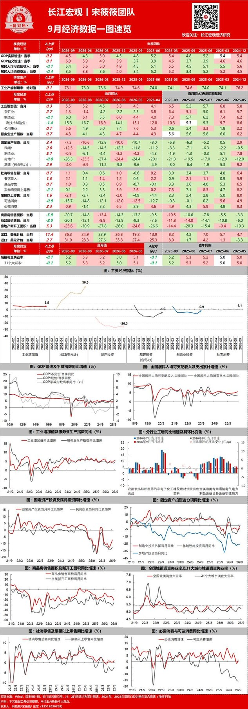
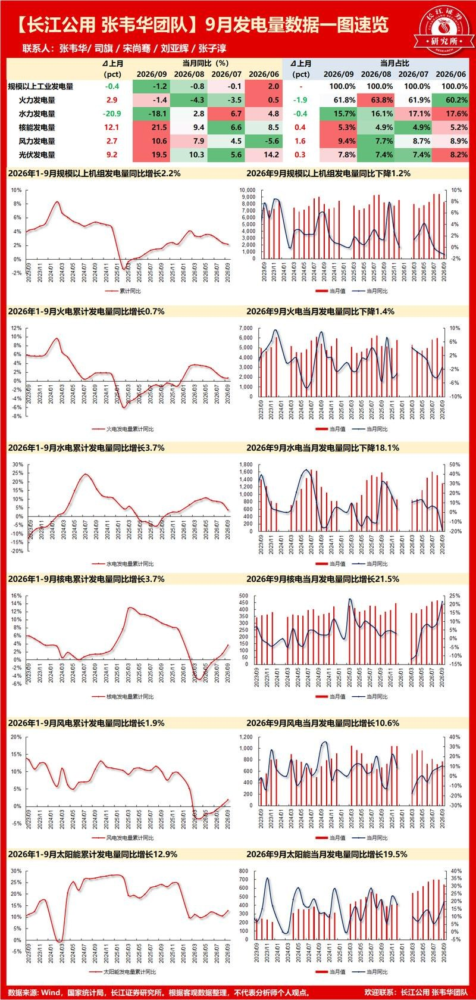
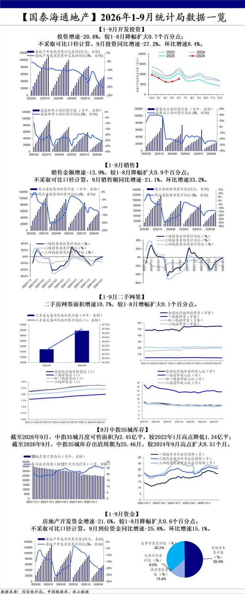
3 图
9月社零：去年同期基数放缓叠加长假推动上涨，乡村消费好于城镇
9月社零：去年同期基数放缓叠加长假推动上涨，乡村消费好于城镇
🌟社零总额：2026年9月合计社零名义同比+1.1%（较前值+0.7pct）；除汽车以外的消费品零售额同比+3.9%。
🛍️#餐饮增速持续优于商品，限额以上有所修复，9月份餐饮收入同比+2.1%（较前值+1.0pct），其中限额以上+2.0%（较前值+2.7pct）；商品零售同比+1.0%（较前值+0.7pct），其中限额以上-2.5%（较前值+1.5pct）。
🧑🌾#乡村消费优于城镇，9月份城镇收入同比+0.8%（较前值+0.6pct），乡村收入同比+2.7%（较前值+1.1pct）
🍚9月CPI环比+0.2%，同比上涨+0.9%（较前值+0.1pct），其中食品价格同比-1.7%，环比+0.4%，食品价格低于季节性水平0.8个百分点；服务价格同比+0.8%，环比-0.2%，暑假结束，带动出行价格有所回落。9月粮油食品（当月同比+6.7%，较上月同比数据+2.7pct，下同）、饮料（同比+5.0%，+0.1pct）、烟酒（同比+13.8%，+1.3pct）、日用品（同比+4.1%，+2.3pct）。
💄#可选消费修复回升。9月化妆品（同比+5.4%，+0.5pct），金银珠宝（同比-9.6%，+7.9pct）受价格波动以及需求影响，降幅收窄；纺织服装（同比+1.2%，+1.7pct），通讯器材（同比+31.1%，+3.8pct），受产品价格上涨以及新机发布带动，持续扩增。
📺#地产链持续下滑，汽车链显著承压。9月家电（同比+1.9%，-0.4pct），家具（同比-3.0%，+4.9pct）、装潢建材（同比-9.2%，+2.6pct）；根据乘联会数据9月乘用车零售量同比-28.0 %，环比+5.0%，整体总量承压、环比修复但力度有限。汽车消费端（同比-21.2%，环比-2.7pct），石油及制品（同比-0.8%，+6.2pct）。
🛵#外卖与到店拉动线上消费。1-9月网上商品和服务零售额15.15万亿元，累计同比+4.4%，较上月-0.2pct；9月网上商品零售额约1.7万亿元。
#线上渗透率较去年同期小幅升高，1~9月网上商品零售额9.51万亿元，累计同比+3.8%（较前值-0.5pct），占比【商品零售】/【社零】/【扣除汽车后商品零售】分别29%、25.7%、31.8%；其中吃、穿和用类商品同比+15.8%/+3.4%/+0.8%，吃、穿、用类增速均有所下滑。
#服务业持续修复，1-9月网上服务零售额5.64万亿元，累计同比+5.3%，较上月+0.2pct，累计同比有所提升。
【国金商社】9月社零：总量边际回暖超预期，结构剧烈分化
【国金商社】9月社零：总量边际回暖超预期，结构剧烈分化
🌟9月社零同比+1.1%，较8月加快0.7pct（8月约+0.4%），环比+0.35%（8月环比-0.16%），边际改善明确；1-9月累计同比+1.1%。剔除汽车后，9月社零同比+3.9%，汽车一个品类拖累整体近2.8pct。
🍽#餐饮好于商品，乡村好于城镇。9月餐饮收入同比+2.1%，高于商品零售的+1.0%；限上餐饮同比+2.0%，由负转正；乡村零售同比+2.7%，明显快于城镇的+0.8%。
📱#可选品结构性分化。9月通讯器材同比+31.1%（1-9月累计+18.1%），新品周期与AI终端换机驱动；烟酒同比+13.8%、文化办公+7.9%、化妆品+5.4%、中西药品+5.0%；服装鞋帽仅+1.2%，仍偏弱。
🚗#汽车加速承压，地产链边际分化。9月汽车类零售额同比-21.2%（降幅较6月-16.1%进一步走阔），是社零最大拖累项；家电类同比+1.9%转正（1-9月仍-4.9%），以旧换新政策边际见效；家具-3.0%、建材-9.2%，地产后周期仍在磨底。金银珠宝同比-9.6%，但较8月-17.5%大幅收窄7.9pct，高金价压制最剧烈的阶段正在过去。
🏪#业态分化延续。1-9月累计看，便利店+5.2%、超市+4.1%保持稳健；百货店-2.9%、专业店-2.2%、品牌专卖店-10.3%持续承压，#调改与性价比业态仍是确定性方向。
🛒#网上零售稳中偏弱，吃类高增。1-9月网上商品和服务零售额同比+4.4%，其中网上商品+3.8%（吃类+15.8%、穿类+3.4%、用类+0.8%），网上服务+5.3%；#服务消费仍是结构性亮点。
欢迎联系国金商社 于健 15821682853 / 谷亦清/代宇星
【9月宏观数据简评：原煤产量继续恢复，火电降幅收窄】国泰海通煤炭 黄涛
【9月宏观数据简评：原煤产量继续恢复，火电降幅收窄】国泰海通煤炭 黄涛
刚刚发布的9月宏观数据，9月单月原煤产量3.9 亿吨，同比 -6.8%，环比8月恢复3000万吨；1-9月原煤产量累计34.5 亿吨，同比 -3.5%。9月规上工业发电量8294亿千瓦时，同比下降1.2%，其中火电降幅收窄，同比下降1.4%。
1）产量恢复，继续印证供给收缩压力最大时刻已过。从数据看，山西特重大安全事故后，7月产量仅3.4亿吨，低于24-25年月均4亿吨，而8-9月产量恢复至3.6、3.9亿，在各地政府增产保供推动下，供给已经呈现复苏态势。而从10月微观数据了解到，除山西外主产区产量继续环比9月提升，预计10月原煤产量恢复4亿吨左右，供需错配压力最大时候已经结束。
2）火电需求降幅收窄，月底的冬储是最后一波大幅度需求集中释放。6月以来整体火电需求在天气不及预期背景下开始明显负增长，而考虑去年10月高基数，预计火电需求可能要到11-12月才有回正可能性。需求端看，在整体天气因素扰动中性前提下，月底附近北方冬储补库是近期最后一波需求集中释放，11-12月需求还要看今冬的天气形势。
3）政策关注加码，关注后续增产保供政策。9月开始随着煤价的快速拉升，政策加码对于煤炭关注，从鼓励疆煤外运到国家能源局倡导提速推进临时停产产能复产达产、山西试点政策；上周五看到发改委与能源局继续在山西推进煤矿复产增产保供工作，也看到部分临时核增产能增产保供的传闻，总体在煤价上千背景下政策推动保供的方向是确定的，关注后续政策对于产量的实际提升影响。
【山证医药|创新药动态更新】自免TCE：免疫重置深度清除B细胞，体外TCE及in vivo TCE探索长期缓解新范式
【山证医药|创新药动态更新】自免TCE：免疫重置深度清除B细胞，体外TCE及in vivo TCE探索长期缓解新范式
[太阳]自免治疗正迈向“长期无药缓解”，深度清除B细胞、实现免疫重置成核心路径。相较需体外制备与清淋预处理的CAR-T，TCE作为“现货型”双/多特异分子，一端结合B细胞靶抗原（CD19/CD20/BCMA）、另一端结合CD3形成免疫突触，激活T细胞耗竭致病B细胞，兼具疗效深度与给药便捷性。从已读出数据看，CD19、BCMA 传统TCE（体外）及in vivo TCE（体内）路线均实现深度B细胞清除与快速临床应答，CRS多为1-2级、罕见ICANS且无需清淋，成药性初步验证。
[玫瑰]CD19、BCMA两路线均已读出初步疗效。CD3xCD19 TCE端，天劢源和A-319 SLE I期：12例患者SLEDAI-2K由基线13.1分降至12个月1.7分，8/10达LLDAS、6/10达DORIS缓解，激素用量降67%；德琪ATG-201澳洲I期获批。CD3xBCMA TCE端，智翔金泰Velinotamig 2例难治性SLE患者给药后SLEDAI-2K由16、14降至0、2，均达完全肾脏缓解、未见CRS与ICANS；康诺亚CM336皮下给药治疗初诊系统性AL淀粉样变，21例100%达≥VGPR（71.4%CR），MRD阴性率与肾脏缓解率均100%，CRS仅14.3%且均低级别、无ICANS；和铂HBM7020以双BCMA位点、单价优化CD3降低CRS风险。
[玫瑰]mRNA路线的in vivo TCE将TCE改为体内表达，压低CRS。艾博生物ABO2203以LNP递送编码CD19×CD3×HSA三功能TCE，3例继发ITP均1个月内完全缓解并维持6个月，B细胞清除约4个月；自免16例无CRS、ICANS，AE以1-2级为主。剂泰科技LNP递送的MTS-109（CD3×CD19×BCMA三特异）临床前显示末次给药第3周B细胞再生、第6周复常，长征医院IIT已观察到积极早期数据，中美IND申报中。
[太阳]风险提示：早期小样本与跨试验数据不可比、临床数据不及预期、CRS等安全性事件、自免适应症拓展及商业化不及预期、竞争加剧等风险。
🌸【注塑机】景气度跟踪20261019
🌸【注塑机】景气度跟踪20261019
1、海天国际：7/8月均实现同比单位数增长，前三季度订单同比预计单位数增长，内贸优于外贸。
2、伊之密：下半年目标注塑机10-15%增长，压铸机40%的增长，外贸近年较稳定，预计优于内贸。
历史订单情况梳理欢迎联系~
【天风医药杨松团队】推荐医疗器械：防守价值凸显，把握内需改善＋外需高景气
【天风医药杨松团队】推荐医疗器械：防守价值凸显，把握内需改善＋外需高景气
[太阳]一、核心观点
1. 中报企稳、Q2 提速，Q3有望延续：2026H1 板块（209 家）营收 1838 亿元、同比 +7.6%，归母净利 225 亿元、+7.8%；Q2 单季营收 +11.7%、净利 +30.7%。剔除汇兑后盈利稳中有升，海外与高值耗材韧性更强。
2. 内需自 Q2 回升：重庆医院门急诊单月同比由 4-5 月 +3.8%~+3.9% 升至 6 月 +6.0%、7 月 +7.6%、8 月 +7.9%；天津 6 月 +10.2%（H1 累计 +7.6%）；广西 8 月诊疗 +4.4%、出院 +2.5%。院内需求修复有望传导至设备采购，但采购仍谨慎、集采常态化。
3. IVD：价格重估仍在路上，龙头凭"平台化＋流水线＋海外试剂"提升份额，海外试剂占比是利润质量关键。
4. 配置：防守必要性凸显＋估值修复窗口，建议"龙头稳健＋创新高增"，重点"平台化＋出海"。
[太阳]二、重点推荐
1. 平台化＋出海：迈瑞医疗、新产业、联影医疗
2. 内镜／IVUS：开立医疗、澳华内镜等
3. IVD：安图生物、普门科技等
4. 介入：南微医学、安杰思（2027 年加速）
5. 结构心：心脉医疗、佰仁医疗、健世科技-B
6. 电生理：惠泰医疗、微电生理
[太阳]三、风险提示：集采与价格治理超预期；设备招投标及装机不及预期；汇率波动；海外拓展与新品放量不及预期；新品注册不及预期；竞争加剧。
[玫瑰]联系人：天风医药 杨松／周海涛
【广发环保 陈龙&郭鹏】红利资产超额收益显著，掘金油价弹性与AI转型
【广发环保 陈龙&郭鹏】红利资产超额收益显著，掘金油价弹性与AI转型
[玫瑰]#建议关注 聚光科技、瀚蓝环境、朗坤科技、晨丰科技、上海实业控股、绿色动力环保、洪城环境等
[烟花]#红利资产超额收益显著，10月调整延续抗跌，关注固废、水务高股息标的
7月以来红利指数上涨约15%，同期沪深300、创业板指分别下跌约16%、35%；10月以来红利指数逆势上涨约2%，#绝对与相对收益优势兼备。环保资产中，绿色动力环保、粤海投资7月以来均上涨23%，上海实业控股、兴蓉环境均上涨14%；10月以来永兴股份、军信股份、上海实业控股仍上涨4%。#高股息配置价值突出，绿色动力环保、光大环境TTM股息率分别为6.1%、5.9%，上海实业控股、中国水务、洪城环境分别为8.3%、6.2%、5.0%。
[烟花]#SAF出口量、UCO出口价创新高，餐厨油脂资源价值凸显
26年8月我国SAF出口量13.15万吨、UCO出口均价8056元/吨，均创年内新高；1—8月UCO出口256.95万吨（同比+55.1%）。最新UCO价格1200美元/吨，较年初上涨14.83%，#SAF-UCO价差由约790美元/吨走阔至约1150美元/吨。油价上行预期强化生物燃料替代经济性，SAF扩产带动原料需求，#掌握餐厨特许经营权的UCO资源方有望受益。山高环能通过25～30年餐厨特许经营锁定原料，近期定增募资6.53亿元已到位，夯实扩产基础；朗坤科技布局北上广深核心城市餐厨资源，期待#北京通州2100吨/日项目 投产贡献自产UCO增量。
[烟花]#AI算力硬件、PCB景气延续
#盈峰环境：算力租赁进入兑现期。26H1智云计算收入6.86亿元（同比+3436%），其中算力租赁收入6.74亿元、占总营收8.6%，算力相关使用权资产53亿元，第三增长曲线逐步兑现。#晨丰科技：配售电量利齐升，叠加AI检测弹性。公司间接持有康代智能约8%股权，其PCB及IC载板AOI设备有望受益AI服务器与先进封装扩产；26H1配售电收入0.98亿元（同比+52.55%）、毛利率25.4%（同比+3.1pct），科尔沁智算中心已完成规划设计，#“配网+算电协同+AI检测”布局渐成。
如需个股细节和数据底稿，欢迎联系广发环保团队～
风电拐点深度路演
风电拐点深度路演
💰1、行业观点：盈利的困境反转【PPT】
2027年风机板块净利率有望从1%大幅反弹至3-5%，出口订单集中兑现，电站交易回暖贡献投资收益。板块盈利困境反转始于2026年底，集中爆发于2027年。
出口、海风拉提供结构化盈利弹性。利好风电整机、铸锻件、齿轮箱环节。重点推荐：三一重能。
💰2、个股推荐：三一重能【PPT】
风机毛利率26H2持续改善，26Q4电站交易集中兑现投资收益；27-28年出海加速，26-28年盈利与区间：8-10亿，13-15亿，21-25亿，
短期看26年PS修复到1倍，对应20%涨幅（260亿），27-28年看300-500亿（动态PE20倍）。
💰3、继续看好宁德时代、正泰电器、盛弘股份、东方电缆、其他海风标的【PPT】
📌高盛中国午盘
📌高盛中国午盘
💡上证综指 +0.16%，科创 50 -1.68%。
💡上证 50 +0.29%，创业板指 -1.07%。
💡沪深 300 +0.09%，中证 500 -0.14%。
💡A 股总成交额（万亿人民币）0.98。
💡受区域市场波动加剧影响，中国股市低开，但至午间收盘前成功收窄跌幅。
💡长鑫存储（CXMT）成为市场焦点，因三季度业绩预告引发抛售，开盘一度大跌 8%，午间稳定在 - 6% 左右。
💡中国市场的防御性板块延续了超额收益表现，银行股再创新高，家电板块则反映了优于预期的零售数据。
💡下行方面，房地产板块仍拖累市场情绪，随着存储芯片大厂长鑫存储开盘跳空低开，其供应链股价也普遍走低。
💡宏观方面，三季度 GDP 同比增长 4.5%，高于市场预期的 + 4.4%。
💡资金流向：卖盘为买盘的 1.2 倍。
💡买入家电、白酒和银行；卖出中国 AI 板块。
野村——中国拟出台AI技术出口管制新规
野村——中国拟出台AI技术出口管制新规
野村针对中国商务部与科技部于10月16日联合公布的《
禁止出口限制出口技术目录 ↗ 》修订草案（新增40项涵盖AI、生物医药及光伏的技术，咨询期至11月15日）进行深度解读。野村核心判断为：短期对国内基础模型行业冲击可控，但独立AI实验室的海外扩张路径将面临实质性重塑，监管在“技术主权”与“追赶全球”之间呈现务实平衡。
1. 管制框架：分级分类，精准聚焦前沿与敏感技术
草案将AI技术划分为“禁止出口”与“限制出口”两类。
• 禁止类聚焦敏感数据安全：包括深度伪造检测、用于国安的高性能网络攻击代理、以“核心数据”训练的基础模型，以及涉及关键基础设施与国防的高性能代理，判定标准锚定技术用途与数据属性，而非单纯模型参数规模。
• 限制类覆盖AI全链条（基础模型、代理、芯片、算力集群）。触发门槛满足以下任一条件即可：累计训练算力达10^26 FLOPs、参数量超2万亿、或在公开评估中位列全球前十；另若使用“重要数据”训练且不符合微量豁免（训练数据占比<0.1%且无法还原），亦纳入限制。
2. 豁免与便利化条款：开源与云服务路径获明确绿灯
野村强调，草案明确豁免已公开发布的开源模型，当前中国主流开放权重（open-weight）前沿模型大概率可获豁免。同时，为降低合规摩擦，监管给出多重自动批准通道：满足门槛的开源模型注册即自动获批；限制类模型若部署于自有海外基础设施（如海外自营数据中心）可自动获批；通过API、App、网页或轻量化端侧部署（手机/PC）完全不在管制范围内；仅当涉及海外本地化部署（如向海外客户交付实体或私有化实例）时才需严格申报。此外，跨境技术所有权转移、国内技术海外授权或实际控制人变更，均需事前登记。
3. 野村核心研判：独立AI实验室承压，互联网平台占优
• 短期影响可控：因现有开源/开放权重模型获豁免，且轻量模型（如DeepSeek V4.1 Flash、Qwen3.8-Flash）因参数与算力未达门槛，海外高性价比服务不受实质影响，行业景气度维持。
• 独立AI实验室面临两难：受国内算力约束，部分实验室原计划将未来模型置于海外云上以服务全球用户，新规下此路径除非被认定为“开源”或具备自有海外机房，否则将被阻断。野村认为，自建海外数据中心的高资本开支门槛，将使独立实验室处于劣势。
• 头部互联网平台优势凸显：阿里巴巴（BABA US，买入）、腾讯（700 HK，买入）、字节跳动（未上市）因已具备海外自营数据中心资产，可无缝利用“自有基础设施部署自动批准”条款，继续扩大全球AI服务覆盖。野村因此重申阿里巴巴为覆盖板块内的首选标的，逻辑在于其AI云强度与电商现金流企稳的双击。
4. 监管意图与模糊地带：务实主义下的动态博弈
野村指出，草案在“核心数据/重要数据”界定、全球排名机构认定等关键细节上留有较大自由裁量空间，为未来执行调整预留弹性。其底层假设是：监管层在严守安全底线的同时，希望中国AI实验室在算力受限下仍能通过海外用户反馈与收入加速追赶全球领先者。因此，只要前沿模型暂未实现全面反超，当前开放权重实践大概率被默许为广义开源。野村估算，海外市场贡献独立实验室收入的30%-50%，且高频海外使用是模型迭代的关键燃料，故政策短期不会主动切断这一竞争窗口。
5. 主要风险与观察点
潜在下行风险包括：未来细则收严将开放权重重新定义为非开源、海外本地部署审批趋严影响B端出海、以及算力制裁与出口管制的交叉升级。投资者需重点关注11月15日咨询期结束后的正式文本，以及首批模型备案案例的监管口径。
结论：野村认为，此次AI出口管制提案本质是“安全围栏内的竞争许可”——不阻碍中国模型参与全球市场，但将扩张模式从“轻资产海外云调用”引导至“重资产自营部署”，从而利好具备全球基础设施的互联网巨头，并倒逼独立实验室要么加速自有海外节点建设，要么深化与云厂商合作。维持对阿里巴巴的“买入”评级及行业首选推荐，建议投资者在AI政策混沌期聚焦有真实海外算力资产与合规缓冲垫的头部平台。
伯恩斯坦——全球能源存储：电池行业周报
伯恩斯坦——全球能源存储：电池行业周报
核心结论：北美储能与电动化供应链正加速“近岸化”与“技术多元化”，中国锂电材料端因欧盟混合动力车出口限制预期而承压，欧洲储能资产在电价波动下迎来季节性盈利窗口，全固态电池与新型体系（钠离子、钒离子、锂金属）正从试点走向量产前夜。
1. 北美动态：LMR电池、ESS设备重构与锂资源本地化
通用汽车（GM）选定韩国供应商体系，为其与LG新能源（LG Energy Solution）联合开发的下一代棱柱形LMR（富锂锰基）电池供应组件、材料与设备，目标在2028年于田纳西州Spring Hill工厂量产，能量密度较LFP提升约33%而成本相近，首期配套主流电动皮卡（续航超400英里）。LG新能源因核心设备商Daejin Machinery违约，正紧急重构其ESS设备供应商名单，将订单转移至SYSTEM R&D、HyVISION SYSTEM等，以支持其在俄亥俄州的模块产能扩张。固态电池新锐Factorial Energy（梅赛德斯-奔驰背书）在韩国天安扩产中试线，选定PNT用于干法电极设备、Philenergy用于电芯组装，为波士顿未来量产线验证工艺。资源端，大宗商品交易商托克（Trafigura）与EnergyX签署十年期、价值超20亿美元的锂产品承购协议，锁定得克萨斯与智利项目超10万吨电池级锂，明确服务于美国本土电池制造。Rivian则与Redwood Materials深化合作，将制造废料与退役电池回收再用于储能，已部署10 MWh“二次生命”储能系统，回收率超95%关键矿物。
2. 亚洲动态：中国锂价承压、产能再扩张与固态/钠电落地
受欧盟与中国就限制混合动力车出口达成协议影响，市场下调电池材料需求预期，中国锂期货单周暴跌10%至每吨104,740元人民币，高盛预计2026年四季度锂市场将走向平衡并随后两年转向过剩。长安汽车与宁德时代（CATL）计划将合资电池产能从50GWh扩至75GWh，新增25GWh设施预计2027年投产，并深化固态与钠电池合作。宝马在沈阳启动第六代高压电池量产（全球第三座Gen6工厂），采用大圆柱电芯与细胞到包（cell-to-pack）架构，能量密度提升超20%、充电速度与续航改善达30%。广汽集团旗下Greater Bay Technology（GBT）在广州改造现有产线，实现全固态电池 Cells 量产（初始1GWh，可扩至4GWh），采用有机-无机复合电解质，可在传统锂电设备上兼容生产。赛力斯（Seres）延长与CATL的长期绑定，Aito全系搭载CATL电池，重庆工厂将新增10-12GWh产能（总超20GWh），并拓展至充电与海外市场。韩国Standard Energy呼吁政府支持钒离子等非锂储能技术示范，Eco&Dream募资350亿韩元备战2027年前驱体创纪录出货及硫化物固态电解质等下一代材料。蔚来在国庆假期完成119万次电池换电，日均增长22%，凸显换电网络利用率提升。
3. 欧洲动态：储能盈利窗口开启、固态装车测试与材料创新
彭博新能源财经（BNEF）指出，欧洲自2022年能源危机以来累计投入约400亿美元建设的电池储能资产，正因天然气价格波动与可再生能源出力变化而迎来“强劲冬季盈利窗口”，英国储能收入中约73%已转向批发交易套利。弗劳恩霍夫研究所（Fraunhofer）开发出新型铝负极架构，可消除体积膨胀、省去石墨/硅与铜集流体，有望降低材料与制造成本且兼容现有产线。固态电池方面，ProLogium与Rimac Technology规划2027年功能性电池包、2027下半年全包、2028下半年上路测试；法国ACC工厂达产500万只电芯（可装4万辆车），2027年将再启12.9GWh区块（总产能近26GWh，长期目标40GWh）。查尔姆斯理工大学研究可重构电池包，通过旁路弱电芯延长EV电池寿命超20%。标致雪铁龙（Peugeot）发布RCZ Vision概念车，搭载Factorial固态电池与1000V架构，宣称续航600公里、10-80%充电仅需10分钟（仍处概念阶段）。
4. 其他区域与材料价格：硫化物/硫正极处于验证期，金属价格全面走弱
英国-澳大利亚Gelion与一家全球前15车企签署协议，评估其纳米封装硫（NES）正极在液态/固态电解质及不同负极组合下的表现，旨在降低关键原料依赖。商品价格方面（截至10月16日），氢氧化锂现货周跌16%、月跌22%，电池级碳酸锂现货月跌21%；LFP正极材料月跌10%，前驱体LFP月涨1%但NMC前驱月跌5%；LFP电芯现货价报57美元/kWh（周跌2%），LFP模组价70美元/kWh（同比跌9%），NMC电芯报价72-76美元/kWh。整体看，材料端延续疲软，电芯价格稳中微降，反映需求预期修正与产能释放的滞后影响。
5. 板块估值与伯恩斯坦观点：基本面分化，储能韧性优于车用动力
从伯恩斯坦跟踪的电池产业链公司估值看，CATL A股对应13.1倍2026年预期市盈率，H股17.8倍；LG新能源、三星SDI因盈利波动估值难用PE衡量，但市净率与EV/EBITDA处于历史低位；锂矿商如天齐锂业A股2026年PE仅9.3倍、H股5.2倍，已较充分反映过剩预期；正极材料商EcoPro BM 2026年PE高达124倍，显示市场对其长期高镍渗透率仍存幻想但短期盈利承压。伯恩斯坦在报告重申其年度核心判断：储能（ESS）需求已成为电池行业增长的主引擎，数据中心配储与电网级储能的爆发部分对冲了EV增速放缓；技术路线上，LMR、固态、钠电在2026-27年处于“投资期而非收割期”，投资者应关注具备量产兑现能力的设备与材料龙头，而非单纯追逐概念。
结论：本期周报并未改变伯恩斯坦对电池板块的整体配置框架，但进一步印证了“储能强于动力、材料弱于电芯、新技术早于大规模商业化”的格局。操作上，建议投资者短期规避纯材料端因锂价与需求双杀的波动，逢低布局与北美/欧洲储能供应链深度绑定的电池制造商与设备商，并紧密跟踪2026年四季度欧洲储能现货价差、美国IRA补贴细则落地以及固态电池中试良率数据。
瑞银——日本电子元件板块更新：亚洲投资者交流反馈——基本面乐观，但股价表现分歧
瑞银——日本电子元件板块更新：亚洲投资者交流反馈——基本面乐观，但股价表现分歧
核心观点：板块基本面获广泛认可，AI半导体相关标的虽受资金面与短期供需扰动出现回调，但投资者对MLCC（多层陶瓷电容器）、ABF载板及HDD（机械硬盘）产业链的关注度急剧升温；瑞银维持对村田制作所（Murata Manufacturing）与揖斐电（Ibiden）的“买入”评级并列为行业首选，同时建议关注罗姆（Rohm）的盈利反转与京瓷（Kyocera）的AI业务重估机会。
1. 路演情绪与板块分歧：基本面无虞，但仓位与需求担忧压制短期股价
本次路演期间日经225指数下跌5.4%，AI半导体个股领跌，但绝大多数投资者仍对板块中长期基本面抱有信心。抛售主因并非行业逻辑破坏，而是投资者仓位过于拥挤、对短期供需边际变化的敏感度上升，以及部分资金对AI整体资本开支放缓的尾部风险进行对冲。瑞银指出，这种“基本面与股价表现背离”的窗口，往往为选择性配置提供了更好的风险收益比。
2. 细分赛道聚焦：MLCC涨价初期受捧，ABF载板与HDD产业链成新热点
• MLCC：村田制作所（6981.T，买入）与太阳诱电（Taiyo Yuden，6976.T，中性）在每场会议中被提及。投资者普遍看好村田在MLCC涨价周期中的龙头弹性，认为提价仍处早期阶段；但部分资金因短期缺乏股价催化剂，或质疑其提价幅度能否复制SEMCO（三星电机）的强势，而转向短期更看好与TDK达成业务联盟的太阳诱电。
• ABF载板：揖斐电（4062.T，买入）基本面获高度认可，投资者主要顾虑在于其估值倍数已处高位，但瑞银仍将其列为首选之一，看好AI服务器与高端算力芯片对ABF载板的持续拉动。
• HDD相关：针对TDK可能出售HDD磁头业务的传闻，多数投资者认同瑞银观点，即TDK缺乏出售动机（因磁头业务与东芝HDD竞争力深度绑定）；但也有部分投资者基于TDK历史资产剥离记录，认为出售概率不低，从而关注相关供应链的潜在变局。
3. 近期评级调整的市场反馈：京瓷上调遭质疑，尼得科下调无争议
• 京瓷（6971.T）：瑞银近期将其从“中性”上调至“买入”，核心逻辑是AI相关业务（如半导体零部件、精密陶瓷）带来的潜在上行空间。但许多投资者挑战该逻辑，认为京瓷业务高度多元化，难以清晰拆分并量化AI业务的盈利贡献。瑞银回应称，正是市场对此的忽视构成了预期差。
• 尼得科（Nidec，6594.T）：瑞银近期下调至“中性”，投资者虽讨论不多，但普遍认为其短期业绩能见度太低、不确定性过高，暂时缺乏配置价值，与瑞银判断一致。
4. 瑞银推荐组合与估值框架：首选村田与揖斐电，次选罗姆与京瓷
瑞银给出明确的偏好排序：
• 第一梯队（Top Picks）：村田制作所与揖斐电，共同逻辑为AI增长动能、自身竞争壁垒叠加产品涨价周期，二者估值尚未完全透支未来两年的盈利复合增速。
• 第二梯队：罗姆（6963.T，买入），看好其盈利拐点（ earnings turnaround ）、AI相关业务（如功率器件在数据中心的应用）机会，且基于分部估值法（SOTP）显示当前股价具备显著折让。
• 第三梯队：京瓷（6971.T，买入），作为AI业务多元化暴露的替代标的，且资产负债表与现金流稳健，业务组合持续优化。
5. 风险提示与估值方法
瑞银在报告中明确提示三大下行风险：一是宏观变量（如美国个人消费）超预期波动；二是金融市场（尤其是美股）快速调整引发连锁反应；三是基材成本（石化与金属）大幅上涨侵蚀元件厂商毛利率。估值层面，瑞银对揖斐电、村田、京瓷等主要采用未来12个月预期市盈率（PER）定价，对罗姆与太阳诱电则结合市净率（PBR）与资产重估逻辑，目标价设定严格对应瑞银的盈利预测与行业平均溢价区间。
结论：瑞银对亚洲电子元件板块的定性是“短期波动无碍中期AI硬件渗透率提升的主线，当前回调属于‘基本面稳健下的仓位再平衡’”。操作上，建议投资者利用财报季前的情绪低点，超配“MLCC涨价弹性（村田）+ ABF载板壁垒（揖斐电）”，并适度配置“功率半导体反转（罗姆）”作为卫星仓位，回避短期叙事混乱的标的。
野村——中国医疗健康：欧日路演反馈——基本面韧性强劲驱动资金回流；AI制药、CRDMO与创新药构成外资核心关注主线
野村——中国医疗健康：欧日路演反馈——基本面韧性强劲驱动资金回流；AI制药、CRDMO与创新药构成外资核心关注主线
野村拜访欧洲与日本约40家机构投资者，其中多为跨板块配置型通才（generalist）。整体反馈显示：海外长钱对中国医疗健康板块的风险偏好已明显修复，板块被视为中国权益市场中少数的基本面亮点之一。核心研判如下：
1. 资金面：AI主题轮动与防御属性共振，驱动板块重估
自6月以来，A股/H股“AI投资主题轮动”带来的资金迁徙，令医疗这类典型防御性板块的吸引力边际抬升；叠加三季度以来CRDMO服务收入与对外授权（out-licensing）兑现带来的扎实财报表现，外资对板块的关注度显著升温。野村强调，这种重估并非单纯估值扩张，而是有海外业务收入兑现作为基本面锚。
2. 投资叙事分歧点：对AI制药（AIDD）持审慎立场
路演中被问及频率最高的议题即AI赋能新药研发。野村明确给出与市场热度错位的一线审慎判断：当前AI主要渗透在临床前早期环节，而该环节在整个药物研发的时间轴与费用轴上占比均偏小；且AI能否稳定识别全新靶点（novel target）仍未获临床层面验证。这一“逆共识”表态，是本次路演纪要区别于市场普遍叙事的关键专业注脚。
3. 产业主线共识：CRDMO与Biotech创新竞争力获广泛认同
受访投资者大体认同野村既有框架，即在CRDMO与biotech两条主线上，中国企业的全球竞争力正处于系统性抬升通道。政策维度上，野村同步提示刚刚发布的“十五五”医药产业规划已将国际化与创新列为未来数年核心方向；同时跨太平洋授权协作的政策尾部风险边际缓和，构成中期估值修复的制度背景。具体到CRDMO供给侧，多肽赛道的全球需求景气被反复讨论，野村判断中国供应商有望持续攫取份额。
4. 对外授权（out-licensing）趋势：从“质疑质量”转向“接受溢价”
2025年创新药BD交易已创历史新高，2026年年初至今（YTD）再创纪录。关键边际变化在于，伴随越来越多积极临床读出（positive readout）与高价值交易落地，海外投资者对中国资产科学质量的怀疑已明显消退。野村认为，只要中国临床与科研人才密度不减，本土源头创新供给不会断档，该趋势具备中期可持续性。
5. 首选标的重申与个股边际观点
野村维持药明康德（2359.HK / 603259.CH，买入）与信达生物（1801.HK，买入）为行业首选双核：
• 药明康德年内股价已接近翻倍，市场关切“是否还宜右侧加仓”。野村测算其远期市盈率仍稳于20倍附近，涨幅主要由盈利上修驱动而非估值泡沫，且2027年一致预期盈利增速约20%，上行空间未被透支；DCF框架下H股目标价209.99港元（WACC 10.1%、永续增长3.5%），A股191.09元人民币。
• 信达生物海外认知度仍偏低，野村推荐逻辑立足中长期：过去12个月内连续落地三笔跨国药企（MNC）重磅授权，证明其商业化效率与研发转化能力；短期需正视2026年四季度生物类似药集采（VBP）带来的阶段性盈利扰动，但不改出海期权价值。DCF目标价123.17港元（WACC 10.3%、永续4.0%）。
其余边际讨论还包括：恒瑞医药二季度表观偏弱背后成因复杂；迈瑞医疗等器械龙头增速拐点信号尚未明朗。
6. 主要下行风险框架
药明康德一端在于竞争加剧致增速放缓，以及美国防部1260H清单相关的地缘诉讼不确定性；信达生物一端聚焦GLP-1赛道拥挤、生物类似药集采冲击及IBI363临床推进不及预期。
结论：野村整体定调为结构性看多、叙事上反共识——不追AI制药的情绪溢价，坚定押注有海外现金流兑现的CRDMO与有真实BD兑现能力的头部biotech。在外资由“回避中国医疗”切向“选择性重配”的窗口期，药明康德与信达生物构成其对外路演的标准配置抓手。
瑞银——生益科技（600183.SH）：全面释放覆铜板（CCL）上行周期动能
瑞银——生益科技（600183.SH）：全面释放覆铜板（CCL）上行周期动能
核心结论：公司3Q26净利润大幅超出市场预期，印证覆铜板（CCL）涨价与产品结构升级是本轮盈利爆发的核心杠杆；尽管近期A股科技板块情绪谨慎导致股价回调，但公司当前估值已显著低于历史均值，随着AI CCL规格持续升级（尤其是PTFE材料导入），其长期龙头地位与盈利能见度将驱动估值修复，维持“买入”评级及209元人民币目标价。
1. 业绩预览：3Q26盈利强劲超预期，9M26已完成瑞银全年预测八至九成
生益科技披露9M26初步业绩：归母净利润区间为64.6亿至68.7亿元人民币（同比+164%至+181%），扣非归母净利润区间为61.2亿至65.3亿元（同比+157%至+174%）。以中值计，9M26归母净利润约66.7亿元，已达瑞银全年预测值的81%、路孚特（Reuters）一致预期的89%，并为2025全年净利润（33.3亿元）的2.0倍。隐含3Q26单季归母净利润中值约33.8亿元（同比+232%/环比+59%），较瑞银及路孚特预期分别高出51%和50%，为显著超预期（strong beat）；若加回非经常性损益，3Q26扣非净利润中值约34.1亿元（同比+241%/环比+87%），甚至高于报告净利润，彰显扎实的盈利质量。
2. 盈利驱动拆解：CCL为最强引擎，涨价与AI高混纺双重贡献
瑞银测算，3Q26子公司生益电子（SYE，PCB业务）隐含归母净利润中值约8.0亿元，同比/环比仅增长37%/20%；反推3Q26 CCL业务净利润中值约29亿元，同比暴增335%、环比增长68%。这与瑞银此前判断一致——尽管1H26 FR4 CCL提价幅度低于预期，但2H26迎来集中补涨。瑞银此前预测行业FR4 CCL均价3Q26环比增50%，而生益实际CCL利润增速达68%，超额表现主要来自两点：一是产品提价带来的毛利率扩张，二是AI高规格CCL（如M9、PTFE等）销售占比快速提升。上周英伟达在OCP 2026展示PTFE交换机方案，进一步验证高端材料升级趋势，而生益目前在PTFE路线布局领先，有望长期受益。
3. 短期增长可持续，长期竞争壁垒加固
公司管理层将增长归因于：CCL量增、涨价及产品结构优化，以及PCB业务受益于AI需求持续强劲。瑞银近期行业观点指出，FR4 CCL上行周期有望延续至2027年上半年，为生益及建滔积层板等提供短期盈利支撑；上周PCB同业强劲的3Q业绩亦印证成本传导顺畅。更长远看，2027至2028年AI服务器对CCL规格的进一步升级（PTFE、低损耗材料渗透），将打开生益的长期成长空间，且其技术储备与客户认证壁垒确保市场领导地位。
4. 盈利预测调整与估值：目标价维持209元，看好估值折让下的重估机会
基于3Q26超预期表现，瑞银上调2026至2028年EPS预测23%/16%/11%，以反映收入超预期及毛利率因涨价与结构改善而扩张。同时，因2026年盈利基数抬高导致2026-2029年EPS复合增速（CAGR）从39%降至33%，且近期投资者对A股科技股态度趋谨，瑞银将目标价2027年预期市盈率从40倍下调至34倍，但12个月目标价仍维持在209元人民币不变（较当前114.60元有约82%的上行空间）。
当前生益A股交易于18倍（瑞银预期）/21倍（市场一致预期）的2027年远期市盈率，显著低于其过去五年平均23倍的水平；过去一个月股价回撤26%，大幅跑输中国台湾同业（如EMC+10%、台光电+56%、南亚塑胶+30%、TUC+14%）。瑞银认为，在盈利高增确定性极强的背景下，该估值折让不可持续，公司具备明确的重估（re-rating）催化条件。
5. 量化情绪与风险提示
瑞银量化研究review显示，分析师对生益未来六个月行业结构评分给到4分（改善），对短期EPS预期偏向正面 surprise，且盈利上行风险大于下行。主要下行风险包括：原材料价格大幅通胀、低端CCL产能退出缓慢加剧竞争、以及家电/通信/汽车等终端需求弱化。但综合来看，供需紧张格局与AI材料升级主线未变。
结论：瑞银对生益科技的定性是“短期周期弹性与长期AI材料升级共振，估值已进入历史低位区间”。操作上，维持“买入”评级与目标价209元，建议投资者在财报确认CCL利润爆发后，聚焦其2027年PTFE及M9等高端产品放量节奏，当前位置具备显著的风险收益比优势。
瑞银——长鑫科技（CXMT，688825.SH）：3Q26营收环比增15-21%符合预期，但归母净利显著低于预测
瑞银——长鑫科技（CXMT，688825.SH）：3Q26营收环比增15-21%符合预期，但归母净利显著低于预测
核心结论：3Q26营收端延续强劲增长动能，环比增幅15-21%、同比增幅589-619%，基本符合市场预期，但归母净利环比仅增1-4%，大幅低于瑞银及路透一致预期，主要拖累来自新产能爬坡带来的折旧摊销压力、产品组合阶段性调整以及IPO相关管理费用与研发投入的抬升；瑞银据此下调2026-28年盈利预测5.5%-6.5%，将基于市净率（PB）的12个月目标价从80元下调至76元，但维持"买入"评级，核心逻辑在于DRAM行业周期韧性、长鑫在国内市场的份额扩张趋势以及相较A股半导体同业更具吸引力的估值折让。
1. 业绩拆解：营收达标但盈利失速，ASP涨幅被成本端侵蚀
长鑫指引9M26营收2650-2700亿元，对应3Q26单季营收1147-1197亿元，环比增长15-21%、同比增长589-619%，中位数1172亿元较瑞银原预测低5.8%，但与路透一致预期基本持平。问题在于盈利端：9M26归母净利润指引1310-1325亿元，对应3Q26单季534-549亿元，环比仅增1-4%，中位数541亿元较瑞银原预测低9.8%，较路透一致预期更是低28.5%。3Q26归母净利率约46%，环比下滑7个百分点、较1Q26亦低3个百分点。瑞银测算3Q26 DRAM ASP（美元/片）环比上涨约13%，但新产能投产带来的折旧成本跳升、低毛利产品占比阶段性提升、以及研发费用与IPO相关管理费用的集中确认，共同侵蚀了利润率的扩张幅度。
2. 盈利预测下调：收入与毛利率假设同步修正，但长期盈利能力框架未变
基于3Q26指引，瑞银将2026年盈利预测下调5.5%，主要反映收入假设下调2.7%与毛利率假设下调0.7个百分点；2027-28年盈利预测同步下调6.5%，同样源于收入与毛利率假设的审慎修正。调整后，2026-28年EPS预测分别为2.96元、5.07元、6.56元，分别低于市场一致预期0.3%、3.0%、9.5%。值得注意的是，即便经历下调，2027年EPS仍隐含71%的同比增长，反映瑞银对2027年DRAM供需格局与长鑫产能释放节奏的中期判断未发生根本性动摇。
3. 估值框架：PB法锚定8.6倍2027E PB，76元目标价隐含68.8%股价上行空间
瑞银采用市净率估值法，维持2027年预期8.6倍PB的目标倍数（对应2028-30年平均ROE 36%、股权成本8.5%），将目标价从80元下调至76元，对应15倍2027年预期市盈率。当前股价45.02元仅交易于9.8倍2026E PB与15.2倍2026E PE，相较A股半导体同业（晶圆代工、利基型存储设计公司等）存在显著估值折让。瑞银测算12个月预期股价涨幅68.8%，叠加2.0%股息收益率，总预期回报率达70.8%，较市场基准假设高出64.1个百分点，风险收益比突出。
4. 量化情绪指标：行业结构与监管环境均指向改善，短期存在正向催化剂
瑞银量化研究评分显示：未来六个月行业结构改善评分为4分（5分制，1=恶化、5=改善），监管环境评分为4分，过去3-6个月公司基本面趋势评分为4分，下一次财报相对一致预期的盈利惊喜倾向评分为4分（偏正面），但相对瑞银自身预测的盈利风险分布评分为3分（上下行风险均衡）。值得注意的是，瑞银明确标注未来三个月存在"正向催化剂"，尽管具体时点与内容未在本次报告中披露，但结合行业节奏推测，大概率指向高端DDR5/LPDDR5X产品放量或国产服务器供应链订单落地。
5. 风险与长期考量：周期属性未消失，但行业集中度提升已压平波动
瑞银提示DRAM行业虽因供给端高度集中、增速放缓而长期周期性风险有所下降，但商品属性仍存，智能手机/平板需求波动与产品组合变化仍是核心变量。行业资本密集特征意味着每2周至3个月的合约价谈判带来现金流剧烈波动，需维持充足资本储备。长期技术路径上，新型存储技术可能补充甚至替代现有架构。具体下行风险包括：新产能释放导致价格下跌、技术迭代进度慢于预期、AI渗透率不及预期拖累服务器存储需求、地缘政治限制加码、行业竞争加剧导致份额流失。但瑞银认为，长鑫作为国内唯一具备DRAM全流程自主能力的IDM厂商，在国产替代与AI算力建设双重驱动下的份额扩张逻辑具备足够的安全边际。
结论：瑞银对长鑫存储的定性是"短期盈利扰动不改中期周期上行与国产替代双击逻辑"。3Q26净利低于预期属于新产能爬坡期的阶段性成本压力，而非需求端或竞争格局的恶化信号。操作上，维持"买入"评级与目标价76元，建议投资者利用财报后股价回调窗口逢低布局，重点关注4Q26 DRAM合约价走势、DDR5产品认证进展以及2027年资本开支指引的边际变化。
野村——股票策略：亚洲路演反馈——印度市场情绪谨慎偏空，但自下而上选股需求犹存；医疗健康板块聚焦医院与CDMO分歧
野村——股票策略：亚洲路演反馈——印度市场情绪谨慎偏空，但自下而上选股需求犹存；医疗健康板块聚焦医院与CDMO分歧
野村印度策略团队发布最新路演纪要，复盘过去一周在新加坡、马来西亚与中国香港与机构客户的交流情况。核心结论为：印度大盘面临估值、宏观与资金面的三重逆风，但长线资金并未离场，而是转向更具纪律性的自下而上选股；医疗健康板块内部出现剧烈分化，医院资产持续遭抛售，CDMO与头部仿制药则获结构性青睐。
1. 印度市场整体：估值透支与宏观减速压制指数，但多头仍视其为分散化工具
路演反馈显示，机构对印度主流指数（Nifty）的立场普遍为谨慎至偏空。核心压制因素包括：前端估值处于历史高位（金融、IT服务与消费板块均缺乏性价比）、债券收益率上行引发贴现率压力、外国机构投资者（FII）持续流出，以及政策干预（如保险分销新规、药品贸易利润上限）对风险偏好的打击。宏观层面，高基数、通胀黏性与财政货币刺激效应衰减，令未来几个季度增长放缓成为共识；此外，美印贸易谈判受阻、潜在关税威胁及资本利得税减免悬而未决，进一步削弱短期配置意愿。
然而，空头逻辑并未演变为全面清仓。部分多头投资者将印度视为AI交易与非AI交易分裂环境下的分散化配置工具，预期若全球AI交易降温，印度市场有望相对跑赢。同时，少数中型股（mid-cap）贡献了显著的绝对收益，促使资金继续挖掘自下而上的阿尔法。野村因此建议客户放弃追叙事，回归价值，精选成长，并维持2027年3月Nifty目标位24,000点（对应17倍FY28预期盈利），但提示实际估值中枢将低于过去三年水平，因需计入更高债券收益率、大宗商品成本传导及需求放缓对盈利的潜在下修压力。
2. 行业配置框架：结构性看多出口链、数据中心与国防，回避消费
野村给出的自上而下偏好排序清晰：
• 建设性看多（Constructive）：汽车零配件、工程与制造、资本货物、制药；
• 估值驱动看多（Positive on valuations）：金融、IT服务（但需甄选AI落地标的）；
• 谨慎（Cautious）：消费；
• 中性（Neutral）：大宗商品。
驱动逻辑在于：印度企业若能作为成熟出口商受益于全球供应链重构，或卡位数据中心与电力基础设施、国防等国产替代与资本开支周期，则具备业绩能见度；相反，内需消费受制于购买力疲软与有限财政刺激，短期难有超额收益。
3. 医疗健康板块：医院资产“越跌越贵”，CDMO热度高但性价比不足，头部仿制药成新宠
路演中机构讨论最密集的细分领域是医疗健康，且观点撕裂明显：
• 医院板块：野村原有的负面观点获广泛认同，但持仓仍显拥挤（over-owned）。监管干预风险（如药品利润上限可能扩展至更多品类）是核心悬顶之剑。投资者虽承认短期盈利承压，但寄望于公司通过提升服务收费来对冲仿制药毛利压缩。野村认为，自9月23日以来15%至20%的回调仅部分反映盈利下修预期，在监管阴影、利率上行与拥挤交易未出清前，板块估值将长期困于25倍一年期远期EV/EBITDA之下。
• CDMO板块：机构情绪压倒性乐观，认可高质量CDMO的长期成长逻辑。但野村提示一个关键的市场盲点：当前估值已充分甚至过度定价了这一增长预期，意味着未来6至12个月获取超额收益的空间极为有限，建议投资者勿在情绪高点追涨。
• 头部仿制药（Frontline Pharma）：成为本次路演的边际亮点。机构虽承认个别催化剂，但整体认为板块缺乏足够的宏观故事支撑超配。野村则相对更积极，指出这些公司在印度本土及非美国市场持续兑现强劲增长，且近年的并购执行记录优良（如Sun Pharma收购Organon、Dr Reddy’s的欧美布局）。尽管国内价格管控是潜在风险，但估值安全边际与海外扩张确定性令其风险回报比优于医院与CDMO。
4. 野村首选标的与估值方法论（均为“买入”评级）
野村明确列出五只首选股票，均给予买入评级，核心逻辑与估值锚点如下：
• Dr Reddy's Laboratories（DRRD IN）：目标价1,740印度卢比（基于24倍FY28预期EPS 72.6卢比）。看好其品牌仿制药在美国与新兴市场的双位数增长，以及并购整合带来的品类扩张。下行风险在于美国定价侵蚀与监管行动。
• Sun Pharma（SUNP IN）：目标价2,400卢比（基于32.5倍FY28预期EPS 65.5卢比，外加收购Organon产生的268卢比价值）。逻辑在于 specialty 产品放量及美国市场复杂化下的防御属性。风险包括 specialty 销售爬坡不及预期及美国最惠国（MFN）定价令。
• Lupin（LPC IN）：目标价2,675卢比（基于30倍FY28预期EPS，剔除Tolvaptan后为89.1卢比）。核心看点是其美国仿制药组合的恢复与印度本土品牌的韧性。关键风险为关键产品审批延迟与价格压力。
• Alkem Laboratories（ALKEM IN）：目标价6,850卢比（基于28倍FY27预期EPS 244.8卢比）。野村认为其国内品牌业务贡献约70%盈利，且CDMO与MedTech业务存在市场未充分定价的期权价值，估值区间26至33倍具备支撑。
• Gland Pharma（GLAND IN）：目标价3,750卢比（基于27.5倍FY29预期EPS 136.5卢比）。作为CDMO与注射剂龙头，野村承认其长期成长性，但提示监管不利发展是首要下行风险，此外包括汇率波动与现有业务定价压力。
5. 核心矛盾与投资启示
野村在报告中刻画了一个典型的“宏观悲观、微观精选”的市场阶段：指数层面受制于估值与资金流，难有趋势性行情；但具备真实海外现金流、并购执行力与监管免疫力的细分龙头，已在回调中构筑了中期底部。对于海外投资者，当前策略不是择时大盘，而是用自下而上的选股去对冲自上而下的宏观不确定性——在印度这个“高波动新兴市场”中，只有那些能将增长锚定在北美与欧洲需求、且资产负债表稳健的医药与制造类公司，才能持续获得长钱溢价。
结论：野村对印度股市的定性是“谨慎但不逃离”，对医疗板块的定性是“回避医院、警惕CDMO估值泡沫、超配头部仿制药”。建议客户在2026年四季度至2027年一季度，沿“出口导向+资本开支周期+并购整合能力”三条主线布局，并紧密跟踪11月联邦预算中的资本利得税动向与美国对印关税谈判进展，这两者将是触发资金回流的关键变量。
高盛——胜宏科技（300476.SZ）：迈向下一代AI PCB平台；产能扩张紧随强劲订单增长与最新技术迭代；维持买入评级
高盛——胜宏科技（300476.SZ）：迈向下一代AI PCB平台；产能扩张紧随强劲订单增长与最新技术迭代；维持买入评级
翻译精华
高盛维持公司买入评级，12个月目标价由人民币550元小幅下调至540元，较当前股价（182.00元）隐含约196.7%的上行空间。此番判断的核心逻辑在于：短期产品切换带来业绩波动，但中长期AI算力硬件升级与公司产能释放的共振趋势未改，公司正卡位下一代AI服务器PCB的增量红利。
1. 短期业绩展望：三季度稳健增长，四季度有望迎来环比加速
预计胜宏科技2026年第三季度净利润达16亿元人民币，同比实现增长、环比微增3%，主要受AI PCB贡献提升及产品向新平台逐步迁移支撑。由于旧型号向新一代AI服务器平台切换存在短暂阵痛，高盛小幅下修了2026至2030年盈利预测（幅度1%至4%），但明确指出四季度营收环比增速将明显走强，驱动力来自新一代AI服务器机柜出货爬坡加速，以及规格升级（高阶CCL、更高层数PCB）带来的单机美元价值量提升。
2. 产能扩张与资本开支：积极备战AI PCB下一波需求浪潮
公司正持续扩充MLPCB及HDI产能，惠州第十、十一工厂的新产能正在逐步释放，以承接客户强劲的订单能见度。更值得关注的是，公司已在惠州启动新厂建设，专门面向光模块用mSAP PCB及CoWoS-PCB等前沿产品，旨在捕捉AI集群架构演进带来的增量市场。高盛预计公司2026及2027年资本开支将显著高于2025年水平，反映其为锁定长期份额而主动前置产能布局的战略意图。
3. 核心投资逻辑：五大支柱支撑中长期成长叙事
高盛对胜宏科技保持乐观，基于以下五大驱动因素：
• 全球AI基础设施资本开支上行：NVIDIA及ASIC集群放量持续拉动高端PCB需求。
• AI PCB规格持续升级：从普通高层板向M9级材料、高多层及mSAP工艺跃迁，单机价值量（dollar content）显著提升。
• 铜缆替代趋势：AI服务器内部高速连接中PCB对部分铜缆的替代比例上升，扩大单机PCB用量。
• 客户群向ASIC领域拓展：除传统GPU平台外，公司正加速导入各大云厂商自研ASIC AI服务器供应链，客户多元化提升抗风险能力。
• 研发与资本开支承诺：公司持续高强度投入先进制程良率与产能，构筑技术壁垒。
4. 盈利预测与毛利率展望
因产品组合切换导致2026年AI PCB收入短期承压，高盛将2026年净利预测下调4%至84.03亿元，2027至2028年净利预测微调下调1%，对应2027年预测净利润179.22亿元、2028年236.58亿元。毛利率方面，预计2026年为35.6%（略低于此前35.9%），但随高附加值产品占比提升，2027年将回升至41.3%，2028年及以后稳定在38.9%至43.3%的优异区间，凸显产品结构优化对盈利质量的支撑。
5. 估值方法与目标价推导
沿用近端市盈率（P/E）法定价，维持26.3倍2027年预期EPS的目标倍数不变。该倍数取自科技硬件同业前瞻市盈率与盈利增长的相关性模型，并介于胜宏历史均值与均值加一个标准差之间，以体现市场对其AI PCB稀缺性溢价的认可。基于下调后的2027年预期每股收益（20.54元），目标价相应由550元微调至540元。当前股价对应2027年预测P/E仅约8.9倍，考虑其未来三年净利润复合增速有望维持高位，估值性价比突出。
6. 核心投资风险
高盛提示的主要下行风险包括：AI服务器出货放量节奏慢于预期、AI PCB规格升级路径出现延迟或技术替代、以及行业竞争加剧导致份额与定价承压。
结论：高盛认为胜宏科技虽面临短期产品迭代的扰动，但其在AI PCB高阶领域的领先卡位、积极的产能先行策略以及客户结构的持续优化，已使其处于本轮AI硬件通胀的核心受益区间。维持“买入”评级及人民币540元目标价，建议投资者在AI算力基建主线下，逢布局窗口期重点配置该标的。
高盛——中国PCB系列：建滔积层板（1888.HK，未覆盖）——受益于AI趋势与规格升级，CCL及玻璃纤维布量价齐升
高盛——中国PCB系列：建滔积层板（1888.HK，未覆盖）——受益于AI趋势与规格升级，CCL及玻璃纤维布量价齐升
高盛近期在香港组织了针对建滔积层板（1888.HK，未覆盖）的非交易性调研，与管理层就AI驱动下的上游材料供需格局进行了深度交流。核心结论为：AI服务器平台规格持续升级正加速高端CCL及特种玻璃纤维布的“量价齐升”，且公司凭借垂直整合优势与产能扩张，有望在这一轮AI硬件通胀中显著受益。
1. 涨价趋势明确，AI需求支撑CCL与玻璃布价格强势
受上游材料持续紧张及AI产品需求拉动，公司已于10月中旬再度上调薄玻璃布价格，此前已进行多轮提价。管理层预计，随着下一代高端AI服务器平台（如NVL72及后续架构）采用更高层数、更高频高速的CCL材料，且部分非AI产能转产AI产品导致传统供给趋紧，CCL及玻璃纤维布的强价格态势有望在未来数个季度延续。
2. 特种玻璃纤维产能扩张，卡位低介电与低热膨胀材料升级
公司正积极扩充内部产能，重点包括第一代、第二代低介电常数（Low-DK）、低热膨胀系数（Low-CTE）以及石英玻璃纤维纱，并同步新增玻璃纤维布产能。此类高阶材料是M9级及以上CCL的核心组分，直接对应AI服务器机架中高附加值组件的增量需求，公司产能投放节奏与AI规格升级周期高度契合。
3. 织布机供给瓶颈凸显，公司供应链韧性领先
管理层指出，当前玻璃纤维织布机（loom）全球供应依然紧张，但公司已锁定本年度所需设备。展望2027年，随着主要设备供应商扩产，公司预计将采购更多织布机以支撑产能释放。同时，尽管国产织布机供应逐步增加，但短期内公司仍以海外高端设备为主，这保障了产品一致性与良率，构筑了短期难以复制的供给壁垒。
4. 垂直整合战略构筑成本与交付优势，AI敞口持续扩大
建滔积层板是全球少数实现“玻璃纤维纱—玻璃布—铜箔—CCL”全链条垂直整合的供应商，1988年于内地设厂，目前在全球拥有20余家工厂，产品覆盖消费电子、汽车、工业及AI基础设施等多元场景。其母公司建滔集团（0148.HK）同为全球PCB龙头，亦是公司的重要客户，内部协同进一步强化了订单能见度与产能调配效率。
5. 对AI PCB/CCL产业链的启示（Read-across）
此次调研观点与高盛此前对AI服务器CCL市场的乐观预测相互印证：高盛预计2026至2028年全球AI服务器CCL市场价值年复合增速（CAGR）达161%，至2028年规模将达475亿美元，且高单位价值材料（如Low-DK、石英布）的占比将快速提升。建滔作为上游关键材料供应商，其产能扩张与涨价传导能力，为整个AI硬件供应链的规格升级提供了关键支撑，也预示着上游材料环节在AI资本开支浪潮中的利润池正在重新分配。
大摩——追踪AI的1.6万亿美元资金轨迹：绘制资本开支繁荣所驱动的收入版图
大摩——追踪AI的1.6万亿美元资金轨迹：绘制资本开支繁荣所驱动的收入版图
摩根斯坦利指出，超大规模云厂商（Hyperscalers）与新型云服务商（Neoclouds）的AI基础设施投资正以前所未有的规模重塑企业收入格局。我们的自下而上测算显示，2027年全球AI计算相关资本开支（含现金资本开支与租赁资本开支）总额将达到1.58万亿美元，较此前市场共识高出约14%，其中租赁形式的“合成资本开支”新增1,950亿美元，揭示了传统财报现金流中隐藏的真实投资强度。
1. 收入传导与指数影响
上述资本开支将直接转化为供应商收入，预计2027年超大规模与新型云客户贡献的收入占标普500总收入的4.9%，并驱动该指数约24%的同比收入增长（若剔除AI直接影响，标普500收入增速仍达6.6%，表明整体基本面稳健）。AI相关板块（赋能者与采用者）预计将贡献标普500约78%的盈利增长，其中“科技七巨头”占AI板块收入的70%及盈利增长的75%，凸显市场对AI主题的高度集中依赖。
2. 资本开支结构演变
2026年AI资本开支同比增幅约100%，2027年放缓至约60%，2028年进一步降至约14%，但绝对增量依然庞大（2027年单年新增约7,000亿美元）。由于数据中心大量通过租赁融资（不体现在GAAP资本开支中），我们首创的租赁资本开支模型填补了统计缺口，使总可追踪投资规模更真实地反映算力扩张节奏。
3. 供应链受益层级与瓶颈机会
• 半导体与算力：英伟达（NVDA）仍是最大受益者，单GW收入规模向400亿美元迈进，并有望在2028年推动XPU市场突破1万亿美元；博通（AVGO）及存储（MU、SNDK）在定制ASIC与HBM领域持续攫取价值。存储周期预计在2026年四季度进入晚期而非终结，尽管合约价格涨幅放缓，但长期协议（LTA）将缓冲下行，当前国际存储股市盈率仅约3倍，隐含风险收益比具备吸引力。
• 服务器与ODM：戴尔（DELL）、慧与（HPE）及台湾ODM厂商（鸿海、广达、纬创等）通过组装与集成获取单机柜价值增量，其中VR200机柜较GB300的附加值提升35-40%。代工模式（寄售vs买卖）将显著影响营收确认与利润率，但绝对利润额随复杂度上升而增长。
• 电力与热管理：电力瓶颈催生现场发电与高端设备需求，卡特彼勒（CAT）、康明斯（CMI）、EROC受益明确；电气化与液冷解决方案供应商（Vertiv VRT、Eaton ETN、Trane TT、Johnson Controls JCI等）正加速产能扩张，模块化部署成为应对劳动力短缺与提速需求的关键，这些公司的数据中心收入预计未来3-5年实现两位数复合增长。
• 电子设计自动化（EDA）：新思科技（SNPS）与楷登电子（CDNS）随超大规模厂商自研芯片（定制硅）浪潮，从设计软件与IP授权中获取增量收入，特许权使用费模式使其盈利与芯片量产规模直接挂钩，市场对此类“AI颠覆”的过度担忧提供了潜在布局窗口。
4. 超大规模厂商的回报与融资前景
模型测算显示，AI资本开支在不同商业模式中均可实现25%-50%的增量投入资本回报率（ROIC）：模型API业务边际EBIT利润率超70%，GPU租赁（IaaS）边际EBIT利润率约60-70%。尽管2027年部分厂商自由现金流缺口可能扩大，但高评级主体仍具备融资能力；资本开支若因回报不及预期而放缓，将分化为“良性利润率扩张”与“产能过剩导致的估值收缩”两种情景，当前我们更倾向前者。
5. 投资策略：聚焦瓶颈与定价权
随着资本开支增速在2028年明显减速，市场焦点将从“总量增长”转向“结构韧性”。我们筛选出的受益标的具备两大特征：一是身处关键瓶颈环节（电力、HBM、先进封装、液冷），拥有短期无法缓解的供需缺口带来的定价权；二是能在算力扩散过程中夺取市场份额（如定制化服务器设计、光模块升级）。建议超配那些在资本开支周期下半场仍能实现收入与盈利双升的“赋能+采用”混合型公司，而非单纯依赖资本开支放量的纯硬件标的。
风险提示：AI变现进度不及预期、电力与供应链瓶颈持续、融资环境收紧及租赁会计政策变动可能影响短期波动，但长期算力稀缺性逻辑未改。
摩根大通——CoreWeave（CRWV.US）：债务担忧折射市场对现金流时点的情绪扰动，而非其健康的合同经济性、回报水平及规模扩张中的执行力领先地位
摩根大通——CoreWeave（CRWV.US）：债务担忧折射市场对现金流时点的情绪扰动，而非其健康的合同经济性、回报水平及规模扩张中的执行力领先地位
一、市场情绪与基本面背离
本周CoreWeave股价回调约20%，主因美债收益率上行叠加Gartner行业预测引发对NeoCloud模式回报可持续性的疑虑，进而触发投资者对算力产能过剩及债务融资风险的集中重定价。我们承认估值倍数受数据中心债务市场情绪拖累，但认为当前悲观预期已显著脱离公司基本面：数据中心需求近月不降反升，产能上线难度远大于线性外推，项目级经济模型稳健，且成本端压力可通过定价转嫁，当前回调提供配置窗口。
二、需求韧性与产能转化壁垒
与Gartner所指出的全行业AI数据中心至2030年累计需8.5万亿美元收入才能实现12%资本回报、而预测收入仅3.6万亿美元的宏观缺口不同，CoreWeave的产能均基于长期照付不议（take-or-pay）合同预售，不存在“为预估需求建产能”的错配风险。近期算力需求加速而非减速，进一步削弱长期需求担忧的论据。此外，典型数据中心资本支出中逾三分之二投向技术类短生命周期资产（如GPU），而非建筑壳体，因此若需调节资本开支，调整窗口极短，长期现金流出风险可控。
三、执行领导力与产能爬坡实绩
将规划产能转化为活跃产能的实操难度远高于签约本身，而CoreWeave在此环节的执行力持续领先同业。公司单在2026财年二季度即新增近500兆瓦活跃电力，总活跃电力达1.5吉瓦；截至8月11日，签约电力已达4.2吉瓦，远高于2030年至少8吉瓦目标路径下的当前进度。客户沟通反馈印证，其按时交付与复杂项目落地能力构成核心护城河。
四、合同经济性与剩余现金流厚实
以典型5年期合同为例，资本开支约占合同总值的51%，其中约80%由资产层面债务覆盖；在全额偿付该等债务后，母公司仍可获取约合同值16%的剩余现金流，足以覆盖约5年的数据中心运维义务（即便GPU不再续约）。该测算偏保守：实际GPU经济寿命已延伸至6年折旧期与5年合同期之外（如V100市场使用约8年、T4约7年，2020年推出的A100合同已签至2029年）。资产债务清偿后，公司仅需承担租赁与电力成本，即可在合同期外持续变现，形成天然期权价值。
五、项目回报覆盖资本成本且具转价能力
我们测算典型5年期合同的不杠杆内部收益率（Unlevered IRR）处于 mid-teens（十余年区间），而假设绝大部分资本开支由母公司及资产担保债务组合融资的综合资本成本仅为9%–11%，项目级回报安全边际显著。即便债务市场波动推高资本成本，公司亦可将新增产能的算力定价同步上调，从而维持目标回报率不变，盈利模型韧性充足。
六、短期现金消耗属爬坡节奏问题，非经济性恶化
公司计划从2026年末的1.85吉瓦活跃产能攀升至2030年的8吉瓦，意味着四年内翻两番、年均新增约1.5吉瓦（2025年实际新增500兆瓦，2026年预期1吉瓦）。按单项目完全爬坡后年化收入100–150亿美元每吉瓦、爬坡年资本开支约350亿美元每吉瓦测算，公司需拥有相当于当年新增规模4–5倍的稳定运营基盘，方能覆盖新产能开支并产生自由现金流。当前年初活跃电力与年内新增电力比例约为1:1，距盈亏平衡点（约4–5倍）尚有差距，该比例预计至2030年才达约4.5倍。因此，当前经营现金流净流出是产能爬坡速度快于存量基盘积累的时点性特征，而非单项目回报恶化，随着规模效应释放，自由现金流拐点可期。
七、核心结论与投资启示
• 维持增持（Overweight）评级：股价回调主要由债务市场情绪与现金流时间错配引发，未动摇合同经济性与执行领先的基本面逻辑。
• 风险收益比具备吸引力：短期融资需求高企属高增长阶段的正常特征，且资产层面债务结构清晰，剩余现金流对运维成本覆盖倍数高，债务可持续性无忧。
• 监测指标：建议投资者跟踪季度活跃电力新增进度、GPU实际寿命延长迹象及新签合同定价涨幅，以验证成本转嫁能力与回报稳定性。
🔥【国盛张一鸣】Open AI布局机器人研发，今天板块应声大涨，在当下市场实属不易！据我们掌握的信息，Open AI会有自己的本体（直接做or绑定授权都有可能）...
🔥【国盛张一鸣】Open AI布局机器人研发，今天板块应声大涨，在当下市场实属不易！据我们掌握的信息，Open AI会有自己的本体（直接做or绑定授权都有可能），但#这意味着海内外顶级ai公司布局具身这一新范式的开始。多模态ai催生了agent、coding，而市场万众期待的ai新叙事必须是新的范式。四季度到明年我们可能会看到越来越多大厂做物理ai，大脑、数据、应用的飞轮会加速运转，相对应的一定是谐波、丝杠、轴承、高性能电机、传感器、特种结构件以及产业链上游（设备、刀具、材料）等需求的井喷，下一轮牛市的最大机会也必将在其中孕育。#特斯拉未来的主营业务只有Optimus和Robotaxi，量产已经拉开序幕，其他ai大厂也开始竞逐“机器人的安卓”地位，板块越低位越布局！
【中泰机械】OpenAI下场做机器人，影响行业的不是它做什么，而是时间表
【中泰机械】OpenAI下场做机器人，影响行业的不是它做什么，而是时间表
前天奥特曼在播客明确表态正在推进人形机器人，叠加官网招聘页挂出20多个机器人岗位，从执行器、测功台到供应链、EHS，招的都是''能把东西做出来的人''——OAI下场基本确定，时间表是2027年一次演示。
它到底在做什么？9月发布的Astra已经在''规划层''站住脚：积木入碗20次成功19次，让它当监督者纠偏专用策略，成功率从26%提到48%；但它不碰''执行层''——云端几十秒延迟、看不到力反馈，产线上只能做慢思考、做不了快控制。所以我们现在看到它建的是能力，不是产能。
这对现役具身模型意味着什么？不是挤压侵蚀，更可能是分层：大模型负责高层智能（理解、拆解、规划），专用模型负责高频控制（端侧部署、低延时、确定性）。还有大小脑之间边界的模糊：动作策略会被改写——蒸馏成端侧小模型——但不被取代；执行层目前看不到替代路径，但这条边界不是固定的，会随数据和端侧能力演进。目前看执行层短期仍靠专用模型。
‼️但最重要的在时间序列‼️：这是行业的加速器。头部通用大厂算力比具身模型公司高两到三个数量级，硅谷的钱、人、算力在涌入具身智能。大模型的进入对具身模型的监督及加速研发、降低成本起推动作用。这几件事叠加，本体智能化的门槛在降低，整个具身智能行业的成熟时间轴被大幅前移。唯一的边界：加速的是智能，不是制造。
风险提示：产业进展不及预期
联系人：谢校辉、肖伊甸
【太平洋机械 崔文娟团队】10月挖机销量跟踪
【太平洋机械 崔文娟团队】10月挖机销量跟踪
根据我们和实业广泛沟通，预计10月挖机内销同比增长15%左右、外销同比增长20%以上。
内销方面，预计Q4整体增速较Q3有所上移，展望后续，我们继续看好国内需求向上。
外销方面，海外终端需求在高油价、高基数下保持景气增长，海外需求稳定向上，我们对本轮海外矿山资本开支态度乐观，继续看好后续出口端机会。
欢迎详细交流，联系人：崔文娟19121498749/张凤琳18755284936
昨天新材料周观点提示关注#广东宏大，今年20倍左右的军工股票，1）民爆矿服主业稳健，国内虽阶段性承压、但海外增长迅速。2）#军贸推进顺利，预计年内有望实现0-1...
昨天新材料周观点提示关注#广东宏大，今年20倍左右的军工股票，1）民爆矿服主业稳健，国内虽阶段性承压、但海外增长迅速。2）#军贸推进顺利，预计年内有望实现0-1、明年有望1-N放量，叠加黑索金扩产落地、宏大卫星利润起量，军工多点共振。团队一直保持深度跟踪，每次策略会公司均会参会[玫瑰]
本周重点推荐思源电气大涨点评
本周重点推荐思源电气大涨点评
今日思源电气大涨，我们认为主要交易两点：1）SpaceX公开意见信；2）10月订单有望继续超预期
1、10月13日SpaceX在美国能源部官网提交了对于14421号禁令的公开回复意见信，主要诉求为1）不禁止本地部署的变压器进口（不管电压等级多少）；2）与电网相接的电网设备电压等级限制建议参考NERC提升至100KV；3）禁令增加既往豁免原则。
2、美国10月订单或有望大超预期：公司在禁令发出后，扩展69KV以下的业务，目前已经逐步在美国拿到订单，10月公司美国订单有望达到较高水平。
【财通电子&新科技】传音控股：股价历史低点，确定性配置机会
【财通电子&新科技】传音控股：股价历史低点，确定性配置机会
1️⃣存储压力高点已过，主业持续修复。
公司26H1基本面持续修复，智能手机ASP显著提升、毛利率回升，考虑后续存储价格涨幅放缓，成本冲击造成的压力最大阶段已经过去，叠加Q4消费旺季，我们认为，公司经营有望保持较好修复趋势，业绩持续向好。
2️⃣储能业务放量，第二增长曲线将重塑估值。
公司自23年发力储能业务以来，营收实现爆发式增长：23-25年复合增长率约825.58%，26H1实现营收9.5亿元，全年预计20亿+，明后年持续翻倍#储能业务兼具高增速&相对高占比，按照当前业务发展态势、百亿营收可期，远期有望成长为#体量比肩手机的第二增长曲线、再造一个传音。我们认为，储能业务重塑新兴市成长空间与公司壁垒&发展潜力，打开估值上行空间。
3️⃣兼具高股息价值股特性，高分红托底。
公司已宣派2025年末期股息 0.90元/股、2026年中期股息 0.80元/股，合计每股派息 1.70元；以10/9收盘价48.95元算，股息率3.47%。若参考2023-2024年度大额分红口径，按总派息额相对市值测算回报可达6.29%，公司持续维持高比例现金分红，股东回报能力扎实，配置价值凸显。
💐总结来看，在本轮存储周期中，传音控股过去两个季度业绩持续超预期，充分证明了自身的极致经营能力和新兴市场深厚竞争壁垒。虽因存储高景气，公司股价持续低迷，但可以确定的是，相比一年前，传音已通过顺价、调结构等实现了高端化推进和毛利率提升，度过了存储压力高点，基本面步入持续修复通道。同时，储能业务放量带来显著预期差，叠加高分红形成安全垫，在当前H股上市带来的情绪冲击、市场分歧加大的背景下，我们认为，#传音股价已是历史低位，具备确定性配置机会，我们坚定看好公司投资价值。
——财通唐佳/王硕，助您收益长虹！
【国金新能源】钧达股份_光伏主业逐季向好，珍惜底部加仓机会
【国金新能源】钧达股份_光伏主业逐季向好，珍惜底部加仓机会
1⃣#光伏电池设备出口限制利好现有电池产能。《
中国禁止出口限制出口技术目录 ↗ 》增列光伏，管理范围同时涵盖相关技术的关键和核心设备，本次增列有望拉长海外项目建设周期，巩固中国制造企业在技术、产能、成本等多维度的竞争优势。
考虑到当前海外组件产能接近350GW，海外电池产能约150GW、缺口仍较大，#公司作为国内光伏电池片环节头部供应商、并且已有海外产能落地，后续将具备强劲的市场竞争力。
2⃣#新版规范落地、落后产能出清进程将在27H1显著加速。新版《
光伏制造行业规范条件 ↗ 》大幅提高新建/改造效率门槛，与前期强制国标等供给端政策形成闭环，结合银行信贷收紧、需求端央企招标高效化配合，预计落后产能出清进程将在27H1显著加速，产品价格也有望向合理盈利水平修复。
周五行业一体化组件龙头率先公告Q3减亏，今年三季度来看，8-9月电池片价格修复至0.3元/W以上，9月公司排产显著提升，#我们预计公司整体盈利将进入减亏通道、看好Q3业绩修复及后续盈利能力提振。
#公司第二曲线布局完善、当前股价位置完全不体现航天业务预期。子公司捷泰航天聚焦高效晶体硅太空电池，并前瞻布局钙钛矿叠层等下一代技术；同时与子公司巡天千河合作，形成"材料—器件—系统—在轨验证"协同闭环；公司主导的“星枢计划”正在研制首发星座，“一主二辅”星簇架构将作为最小闭环验证单元，后续完成技术、商业与运营模式的全面验证。
联系人：姚遥/曾爽
【山高环能】
【山高环能】
餐厨废弃油脂（UCO）龙头，自产UCO约9.3万吨/年，HEFA路线核心原料供应商。
UCO获ISCC认证直供欧盟，拟建10万吨酯基+40万吨烃基生物柴油项目。
#UCO的出口配额放开 业绩迎来爆发时刻
南亚新材AI-CCL月出货量在上半年约为40万—50万张，7月提升至70万张以上，8月进一步达到80万—90万张。其中，M6等级贡献最大，M8占比仍小，主要供应...
南亚新材AI-CCL月出货量在上半年约为40万—50万张，7月提升至70万张以上，8月进一步达到80万—90万张。其中，M6等级贡献最大，M8占比仍小，主要供应华为。管理层预计，若剔除海外M8及以上订单，年底前月出货量有望接近100万—110万张的AI-CCL产能上限。N5产线是否转产AI-CCL，关键看10—11月出货增速。若启动转产，该产线约可增加80万—90万张/月AI-CCL产能，爬坡至120万—130万张/月约需一个月
中国经济增长反弹超出预期，有望接近年度目标
中国经济增长反弹超出预期，有望接近年度目标
中国房价跌势放缓，提振经济复苏希望
中国房价跌势放缓，提振经济复苏希望
[红包]【申万军工】低配且基本面确认向上，继续推荐军工
[红包]【申万军工】低配且基本面确认向上，继续推荐军工
[玫瑰]军工基本面筑底企稳，行业配置比例当前处于历史低位，考虑“十五五”规划有望落地并带动内需订单持续兑现，板块有望持续上行，军工或迎来最佳配置窗口期，建议加大军工行业关注度。
[玫瑰]重视军工出海带来的投资机会。建议关注军机、防空预警系统、高端无人机、激光装备等军贸订单的推进及落地情况带来的主题性催化；以及红外、消耗类无人机、硝化棉等产品带来的业绩持续性兑现。此外26年珠海航展内容落地官宣，多型主战装备将首次亮相，看好军贸板块关注度持续提升。
[玫瑰]关注商发、商业航天等军工外延板块催化。成长性方面，重视商业航天、两机产业（燃气轮机与商发）、AI外延、可控核聚变产业等领域投资机会。考虑后续CJ系列商发取证以及星座组网招标等事件催化，建议加大核心产业链相关公司配置。
[礼物]推荐板块及标的：
1）内需装备：中航沈飞、中航西飞、航发动力、华秦科技等
2）军贸出海：中航沈飞、锐科激光、复旦微电、国睿科技、航天南湖、国科军工等
3）国产大飞机&商发：航发动力、航发科技、航宇科技、航亚科技等
[咖啡]详细信息欢迎联系申万军工团队
#快递终端价格更新10/19：义乌第二轮涨价基本落地
#快递终端价格更新10/19：义乌第二轮涨价基本落地
⬆️义乌轻小件大客户底价已提升至1.35-1.4元
⬆️辽宁、湖南等地跟进涨价
#近期草根交流要点
💡#义乌：后续有望继续提价
6月解封后价格快速下跌，部分网点单票亏损超过1毛。9月以来已推进两轮涨价，行业联合监督及处罚机制执行较严，支撑价格落地。#11月底至12月年货节前后仍有提价空间。
💡#广州：价格预计维持高位稳定
轻小件客户底价维持价1.35元以上，价格高于往年同期。商家外迁整体可控，高货值商品及依托本地产业链的商家迁移成本较高，支撑区域件量及价格稳定。
📈投资建议：
旺季+反内卷趋严，通达系Q3盈利同比增速不低，26E PE仅10x，估值具备性价比，#首选申通/圆通，同步推荐股东回报率具备吸引力的#中通。
[玫瑰]欢迎索取近期交流notes
[红包]浙商机械 邱世梁|王华君【工程机械】三季度业绩有望提速；周期反转向上，海外市占率提升，国内更新周期逐步启动，持续推荐！
[红包]浙商机械 邱世梁|王华君【工程机械】三季度业绩有望提速；周期反转向上，海外市占率提升，国内更新周期逐步启动，持续推荐！
工程机械三季度整体业绩有望提速。2027年业绩有望持续较快增长，三季报后有望迎来估值切换。
9月销售各类挖掘机22717台，同比增长14%。其中国内销量9911台，同比增长7%；出口量12806台，同比增长21%。
1-9月共销售挖掘机214274台，同比增长23%。其中国内销量104530台，同比增长16%；出口109744台，同比增长30%。
工程机械被市场低估。重点推荐：恒立液压、三一重工、徐工机械、中联重科、山推股份、潍柴动力、杭叉集团等。
风险提示：汇率波动风险、出口退税政策变化风险等。
☎【浙商机械 邱世梁/王华君18610723118/徐琛奇13601980561/蒋逸18158576706】
【XN高端制造团队】侨源股份交流反馈：工业气体赛道龙头，快速切入高端气体新赛道--1019
【XN高端制造团队】侨源股份交流反馈：工业气体赛道龙头，快速切入高端气体新赛道--1019
1.深耕高纯空分气体二十余年，西南液态气体产能龙头，液氧液氮液氩打底，产品覆盖半导体、新能源、生物医药、军工多赛道，氧气毛利率 39.44%（-1.25pct）、氩气 31.62%（-2.03pct）、氮气 25.01%（+1.96pct），业绩稳步提升。
2.川渝五大基地+福建产能布局，管道气锁长期大客户，通威、士兰微、万华化学都是伙伴。最新注册侨源气体（新 疆）有限公司，经营范围包含：石油天然气技术服务；陆地管道运输；气体、液体分离及纯净设备销售等，打开未来工业气体成长空间。
3.公司深度合作国内外头部氟化物科学家，积极布局新业务方向。欢迎电话详细交流！
meta专家聊光通信meta今明年光模块需求为850W，1810W支，明年800G硅光：eml=62:32，而1.6T为57：41，主要供应商为中际，新易和co...
meta专家聊光通信meta今明年光模块需求为850W，1810W支，明年800G硅光：eml=62:32，而1.6T为57：41，主要供应商为中际，新易和cohr。东山，剑桥和联特为新进供应商，份额在个位数。东山目前提供800G为主，明年份额提升，剑桥联特800G和1.6T都能提供。全面禁止的概率很低，meta对应方法：首先逐渐切换供应链（目前并未看到实施），若突然落地会延长800G使用周期，储备6个月以上的光模块库存，提前6-12个月使用CPO。27年meta以光模块为主，npo开始部署。27-29年非光模块端口比例，npo85%，70%和50%，其余为CPO, 29-30年大量使用cpo。NPO供应商方面，博通提供硅光平台，28年光引擎和组件由cohr，中际20%份额，新易17%，联特15%和东山12%。meta想把联特培养成二供。
转：市场有传闻，国内将放开UCO的出口配额，该政策调整源于中欧气候与贸易合作的一环，欧盟为达成自身SAF强制掺混目标，存在巨大UCO原料缺口，在磋商中提出加大获...
转：市场有传闻，国内将放开UCO的出口配额，该政策调整源于中欧气候与贸易合作的一环，欧盟为达成自身SAF强制掺混目标，存在巨大UCO原料缺口，在磋商中提出加大获取UCO供给的诉求，同步完善跨境碳溯源与绿色贸易配套机制。
【华泰互联网传媒】外卖补贴战加速收官，美团Q3盈利超预期概率上升，AI和Non-AI再平衡下稀缺标的
【华泰互联网传媒】外卖补贴战加速收官，美团Q3盈利超预期概率上升，AI和Non-AI再平衡下稀缺标的
阿里、京东三季度preview同步释放减亏加速信号，行业竞争补贴系统性放缓得到交叉验证，市场此前对美团Q3的悲观预期存在显著修正空间。
行业减亏信号交叉验证，补贴战收官加速。 阿里指引Q3在订单环比增长下保持亏损稳定或进一步减亏，重申FY29整体盈利目标不变；京东外卖Q3环比减亏接近10%（从62亿降至57亿），且在单量环比增加、季节性UE承压背景下实现。两大竞对同时收手，直接证伪“长期高强度价格战”假设。市场此前对美团Q3指引“外卖UE环比降低、到店OPM仍有波动”线性外推的悲观预期，已具备实质性修正基础。
美团Q3利润超预期确定性增强。竞对补贴收缩直接改善美团UE，我们中性测算9月外卖UE或修复至0.5元，核心本地商业OP有望环比持续改善。到店端抖音边际收缩叠加美团商户网络深度优势，OPM回升至30%+路径清晰。外卖修复+到店释放双轮驱动，Q3整体利润超预期概率上升。看6000亿市值。
【东北地产·数据速览】：2026年1-9月:延续量跌价稳
【东北地产·数据速览】：2026年1-9月:延续量跌价稳
（1）销售：
a)累计：销售面积5.65亿平，同比下降13.2%，降幅相比1-8月走宽1.1pct，销售额5.38万亿元，同比下降13.9%，降幅相比1-8月走宽0.9pct；
b)单月：销售面积0.66亿平，同比下降20.7%，降幅相比8月走宽5.9pct，销售额0.63万亿元，同比下降20.1%，降幅相比8月走宽8.0pct。
（2）资金：
a)累计：到位资金5.68万亿元，同比下降21.6%，降幅相比1-8月走宽0.6pct；
b)单月：到位资金0.59万亿元，同比下降26.4%，降幅相比8月收窄0.3pct。
（3）投资：
a)累计：地产投资完成额5.34万亿元，同比下降20.6%，降幅相比1-8月走宽0.7pct；
b)单月：地产投资完成额0.54万亿元，同比下降26.3%，降幅相比8月走宽0.8pct。
（4）开工：
a）累计：新开工面积3.40亿平，同比下降24.9%，降幅相比1-8月走宽0.1pct；
b）单月：新开工面积0.41亿平，同比下降25.6%，降幅相比8月收窄5.3pct。
（5）竣工：
a)累计：竣工面积2.33亿平，同比下降25.1%，降幅相比1-8月走宽1.4pct；
b)单月：竣工面积0.22亿平，同比下降36.4%，降幅相比8月走宽8.0pct。
（6）房价：
a)新房：9月份，一线城市新建商品住宅销售价格环比上涨0.1%，涨幅与上月相同。其中，上海、广州和深圳分别上涨0.2%、0.2%和0.3%，北京下降0.2%。
b)二手：9月份，一线城市二手住宅销售价格环比上涨0.2%，涨幅比上月扩大0.1个百分点。其中，北京、上海、广州和深圳分别上涨0.1%、0.5%、0.1%和0.2%。
东北地产根据国家统计局数据整理
【申万军工】低配且基本面确认向上，继续推荐军工，
【申万军工】低配且基本面确认向上，继续推荐军工，
[玫瑰]军工基本面筑底企稳，行业配置比例当前处于历史低位，考虑“十五五”规划有望落地并带动内需订单持续兑现，板块有望持续上行，军工或迎来最佳配置窗口期，建议加大军工行业关注度。
[玫瑰]重视军工出海带来的投资机会。建议关注军机、防空预警系统、高端无人机、激光装备等军贸订单的推进及落地情况带来的主题性催化；以及红外、消耗类无人机、硝化棉等产品带来的业绩持续性兑现。此外26年珠海航展内容落地官宣，多型主战装备将首次亮相，看好军贸板块关注度持续提升。
[玫瑰]关注商发、商业航天等军工外延板块催化。成长性方面，重视商业航天、两机产业（燃气轮机与商发）、AI外延、可控核聚变产业等领域投资机会。考虑后续CJ系列商发取证以及星座组网招标等事件催化，建议加大核心产业链相关公司配置。
[礼物]推荐板块及标的：
1）内需装备：中航沈飞、中航西飞、航发动力、华秦科技等
2）军贸出海：中航沈飞、锐科激光、复旦微电、国睿科技、航天南湖、国科军工等
3）国产大飞机&商发：航发动力、航发科技、航宇科技、航亚科技等
【长江建材】底部继续推荐电子布
【长江建材】底部继续推荐电子布
[太阳]电子布缺口明确——提价逻辑不变，整体AI预期修复后均至少看50%以上空间。布端继续受制于织布机、后处理机等设备约束。纱端既有玩家扩产不足，且新进入者不确定性较大，维持紧缺至28年上半年的判断。保守按7628不含税价格15元/米及AI布现价算27年业绩，巨石、中材、复材、宏和的业绩分别为200、65、69、44亿元，对应PE分别仅为7、11、12、20倍，后续弹性来自普通布及LDK2提价，以及整体AI预期修复。
[太阳]电子布升级延续——重视Q布的积极变化。26Q2之后Q布应用延后，预期基本降至低点，Q2-Q3龙头中材科技、菲利华等单月出货亦仅有10万米以内。但近期迎来积极变化，台光、生益10月均有加单趋势，Q布龙头给出环比翻倍指引，Q布初步规模应用即将到来。考虑LPU、1.6T交换机等应用推进，Q布明年有望看到近2000万米需求量级。重点关注中材科技、菲利华等。
DeepSeek更新V4.1 Flash，编程与Agent任务性价比提升
DeepSeek更新V4.1 Flash，编程与Agent任务性价比提升
[玫瑰]本周组合：深信服、海光信息、鼎捷数智、浪潮信息、税友股份、视源股份、中控技术、金蝶国际、国能日新。
[玫瑰]#DeepSeek更新Flash模型，#编程与Agent任务表现提升
10月17日，DeepSeek发布V4.1-Flash-1017，官方评测中DeepSWE成绩由74.2%升至77.0%，Terminal-Bench 4.0由31.2%升至42.3%，强化代码工程和终端执行能力。开发者选取10项日常工程任务、每项重复3次的独立评测显示，新版在Pi框架high档位下全部通过隐藏测试，平均每任务费用0.045美元，较同表GPT-5.6 Sol medium档位低77.7%，体现日常编程任务的性价比。
[玫瑰]#API价格保持低位，#搜索与工具配套扩大应用范围
新版API价格不变，非高峰时段每百万未命中缓存输入、输出Token分别为0.15美元、0.60美元，低成本调用有利于增加任务尝试和并行Agent部署。DeepSeek同步开放Search与Fetch接口，并优化DeepSeek Harness、腾讯CodeBuddy及WorkBuddy等框架，结合开放模型权重，为联网研究、数据分析和工程开发提供配套，降低开发者接入及企业定制部署成本。
[玫瑰]#智谱拓展法律专业场景，#阶跃强化长程Agent训练
10月12日，智谱发布法律专用模型GLM-Legal，通过法律语料训练及真实任务环境强化学习，提升合同审查、证据分析和文书交付能力，Harvey法律Agent评测全项通过率达19.2%，较基模提升12.5个百分点。10月15日，阶跃披露Step 5 Preview架构与训练方案，支持100万Token上下文，围绕长程任务优化训练环境和上下文管理。国产模型能力与工具配套改善，有望推动Agent进入企业业务流程，带动应用落地与推理需求增长。
投资建议：重点关注算力服务、2B类AI收入占比较高的应用公司、国产算力中芯片与超节点方向。具体标的#见报告。
[红包]【kydz】威尔高三季报交流：多口径超预期，q4 继续创新高 1019
[红包]【kydz】威尔高三季报交流：多口径超预期，q4 继续创新高 1019
📈#涨价： Q3环比Q2价格涨幅50%+，#10月底预计针对台系大客户预计落地25%价格涨幅，国内几个大客户预计也将同步落实涨价
📈#利润率角度： #9月单月净利率20%，调回股权激励费用影响之后净利率高达24%，展望Q4，净利率水平预计将持续创新高。
📈#全年营收上调： #2026年整体营收目标上调至29-30亿元 （前三季度营收18.56亿元，预计Q4营收将达到11亿元）。
豪鹏科技观点更新20261019
豪鹏科技观点更新20261019
公司Q3业绩延续上半年亮眼趋势，预计归母1.14亿，对应净利率5.6%，环比+1.1pcts，加回汇兑损失实际经营利润1.3亿左右，对应净利率6.4%，在今年消费电子负β下表现非常亮眼。且以Q3业绩年化推测，27年全年4.8亿（对应5%+净利率）实现概率非常大。若明年消费电子负β改善，实际业绩弹性大幅提升。
消费电池：消费税、出口退税的成本都在传导过程中，不会出现环比大幅下滑。AI眼镜公司卡位第一，北美大客户q3开始量产，VR独供；机器人也有千万级收入，预计全年上亿，两款业务明年保持翻倍增长。PC依靠份额提升预计明年保持不错增长。预计明年消费电池整体保持15%+增长。
储能：q3毛利率16%左右，现在3-4gwh产能的订单充足；AIDC年底前送样，明年二三季度验证，四季度量产，会匹配新产能，预计后续新业务净利率不低于公司整体。
整体预计26/27年归母利润3.3/4.8亿，对应18/13倍pe，维持重点推荐！
【天风医药杨松团队】持续建议重视洁特生物，把握过滤膜市场投资机会
【天风医药杨松团队】持续建议重视洁特生物，把握过滤膜市场投资机会
#一方面重视公司生命科学上游耗材逻辑把握AI4S机会。另一方面重视公司膜材料在半导体领域的广阔潜在市场。
[太阳]产业链垂直整合与全球化生产布局，构筑成本与供应链护城河。 洁特生物通过收购洁科膜向上游核心原材料（过滤膜）延伸，实现关键部件的自主可控并降低成本。
[太阳]切入半导体材料赛道，带来“0到1”的估值重估预期。洁特生物通过子公司洁科膜布局的过滤产品，已延伸至半导体制造领域，并已给下游企业送样测试。
[太阳]向高附加值的工业应用领域（CGT）转型，从耗材供应商升级为解决方案商。 洁特生物正从传统的科研耗材销售，向工业化生产领域拓展，核心方向是细胞与基因治疗（CGT）。公司已在杭州设立子公司中赛柏泰，专门研发面向 CGT 领域的细胞培养整体解决方案，包括设备和耗材。这标志着公司战略从“卖产品”向“卖方案”升级，通过深度绑定下游高增长的生物制药产业，提升客户粘性和业务价值量。
[玫瑰]具体信息和观点欢迎联系天风医药杨松/周海涛
次新系列❗【天风电新】腾信精密更新：半导体精密零部件进入放量拐点，海外高毛利基本盘+国产替代打开第二成长曲线‑261019
次新系列❗【天风电新】腾信精密更新：半导体精密零部件进入放量拐点，海外高毛利基本盘+国产替代打开第二成长曲线‑261019
——————————
之前讲过，短期还是筹码阶段，所以找【筹码好独立个股】，这里更新腾信。
核心观点：为多赛道高端定制精密金属零部件厂商，与富创精密、先锋精科形成赛道错位竞争。
半导体迎来业绩拐点，主要靠MFC客户。
🌼赛道差异化定位：聚焦微米级小型精密零部件，多下游平滑行业周期。
富创精密、先锋精科主打半导体大型反应腔体结构件，直供国内整机厂；腾信精密主打尺寸更小、精度要求更高的半导体精密件，核心海外客户为MKS、爱德华兹、普发，产品包含MFC阀体、真空泵壳体等，终端供给应用材料、ASML、北方华创、中微。
非半导体业务底盘稳固，覆盖油服、分析仪器、医疗器械等领域，服务斯伦贝谢、安捷伦等全球龙头，毛利率45‑50%。
🌼半导体迎来放量拐点：海外需求爆满，国产MFC替代加速落地。
2025年半导体实际收入7000万元（报表口径5000余万元）；2026H1半导体实际收入7000万元（报表口径4000‑5000万元），预计2026全年半导体业务收入1.5亿元。
海外MKS主动寻求合作，客户明确指引 “能生产多少就接收多少”，2026下半年MFC 阀体成为板块核心增量。
国内客户导入提速：2026年8月实现国产MFC厂商GKJS小批量供货；北京电控旗下华城完成送样，进入小批量供货阶段。公司三年战略目标：从零部件供应商升级，争取直供中微、北方华创等整机厂，进一步抬升ASP。
🌼产能规划：新增产能倾斜半导体。
当前总产能8‑9亿元，产能饱和、订单供不应求。2027 年总产能目标11‑13亿元，新增3‑4亿产能半数以上倾斜半导体，对应半导体业务预期收入3亿元。公司长期产能目标20亿元。
🌼测算：
2027年总产能11‑13亿（其中半导体业务预计3亿元），综合毛利率45%‑47%，预计27年利润约3亿元（其中半导体相关约1亿元），对应当前19X PE，重点关注。
——————————
欢迎交流：孙潇雅/高鑫
【招商传媒 顾佳团队】世纪华通（002602.SZ）：多款长青游戏持续高增速，全球手游龙头估值提升可期
【招商传媒 顾佳团队】世纪华通（002602.SZ）：多款长青游戏持续高增速，全球手游龙头估值提升可期
1、游戏主业延续高增，全球化多爆款矩阵持续兑现。
2026H1公司互联网游戏业务实现收入213.42亿元，同比增长29.87%，其中《
Whiteout Survival ↗ 》上线三年后流水再创新高，8月全球手游收入榜第三；《
Kingshot ↗ 》8月全球手游收入榜第五，《
TTM ↗ 》进一步跻身出海榜前五；8月中国手游海外收入增长榜中：《
TTM ↗ 》第四，《
Whiteout Survival ↗ 》排名第六，《Lordrush》排名第八，《Hotel Legacy》排名第十，《
Top Force ↗ 》排名第十四。国内方面，《
无尽冬日 ↗ 》长期稳居iOS游戏畅销榜TOP5，《
奔奔王国 ↗ 》排名持续提升，公司已形成SLG、休闲等多品类、多爆款共同驱动的产品矩阵。
2、盛趣游戏稳固基本盘，后续产品储备持续丰富。
盛趣游戏继续聚焦核心IP运营及“端手并进”策略，上半年推出《传奇新百区合击-盟重神兵》《
传奇世界无双 ↗ 》《幻兽征途：放置冒险》《
大航海时代：起源 ↗ 》及韩国版《
龙之谷世界 ↗ 》等新品，《
彩虹岛：经典 ↗ 》《
永恒之塔：经典 ↗ 》《
饥困荒野 ↗ 》等重点产品持续推进。7月，盛趣游戏与NC在上海达成合作意向，共同推动大型次世代MMORPG《AION2》未来在中国大陆地区上线运营，经典IP长线运营叠加新品储备有望持续夯实公司增长基础。
3、公司作为全球手游龙头之一，后续有望进一部得到认可，对标海外龙头公司估值弹性大。
我们认为，世纪华通作为全球游戏龙头公司，具备较强的全球化发行、精细化运营和长线变现能力。海外龙头中，EA收入利润基本来自游戏内容，业务属性与世纪华通更为接近，具备较强对标意义。2026年，世纪华通预计收入规模接近EA，净利润则高于EA体量，但当前估值仍显著低于EA，利润体量与估值水平存在明显错配。随着《
Whiteout Survival ↗ 》《
Kingshot ↗ 》《Tasty Travels: Merge Game》等产品持续贡献收入利润，公司全球化内容型龙头属性有望进一步被市场认知，估值中枢具备上修空间。
风险提示：新游戏上线流水不及预期；海外地缘政治不确定性；长投亏损及商誉减值等风险。
华源环保 ：金冠电气20亿订单落地，重视矿山绿电/电动矿卡产业大趋势，#独立科技确定性成长赛道，持续看好❕
华源环保 ：金冠电气20亿订单落地，重视矿山绿电/电动矿卡产业大趋势，#独立科技确定性成长赛道，持续看好❕
董事长提议回购股份，继续推荐低位#瑞可达
董事长提议回购股份，继续推荐低位#瑞可达
#公司董事长吴世均提议公司回购股份，资金总额0.5-1亿元，拟用于员工股权激励、员工持股计划或转换公司发行的可转换为股票的债券。
#预期26Q3公司AI业务迎来0-1拐点，26Q4迎来利润拐点:公司AEC、FAU在26Q3逐步起量，实现0-1突破，Q3体现收入拐点！同时预计26Q4 AEC出货环比26Q3 2倍增长; 26Q4 FAU收入环比26Q3十倍增长，26Q4公司实现利润拐点！当下位置对应27年仅10X，建议重视！
AI核心股跌幅已与2022年新能源核心股相当
AI核心股跌幅已与2022年新能源核心股相当
9月一线城市环比+0.2%，比上个月涨幅扩大，上海成为70个城市中唯一一个单月同比转正的城市，万蓝当中一点红
9月一线城市环比+0.2%，比上个月涨幅扩大，上海成为70个城市中唯一一个单月同比转正的城市，万蓝当中一点红
近一周公募基金大幅加仓的行业有：汽车 食品饮料 家电 基础化工
近一周公募基金大幅加仓的行业有：汽车 食品饮料 家电 基础化工
其中汽车 食品饮料 基础化工已经连续出现加仓
近一周公募基金大幅减仓的行业有：建材 石油石化 医药 电新
其中石油石化 医药 电新已经连续出现减仓
【可可科技互联网20261019】周末硅谷创投圈顶流播客ALLIN最新一期节目集中讨论Anthropic预路演反馈和coreweave利率事件，听完我的感受：
【可可科技互联网20261019】周末硅谷创投圈顶流播客ALLIN最新一期节目集中讨论Anthropic预路演反馈和coreweave利率事件，听完我的感受：
1、现在polymarket上有人赌明年Crwv不会破产，但四位顶流创投老板觉得赌注反面是freemoney。因为它采取的是项目隔离的“box”模式，每个客户合同、对应的GPU和数据中心租约都放在独立的融资载体。一个项目出问题，不会直接拖垮整个公司层面的资产负债表。飙升到15%的利率仅代表二级市场对无担保债券的交易结果，并不是公司实际发行的成本，不影响当前实际支付情况，但可能影响未来融资，需要继续观察。实际上公司发行的大部分债券都有租赁合同担保，当前crwv的混合债务成本约8.5%。
2、硅谷老板们觉得当前算力的需求仍然景气，觉得大概率数据中心供应会不及预期，硅谷已经出现创投机构通过自行提供算力作为差异化优势吸引更多一级AI项目。还提及，现在更紧缺的是电，已经锁定明确电力供应的建设主体将有显著优势。
3、硅谷对A的预路演并没有觉得很负面，我刚看了下hyperliquid上A的市值也只有小幅下滑（从高峰2.1滑落至1.9）。创投老板建议A与其发行高市值，不如降低市值目标同时扩大融资规模。创投老板认为融资超过2000e美元将对公司后续算力建设提供强力保障，融资2500e将非常理想。
【CT食饮】白酒：战略看多，秋糖的几个看点
【CT食饮】白酒：战略看多，秋糖的几个看点
秋糖氛围较为冷清，但行业底部还是多挖掘下积极的信号，逻辑可能更重要：
1）国窖渠道反馈全国经销商库存已经基本处于2.5月左右，南京区域通过增加专卖店等形式2026年销售能做到持平，C端消费在2025年和五粮液价差最大的时候已经见底，2026年是平稳的。随着五泸价差缩小，份额有望提升。
2）古井渠道反馈Q3销售口径下降幅度环比大幅收窄，预估在10%左右。
三季度我们将重点观察老窖和古井的报表质量，#其常态利润市值我们觉得是明显低估的。后续市场的交易将围绕二阶导展开，三季报或是判断的拐点，#一旦确认、有望进入估值切换和股息交易的新阶段。我们维持板块短期窄幅震荡的判断，每一次回调都是逐步配置的机会，当前市场环境下，#时间换空间的收益比显著提升，静待底部改善机会。
欢迎交流
[發]【国泰海通医药】ESMO大会初步摘要内容出炉
[發]【国泰海通医药】ESMO大会初步摘要内容出炉
[玫瑰]今日早晨，ESMO大会口头报告和poster的摘要内容出炉，10/23-27期间将陆续披露更重要的LBA报告内容。我们对于已披露摘要的国内上市公司的重点研究进行了汇总：
【映恩生物】：披露pv双抗bnt327+b7h3 adc db1311联用针对后线实体瘤（hnscc、cc、hcc、hr+bc）的初步全球二期数据结果。110人安全性良好，GR>3 TRAE仅为27%，停药率仅为2%；疗效表现出色，例如HNSCC ORR可达67%（n=7），6mpk db1311+20mpk bnt327的剂量组合可能是潜在RP3D剂量；
【百利天恒】：披露egfr*her3 adc izabren+奥希替尼针对1L EGFRm NSCLC的中国二期随访更新，随访22.8m（较去年ESMO延长约一年），ORR 100%、18个月PFS率92.2%，维持了去年ESMO ORR 100%、12个月PFS率 92%的优异表现；
【科伦博泰生物】：披露trop2 adc skb264针对2L+TNBC的中国三期最终OS分析结果，随访29.4m时，skb264对比化疗OS 14.7m vs 9.9m HR=0.60，调整后线ADC治疗干扰后HR=0.55；
【信达生物】：1）更新了IBI363+化疗针对1L NSCLC的中国二期结果，随访8.9m时，3mpk导入-1.5mpk维持剂量组 ORR 86.4%，PFS未达到（预计>8.5m），ORR较今年年初ASCO大会的86%维持；2）首次披露了IBI363+化疗针对1L GC的中国二期结果，uORR 80%、cORR 60%，初步缩瘤效果优于 O药+化疗（~65%）；3）首次披露了EGFR*B7H3 ADC中国一期剂量探索结果，整体ORR 28%，针对B7H3或EGFR阳性人群ORR可达87.5%；
【百济神州】：首次披露了旗下CEA ADC的中国一期剂量探索结果，针对中位3线经治的NSCLC患者，整体ORR 39.4%，其中针对CEA高表达患者ORR可达56%；
【翰森制药】：首次披露了旗下EGFR*CMET ADC的中国一期剂量探索结果，针对EGFRm NSCLC ORR可达52.5%（n=59），针对CRC ORR可达33%（n=3）；
【石药集团】：首次披露了旗下PDL1*IL15双抗的中国一期剂量探索结果，针对后线HCC ORR可达40%，针对后线CRC ORR可达21%，其中肝转移CRC ORR 23.5%；
【泽璟制药】：更新了ZG006中国一期剂量探索研究的OS分析结果，18个月OS率56.3%，mOS未成熟，对比TARLA全球三期18个月OS率46%更优；
【维立志博】：首次披露了PDL1*41BB双抗+化疗针对一线BTC的中国二期数据，ORR 55%，PDL1+人群ORR 100%；康方生物AK112中国三期结果将以LBA形式后续发布；
【基石药业】：首次披露了PD1*VEGF*CTLA4三抗+化疗针对一线CRC的结果，摘要描述high response rate，细节数据大会正式披露；
【康诺亚】：首次披露CDH17 ADC中国一期剂量探索结果，4.8mpk剂量组ORR可达33%。乐普生物CDH17 ADC后续将以LBA形式发布数据；
[玫瑰]更多数据欢迎联系 廖博闻/余克清/余文心
华创非银
华创非银
#当前最重要的事情
1、市场短期对于基本面看重其实也没那么看重，#除非大超预期地好或者坏，尤其对坏消息特别敏感，体现当前的风险偏好不高。
2、#对资金面尤其看重，但即便我们大量交流各类资金，也没办法还原市场真实的持仓情况，‼️‼️#所以我们认为现在全市场的最有价值的数据是公募基金三季报的持仓，来作为机构真实持仓情况的一个参考，如果AI全链的仓位显著大幅下降，我们认为会有助于市场启稳；但如果持仓仍然显著地高（#这里评价高的尺度可能因人而异，我们认为高于基准20个percent以上算高），还会给市场消纳压力。
3、因此，在普遍反馈看不清以及出手胜率不高的时候，#站在基金经理的角度、我们一直强调当前最重要的是benchmark（基准），不因为欠配科技而担心miss反弹，也不因为没有红利等防守仓位而加深负超额，#短期接受净值的平庸、等待时机。
4、这个过程中，#大金融应当标配及以上，非银已经在这波下跌里面走出超额，银行更甚，重视我们推荐的重点个股↓。
🔥🌟推荐：
#多元：南华期货（业绩有望超预期、防守与进攻兼具，多标签叠加）
#保险双保：人保+太保
#券商：广发，关注财通。
#红利（四季度基本盘）：中信股份、江苏金租+优质城农商行
hcfy. xk
光伏设备出口禁令落地，我们认为是利空出尽，对股价应适度乐观
光伏设备出口禁令落地，我们认为是利空出尽，对股价应适度乐观
1️⃣为什么是利空出尽？
在今年二季度开始，多次会议已明确提出后续会有技术禁令出台，但时间点从6月底一路后推，而利空已经提前交易，本次终于正式落地。
2️⃣为什么对股价适度乐观？
#此前预期 3-4月预期全面禁止出口，5-6月预期出台先进技术禁令，实际能出口的可能是五年前国内的技术，以及针对美印可能全面禁止。
#本次禁令比二季度预期要松 禁令分为禁止和限制。
1、先看禁止：针对切片、电池来说，禁止聚焦以下
1）70um 以下切片（国内无技术问题，但并没产业化，也谈不上出口）。
2）边缘钝化（近两年国内陆续升级了约200gw，是topcon的很细分提效技术，但本身该技术基本没有出口过，单gw 也只有1-2kw）
3）钙钛矿（本身过去也是国内扩产多）
#因此我们认为本次禁止清单是经过认真研究、把先进技术定义的非常先进，#基本不对现有技术禁止。
2、再看限制名单：限制名单技术种类较多，简单讲就是现有国内量产技术都在名单里。针对如何限制，结合产业交流，#我们认为会通过许可证方式来限制地区和用途而不是限制技术本身。比如针对印度，或者军事用途可能会增加许可证审批难度。而市场关心的T等客户订单可能被放行，当然许可最终解释权仍然归属监管。
3️⃣目前海外大客户订单执行和预期
#来自T的10+40gw订单已经在6月和8-9月分批陆续发货，三季报会看到上市公司收到发货款。来自敏感地区的hjt订单也基本发货。禁令对目前光伏设备在手订单基本无影响。
由于此前发货存在很大不确定性，设备企业往往要通过试探海关确定，而禁令实际明确了什么能发，什么不能发，反而提高了发货的确定性，#设备企业对禁令是更加乐观的、目前产业预期美国大客户后续订单还是可以正常接单发货，而印度等敏感地区由于前期当地扩产较多，后续本身订单变少，即便许可难下也影响不大。
[红包]因此我们认为禁令本身意义更在于明确出口方向，对设备企业出口本身是一种健康的保护。关注迈为股份，拉普拉斯，奥特维，高测股份，晶盛机电等26年海外预付款和现金流大幅提升的光伏设备公司，筹码干净，报表未来两年确定性变好，并持续拓展半导体，光通信等业务。
🍁🍁🍁光伏板块更新：政策强化光伏beta，BC链具备独特alpha
🍁🍁🍁光伏板块更新：政策强化光伏beta，BC链具备独特alpha
🍁10月16日，工信部发布《光伏制造行业规范条件（2026年本）》（征求意见稿），要求新建/改扩建TOPCon/HJT/BC电池效率不低于26.2%、26.0%、26.6%；TOPCon/HJT/BC组件效率不低于24.2%、24.0%、24.4%。
🍁根据2026年6月27日发布的组件最新国标，TOPCon/HJT/BC一级能效分别对应24.0%、23.8%、24.2%。从最新征求意见稿角度，组件效率需要比一级国标更高才能新建/改扩建。
🍁TOPCon组件新建/改扩建效率要求不低于24.2%，标准非常高，需要标准版型组件效率超过650W，基本意味着只有最先进的产能才能扩产。当前晶科主力高效产品是飞虎3.0，该产品通过叠加：四分片+边缘钝化+金属化增强+图形化增强，实现最高24.8%的效率，仅半片无法满足效率要求。
🍁BC组件新建/改扩建效率要求不低于24.4%，标准也非常高，需要爱旭3代产品才能满足要求，技术先进性很高。
🍁从定性角度解读政策，只有最先进的产能才能进行扩产。重点在于如何清退二三线产能，核心关注2027年新国标执行后的具体表现。
🍁2027年预期供给出清+需求恢复性增长，光伏板块景气度将相比2026年有所提升。重点推荐：
1、BC条线具备独特优势，Q3业绩拐点，27年行业回暖形成双击【爱旭股份】、【拉普拉斯】、【隆基绿能】；
2、硅料反内卷受益的【通威股份】、【大全能源】；
3、竞争格局优秀的核心辅材【福斯特】、【福莱特】
4、受益于光伏板块涨价的【钧达股份】、【晶科能源】、【天合光能】、【晶澳科技】
钠电行业跟踪：上周世界储能大会在宁德市举办，钠电专题论坛增量信息如下
钠电行业跟踪：上周世界储能大会在宁德市举办，钠电专题论坛增量信息如下
#行业标准&测试
标准的确立是量产的前提，相关机构正在制定储能标准、国际标准（作为出口标准依据）。钠电大部分企业都可通过针刺实验（具备本征安全性），如珈钠能源的NFPP/HC体系已经做到了2.7万次循环，-40°C～60°C都没什么问题，本征安全性接近水系，高安全性更容易被市场接纳
#成本&原材料
26年钠电成本做到0.3-0.4元/Wh（25年是0.5元/wh），未来目标到0.2-0.3元/Wh，和10万以内碳酸锂价格对应的磷酸铁锂电池对标。在高温、低温、高倍率等场景，磷酸铁锂需要做优化改性（成本提升），钠电更具备优势。后续降本主要寄希望于煤基负极
#行业规模&落地场景
2026年预计5GWh，业内估计2030年前到百GWh规模。宁德时代Q3开启交付、进入GWh级别量产阶段。其他今年有较大规模交付的企业主要包括超威、中电科、维科、华宇、普利特、传艺等。场景上中国铁塔北方环境在做钠代铅、超威等两轮车企业在向渠道铺货做提前准备，海外钠电储能提货需求较好，AIDC场景全生命周期成本比铅酸降低93%、比铁锂降低10%
总结：虽然同碳酸锂今年价格几起几落，但钠电产业趋势已经明确，今年市场需求是大范围、多客户的试单，随着标准清晰化、挂网测试时间累加、产业规模化，27-30年能看到钠电有爆发力的成长曲线
[红包]AI攻克量子计算难题！量子科技或迎加速爆发！
[红包]AI攻克量子计算难题！量子科技或迎加速爆发！
[红包]事件：AI+量子计算双重突破，全球量子科技迎来密集催化！
1、Anthropic宣布Claude设计的量子电路超越现有顶尖方案，部分任务实现数量级优化。
2、Claude Mythos 5仅用53小时，完成量子计算重大算法创新，突破人类研究者长期面临的难题。
3、我国科学家首次实现多模式真纠缠声子态制备与跨节点传输，量子声学取得重要突破。
4、中国“天衍”量子计算机针对特定问题，比最快超算快4.5亿倍，量子算力已通过云平台向全球开放。
[红包]我们认为：AI正在成为量子计算的“超级研发助手”！AI大幅压缩量子算法研发周期，叠加我国量子硬件持续突破，量子科技有望加快从实验室走向产业化，重点关注量子计算软件、量子通信、抗量子密码三大方向！
重点关注：
[玫瑰]神州信息（000555）：量子通信+金融量子安全！控股神州国信（持股69.10%），参与国家量子通信骨干网建设，布局量子保密通信及金融安全应用。
[玫瑰]格尔软件（603232）：抗量子密码核心标的！布局抗量子密码全产业链，联合国泰海通、海光信息发布金融场景抗量子密码平滑迁移方案，受益于量子计算发展带来的密码体系升级需求。
[玫瑰]科大国创（300520）：AI+量子计算软件！参股国仪量子2.75%、九章量子4.29%，研发国创星云量子云平台，布局量子经典混合计算、量子算力调度及行业应用。
[红包]AI负责加速量子研发，量子计算打开算力新空间，量子安全守护数字世界！AI+量子科技或成为下一轮科技创新的重要主线！
【BTIG Research Analysis 对市场观点和结论】
【BTIG Research Analysis 对市场观点和结论】
在过去六个月的绝大部分时间里，我们对半导体/人工智能板块一直持谨慎态度。我们在9月底进行了战术性反弹，正如我们上周讨论的那样，我们认为现在可能再次出现一次反弹。需要明确的是，这并未改变我们的宏观判断，即未来可能还有更多下行空间。
试图在更大的下行趋势中寻找反弹总是很棘手也许我们过于乐观了。话虽如此，SOXX连续下跌九天并处于关键支撑位，我们怀疑多头会在这里找到机会坚守阵地。
暂且不论短期走势，我们的主要结论是，这是一个更大的顶部结构，如果市场出现逆势反弹，那可能是在进入可能持续更久的下跌(直至2027年)之前减少风险敞口的机会。
PS：最喜欢看图的这个 krinsky， 这么悲观
[礼物]浙商机械【杰瑞股份】燃机业务高景气，数据中心一体化加速推进，#持续重点推荐！
[礼物]浙商机械【杰瑞股份】燃机业务高景气，数据中心一体化加速推进，#持续重点推荐！
1、燃气轮机发电：已收到7月大客户百亿订单首笔预付款，后续交付稳步推进。25年11月至26年中报，公司累计新签燃气轮机发电机组及配套设备订单31亿美金（209亿元），明后年业绩有望大幅上修。
2、国内外燃气轮机资源储备丰富，供应链优势突出。品牌影响力大幅提升，为公司后续参与数据中心新业务打开通道。
3、数据中心一体化进一步打开成长空间，已获数据中心微电网设计加采购订单。
4、公司构建了供配电、热管理、储能、SMR等多维度的业务布局，#单GW价值量有望数倍提升。公司已发布AIDC液冷产品、预制模块化方舱产品，包括IT算力方舱、锂电备电、低压交流电力模块方舱、固态高压直流电力模块方舱、储能方舱等，期待后续订单逐步落地。
更多信息，欢迎交流[抱拳]
深度白马推荐报告：#小程序://浙商证券研究所/xRvUTIrgyC0GvJb
风险提示：北美数据中心建设不及预期
☎浙商机械 王华君/陈姝姝18810356992
【康龙化成】CXO订单持续高增，小分子CDMO加速放量，业绩增长有望逐步兑现
【康龙化成】CXO订单持续高增，小分子CDMO加速放量，业绩增长有望逐步兑现
1、业绩保持增长，全年收入指引上调。2026年上半年，公司实现营业收入75.95亿元，同比增长17.92%；归母净利润7.50亿元，同比增长6.96%；经调整Non-IFRS归母净利润9.09亿元，同比增长20.29%。公司预计2026年全年收入同比增长15%—20%，较此前指引有所上调。经调整利润增速高于报表归母净利润增速，反映主营业务增长仍具备一定韧性。
2、新签订单增长提速，CDMO业务成为重要增长引擎。2026年上半年，公司新签订单同比增长超过30%，其中实验室服务新签订单同比增长超过20%，小分子CDMO新签订单同比增长超过50%。同期，CDMO服务收入18.84亿元，同比增长32.78%。随着部分药物研发项目逐步进入临床后期及商业化生产阶段，CDMO业务有望受益于项目放量与订单转化，推动收入规模进一步提升。
3、全球创新药研发与中国创新药出海带来需求增量。公司服务覆盖药物发现、临床前研究、临床研究及生产服务等多个环节，能够承接客户不同阶段的研发需求。随着中国创新药海外授权交易增加、全球药企持续推进研发管线，研发外包服务需求有望逐步改善。公司来自全球前20大制药企业客户的收入同比增长31.95%，大客户业务拓展为后续增长提供支撑。
核心逻辑：康龙化成的重点在于订单增长向收入和利润转化，尤其是小分子CDMO业务提速及项目向后期推进。后续重点关注订单兑现、CDMO业务毛利率改善和全年收入指引完成情况。
风险提示：全球药企研发投入不及预期、订单转化周期延长、海外业务及汇率波动、产能利用率不及预期，以及行业竞争加剧等风险。
[礼物]【海正药业】26三季报预告：营收稳健增长，利润大超预期，扣非翻倍增长
[礼物]【海正药业】26三季报预告：营收稳健增长，利润大超预期，扣非翻倍增长
[烟花]公司发布公告，2026前三季度公司营收约65.2亿元（-18%），剔除流通剥离影响，前三季收入60.6亿元（+7%）；归母净利润约11.5亿元（+150%），扣非归母净利润约9.8亿元（+100%），单Q3归母净利润5.1亿元（+215%），扣非归母净利润4.67亿元（+176%），利润大超预期。
[烟花]Q1-3收入利润增长主要受益于1）创新药、宠物药销售增长；2）销量增加带来规模效应；3）产品结构优化、运营效率改善；4）费用结构优化。基于Q1-3人药、动保等制剂销售增长、产能利用率提升趋势，预计Q4有望保持收入利润良好增长。
[烟花]加快推进合成生物学等新兴业务与创新研发布局。澐生合成持续丰富产品管线，多款产品投产并实现商业化销售。创新药方面，全面推进小分子、小核酸、复杂制剂与AI赋能四大技术方向管线布局，同时启动分子胶等平台建设，结合对外合作加速管线扩充。
【天风医药杨松团队】信达生物：IBI363肺癌及胃癌一线数据积极，双抗ADC展现潜力
【天风医药杨松团队】信达生物：IBI363肺癌及胃癌一线数据积极，双抗ADC展现潜力
[太阳]信达生物ESMO摘要披露IBI363肺癌一线、胃癌一线及免疫耐药肺腺癌数据，EGFR/B7-H3双抗ADC IBI3001实体瘤数据，以及HER2 ADC IBI354乳腺癌一线数据。
[玫瑰]IBI363肺癌阶梯给药及胃癌低CPS人群表现积极
肺癌一线PD-L1 TPS＜50%剂量优化人群中，1.5、3及3→1.5mg/kg组cORR分别为47.4%、61.9%、86.4%，mPFS分别为7.0、8.5个月及未达到；对应安全性队列≥3级TEAE为89.3%、93.1%、69.6%。3→1.5mg/kg组整体数据不错，继续等待成熟mPFS。
胃癌一线IBI363联合XELOX，1.5mg/kg扩展组疗效可评估患者ORR为80.0%、cORR为60.0%；CPS＜5组（n=13）cORR达61.5%，低表达组数据亮眼，PFS尚未成熟。
[玫瑰]EGFR/B7-H3 ADC IBI3001披露多个瘤种早期信号
IBI3001在PDAC及biomarker阳性人群中出现积极信号。6/8mg/kg治疗PDAC患者（n=13）mPFS为7.0个月；跨瘤种biomarker阳性组（EGFR和/或B7-H3膜H-score≥100，n=8）ORR达87.5%、DCR达100%。
[咖啡]更多请联系：天风医药 杨松/曹文清
【华鑫医药 | 行业周观点】：AI平台合作陆续落地，早研AI化势不可挡
【华鑫医药 | 行业周观点】：AI平台合作陆续落地，早研AI化势不可挡
🎉投资要点：1. AI平台合作陆续落地,干湿闭环催生验证需求；2. CDMO景气度有望持续兑现，全球产业链地位不可替代；3. 中国创新药出海机遇和挑战并存；4. 国内RNA疫苗获得授权，mRNA癌症疫苗仍为全球新药焦点；5. GLP-1国内企业陆续读出数据，中国企业后发优势；6.医疗器械出口占据主要增量，政策深化改革聚焦增量；7.零售药店持续出清，刚性品种增长延续
☀️AI发展加速新药研发，湿实验验证需求增加，订单季度递增，推荐【百普赛斯】，关注【金斯瑞生物科技】，关注产业链配套需求增加机遇，关注【纳微科技】，【赛分科技】，【奥浦迈】。
☀️CXO景气度有望延续，Q3订单有望延续增长趋势，估值具备提升空间，推荐【药明康德】、【凯莱英】、【九洲药业】、【益诺思】，关注【药明合联】、【药康生物】。
☀️中国企业在MASH领域和减重降糖（GLP-1)领域的进展，有望实现出海突破，推荐【众生药业】。
☀️mRNA疫苗中国企业跟进研发，推荐【康希诺】，【上海谊众】，关注【云顶新耀】，【石药创新】；中国供应链参与，推荐【昂利康】，关注【键凯科技】。
☀️下一代抗 HIV新药授权出海，推荐【艾迪药业】。
☀️KRAS靶点在胰腺癌等瘤种治疗的持续突破，关注【加科思-B】、【劲方医药-B】，上游产业链配套关注【康龙化成】。
☀️医疗器械领域出口持续拉动，国内政策改革影响深化，市场挑战和机遇并存，推荐【美好医疗】，【迈瑞医疗】，【新产业】，关注【亚辉龙】，【英科医疗】；
☀️关注医疗消费需求的国产化替代和出海突破，推荐【康耐特光学】，关注【时代天使】。
☀️胰岛素等类似物出海突破，关注【通化东宝】、【东阳光药】。
☀️零售药店行业持续出清，头部连锁同店增长恢复，外延并购节奏恢复，推荐【益丰药房】和【老百姓】，关注【大参林】。
📎报告链接：
mp.weixin.qq.com ↗
☎联系人：胡博新
[红包]20261019-【长江军工·观点更新】看好航展催化叠加基本面反转预期
[红包]20261019-【长江军工·观点更新】看好航展催化叠加基本面反转预期
[太阳]整体观点：12月珠海航展催化板块行情，基于#传统板块估值仍处于历史低位，#人事、十五五规划等有望落地，#内需长期需求、军贸出海、高端民品拓展的产业趋势强化。
1️⃣军贸（航展强催化）
推荐逻辑：本届航展是印巴空战后首届航展，国际化程度、展品规模更高，有望加速中国装备走向世界。
[太阳]重点关注：#中航成飞、中航沈飞、中航西飞、国睿科技、洪都航空、国科军工
2️⃣商飞商发
推荐逻辑：大国博弈、赛道空间够大且商业模式闭环、位置底部（可选标的多）
[太阳]重点关注：#航发动力、航发科技、中航高科、航材股份、航发控制、万泽股份、图南股份、航宇科技、航亚科技
3️⃣AI链
海外算力侧，石英电子布或应用于LPU牵引需求在Q4释放，#当前位置坚定看好菲利华； 看好超级电容、新型电源在AIDC新增刚性需求
[太阳]重点关注：#菲利华、中航光电、航天电器、火炬电子、新雷能
【华福商社】美团专家交流反馈&观点更新
【华福商社】美团专家交流反馈&观点更新
外卖：专家口径Q3美团UE 2毛，9月受益于补贴下降&客单回升UE环比改善明显升至接近3毛，骑手成本Q3受伤害险+高温补贴影响环比提升；Q4 外卖UE OKR 5毛；Q3单量市占口径持续提升至6成（不含JD），9月以来补贴退坡后竞争单量下滑幅度较大、美团份额优势扩大；
闪购：专家口径Q3单量增速~20%/市占率稳定，UE预期亏损4毛；外卖UE优先逻辑下补贴向闪购倾斜，核心目标为单量增长，UE无强制目标，预期Q4双十一活动影响补贴环比有所提升；
到店：专家口径Q3核销前GTV增速高个位数，OPM Q3环比相对稳定、9月环比回暖；
观点：外卖行业强监管下降补趋势明确，美团份额持续回升下UE改善高于预期；抖音本地生活降补趋势下美团到店酒旅OPM有望回升；中期假设CLC OP回升至500亿元/对应8xPE，关注估值底部反弹机会。
【开源电子】芯朋微：涨价彰显公司信心，DrMOS即将进入放量周期
【开源电子】芯朋微：涨价彰显公司信心，DrMOS即将进入放量周期
【DrMOS进展顺利】：三次电源整套方案在头部客户处的测试已接近尾声，第二轮老化测试即将完成，同步开启量产备货，2027年产能保供；DrMOS配套量有望随国产卡规格提升而从当前单卡约四五十颗提升至翻倍甚至更多，未来1至2年国产服务器电源管理芯片是需求百亿级别以上的市场。
【涨价全面开启】：2026年10月15日发函确认价格上调10%，此后未发货的订单均按新价格执行，面向所有代理商，基本覆盖所有料号。涨价稳步推进结合Q4家电旺季、高毛利工业及服务器品类快速放量，营收及净利润拐点已现。
【空间测算】：国内头部客户一二次侧电源+三次侧需求均在25-35亿区间，公司远期有望获得50%/20%份额对应一二次侧17亿/+三次侧电源7亿，对应AI服务器电源配套24亿收入，按25%净利率+30倍PE，对应市值180亿，叠加主业12亿收入给10xPS，对应市值120亿，合计看300亿市值。
【东北计算机 & AI】全球科技财报披露日历（持续更新）
【东北计算机 & AI】全球科技财报披露日历（持续更新）
[福]特斯拉儿童平衡车新品上架官网，品牌放量催化供应链 ——261018
[福]特斯拉儿童平衡车新品上架官网，品牌放量催化供应链 ——261018
周末roadster火爆全网，除了roadster，我们还能关注什么？特斯拉中国官网商店上架 2–6 岁儿童平衡车，定价 1399 元，现已开启预定，#订单预计10月28日前发货。
产品定位高端儿童滑步车，硬件工艺门槛突出。这款儿童平衡车采用轻量化镁合金车架，整车净重仅 5.6kg，座椅支持 5 档高度调节，适配身高 85cm—120cm 儿童，最低适配腿长 35 厘米；安全层面搭载车把转向角度限位装置，有效规避转向过大翻倒风险，建议承重上限 30kg，最大承重上限 35kg。海外版本上市后热度较高、快速售罄，国内上线后延续品牌周边爆款潜质。特斯拉持续布局儿童出行周边，从 Cyberquad、Model S 童车，延伸到本次平衡车，打造品牌从小渗透的产品矩阵，周边品类持续扩容。
👉山东威达：公司全资子公司上海拜骋电器有限公司目前为radioflyer公司提供电池包、控制器产品，装配于特斯拉的儿童车上，为其提供动力支持。
周调研小结（1012-1016）
周调研小结（1012-1016）
#宇环数控
#消费电子： 20、23、26年开启果链大周期，玻璃加工设备LS即将下单，规模为往年数倍，除了LS自制，没有其他竞争对手。3D打印抛磨机已送样，相比于CNC配套数量提升。
#半导体： 碳化硅相关磨削加工设备，体量小几千万。
#广钢气体
#新订单： 前7月累计新签17.6亿，全年预计20～30亿（过去平均10亿/年）。10月或12月有多个大单会落地；
#竞争格局： 外资过去几年因项目下滑多，2024年开始有价格让步，不是今年刚有的事情，公司目前项目IRR基本稳定；cx引入第二供应商符合行业发展规律，公司自身竞争力强行业地位无影响；
#未来展望： 对标日韩、欧美，中国在半导体领域还有非常大的空间，公司将持续聚焦电子大宗主业，类比林德液空，公司市值成为半导体设备领域头部。
#希迪智驾
#业绩指引： 目标未来几年连续翻倍增长，26年收入目标17e，净利润调整性盈亏平衡；27年目标收入30e+，净利润调整后2-3e
#无人 矿卡：
1、商业模式：对标鸿蒙智行，负责产品定义、智能化功能提供与终端客户销售，主机厂负责底盘生产；以硬件为软件交付载体，走矿山等封闭场景纯无人化路线
2、优势：人员规模仅为传统模式的1/10，无人化作业效率可达90%以上，部分任务效率高于有人驾驶；行业普遍水平为70%-80%
3、出海：优先突破拉美区域，该区域人力相对充裕，适配宽体小车的成本优势；目标28年以后海外收入占比30%
#作业机器人： 聚焦高负载、高危险、超大工况场景，核心产品包括矿山机器人、挖掘机器人等，先依托矿山现有客户资源与销售渠道推广
#华测检测-20261015
#关于2030年规划。未来四年收入CAGR 13-16%，并购贡献5-6%
#利润率。逐步提升，预计29-30会加速，争取30年达到18%
#现金流。基地建设在成都、深圳完成后会停止，回购部分子公司少数股权，会有更多现金流可以分红和并购。
#ROE。未来将逐步提升。
#德龙激光
#AIPCB： 超快激光替代二氧化碳钻机，单价约600万–800万元/台，高于二氧化碳设备，预计2027年初会有PCB订单到来，胜宏已有付费试用订单；其他客户多为免费送样机阶段。
#TGV： 公司判断TGV仍处早期，预计约1–2年后再观察产业进展；未来若客户需要单机则供单机，若需要整条线，则与供应商合作伙伴共同提供产线。
#存储： 公司推出针对硅晶圆隐形切割技术的SDBG设备，属于成熟设备，已获得订单，2026年订单约6–7台。
#业绩 ：预计26Q4扭亏，2027年营收目标为11亿元。
#信捷电气
#订单与业绩： 26年上半年订单平均增速为25%-30%，8月订单增速约40%，9月因基数较高增速略有回落至25%；四季度为行业旺季，对四季度及2027年增长保持信心。
#众辰科技
#订单与业绩： 收入+30%、利润+12%，账上净现金23亿元，无有息负债，后续有并购考虑。
【国海传媒】泡泡玛特（9992.HK）每周跟踪1018：The Monsters新品带动抖音GMV环比高增，小家电新品类持续推进！
【国海传媒】泡泡玛特（9992.HK）每周跟踪1018：The Monsters新品带动抖音GMV环比高增，小家电新品类持续推进！
🎈欧洲开店加快，英国伦敦旗舰店将于10/23开业：
1️⃣据Fastmoss，本周（10.11-10.17）tiktok渠道合计GMV为528万元，环比-22%，其中美国GMV为380万元，环比-32%。
2⃣截至10月18日，共有海外已开门店（不含港澳台）270家（26年新开85家），本周新开1家门店（英国1），官宣3家门店（英国2/意大利1），其中英国伦敦旗舰店将于10/23开业。
🎈The Monsters毛绒新品带动抖音环比大增，关注下周Crybaby新品及小家电业务：
1⃣据蝉妈妈，根据UV区间中值计算，本周（10.11-10.17）抖音合计GMV3266.8万元，环比+138.2%。本周发售了THE MONSTERS-一喵变猫系列搪胶毛绒挂件，抖音/天猫销量3w+（售罄）/3w+。下周将发售CRYBABY旋转的星光系列（手办盲盒、搪胶毛绒挂件盲盒、周边），关注销售数据。
2️⃣新品类拓展：The Monsters饮料摇摇趣拍机将于10月22日发售，此前阿那亚门店已首发The Monsters生活家系列早餐机（售价999元）和电水壶（售价1299元），家电等新品类持续推进。
🎈盈利预测：预计26年收入349亿元，经调整净利润105亿元，对应PE 15倍。
资料来源：泡泡玛特官方公众号&小程序、蝉妈妈、fastmoss、官方ins/tiktok/小红书等
风险提示：行业竞争加剧，ip拓展不及预期等
#数据库详询：
☎方博云13127695927
☎吴倩15520922210
☎国海证券-传播与文化-杨仁文 | 方博云（首席）| 谭瑞峤（首席）
【华泰通信1019】亨通光电Q3利润环比高增，坚定看好光纤板块景气度
【华泰通信1019】亨通光电Q3利润环比高增，坚定看好光纤板块景气度
亨通光电发布业绩预告，预计2026年前三季度实现归母净利润59.70–63.70亿元，同比+151.27%–168.10%；扣非归母净利润59.40–63.40亿元，同比+153.88%–170.98%。对应Q3归母净利润28.50–32.50亿元，环比+41%–61%，中值30.50亿元、环比约+51%。
Q3盈利增长驱动主要来自光纤均价进一步上行，以及数通、无人机等下游需求持续释放，带动产品结构及盈利能力改善。
展望Q4，随着电信运营商集采需求逐步落地，叠加数通、无人机需求增长，短期新增供给释放缓慢，行业供需有望进一步趋紧，光纤价格有望继续上行，推动公司盈利提升。2027年上半年，公司光纤新增产能有望逐步释放，带来销量增长，进一步打开业绩空间。
持续看好光纤光缆板块，我们认为市场高估未来两年有效供给、低估数通市场需求成长性，根据我们测算，2027–2028年行业仍存在供需缺口，坚定看好光纤景气度延续。
🍁振华股份再更新：多需求共振+供给刚性，短期扰动不改景气上行
🍁振华股份再更新：多需求共振+供给刚性，短期扰动不改景气上行
🍁收储：短期量价或有扰动，长期逻辑不变。 新一轮收储交付期11月至明年5月，与SOFC放量时点或重合。本轮渠道库存枯竭，若收储量超预期，铬价有望冲击10万元/吨；即使成交量或价格低于预期，收储是长期持续过程（2027/2028仍将进行），且供给刚性决定了价格中枢易涨难跌。2026年厂家吸取去年分步调价教训，一次性大幅上调到位，避免中间商囤货与流标。
🍁供需：供给刚性+需求爆发，短期扰动无碍中长期高景气。
供给端，银河内蒙项目延期未定，未来3年国内铬盐新增仅振华重庆10万吨；海外AMG美国新厂6500吨缺乏自有铬绿，仍需从振华采购。
需求端，振华是规模化供应SOFC金属铬厂家，客户指引2027Q1起放量，溢价可达1万元/吨近纯利。燃机、航空、军工需求同步高增，SOFC指数级爆发，供需缺口持续扩大。
预计公司27年净利润24亿元，PE 14x，铬盐龙头穿越中游制造敞口，份额高度确定，与战储、缺电核心逻辑高度协同，强烈建议关注！
宇树科技：世界模型加速迭代，持续看好具身智能龙头
宇树科技：世界模型加速迭代，持续看好具身智能龙头
🤖 四足机器人：全球龙头地位稳固，消费+工业双轮驱动
公司深耕机器人领域十六年，凭借领先的运动控制能力、快速的产品迭代和极致的成本控制，#出货量已成为全球龙一。产品覆盖Go、A、B等系列，兼顾消费娱乐、科研教育及工业巡检等多元场景。#2025年四足机器人收入近7亿元，同比增长超200%，规模化交付与产品持续迭代推动业务快速增长。随着消费级市场渗透率提升、工业应用场景不断拓展，四足业务有望持续贡献稳定现金流与经营底盘。
🔮还求支持【华创机械范益民团队】，感谢！感恩！
🤖 人形机器人：从技术领先走向商业化，第二增长曲线加速成形
公司率先实现高动态运动控制能力的产业化，并持续推进人形机器人产品迭代，形成从H1到G1、H2等覆盖科研、工业及商业场景的产品矩阵。#2025年人形机器人收入达8.7亿元，同比增长超7倍，#首次超过四足业务成为第一大收入来源，毛利率超60%，展现出较强的产品竞争力与商业化能力。随着产品性能持续提升、制造成本进一步下降，以及工业制造、商业服务等应用场景逐步拓展，人形机器人有望成为公司未来最重要的增长引擎。
🤖 软硬件协同：硬件实力领先，世界模型打开成长空间
公司电机、减速器、激光雷达、灵巧手等核心部件自主化程度持续提升，运动控制与本体硬件优势突出。#IPO募投重点布局具身智能大模型，WMA（世界模型-动作）与VLA双路线并行推进，#发布世界模型驱动的全自主搏击演示，探索复杂环境下的自主决策与动作执行。
[太阳]我们认为，宇树的核心竞争力不仅在于硬件，更在于本体、运控与模型的协同迭代，有望逐步从机器人硬件龙头迈向软硬一体的具身智能平台型公司，底部持续推荐！
【涛涛车业】被市场错杀，低估值标的，AIDC燃机发电机组业务将打开空间[福]
【涛涛车业】被市场错杀，低估值标的，AIDC燃机发电机组业务将打开空间[福]
我们预计公司第三季度收入、利润持续增长，利润增长幅度可能受运费上涨等因素影响。
公司作为深耕北美的平台型公司，未来电动高尔夫球车等主业持续增长，AIDC燃机发电机组业务打开空间（公司预计2027年燃机发电业务产能超300MW）。当前市值具较好投资价值！[福]
【国联民生计算机】🚀道通科技：物理AI世界端口代表企业，拓展物理AI巡检领域规模化机遇
【国联民生计算机】🚀道通科技：物理AI世界端口代表企业，拓展物理AI巡检领域规模化机遇
[Sun]凭借技术与渠道优势，拓展物理AI巡检领域规模化机遇：
道和通泰亮相华为全联接大会，展示面向智慧园区的''空地一体集群智慧 AI 巡检解决方案。方案核心在于''空地协同''与''自主决策''。空地协同：先以无人机执行大范围高空巡查，快速锁定异常目标；再联动地面机器人抵近核查，采集高精度细节信息。自主决策：自动生成完整的巡检报告，形成从发现到闭环的全链路覆盖。目前已形成园区、能源、交通、林业、畜牧业五大解决方案场景能力。
[Sun]与机器本体企业达成合作，以垂类大脑能力赋能：
道通科技与逐际动力达成深度合作共识：
[烟花]道通科技将以垂类大脑能力为核心赋能，逐际动力将发挥机器人本体设计与制造优势，高效协同展开合作。[烟花]
道通科技输出行业视觉、任务编排、空地一体调度等巡检大脑能力，逐际动力专注硬件与运动控制，通过开放底层运控及VLA技能接口，实现任务制定、调度与分发的高效协同。
[Sun]物理AI赋能巡检效率快速提升，智能巡检市场成长空间广阔：
物理AI赋能巡检效率提升4倍、养护成本最高降50%。
重庆轨道交通无人机智能巡检项目进入常态化运行，目前已覆盖约180公里线路，部署29架无人化自动机巢，折合约0.16架无人机/公里。按此推算，全国可部署约26,400架无人机以完全实现16.5万公里铁路的智能化巡检。道通科技单套工业级无人机+自动化机巢+软件平台巡检系统价值约80万元，[烟花]仅设备端即可形成百亿元级别的潜在市场空间。[烟花]
风险提示：AI商业化不及预期、低空竞争加剧、海外政策及汇率风险。
联系人：国联民生计算机吕伟/陈安宇
🐮峰岹科技三季度业绩高增👇20261016【浙商新兴产业吴婷婷/钟凯锋团队】
🐮峰岹科技三季度业绩高增👇20261016【浙商新兴产业吴婷婷/钟凯锋团队】
事件：10月16日，公司发布三季度业绩预告。预计前三季度营业收入约8.42亿元，同比+51%；利润总额约3.11亿元，同比+79%；归母净利润约2.84亿元，同比+70%。预计单Q3实现营业收入2.81亿元，同比+54%，归母净利润约0.85亿元，同比+67%。
1️⃣依托AI服务器散热高景气，主业进入业绩快速释放期。Q3公司工业和汽车应用领域收入增长显著，传统产品市场渗透率持续提升。
2️⃣公司利润增速超越营收增速，反映规模效应与成本管控能力持续优化。
[加油]8月#底部全所级别重大推荐，9月和10月金股，持续推荐，9月底传感器公司收购若完成有望给公司带来业绩增量。
#盈利预测与估值
我们预计2026-2028年营业收入分别为11.00/15.08/20.90亿元，分别同比增长42.19%/37.07%/38.57%；归母净利润分别为3.78/5.61/7.45亿元。
#风险提示：
下游需求波动风险；市场竞争风险；技术研发风险；收购进展不及预期风险；股东减持风险。
过去两周，板块轮动格局发生了什么变化？
过去两周，板块轮动格局发生了什么变化？
【兴证策略】当前各热门行业拥挤度到什么位置了？
【兴证策略】当前各热门行业拥挤度到什么位置了？
【兴证医药】2026 ESMO会议国内创新药重要数据整理（持续更新中）
【兴证医药】2026 ESMO会议国内创新药重要数据整理（持续更新中）
【国泰海通医药】安徽省IVD收费价格调整征求意见稿：降幅温和、利好国产
【国泰海通医药】安徽省IVD收费价格调整征求意见稿：降幅温和、利好国产
[玫瑰]10月16日晚，安徽医保局发布《
检验类医疗服务价格项目 ↗ 》征求意见稿，这是自国家医保局8月14日发布政策以来，第一个正式征求意见的省份，有望为全国化学发光收费提供参考价。
[玫瑰]化学发光收费调整幅度低，对国产试剂出厂价和整体业绩影响较小。新方案取消了以往的方法学加收以及进口产品加收。集采项目中，术前八项整体下降约10%、肿标持平为主、甲功五项下降13%、性激素六项下降8%。非集采项目中，心肌和肝纤有所下降，自免价格普涨，其他小众项目存在结构性涨价机会。
[玫瑰]政策影响出清，利好国产头部。集采和DRG等执行后行业量价已经逐步企稳，IVD收费政策逐步落地，取消方法学差异和进口产品加收，有利于国产替代进程加速，国产龙头再迎放量机遇，建议关注迈瑞医疗、新产业、安图生物、亚辉龙等。
[玫瑰]此外新的立项指南有利于新项目院内合规开展，如分子诊断单项以及附条件收费目录逐渐明确、医保支付分类清晰，产品的商业转化能力得到加强。建议关注金域医学。
联系人：余文心/赵峻峰/李啸岩
[拳头]石化高景气持续，“三桶油”再迎布局良机【光大能源化工与新材料团队】
[拳头]石化高景气持续，“三桶油”再迎布局良机【光大能源化工与新材料团队】
🌟截至10月16日，布伦特、WTI原油期货价格分别报收109.95、99.04美元/桶，较上周分别上涨5.2%、8.1%。成品油方面，本周美国柴油价格小幅回落，10月12日当周美国柴油零售均价为6.18美元/加仑，环比-0.3%，较8月末仍上涨10.4%。IEA认为，中东和俄罗斯出口持续中断，使2026Q2全球柴油供应量同比减少150万桶/日，Q3同比减少170万桶/日。2026Q2-Q3柴油长期供应中断导致反季节性去库存，使全球柴油市场在冬季需求高峰季前失去关键库存保障，叠加柴油需求相对刚性，造成当前裂解价差飙升和库存紧张。即使年底炼厂加工量快速恢复，2026Q4柴油供应仍将偏紧，库存紧张将延续到2027年上半年。
🌟IEA指出，9月中东石油供应复苏已顺利展开，海湾原油出口接近战前水平，海湾产油国原油出口9月大增440万桶/日，至1390万桶/日，达到战前水平的75%以上。阿曼湾船对船转运使经霍尔木兹海峡的总石油流量增加370万桶/日，至1090万桶/日；东西向管道流量恢复使绕行出口总量增加97万桶/日，至560万桶/日。然而，近期针对地区能源基础设施和油轮运输的袭击升级，复苏依然脆弱。此外，中东成品油和LPG船运量的回升远慢于原油流量，仍低于战前水平的一半。
🌟当前国内石油、天然气对外依存度仍然较高，地缘冲突威胁全球能源供应链安全，我国油气安全保障任务依然艰巨。2026H1，中国石油、中国石化、中国海油国内油气当量产量分别同比上升1.0%、0.7%、3.3%，“三桶油” 加大高效勘探和效益开发力度，稳产增产成效显著，使自有资源成为保障国家安全的基石。此外，“三桶油” 深度参与全球能源治理，持续优化资产结构、业务结构和区域布局，增强能源资源利用能力，完善能源运输通道建设，为保障国家能源供应、加快能源革命提供重要支撑，为全球能源发展作出积极贡献。
[礼物]风险提示：上游资本开支增速不及预期、原油和天然气价格大幅波动。
🎉欢迎交流
王礼沫13262750709/赵乃迪18618495784/蔡嘉豪13361654532/周家诺
【中信证券境内+境外策略周观点】A股调整接近尾声，全球滞胀交易抬头
【中信证券境内+境外策略周观点】A股调整接近尾声，全球滞胀交易抬头
▍组合策略：全球滞胀交易抬头
AI叙事压力+增长恐慌，全球主要风险资产展开一轮risk-off：油价新高，美债收益率下行，美股下跌，VIX飙升，A股创业板创近10年单周第二大跌幅。
（1）风险偏好退潮下，我们的多资产组合表现相对稳健。10月最新组合模型持仓调整为：【能化+有色+豆粕+A股】。相较9月，下调了黄金，上调了A股。商品类资产整体仍保持强劲的夏普动量（涨得好，波动低），从宏观的角度理解，这是典型的“过热”和“滞胀”（主要是美国）周期状态。
（2）上周全球多资产的表现，明显在定价“滞胀”。核心触发点还是在于，CoreWeave的“信贷风险”，CSP自由现金流转负，市场第一次认真定价"AI Capex债务融资的脆弱性"。
（3）为什么PPI超预期，美债收益率反而下了？为什么美债下来了，美股还跌了？核心还是定价逻辑变了，长端利率领跌更多反映“避险+空头回补”，权益资产对EPS分子端的担忧盖过了分母端的缓和。因而我们理解当下市场是一轮从【AI叙事压力→增长恐慌】的避险交易。油价新高，美债收益率下行，VIX飙升，权益资产暴跌（纳指100创18个月来最差单周表现，创业板指创近10年单周第二大跌幅）。
▍A股策略：市场调整接近尾声
（1）本轮调整由机构重仓股诱发并扩散至高融资板块。9/22以来机构持股最高/最低组跌13.6%/6.8%，融资持股最高/最低组跌11.7%/5.9%。10/15高融资组跌幅首超机构重仓组，电子、通信等AI硬件抛压最集中。
（2）避险仍高，但已现集中抛售末期特征。国债ETF近10日净申购102亿元，近2023年来99%分位；机构重仓最高组相对最低组10日滚动收益仍-7.9%，见底信号未明确。但机构重仓200“日涨跌幅/成交额”升至年内高点，抛售趋缓，15—16日宽基ETF净流入477亿元。
（3）AI核心票调整已接近2021年底至2022年4月新能源首轮：机构重仓前15/前200 AI硬件股自高点跌41.1%/33.4%，上轮新能源跌42.7%/34.3%。产业景气一阶导向上、二阶导转弱时，首轮估值调整后新技术中小盘弹性更大，类似2022年5—8月结构行情或再现。
（4）调整本质是AI商业化增速与高利率引发资本开支预期下修，但AI投资“一阶导”拐点未现。OpenAI、Anthropic ARR低预期，叠加云厂商及AI基建债券供给增加，市场担忧现金流覆盖算力投入。内存价格、算力租赁价格、核心CSP云利润率尚无明确拐点，不改长期趋势。
（5）高利率与AI投资一体两面，不宜线性外推。高利率压制AI资本开支预期，但AI投资下修也减少融资需求、推动长端利率回落并缓解估值压力。若科技继续调整，利率下降或带动非AI和港股等分母端敏感资产修复；若海外AI降温，国内稳增长与内需政策预期或上升。配置继续关注AI新技术，同时重视深度调整后非AI板块的结构性机会。
▍美股策略：从交易“再通胀”到交易“衰退”
（1）CPI、PPI连续超预期后长端利率不升反降，费半创2022年初以来最大单周跌幅，判断投资者从“再通胀”交易切换至AI CAPEX放缓的“衰退”交易。
（2）9月通胀从能源向住房和服务扩散，符合二次通胀判断。但AI CAPEX下行信号在需求、信用、政策三端共振：Anthropic三季度收入168亿美元、环比约46%，远低于二季度超140%且低于预期。CoreWeave 5年期CDS 10/14单日上行约135bp至1118bp，较6月底约552bp近翻倍。中选前数据中心成两党博弈重点，德州也叫停新数据中心审批。三者共同指向AI资本开支周期下行，焦点转向CAPEX放缓对增长冲击。
（3）短期行业轮动延续，资金从AI切向能源、防御性日常消费及或受益民主党横扫的医疗保健。AI CAPEX风险更集中于私募信贷、项目SPV、AI硬件供应商及数据中心资产持有方；大型云厂商客户基础广、跨市场调度强，抗风险能力更高。
▍港股策略：近期可关注资金回流
（1）海外AI硬件交易逆转有助于资金回流，若印尼被移除EM指数，港股亦受益。恒指和恒科动态PE分别收窄至10.0倍和14.2倍，恒科接近去年4月“对等关税”后底部，估值性价比显现。若国内地产新政改善居民财富预期并带动内需复苏，看好港股Q4“业绩+估值”双击。
（2）短期除公用事业、电信服务、银行等红利板块外，建议关注卖空占比高但受益海外AI硬件交易逆转的消费电子，以及无风险利率下行压低融资成本、或受益于民主党横扫预期的CXO和创新药。
[抱拳]有细节问题可随时联系组合策略（邓宇林、包承超团队）/A股策略（裘翔团队）/海外策略（徐广鸿团队）/主题策略（刘易团队）/中信证券策略 包承超。
如何看待广东地区水泥价格上涨？
如何看待广东地区水泥价格上涨？
#事由：8月以来广东地区水泥价格累计上涨80元，熟料上涨50元，广西地区水泥60元，熟料30元，主要因环保督察通告水泥行业存超产情况+能耗指标用完+水运不畅
#涨价后行业单位盈利变化？一般而言煤炭上涨100元/吨，水泥成本上升10-15元/吨，今年煤炭从600元/吨上涨至1000元/吨以上，单位水泥成本上升40-60元，因此截至上周两广地区水泥企业盈利略有走扩，但华东、华北、西南等区域暂时受损。
#价格能否继续上涨？
有利因素：广东省内熟料产能停产将持续到年底，且明年政府更加重视超产治理有利于供给平稳释放，广西水运（梧州）不畅目前暂未缓解
不利因素：两广价格与其他地区的价格差过大，如较华东高100元/吨、较周边长沙、贵阳高130-160元/吨，熟料价格高50-70元/吨（本周沿江熟料可能涨20-30元，价差略有收窄），过高的价差会导致区域流动性增加。
中长期变量：核心看熟料的产能利用率，2025年全国层面仍然偏低不足50%，广东、广西地区略好但也过剩，过低的的利用率会限制价格向上弹性
#目前国内水泥股均破净，短期基本面较三季度低点有所修复，预计股价有修复空间，但上行空间仍取决于需求端企稳改善。标的：弹性选低pb的华润建材科技，其他选海螺水泥、塔牌集团（高分红）
【华源食饮】白酒及低估值食品龙头迎来配置时点，符合四季度风格的涨价链弹性标的继续推荐
【华源食饮】白酒及低估值食品龙头迎来配置时点，符合四季度风格的涨价链弹性标的继续推荐
[太阳]重视白酒板块配置机会。#中秋国庆行业真实动销预计下滑双位数，已经price in。#三季度业绩继续出清，降幅符合或差于动销端，预计27年报表和动销逐步匹配，降库存周期或将告一段落。#投资节奏预计延续均衡配置风格-需求和报表企稳改善-红利价值凸显，#建议茅台标配，超跌龙头汾酒，弹性古井迎驾今世缘等。
1⃣涨价链标的&符合四季度风格的弹性小票
🥇【金达威】#当前首推，厄尔尼诺受益标的，已有基本面兑现。当前公司万吨产能投产基础上已满产且供不应求，27Q1将额外投产2.5万吨产能，预计后续将具备较大基本面积极预期，重点推荐。
🥈【晨光】短期弹性来自叶黄素价格改善，预计27年价格仍具备向上持续性，且待辣椒红、辣椒精当前库存消化完毕后，价格亦具备改善空间，全年利润可看4e+，考虑涨价持续性看给予26年PE约20x，对应当前空间约45%。
#筹码干净、底部有变化的标的：
【绝味】摘帽申请已通过，今日停牌，H2老店调改加速，鲜货店逐步孵化。新推出的股权激励力度大、考核目标客观，当前位置赔率较高，建议高度重视。
2⃣当前时点继续推荐业绩趋势向好、估值低位的龙头标的，我们已经连续推荐数周，股价也已经逐步走出拐点，现在继续建议#重点布局。
【伊利股份】27年股息率达约5.5%，约13x估值，同时液奶Q3在高基数下收入正增长，Q4环比有望加速，当下重点推荐！
【安井食品】9月高基数下主业保持双位数快增，本月计划推进核心产品提价以应对鱼糜价格上涨，业绩确定性高建议底部重视！
【贵州茅台】茅台再次提价增强业绩确定性，i茅台将持续贡献增量，公司拐点明确。
【安琪酵母】短期出海&成本&新业务（酵母蛋白）等因子共振，业绩弹性有望Q3释放；伴随海外优质蛋白需求爆发，乳清蛋白供需缺口催生酵母蛋白加速渗透机会，目前公司酵母蛋白产线供不应求，主产品吨价不断上修，看好酵母蛋白市场潜力。
3⃣#牧业周期：基本面拐点兑现前都有机会
【优然牧业】全年利润可上修至18亿左右，#若奶价超预期全年利润仍将进一步上修，预计27-28年奶价将涨至3.5元/公斤，未来业绩弹性将更充分
【现代牧业】预计未来三年奶价3-5%上涨，业绩弹性充分，且具备并表圣牧的贡献，当前市值距离优然有约50%差距，未来或将明显收窄，PB有修复逻辑，牧业股里首推！
坚定对消费的信心[加油]
【华泰汽车】汽车更新34周观点：最悲观时刻即将过去，推荐龙头中国重汽H、潍坊AIDC龙头、比亚迪和吉利-1018
【华泰汽车】汽车更新34周观点：最悲观时刻即将过去，推荐龙头中国重汽H、潍坊AIDC龙头、比亚迪和吉利-1018
#乘用车：最悲观的时刻即将过去，情绪修复先看龙头
1）欧洲混动车配额：欧盟方面在17日确认了35万辆混动车配额（彭博），但中方还没说确认。
2）出口退税：从27年4月1日开始执行，退坡了4%，势必加速乘用车出海本地化。
3）对于“速成车”、“产品质量”等监管逐步严格，对于消费者来说是好事。
4）当前乘用车行业机构持仓处于近五年低位，龙头全球化持续推进、国内盈利预计修复，建议关注新能源车龙头比亚迪、吉利。
#重卡：出口26年增速预计30%+，龙头中国重汽H股息率6.3%
1）出口：重卡从25年34万辆，预计26年45万辆（第一商用车预测） ，增速30%+，且27年预计增速10~20%，#我们看好新兴市场（非洲、东南亚等）需求扩容，中高端市场（南美等）量价齐升。
2）龙头严重低估：中国重汽H 26年分红49亿元，对应当前市值783亿人民币，股息率6.3%，对应今年PE 8~9倍。
#AIDC缺电：北美即将出货气发，推荐潍坊AIDC龙头，展望27年不到10x PE
1、潍坊AIDC龙头：展望11~12月，公司即将出货燃气发电机（主电），展望27年200亿利润，当前估值不到10x PE。
（我们对主要公司的Q3业绩进行了预测，并召开了10月乘用车终端热度会议，欢迎联系）
【东方宏观｜周观点】美债利率大概率见顶，全球资产风格再平衡
【东方宏观｜周观点】美债利率大概率见顶，全球资产风格再平衡
9月以来，美国市场出现“股债跷跷板”的现象。美债的避险属性无法解释这一现象，因为在今年大部分时间里，美债几乎成为一种风险资产。要理解这背后的逻辑，还是要从AI对美国经济影响的分析入手。
1️⃣AI产业趋势为美国带来史无前例的资本开支，提高了资本回报率进而带动无风险利率上行，这是长端美债利率飙升最核心的因素。
近期美国布鲁金斯学会的研究表明，本轮AI建设潮可能是美国200多年历史上资本开支强度最大的，按照年均资本开支/GDP来衡量（2032年之前预计将达到3.6%），甚至已经超过19世纪后半夜美国铁路建设时期（当时这一比例是2.2%）。
2️⃣AI是因，美债是果，意味着美债利率作为资产定价锚的传统属性可能正在失效，其更多反映的是投资者对AI资本开支的预期，AI预期越高，美债利率越高，预期回落，则美债利率也将跟随回落。
近期市场对模型公司ARR增速放缓的担忧，导致美股下跌进而带动美债利率下行的情形，正是“AI是因，美债是果”的体现。
3️⃣ 沿着“AI是因、美债是果”的逻辑链条，对未来我们还可以得出以下结论：
1）考虑到近期美国模型公司业绩出现低于预期的迹象，在AI应用端新的场景落地之前，可以认为长端美债利率已见顶；
2）美债利率见顶回落有利于非科技类股票，对科技股未必是好事，因为这同时意味着美国AI叙事的见顶回落，未来市场大概率会经历新一轮风格再平衡。
供参考！
——东方宏观 黄汝南/陈至奕/孙国翔/刘姜枫/邵睿思
📊 CRWV债券收益率飙升，关键在于有没有GPU抵押！
📊 CRWV债券收益率飙升，关键在于有没有GPU抵押！
🔹 无GPU抵押：融资成本高企。 CRWV部分高级无抵押债券二级市场收益率已升至15%–16%，投资者主要依赖公司整体信用偿债，风险溢价显著上升。
🔹 有GPU抵押：融资成本明显更低。 CRWV于2026年3月完成的85亿美元GPU抵押融资，固定利率约5.9%，远低于无抵押债券的二级市场收益率。
📉 两者相差约9–10个百分点！ 这说明，GPU资产抵押、客户合同及相应的偿债保障，能够显著降低融资成本。
✅ CRWV无抵押债券收益率飙升，不等于AI行业需求崩塌。相当一部分风险溢价来自无抵押信用结构、高杠杆与再融资压力。判断AI行业景气度，应重点观察有GPU抵押融资的成本变化、算力利用率及客户合同兑现情况，而不能仅凭无抵押债券收益率下结论。
上周乃至周末市场最大的讨论，涉及全球股市跟大A。
上周乃至周末市场最大的讨论，涉及全球股市跟大A。
首先美国通胀超预期，长端美债收益率上行，重新定价高杠杆企业风险，然后是债股双杀。利率升高另市场担忧靠大量融资的CoreWeave的违约风险。
同时AI企业的ARR在降速，市场更担心ROIC可能无法覆盖融资成本。
我个人看法是这是市场一直以来看空AI的几个要点，并非新东西，但如果美联储如果升息确实会带来这种看空观点的上风。
市场的担心是合理的，但这些问题并不改变AI产业的趋势，所谓利率或者ROI的问题，会一直存在未来数年AI产业的发展，每一年空头占上风的时候声量就大一些，未来每年都会有，但这些都不会改变AI发展的趋势。
正如之前我谈AI泡沫，我认为更多是表现为每年都会出现的一两波低点，从每年的高点下杀3-50%的修正，修正完就恢复增长的正轨。
而不是出现一次非常大调整且持续时间很长的所谓AI大泡沫。
10月这一波的下杀，美股跟A股差不多同步，主要还是针对AI的担忧，引发所有AI相关的一波急杀。
同时26q3的财报陆续出炉，比如台积电刚发完q3逆天的业绩，但还是止不住下跌，未来美股真正在AI链条上的标的业绩都会不错，A股则是北美链业绩很好，国产算力链还是一般般，这些是业绩层面。
但市场跟大盘面临AI泡沫危机的打击，想要好也难。
很大概率会重演7月份发布2q26非常好的业绩一边大跌的情况。
我们以上周发布的台积电业绩为标准，超好的q3业绩发布后，TTM为28倍，还是略高于历史均值的25，必须是明年1月发布q4业绩后，TTM才会来到历史均值水平。
也就是说，3q逆天的业绩发布后，股价其实还能跌，如果大盘不好向下空前还有去到历史相对较低的20也不无可能，我们也没法打包票说不可能。
如果用20倍以及今年900多亿的利润来算，市值是1.85亿左右，那跟现在的2.14万亿还有15%的下跌空间。
台积电作为所有AI硬件的总源头，用它来做标准平均值看大盘确实是有其参考意义。
也就是这一波如果大盘真好不起来再往下修正15%是平均值，然后再看行业在看企业的影响大小。
整体来说第四季业绩发布前估计大盘可能表现也不会太好，不论美股或大A基本都得往7月那波低点去了。当然弱势的票早都破之前低点了，这些弱势票只能会是更低。
建议大家多保持高现金仓位，可能还到熬到12月等q4业绩发之前在找机会。在此之前都是现金为上。
如果有修正，那整个AI行业还是挺健康的，27年该涨还是得涨，最怕的没道理的乱涨透支未来数年那才不好。
有调整总是健康就不需要太过担忧。
美股还是每个环节的龙头都是好标的，台积电，英伟达，博通，lumentum，ASML，lam，泰瑞达等硬件相关都是优选。
CSP先避开尤其是coreweave 跟nebius 这类neocloud，存储也建议先避开虽然业绩非常好，但是暴涨暴跌太严重，除非有很低很低的价格，不然不要太贪去博存储，这个一般人抓不住，没必要赌。
存储的最大涨幅已过，未来等下一波上涨明确后再追涨一波即可，沒必要预设低点抄底，更不要长抱存储，这个在今年中已经说了又说千百次，不要长抱存储。
A股的话光模块跟PCB都是业绩大好，但是光模块8月份就分析FCC那些破事未来都挥之不去，不要也罢，就剩下PCB业绩好，市场疑虑少点的，但必然也无法幸免这波的修正。
PCB应该是整个大A最有明确度也最强的领域。
英伟达链跟北美链的业绩也都是大好。但必须是龙头票，而不是三供四供瞎炒的达链。
国产算力不论寒武纪还是升腾链相关的q2/q3业绩都一般，如果大盘不好，到时候业绩发布，股价可能还得再下跌。
算力链除了国产光模块，国产服务器组装，cowos的盛和跟ai芯片测试的伟测可能也不会非常好。
存储的话长鑫的业绩预告不太妙，环比利润增长只有3%，全球所有存储原厂q3利润的环比增长都还有20%，长鑫目前看q3环比利润就没啥增长了，不是一个好事。
当然整体利润还是非常高，全年可能有1800亿➕的利润，对应3万亿的市值，目前TTM20多点，虽然没有美光海力士那些接近10倍，但在A股也算合理。
主要问题还是在环比利润的增速没有了，这个是大问题，另外外围市场的存储标的表现才是影响长鑫走势的一个关键。
设备的话，测试设备增长不错影响不大。前段设备整体还是高估值不看好，半导体材料一样还是不看好。
整体来说跟之前的评分表里面的说明都差不多，整个重点还是看大盘，看美股的AI硬件何时止跌反弹，个股业绩再好都很难跑出不同的独立行情。
我个人整个10/11月都会维持低仓位高现金，等有明确反弹再去追，不主动预测低点，等反覆筑底还是有较明确的反转在说
科技筹码出清进入后半程
科技筹码出清进入后半程
领导好，向您汇报对近期国内股市行情的看法：
1、近期机构筹码越集中的科技股表现越差，同时整体行情多次出现冲高回落，显示筹码抛压依然较大。我们测算较高点杠杆资金、偏股公募、短线外资、险资筹码出清约1-2成，私募、长线外资、固收+筹码出清约3-4成。其中主动偏股公募、险资、短线外资、杠杆资金，其筹码出清情况相比历史案例依然还存在一定空间。市场真正企稳尚需要海外和筹码等因素的缓解。
2、RRG指向的行业轮动层面，本周成长板块里AI硬件普遍在超跌或接近超跌的区域进一步调整。细分板块里，传媒和计算机动量继续放缓，出版、数字媒体和影视动量相对更优但已经超涨，高端制造里军工动量继续走强，电新整体继续修复、但电池板块仍偏弱，乘用车边际改善。
3、传统板块方面，红利里银行在超涨区动量转强，公用事业相对超涨较少且继续边际改善；消费板块里食品饮料动量重新走强并进入超涨，资源板块里煤炭、石油改善趋势仍相对更优，金融板块中地产和非银动量在超涨区边际放缓。
[庆祝]【国泰海通宏观于博团队】汇率升值下的出口缘何坚挺——海外宏观周度观点
[庆祝]【国泰海通宏观于博团队】汇率升值下的出口缘何坚挺——海外宏观周度观点
年初以来，人民币兑美元汇率整体走强，但出口仍然保持较高景气。如何理解汇率升值下出口依然表现坚挺？我们认为：
1️⃣人民币兑美元升值不等于对所有贸易伙伴货币同步升值，国内弱通胀也在缓冲实际升值压力。
2️⃣出口向技术含量更高、替代性更低的商品转移，叠加进口中间品形成的自然对冲，削弱了出口对汇率的敏感性。
3️⃣人民币结算与外汇套保日益普及，降低了汇率波动向企业经营的传导。
4️⃣人民币温和升值未必扭转出口韧性，历史上的汇率与市场份额同升，更多源于产业竞争力提高。
我们对比了市场全部一级行业中，消费的性价比。与全部消费行业中，商社的性价比。
我们对比了市场全部一级行业中，消费的性价比。与全部消费行业中，商社的性价比。
结论：
1、市场并未给成熟消费行业的股息率应有的估值。
2、商社虽然整体股息率不高，但个股性价比极其显著。
[庆祝]【广发家电】双周研究观点：短期内销疲软，重视龙头长期稳健经营确定性。
[庆祝]【广发家电】双周研究观点：短期内销疲软，重视龙头长期稳健经营确定性。
[太阳] 核心观点：当前推荐策略是安全边际大于空间，策略思维选个股，从确定性出发获取绝对收益
近期和市场沟通下来，市场风格明显偏向红利，防守特点比较明显，大家从寻找高弹性到高安全边际。因此，我们近期重点推荐【白电】和【两轮车】。
临近年底，复盘历史家电指数走势，SW家电指数Q4大多数情况跑赢，Q4往往是估值切换的重要窗口期。综上，我们建议把握确定性的投资机会，一方面是寻找短期修复和明年确定性增长机会，另一方面是高股息&稳健收益。
当前重点推荐：美的集团（26E股息率5%+）、雅迪控股（26E股息率5.2%）。
[玫瑰]欢迎大家明日晚上8点通过进门财经线上接入每周一刻钟·家电板块周度观点汇报！
商业航天本周新闻 | 2026.10.18
商业航天本周新闻 | 2026.10.18
【国内新闻】
🚀#朱雀二号第十次飞行成功搭载国星宇航8星入轨 2026年北京时间10月14日，朱雀二号改进型火箭完成第10次飞行，以一箭十星“拼车”发射，将国星宇航8颗星时代系列卫星及蓝塔智能2颗试验星送入预定轨道。国星宇航卫星将在轨验证高速激光通信等技术，本次任务深化星箭协同，助力卫星互联网建设。
🚀#火箭国家队整合落地中国商火增资并划入动力、发射平台 10月13日，中国商火完成对宇擎动力（上海）、北京龙擎宇航的整体划入，实现对两家企业100%持股，形成总体、发动机、发射服务一体化商业航天架构。此前10月8日，公司刚完成新一轮增资，注册资本提升约65%至68.82亿元，新进股东为西安航天动力研究所、中国长征火箭有限公司，助力商业火箭产业链协同。
【国际新闻】
⭐#碳纤维部件出现制造缺陷中子号火箭首飞推迟至2027年 2026年10月14日，火箭实验室宣布，其中型可复用运载火箭中子号首飞不早于2027年。延期源于一级推进剂贮箱前端穹顶的碳纤维复合材料层内部存在孔隙，会影响结构强度。团队已复现问题、制定整改方案，将重新制造部件并开展系列测试。按照规划，新穹顶相关核验争取在2026年底前完成，一级箭体的水压、低温测试预计在2027年一季度开展，完成后再敲定具体首飞窗口。
⭐#特斯拉全新Roadster超跑亮相实现飞行能力 2026年10月16日，特斯拉第二代Roadster全新超跑正式亮相。新车搭载与SpaceX联合研发、代号A71的冷气推进系统，可实现垂直坡面行驶等特殊机动能力，具备短途飞行功能。该车型定位特斯拉全新旗舰高性能跑车，零百加速可突破一秒，续航能力可达约1000公里。马斯克确认新车将于2028年正式投产。
[红包]【申万家电】9月家空产销点评：出口加速增长，内销集中度提升
[红包]【申万家电】9月家空产销点评：出口加速增长，内销集中度提升
[庆祝]【产销总量】出口持续回暖，内销表现低迷
【9月单月】产/销分别实现954/987万台，yoy -10%/-9%，其中内销/出口454/533万台，yoy -24%/+8%。#内销低于此前排产预期（-9.4%）、但环比降幅收窄；#出口加速增长，好于此前排产预期（-12%）
【1-9月累计】产/销分别实现14786/14977万台，yoy -7.5%/-8.4%，其中内销/出口8031/6945万台，yoy -12%/-4%
[太阳]【竞争格局】
【9月内销】格力出货170万台，yoy-6%，市占37.5%（+7.2pcts）；美的132万台，yoy-22%，市占29.1%（+0.5pct）；海尔68万台，yoy-32%，市占15.0%（-1.8pcts），整体#CR3 +5.9pcts；奥克斯/海信/TCL单月均双位数下滑，长虹、志高均实现翻倍以上增长
【内销累计】海尔/TCL/格力-5.0%/-10.7%/-10.8%，优于大盘表现；海信+2.6%逆势增长；美的/奥克斯-12.2%/-28.5%。美的/格力/海尔#CR3 +1.1pcts，头部份额提升
【9月出口】美的出货175万台，yoy+21%，市占32.8%（+3.4pcts）；TCL 100万台，yoy+25%，市占18.8%（+3.8pcts）；奥克斯45万台，yoy+36%，市占8.4%（+1.7pcts）；格力40万台，yoy-50%，市占7.5%（-8.7pcts）；海信、海尔、长虹双位数下滑
【出口累计】美的/TCL-0.8%/+0.4%，跑赢大盘，CR2 +1.9pcts；格力/奥克斯/海信/海尔-26.8%/-5.8%/-15.7%/-9.9%，弱于大盘表现，长虹+6.7%，逆势增长
[烟花]【最新排产】
家空整体10月排产同比+1.5%，较此前有一定幅度下修，主要系排产进入淡季、企业休假等因素影响；出口方面，同期基数较低，拉美、东南亚等市场出口需求稳定。11-12月最新排产预计+12.7%/+5.1%，有望实现增长。
☎以上数据来源于产业在线，欢迎联系【申万家电】刘正/刘嘉玲/沈呈熹/程恺雯
🇨🇳重视J贸，继续首推#睿创微纳、国睿科技、洪都航空
🇨🇳重视J贸，继续首推#睿创微纳、国睿科技、洪都航空
🚀珠海航展、百年建军，内需改善+J贸出海景气抬升，强调板块内需基本盘稳增向好！#重视本轮我国企业内外需双轮驱动的产能价值重估！
🚀J贸投资三主线，主线一：俄对外J贸显著下滑；主线二：装备全面无人智能协同+反无；主线三：美伊冲突引发的中东装备需求快速增长！
#重点标的： 睿创微纳、国睿科技、洪都航空/中航沈飞/西飞/成飞、锐科激光、国科军工、航天南湖等。
🚀#首推睿创微纳，无人智能协同领域强卡位、低估值，#27年仅15X：
珠海航展新闻发布会描述，本届最大亮点之一系#无人智能协同等最新成果将亮相。
其是无人智能协同的#“眼睛” （红外/可见光+4D毫米波+激光 多维感知）、#通信数据链 （卫星地面终端+无人图传芯片）、#反无人 （高能微波芯片+视觉&相控阵探测雷达）。
继续call煤炭再上车机会，调整即时机
继续call煤炭再上车机会，调整即时机
[红包]调整就是上车机会。上周四煤炭股调整，主因美国CPI数据超预期，市场对加息预期再起，股市整体大跌，但对煤炭股是错杀。煤炭股具备红利防御属性，将成为资金的避风港。当天中国神华和陕西煤业这样的标准高分红股票已表现出很强的韧性，其他煤炭股本身也存在高分红或提高分红的可能，在市场消化后也将具备防御属性。
[太阳]煤价持续创新高。CCTD秦港平仓价报1025元，秋季淡季继续反弹，且已经创出年内的高点。供给端，我们曾经提到【安全为第一要务】的观点，结合即使有冬季保供文件也是以安全为前提，且10月和11月进入山西省和内蒙自治区的常委换届，以往惯例，也是安全最重要；而且明年还有陕西省常委换届、和党21大等大会，供给端仍旧维持偏紧状态。需求端，当前煤化工受益原油价格开工率高企，后续供暖季电厂日耗走高将强力接棒。
[太阳]煤炭长协基准有望提升。11月上中旬将进入一年一度的煤炭交易大会，重新谈长协定价体系和明年长协量，在当前供给紧张背景下，煤炭一方占据主动权，长协基准价有望提升。且当前时点，电厂也是乐见煤价上涨，从而在12月签订更高的明年电价长协。煤和电双方将形成统一战线。
[太阳]三季报有望同环比提升。从港口煤价对比，前三季度均价同比去年上涨约132元（从674到806元），涨幅20%；三季度环比二季度上涨约60元（从818元到878元），涨幅7.3%。广汇能源已发布三季报预告，已经表现出超预期。其他公司也将有同样表现。
[红包]煤炭板块存在上车机会，推荐：动力煤弹性【兖矿、晋控、广汇】，焦煤【淮北、平煤、潞安】，稳健红利【神华、新集、中煤、陕煤】。
💎【美国场外高尔夫球车】产业交流要点
💎【美国场外高尔夫球车】产业交流要点
🔥#行业需求：量价维持稳定未发生明显变化，行业库存仍偏紧状态
（1）#量： 25年美国进口量28万台左右（含转口等），预估26年进口量28~32万台，27年32~35万台。行业#整体需求量平稳，未发生明显变化。
（2）#价： 年初大驰、涛涛完成提价后#行业价格维持稳定。当前厂商格局稳定，新进入者不多，专家预计27年不太可能出现全面价格战。
（3）#库存： 考虑美国进口审查收紧等，目前#美国整体库存仍偏紧，反馈发到美国的车辆基本可实现销售。
🔥#行业供给：绿通/大驰逐步扩产，ICON/宾特利/戴尔乐泰国工厂出货（合规性待考证）
（1）#EZGO/ClubCar：含场内的球车量均7-8万台，其中EZGO的场外LSV年量1~2万台。Yamaha年产能3万多台，但预计场外LSV少。
（2）#ICON：26年预估2万台左右。越南代工厂停产，目前靠库存和泰国渠道出货，泰国基地有扩产计划但#是否符合原产地要求尚不明确。
（3）#宾特利：26年预估2~3万台。类似ICON越南停产，现由泰国无环龙代工，泰国基地有扩产计划但#是否符合原产地要求尚不明确。
（4）#大驰：26年预估3万多台。类似涛涛#美国建立组装工厂，26年年初批量，后续计划将注塑模具等转移至美国本土
（5）#戴尔乐：预估26年3万台。Evolution品牌全面暂停，#拆分Tara品牌由泰国+埃及代工厂生产，#是否符合原产地要求尚不明确。#有罚款压力，目前暂无美国及海外建厂明确计划.
（6）#绿通： 越南与当地合作生产#符合原产地认证、预估26年产量1万台（对美占比预计20%）；埃及基地小批量，辐射中东/南美地区；土耳其基地筹建当中。
（7）#康迪：美国有组装基地，价格定位偏低，#月产量1k~2k台、暂无明确扩产计划。
🔥#行业监管：越南不合规整车出货已无可能，此前CBP调查仍在进行中；关于泰国等其他国家监管力度情况，#若出口量大幅增长或同行举报则存在启动审查可能；目前#“零部件出口+美国组装”的模式符合规定，监管风险较低。
【厨余垃圾集中厌氧处理沼气工程】#增厚餐厨企业收益
【厨余垃圾集中厌氧处理沼气工程】#增厚餐厨企业收益
#适用条件： ①项目处理的有机废弃物应包含厨余垃圾，可协同处理其他有机废弃物；②对厌氧消化产生的沼气进行回收利用，包括发电（或热电联产）、供热、供应沼气、供应生物天然气中的一种或多种；③工程满足GB/T51063等规范；④多合并申请应限定在同省内；⑤外供电/热/气独立计量结算。
#基准线： 厨余垃圾为管理良好的卫生填埋及焚烧
#减排测算： 根据方法学公式推算约0.2~0.3tCO₂e/吨厨余，保守情形0.10~0.15tCO₂e。
#CCER收益测算：
【基准模型】80%负荷率、4.5%提油率、4%贷款利率，uco价格7500元下）单吨餐厨收入568元，单吨餐厨净利140元；单吨UCO收入12611元，单吨UCO净利3107元。
【CCER弹性】中性取#单吨厨余减排量0.2tCO₂e，截至26/10/16，CCER最新成交价96.84元，在CCER价格50/100/150元之下，单吨餐厨增收10/20/30元（+2%/4%/5%），按15%所得税率，单吨餐厨增利8.5/17.0/25.5元（+6%/12%/18%）；单吨UCO增收222/444/667元（+2%/4%/5%），单吨UCO增利189/378/567元（+6%/12%/18%）
#企业盈利测算：
【山高环能】预计26年9万吨uco，其中7.5万吨来源于餐厨厨余提油，对应减排量约7.5万吨/4.5%提油率*0.2tCO₂e=33.3万吨，CCER价格100元/吨下，增收0.33亿元，增利0.28亿元，较山高26年盈利预测弹性约20%
【朗坤科技】预计26年6万吨uco，其中4万吨来源于餐厨厨余提油，对应减排量4万吨/4.5%提油率*0.2tCO₂e=17.8万吨，CCER价格100元/吨下，增收0.18亿元，增利0.15亿元，较朗坤26年盈利预测弹性约4%
【利用废弃油脂生产酯基生物柴油】#改善生柴企业收益、原料限制间接利好餐厨企业
#适用条件：①原料是具备生活垃圾/餐厨垃圾经营性服务许可等资质单位收集的废弃油脂； ②工艺必须为生物酶催化法；③酯化醇类仅限甲醇；④产品仅限国内作燃料
#减排测算： 根据方法学公式推算约2.0tCO₂e/吨生柴
#CCER收益测算：
【基准模型】当前国内酯基生柴价格8150元/吨，地沟油6250元/吨，按（生柴价格-地沟油价格/90%得率-单吨成本1000元）测算单吨生柴净利206元。
【CCER弹性】按单吨生柴减排2.0tCO₂e，在CCER价格50/100/150元之下，单吨生柴增收100/200/300元（+1.2%/2.5%/3.7%），按15%所得税率，单吨生柴增利85/170/255元（+41%/83%/124%）
【利用废弃油脂生产烃基生物柴油】#改善生柴企业收益、原料限制间接利好餐厨企业
#适用条件：①原料是具备生活垃圾/餐厨垃圾经营性服务许可等资质单位收集的废弃油脂； ②工艺必须为加氢工艺；③产品卖给有资质的经销商或终端，且仅限国内作燃料。
兴证计算机&科技：💡情绪冰点，加仓底部质优龙头 1019
兴证计算机&科技：💡情绪冰点，加仓底部质优龙头 1019
#关注情绪冰点带来的机会。当前，三季报正进入披露密集窗口，风偏收敛。同时，受Anthropic Q3收入及Coreweave债影响，算力板块进入情绪冰点。关注10月下旬海外CSP财报及capex指引可能带来的预期纠偏，同时11月是计算机每年表现次佳的月份，超跌往往带来机会。
#国产算力已进入价值区间。受Q2基数及供应链的影响，国产算力Q3业绩预期经历了一轮下修，目前海光、浪潮、紫光、曙光均已披露了三季报预告或快报，曙光超预期、海光符合预期、浪潮和紫光环比增速阶段性承压。目前，上述公司估值均已处于历史低位，建议底部加仓。
#AI应用的相对优势正显现。一方面，A股IPO收紧，收并购成为重要出口，中小市值公司溢价有所修复，而当前缩量交易的特点进一步提升其相对优势；另一方面，AI应用的突破正成为AI算力投资可持续性的重要支撑点，特别是在美债收益率提升的背景下。关注AI制药、AI安全、AI办公等热点领域。
#重点推荐：海光信息、中科曙光、中控技术、新大陆、金山办公、浪潮信息、紫光股份、汉得信息、迈富时、剂泰科技
欢迎沟通交流~
《科技股已深度超跌，未来两周迎关键观察窗口期（周观点1019）》|东北策略张超越
《科技股已深度超跌，未来两周迎关键观察窗口期（周观点1019）》|东北策略张超越
1️⃣上周美国公布9月核心CPI数据，连续两次超出市场预期。8月美国CPI超预期主要受无线电话服务价格的剧烈波动影响（9月已恢复正常），9月则主要受到二手车价格及OER业主等价租金的超预期影响。在此背景下，市场开始全面定价连续加息周期的开启，各资产出现普跌（供给逻辑较差的资产面临阿尔法与贝塔双杀，回调显著）。虽然从宏观层面来看，当前市场处于空头回合，但鉴于美国当前房地产价格承压，且9月薪资增速创下本周期新低，我们认为过去两个月通胀数据持续性存疑，市场可能已高估美国通胀内生潜能及加息持续性。
2️⃣股市方面，9月美股出现显著缩圈，科技股涨势凶猛，但受加息预期影响，标普500非科技股出现普跌，年线以上股票占比从8月底的73%，一路下降至9月30日的43%。但经历第一波冲击之后，10月伴随科技分子端叙事的冲击，美股行情开始扩散（扩散指数回升至53%），10月以来仅信息技术与通讯服务板块深跌，其他板块普涨。本轮科技的下跌极为陡峭，费城半导体指数8连跌，快速逼近7月前低。一方面，分母端存在补跌需求，另一方面，分子端多重担忧诱发且加剧了下跌。10月9日，关于OpenAI年化营收预期的争议打响了海外硬件股回调的第一枪。此后，10月10日长鑫宣布4F2架构取得关键突破，市场对中国厂商加速切入高毛利AI服务器内存市场的担忧情绪明显升温，引爆存储板块“踩踏”，内存股领跌费城半导体指数。上周，硬件股的下跌，导致市场再次出现叙事恐慌，资本的可得性问题被市场聚焦，CoreWeave股债双杀，进一步加剧了费城半导体指数的回调。
3️⃣从技术面来看，当前SOX乖离率已超过3月底（美伊），逼近7月底（去杠杆），显示科技股已经进入深度超跌状态，未来存在技术性反弹动能（但如果破位，则需要警惕连续下跌风险）。但基本面担忧的反转需要更多利好消息，未来两周迎来关键时刻，观察时点包括10月28日FOMC会议，10月29日美国9月PCE数据，10月27日至29日美科技股财报和指引的密集公布。此外，如果美联储官员有较为积极的发声缓解宏观担忧，也可能成为诱发反弹的关键催化。A股一方面关注外围科技能否企稳，另一方面关注周一金融街论坛等是否有更多政策指引。
4️⃣大宗方面，贵金属主升在2025年三四季度已经走完，未来更多看高位震荡，我们继续强调关注未来铜价的主升机会。9月以来，除基本面极硬的铜以外，工业金属出现普跌，在此背景下，铜价不排除出现补跌回调诉求（但回调空间可能较为有限）。若铜价出现下跌，则可能产生未来半年内的最佳买点。我们建议持有铜仓位投资人忽略短期波动，持仓待涨即可，而尚未上车投资人可耐心等待回调机遇。技术面来看，14300美元左右为第一支撑位，14000美元左右第二支撑位，13800美元为第三支撑位。
提供一个视角供领导参考，还请领导派点多多支持[玫瑰]～
风险提示：美伊局势超预期，美国货币政策超预期，美债波动超预期。
证券分析师：张超越（执业证书编号S0550523060002）
📌高盛中国开盘速递（GS CHINA OPEN）
📌高盛中国开盘速递（GS CHINA OPEN）
💡【市场情绪】
💡经历一周抛售行情后，今日 A 股开盘面临重磅宏观数据披露：中国三季度 GDP 以及 9 月经济活动数据定于今日发布；2026 金融街论坛于今日下午开幕，开幕式将有监管核心领导发言。受上周五美股市场大幅波动、亚太盘前表现偏弱影响，TMT 板块预计低开；若弱势延续，临近收盘阶段短期抛压或将进一步加大。
💡值得关注的是，多家国内 AI 公司已发布股份回购方案，稳定市场情绪。本地反馈显示，本轮调整最先出现在机构重仓标的，之后扩散至高杠杆板块：自 9 月下旬开始，机构持仓占比最高一档组合出现明显回撤，而持仓占比最低一档标的表现相对抗跌。10 月中旬出现关键拐点，高盈利标的首次跑输机构重仓股，标志着抛售由机构去杠杆，转向散户融资盘平仓，抛压集中在电子、通信等 AI 硬件赛道。
💡【新闻要点】
💡* 出口管制
💡中国拟对 12 项太阳能设备相关技术实施出口管制
💡本次规则修订范围同时覆盖人工智能与生物技术领域
💡* 金融街论坛今日开幕
💡央行、国家金融监督管理总局、证监会、外汇管理局相关负责人将于今日下午发表开幕致辞
💡* 宏观 —— 中国三季度 GDP 与 9 月经济数据（10 月 19 日）
💡高盛宏观团队预计，三季度实际 GDP 同比增速放缓至 4.4%
💡高盛宏观团队预计，9 月社会消费品零售总额同比增速由 8 月 0.4% 小幅回落至 0.3%，主要拖累来自汽车、家电销售额同比走弱
💡*TMT 板块
💡1/ DeepSeek 发布新版 AI 模型，官方称模型速度更快、体量更精简
💡2/ AI 企业回购：国内多家 AI 公司公布股份回购计划，其中圣盈信最高回购 3 亿元人民币、海光信息最高回购 8 亿元人民币、大模型公司达梦信息最高回购 5 亿元人民币、Montage 最高回购 5 亿元人民币，长鑫存储最高回购 20 亿元人民币
💡3/ 长鑫存储三季报前瞻：预计营收环比增长 15%~20%，高于国内市场一致预期的 10%
💡* 工业板块
💡1/ 据第一财经报道，华为与奇瑞合作的智界新能源汽车品牌计划独立上市
💡2/ 江淮汽车【600418】：国内监管机构已开展联合调查，相关报道称江淮汽车与华为联合开发的一款豪华电动车型，在测试过程中发生制动踏板支架断裂问题
光伏制造行业规范2026vs2024版本
光伏制造行业规范2026vs2024版本
【建投食饮 || 杨骥】26Q3 大众品业绩前瞻（10.18 版本）
【建投食饮 || 杨骥】26Q3 大众品业绩前瞻（10.18 版本）
【建投食饮 || 杨骥】26Q3 白酒业绩前瞻（10.18 更新）
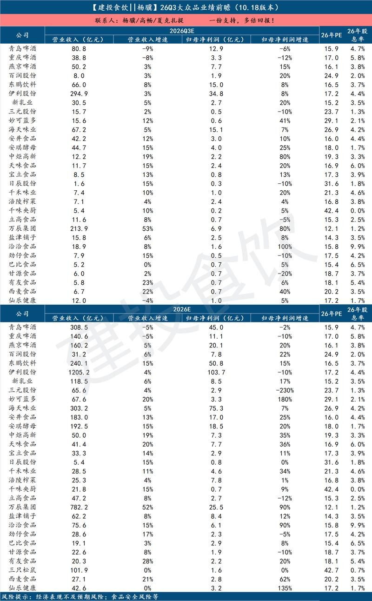
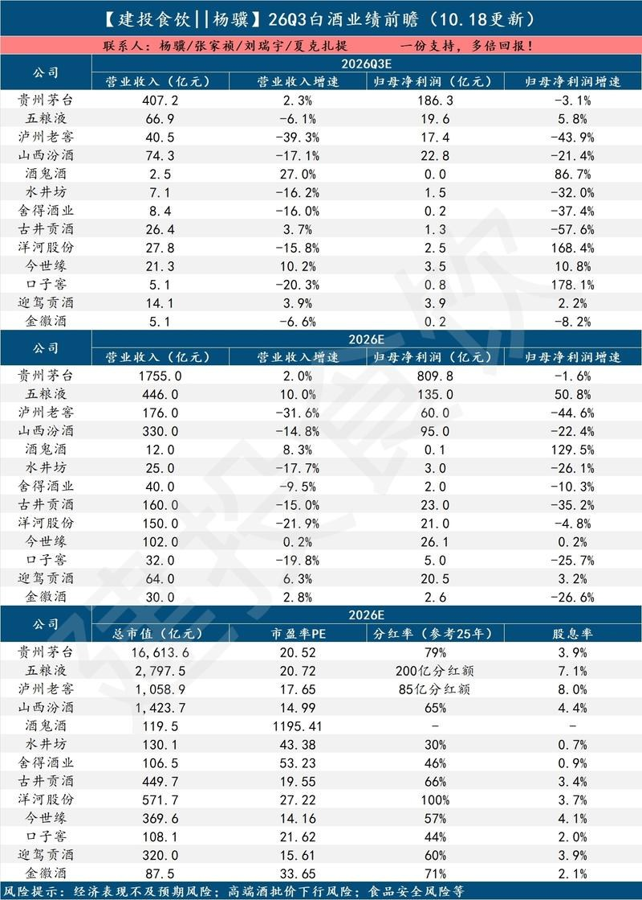
2 图
1️⃣本周末总体特征为看基本面的投资者进一步悲观，看图的投资者开始乐观。
1️⃣本周末总体特征为看基本面的投资者进一步悲观，看图的投资者开始乐观。
1）基本面因为Neocloud们继续引发AI债务担忧+DS新模型加把火，看基本面的依然悲观。AI的基本面问题其实都在；但是一些事件，又触发了大家去思考这些问题，例如近期的anti-trump trade就是一个事件，看盘面trump已经输了，于是交易民主党上台对AI的利空。
但看长谁也说不清，28年还有一年多，谁知道技术会不会有新的突破。一些现实的因素更容易作为交易的催化剂，现在就油价和美债收益率这两个，能缓解问题就不大。
2）但看图的开始全面乐观，一是由于超卖指标全面触发、下跌结构已类似15年8月；二是从技术角度，超卖的跌幅本身就是安全保护，无非需要先涨出向上催化剂。
2️⃣看图有很多角度，例如下跌结构、均线排列、三推楔形顶底，这类属于状态/形态类信号；例如超卖指标、均线乖离等这类指标主要属于赔率类信号。
原则上而言，一套技术框架中的信号应尽量“正交”。除了运用较多的状态、赔率信号，还可以考虑的一个角度是时间，即【目前这波反弹级别如何、能管多久】。
3️⃣因此按照【超卖反弹级别回测工具】，可以测量所选品种当前超卖后，历史类似走势规律，大致结论有二：
1）按照过去一年的波动率计算，过去60日的AI硬件回撤是一次-1.71σ事件，直觉上大约是3年一遇级别的超卖反弹机会；
2）按历史上类似级别（250交易日波动率水平/60日回撤-1.71以上σ）超卖测算，该程度超卖后续能引起的有置信度的反弹级别40交易日左右，大概能管2个月。
仅供内部参考，不做投资建议
【本周策略观点1019】
【本周策略观点1019】
1、上周全球风险资产都出现共振调整，韩国和费城跌幅不比创业板小，但考虑到A股提前下跌的节奏，重要指数也都跌破位，目前内生筹码结构问题需要外力才能破局，底部区域正在重构，但仍处于左侧阶段。周末消息面还是偏空的，看基本面的资金没有信心，看技术面的资金反而更积极点，尤其是等下半周。海外方面，美国议员提出法案，试图阻止特朗普和俄罗斯达成的柴油协议，油价继续攀升，中东局势没有进展，市场关心以色列大选和后续美国中期选举，看看有没有变数。虽然CPI超预期，但美债收益率见顶回落，只不过市场交易逻辑变化，并未对权益资产形成提振。
2、产业端的坏消息更多，上周Anthropic闭门会没有好消息，对于AI信用风险问题开始发酵，新云杀信用很麻烦。长鑫三季度业绩市场似乎也解读为miss，技术上的突破也没有提振情绪，资金似乎抢跑基本面。后续破局，可能得等CSP和NV三季报里面的一些展望了，反而是之前AI虹吸旧经济的受损方，包括道琼斯ETF走得比较强。港股也因为提前下跌一年，目前是周线5浪和MACD底背离的领先状态，港股通互联网ETF 和恒生科技ETF这周都有望率先完成底部结构。
3、国内周末主要是产业上深化拓展人工智能+，还有修订禁止出口限制出口技术目录，ds新模型的性价比有点高，然后就是市场比较关心今年开始的金融街论坛。日韩低开，美股拖累下A股今天也会低开，但上周四五跌破3700后大哥都行动了，有了明确信号，虽然筹码结构不好很难拉，但就看托住的位置有多稳，乐观点不破3650的话，收盘保住3700的机会还比较大。上证指数AI的东西也不多，目前这个底部区域技术上是有共识的，政策底也出现，布局超跌反弹的时机慢慢成熟，做上证指数增强ETF 其实也比较简单。创业板上周给了比较低的支撑位，跌多反弹少，还是只能等大盘企稳，创业板算力ETF 交投也很活跃。
4、科技估计很多资金在等一个大跌后的反抽，但多数是想蹲反弹跑路的，所以一些钱改做新题材，pcb刚担心补跌也就真跌了，国防军工走得比较主动，国防ETF 和通用航空ETF位置低，筹码出清彻底，航展消息催化，还有十五五订单预期，找一些明年景气度还可以的非AI方向，这算一个小共识，其他边走边看吧。
（仅供内部参考，不做投资建议，基金投资需谨慎）
20261018复盘
20261018复盘
宏观：
1. 美国中期选举，11月3日举行。
2. 商务部、科技部拟修订《中国禁止出口限制出口技术目录》 增列部分人工智能、生物医药、光伏技术。
3. 10月19-22日，金融街论坛年会。
军工：
1. 日本和美国将于19日至29日在日本多地开展“利剑27”大规模联合军演。
2. 卖方：当前处于十四五订单交付收尾、十五五订单落地前夕，叠加2027建军百年节点，新域新质装备采购预期抬升，Q4起产业链交付与盈利有望修复。
飞行汽车：
1. 特斯拉新款Roadster不仅采用高功率电驱系统，还引入风扇负压吸附技术和源自SpaceX的气体推进系统。A股炒作了COPV压力容器+轻量化材料(碳纤维)+老牌供应商。
2. 中国多地政府暂停低空经济财政补贴。
人工智能：
1. 主席：算力产业正处在加速发展阶段，前景广阔。
2. 求实网：发展中国的“算力高铁”。
3. Anthropic拟筹集约600亿美元债务，用于采购约1.5吉瓦的谷歌自研张量处理器（TPU）。黑石获得的次级债票面利率为10%。考虑到发行折价及其他费用，投资者的实际收益率还会更高。
4. 云巨头财报，如果CapEx增速放缓，同时收入、利润率和现金流改善，Soft Landing，如果CapEx继续增长，但收入和现金流跟不上，Hard Landing。
5. 后续等待的催化点：利率和油价、10-11月Anthropic的ARR（看Opus和Sonnet表现），10月云商财报（看云计算收入/利润率、现金流、27年Capex指引）、11月中期选举、28年AI硬件forecast、蹲新范式。
6. Anthropic联合创始人：到2030年前后，累积的生产率提升与资本积累，将把美国的年化经济增长率推上15.4%的恐怖高位。
7. DeepSeek V4.1Flash-1017:性价比重回领先。
半导体：
市场认为长鑫Q3miss，因归母净利润环比增速较低。
机器人：
1. 大摩对 Optimus 态度显著审慎于 Robotaxi，产线在建不等于能顺利爬坡，需同时验证产品能力与供应链制造能力，目前缺少证明量产加速的新证据。
2. OpenAI披露正全力布局人形机器人研发，主攻具身大脑（机器人智能系统研发）。
医药：
卖方：禁止出口限制出口技术目录与此前5月网传版本相比，影响大幅收窄，创新药授权出海不受限制，且对CXO企业经营无影响。
氢能：
工信部等三部门原则同意京津冀、大湾区等5个城市群开展氢能综合应用试点，打造跨区域氢能物流与绿色工业廊道。
涨价：
亚东集团通知，自10月17日起对核心中间体H酸暂停报价。
光伏：
工信部公开征求光伏制造行业规范意见，严控新建和扩建低效产能，引导合理布局并强化能耗穿透。
策略观察：
1. 周五成交15692亿，缩量768亿。美股又暴跌，得害我们一个低开了，但上周大哥明显两次跌破3700都出现了，虽然不会往上拉，但是大跌时候拉回0轴的预期有一些，下一步就是3600整数关了，悲观一些那就3600开始拉回3650，乐观点3650不破，还能收盘保住3700，上证里面AI的东西也不多。创业板作为主跌区，无法看点位，跌多反弹少，就看上证节奏吧，权重xc在500多还是有支撑。
2. 板块方面，军工（低位置+筹码出清+航展催化+十五五订单切换）、地产和农林牧渔领涨。科技就是继续等明天大跌后的反抽了，反抽也没有强度，但csp大厂财报发布前的杀跌动能应该是到达一个峰值了，怕的人都先跑路了，熬的人就蹲个业绩再跑了，财报里虽然不可能有反转性利好，但没有利空就可能缓口气，发完就是美国中期选举了，有利空就继续跌，没利空就反弹下。非科技是重点了，美国有一批非ai行业其实也景气着，国内找预期明年景气度可以的非科技，军工自然算一个，咽不下红利这口气又舍不得空仓，就会看这里吧，当作一个题材去对待就好了。
3. 题材方面，周五飞行汽车发酵，日内语料刺激量化平铺，军工也一直走得比较主动，而前期强势的题材纷纷补跌，pcb刚担心补跌就真的补跌了，好像大家都有默契一样，其他题材还是老样子，就只活下来一个龙头。
20261019_[庆祝]周末期间两个重要的产业新闻直指#数据要素的重要价值
20261019_[庆祝]周末期间两个重要的产业新闻直指#数据要素的重要价值
1️⃣总书记10月16日在乌兰察布考察，了解内蒙古自治区推进“东数西算”工程枢纽节点建设和绿色算力产业发展等情况。算力网是国家规划建设的“六张网”之一，算力产业正处在加速发展阶段。绿电发展有望降低算力成本，#吸引数据中心集聚并带动数据要素开发利用。
#推荐协鑫能科、盛视科技等算电协同核心标的。
#2️⃣据中国证券报报道，国家数据集团或将于近期挂牌成立。若该事件落地，后续有望加速全国数据资源整合与价值释放，#推动数据要素产业迈向体系化、规模化发展新阶段。
[礼物]产业影响：我们认为数据要素或将与“东数西算”协同推进：前者推动数据供给与合规流通，后者优化全国算力资源配置，共同支撑AI训练和产业应用。其意义不仅在于培育新产业，更在于将海量数据转化为生产力，为实体经济升级提供基础支撑。
[红包]投资观点：我们认为数据要素产业的投资机会方兴未艾，聚焦数据基础设施、数据资源、应用层领域龙头公司投资机会，#推荐深桑达、铜牛信息、美利云、上海钢联等数据要素核心标的。
[Firecracker]交运投资线索—1018
[Firecracker]交运投资线索—1018
1️⃣埋伏三季报：高增长&预期差&高股息。建议重点关注：中谷物流、中远海特、中远海控。#Q3业绩高增长、运价高景气
2️⃣配置防御：优质红利。建议重点关注：公铁港等相关标的。#创新高？贵吗？谁在买？#海外通胀、国内低利率
3️⃣低估值、等击球：快递。建议重点关注：中通快递、圆通速递、申通快递等。#Q3高增长、进入估值击球点（10X PE）
4️⃣周期成长：物流。建议重点关注：密尔克卫、嘉友国际。#基本面扎实、便宜是硬道理
#交运三季报前瞻欢迎
[红包]白酒核心品牌批价和库存更新【长江食品 2026-10-18】
[红包]白酒核心品牌批价和库存更新【长江食品 2026-10-18】
[玫瑰]【茅台】：本周飞天批价整箱1720-1800、同口径下变化不大。目前多数经销商回款进度85%+，据部分区域经销商反馈，茅台双节动销进度表现良好，普飞预计动销正增长，系列酒表现亦较好，非标降幅收窄，库存处于低位。
[玫瑰]【五粮液】：本周普五批价在755-770、环比下降10元。部分渠道反馈五粮液回款有所加速，双节部分经销商反馈动销同比略增，近期部分线上渠道放量导致价格有所下行。
[玫瑰]【国窖】：本周国窖批价在820左右、同口径下环比持平。部分区进度域反馈目前回款进度超过60%，部分经销商反馈高度国窖中秋动销仍有一定的压力，库存处于相对高位，前期价格政策对动销的促进作用暂不明显。
[玫瑰]【汾酒】：本周青20批价360，复兴版批价710、环比基本持平。部分区域反馈目前回款进度超过70%，低度青花20、玻汾等表现相对较好。
[玫瑰]【洋河股份】：本周省内市场海之蓝批价120-125，天之蓝批价270，水晶M3批价370，M6+约550，基本持平。目前公司仍处于控库存状态，回款进度弱于去年。
[玫瑰]【今世缘】：本周省内国缘四开批价395，对开批价255，V3批价480，环比基本持平。目前回款进度70%+，淡雅延续较好表现。
[玫瑰]【古井贡酒】：本周省内市场批价献礼版75-80、5年115左右、8年220左右、16年320、20年540左右，环比持平。
[玫瑰]【口子窖】：本周批价口子5年批价在78，6年批价在105，10年批价在220，20年批价在330，价格平稳。
[玫瑰]【迎驾贡酒】：本周安徽市场品味洞6批价110、洞9批价185、洞16批价285，环比持平。目前回款进度好于去年，洞6表现较好。
[玫瑰]【舍得】：本周湖南市场品味舍得批价330，智慧舍得批价450，走势相对平稳。
[玫瑰]【水井坊】：本周湖南地区八号批价310，井台批价440，典藏批价650，环比持平。
[玫瑰]【酒鬼酒】：本周湖南内参批价760、老红坛批价285、环比持平。
[玫瑰]【郎酒】：本周成都青花郎批价680，红10批价230、红15批价350。
[玫瑰]【剑南春】：本周成都水晶剑批价385，终端价423，环比持平。
[玫瑰]【珍酒】：本周珍15批价280，珍30批价640。
【长江电新】20261018-周专题：阳光电源AIDC进展如何？
【长江电新】20261018-周专题：阳光电源AIDC进展如何？
1、本周专题我们对阳光电源AIDC进展进行梳理，SST方面，近日全球算力基础设施大会OCP开幕，英伟达展区展出首批SST合作伙伴展品，阳光电源入选；公司SST产品还在OCP现场获得认证，成为全球首款同时通过欧标与美标系统级双认证的SST产品。我们预计公司SST产品2026Q4逐步接单、2027年小批量交付、2028年进入大规模交付阶段。储能方面，公司AIDC配储业务在手订单约2GWh，跟进中项目十几个GWh；现阶段AIDC储能主要满足AIDC并网排队需要，后续将逐步衍生平滑负荷、套利、优化接入容量等需求。我们预计公司AIDC储能有望在2027H2-2028实现进一步放量，后续订单进展可期。
2、本周新能源我们组织了风能展策略会和宁德储能大会交流，综合来看整体对风电、锂电短期景气度仍偏谨慎，行业有从弱预期转向弱现实，但考虑到估值已经处于历史最低位，且中期景气仍有成长性，维持左侧价值判断；三季报超预期方向短期或有正面反馈，具体来看：
1）储锂方面，储能Q4板块有望进入预期修复阶段：欧洲等海外大储需求强势、公司明年指引或逐步清晰、美国禁令细则落地有望带动情绪修复、原料跌价逐步反映至报表等；建议重视回调后布局机会。锂电板块边际景气有所弱化，板块整体偏左侧。但从中期维度看，不利因素正在缓解，行业需求趋势依然维持，建议关注白马左侧布局机会，三季报向好环节和公司，以及第二增长曲线的铜箔、压电陶瓷等方向。
2）电网方面，出海与AIDC受风偏下降及美国禁令压制调整，但细则年底才定，情绪已经偏悲观，但海外电力设备供需缺口仍将中期存在，AIDC电源方面，800V直流转入产业落地，OCP大会产品进展加快。国内需求稳定，具备防御属性。
3）风光方面，光伏板块已处于"估值底+持仓底+基本面底"的三重底部区间，近期禁止出口限制出口技术目录、光伏制造行业规范条件均有望促进光伏产业链逐步向好。2026年风能展在北京召开，我们认为今年作为“十五五”第一年，陆风、海风开工建设尚未起速，但风电基本面最差时候已过，重视未来海风和风机基本面修复拐点。
4）机器人方面，特斯拉链景气延续，核心供应商周订单超预期且Q4逐月向上，全年Optimus万台出货确定性高；国内头部梯队渐明，关注启元消费级Q1/T1及宇树、七腾、优必选工厂巡检订单交付；海外Gemini4、GPT-6 Astra加速机器人训练操控，关注泛化与场景突破。
【长江电新】"温固知新"固态周报1018：产线破冰、跨界提速，高位分化待真章
【长江电新】"温固知新"固态周报1018：产线破冰、跨界提速，高位分化待真章
1、本周板块呈现普涨修复后高位分化，资金借利好兑现。周初（10/13）概念集体下挫，在大盘放量下跌时，资金借利好离场特征明显，整体来看周度收跌。个股方面，前期涨幅较大的材料龙头与设备环节出现明显获利回吐，结构分化加剧，上海洗霸（+2.95%）、利元亨（+1.56%）走出相对，其他个股整体下探幅度较大，宏工（-21.21%）、厦钨（-19.87%）、天赐（+19.48%）等承压较大。后续板块能否重拾升势，仍依赖头部企业中试良率爬坡、装车订单的实质落地，而非单纯政策与概念催化。
2、要闻速递：
#产业化
1）巨湾技研南沙GWh级全固态产线投产，行业首条 4GWh 存量液态线技改。线，260–480Wh/kg，120℃烘烤6h失重<0.5%、针刺不起火。
2）阳光新能源邢台半固态电池产业园签约，锁定2027Q1试生产。
3）NASA公布SPEARS固态电池研发项目细节，在-80°C下仍能工作，并在-170°C极寒暴露后未受损。
#材料
1）天赐材料百吨级硫化锂及固态电解质中试线 Q3 试生产。
2）当升科技全固态正极累计出货 50 吨。
3）源启膜创完成天使轮融资。
#应用
1）奇瑞"犀牛S"全固态参数集中披露。
2）博力威半固态（混合固液）电池组将在全球头部电动越野摩托车品牌上落地。
联系人：邬博华/曹海花/叶之楠/王晓振
🔥【招商电子】PCB/CCL板块观点更新-261019
🔥【招商电子】PCB/CCL板块观点更新-261019
📈近期PCB产业链的单Q3业绩统计：
【生益科技】净利31.73-35.83亿，QoQ+ 49%~68%（超预期约3-4e）
【沪电股份】净利25.27-27.77亿，QoQ+ 50%~65%（超预期3e左右）
【生益电子】净利7.58-8.41亿，QoQ+ 14%~26%（略超预期）
【深南电路】净利17.99-18.99亿，QoQ+ 28%~36%（略超预期）
【崇达技术】净利4.43-5.33亿，QoQ+ 269%~344%（大超预期）
【嘉立创】净利6.48-10.21亿，QoQ+ 0%~56%
【菲利华】净利1.55-2.25亿，QoQ+ 3%~49%
【四会富仕】收入8.57亿环比+30%；净利1.76 亿环比+198%；毛利率34.1%环比+10pcts、净利率20.5%环比+11.6pcts（#超预期）
【科翔股份】收入18.50亿环比+57%；净利3.11亿环比大幅扭亏；毛利率30.0%环比+20.8pcts、净利率16.6%环比+18.1pcts（无预期）
【威尔高】收入8.77亿环比+59%；净利1.38亿环比+269%；毛利率27.4%环比+7.3pcts、净利率15.8%环比+9.0pcts（符合预期）
【平安电工】收入4.45亿环比+19%；净利1.17亿元环比+69%；毛利率 43.1%环比+6.2pcts、净利率 26.3%环比+7.7pcts
#一线PCB/CCL厂商业绩定方向：生益科技、沪电股份等行业龙头厂商Q3业绩指引均大超市场预期，这足以显示PCB产业链的高景气度，且结合行业和公司的近况来看，一线公司在产品结构仍在持续升级优化、明后年亦有新增高端产能驱动新的成长逻辑，盈利水平仍保持在向上的通道，市场对于明年业绩预期均有不同程度的上修，一线公司对于明年业绩的PE估值已进入“击球点”，具备一定的安全垫。
#二三线PCB厂商业绩强兑现、有锐度：崇达技术、四会富仕等业绩均超市场预期，且净利率有非常超预期的提升，如四会富仕单季度净利率已提升至20%以上。尽管上周后半周有一定的回调（强势板块的良性补跌），但我们从行业的基本面出发，依然坚持认为#Q3仅是此轮PCB通胀开启后的第一个涨价出业绩的季度，目前的行业定价模式已经发生根本性变化，“保供”对下游客户是重中之重，结合当下和后续的产业逻辑和基本面情况，#可支持后续至少3-4个季度的利润率上行和业绩释放（同比增长逐季加速）！
两头受压的环节就像弹簧一样，一旦开了口子，会暴力释放积攒已久的能量[加油]我们还是坚定看好此轮PCB产业链业绩释放的确定性和持续性！
#待情绪面和流动性改善、该方向有望成为锐度反弹板块之一。
📜其他重要的公告：
【生益科技】提议回购2-3亿，回购价不高于前20个交易日的150%；
【景旺电子】提议回购0.5-1.0亿，回购价不高于前20个交易日的150%；
【胜宏科技】提议回购1.5-3亿，回购价不高于前20个交易日的150%；
【平安电工】拟定增13亿用于泰国云母材料及高性能电子布的产能扩建项目以及国内电子布产能的扩张项目；
【嘉立创】筹划发行H股并港交所上市；
🆕产业链重要新闻：
1、松下机电子材料事业部，宣布2027年1月1日出货开始实施#涨价200%；对象工厂：郡山据点、广州工厂、苏州工厂、台湾工厂、大城府(Ayutthaya)工厂。
2、建滔积层板10🈷️涨价：由于薄布市场需求旺盛，上游玻璃布、玻璃纱供应紧张，且价格大幅上涨。因此，自即日接单起，我司将对使用2116(含)以下薄布为生产原材料的板料和PP之销售价格上调15%。
松下CCL 200%的涨幅大超市场的预期，建滔的月度涨价频率和幅度也有提升，CCL供应现按照配额制进行（这是历史没有的情形），紧缺状态和价格上行持续到明年6🈷️、或至年底。这对于CCL以及二三线PCB板块都是重要的利好信号！
3、美国OCP展会中，产业链展示出NV下一代算力终端Rubin Ultra NVLink PTFE板的样板--用于Switch Tray板，其中展示了核心的材料厂商有生益科技、台虹；核心的PCB厂商有景旺电子、深南电路、TTM、胜宏科技、台郡等。#显示PTFE多层板的交换板的设计方案在27年被采用的概率进一步抬升。
建议关注：
1、中小PCB厂商：#【奥士康、崇达技术、万源通、超声电子、满坤科技、澳弘电子、世运电路】、YD电子、中京电子、博敏电子、四会富仕、金禄电子、骏亚科技等。
2、中大票看好#【景旺】【生益科技/电子】【沪电股份】【鹏鼎（参考我们最新的观点更新）】等；
3、载板方向#【兴森】【深南】【生益科技】【华正】【崇达（普诺威电子47%股权）】【新恒汇（淄博新材10+%股权）】【宏和科
[太阳]【周末信息】
[太阳]【周末信息】
1、AI算力——乌兰察布重磅考察绿色算力和东数西算：算力产业正处在加速发展阶段，注重“算电协同”。国常会：要不断深化拓展“人工智能+”行动，加强技术攻关和算法创新。DeepSeek V4.1 Flash 发布新版本
2、AI传媒——数据要素：媒体曝国家数据集团或将于近日挂牌成立。两部门：支持电影院直播体育赛事、销售体育彩票 。TVB进军短剧
3、军工——日本和美国将于19日至29日在日本多地开展“利剑27”大规模联合军演。第十六届中国国际航空航天博览会将于2026年12月7日至13日在珠海举办
电新板块更新1018
电新板块更新1018
观点:
⭐电力设备：此前一直在强调的是国内基建重点边际变化在于边缘算力、算力网搭建和算电协同（算带动电），因此如前所述继续看好算电协同等环节，底部关注如申昊、晶科科技、协鑫能科等；
⭐光伏：目前仍核心聚焦低位企业谋求转型，关注亚玛顿、金博等；光伏技术限制出口正式出台，但此前已有充分预期。光伏各环节技术标准提高本质上对产业低效产能出清是利好，考虑到目前产能利用率接近四成，核心关注出清执行力度。
🌸双11大促跟踪：首日预售体感较弱，关注10.25首轮尾款现货验证
🌸双11大促跟踪：首日预售体感较弱，关注10.25首轮尾款现货验证
⭐天猫双11：首日预售偏弱，品牌分化延续
🔮大盘维度：
✔从专家交流及我们首日蹲守情况看，本次首日预售表现低于预期。专家口径全品类首日增长约10%（去年口径同日增速15%+），美妆增速约个位数，开局偏弱。
我们判断，❶今年双节长假出游较多，节后消费者购物注意力尚未充分回归，大促认知与加购需求释放可能偏慢；❷预售当日股市表现较弱，或对消费情绪形成一定扰动。上述为原因分析，后续仍需成交数据验证。
✔分结构看，❶国货表现分化，海外整体稳健，国际美妆首日并未形成显著领跑优势；❷中高端及奢侈品表现优于大众价格带。
✔首日偏弱提高了全周期不及预期的风险，但目前尚不能对双11整体下定论。往年亦有前期偏弱、后续追回的情况，首日预售还受到活动认知、品牌排期及渠道策略影响，10.25首轮尾款支付及现货销售数据更具代表性。
🔮品牌维度：
✔国货：珀莱雅超预期、绽家、佰草集、双妹、薇诺娜、毛戈平、瑷科缦、伊菲丹等在我们跟踪口径下实现李佳琦首日正增长，后续关注全店及其他渠道承接。
✔国际：修丽可、SK-II、兰蔻、雅诗兰黛、娇韵诗、海蓝之谜、Fresh、赫莲娜等表现相对较好。
⭐抖音双11：达播与旺季驱动结构性高增
✔本次抖音流量向达播倾斜，合作放量成为重要催化。❶绽家与四火姐姐合作，带动10.15首日GMV达5000万元以上，拉动10月累计GMV同比增长150%以上；❷奈丝公主与与辉同行提前发力，10.14单日抖音GMV达3000万元以上，拉动10月累计抖音GMV同比增长400%以上，体现大促前置蓄水效果。
✔旺季需求叠加核心产品放量。❶东方甄选胶原蛋白肽饮、多花黄精、桑蚕丝被等自营产品持续放量，10月累计抖音GMV同比增长150%以上；❷润本蛋黄油系列进入旺季，10月累计抖音GMV同比增长100%以上；❸玉泽第二代干敏霜放量，带动10月累计抖音GMV接近翻倍。
⭐投资建议：首日预售低于预期，现阶段对整体双十一保持审慎，核心验证点是10.25首轮尾款及现货销售能否追回前期缺口。天猫关注头部品牌的88VIP运营、新品动销与全店承接；抖音关注达播合作及旺季爆品带来的增量，并结合费用效率判断增长质量。重点关注东方甄选、若羽臣，关注毛戈平、巨子生物、珀莱雅、润本股份、登康口腔等。
注：渠道数据为截至目前跟踪口径，月累计增速不代表双11全周期表现；专家与蹲守口径存在差异，预售量展示档位亦可能带来测算误差，最终以尾款支付及退款后成交验证。#文字观点
#ACE农药展反馈：行业底部静待催化，关注硝化供给收缩+厄尔尼诺需求弹性
#ACE农药展反馈：行业底部静待催化，关注硝化供给收缩+厄尔尼诺需求弹性
🌹行业当前处于底部区间。1）今年原药价格整体下行，10月11日中农立华原药指数73.79点，同比下滑0.94，跌幅1.26%，为2014年以来低位。2）中游、下游持续去库存，当前库存水平偏低。
🌹硝化环节监管趋紧，重点关注氯虫产业链。1）硝化工艺监管持续收紧，不少不合规地下产能关停，部分产品供需格局偏紧。2）杀虫剂氯虫及其上游原料价格已出现不同程度上涨。
🌹关注厄尔尼诺带来的潜在催化。1）今年农产品价格虽同比上行，但上涨主要由成本驱动，农户种植收益不及去年，种植意愿有所回落。2）若厄尔尼诺引发农产品减产，推升种植盈利，叠加农药行业本身处于历史底部、中下游低库存的现状，有望拉动农药需求大幅回暖。
10月19日gf推荐信息汇总 欢迎交流
10月19日gf推荐信息汇总 欢迎交流
🔽
【海外】OCP大会： 系统架构升级，CPU与互连需求提升
AI系统加速协同设计，英伟达与思科推出12.8Tb/s可插拔标准，微软计划2027年起部署多GW Maia 300，光互连及800VDC路线推进。调研显示GPU利用率仅20%—30%，液冷仍是瓶颈；Agent有望推动CPU与加速器配比至1:1。看好#英伟达、PTFE、Marvell、AMD及英特尔。
———
【计算机】财报季重视国产链的确定性信号
财报季重视预付款、存货及采购现金流等需求前瞻指标。#寒武纪 供应链优势预计2027年中后转化为收入增长；浪潮、紫光三季度利润或环比承压，但国产化与超节点放量支撑后续改善。#晶泰控股 受益AIDD及自研BD催化，#星环科技 四季度或突破公有云、向推理数据流量收费转型；推荐上述标的及#广立微、卓易信息、CPU龙头。
———
【电子】 #澜起科技、聚辰股份 CPU扩容带动内存接口需求
Agent提升CPU需求配比，内存接口芯片增长弹性有望达到CPU的两倍。下一代英特尔Diamond Rapids、AMD Venice内存通道数从12增至16，进一步提升接口芯片需求。行业需求逐季向好，新产品打开成长空间，竞争格局较好，估值已进入具备性价比的阶段
———
【机械】 周观点：船舶景气延续，封测设备进入业绩释放期
9月造船价格指数186.59、同比增0.55%，老船更新支撑需求，推荐#松发、中国船舶、中国动力，2027年PE约10倍。
后道封测进入业绩释放期，推荐#长川、强一、华峰、精智达、精测、金海通 ；9月升降平台内销、出口增84.3%、50.6%。
#冰轮、联讯 业绩超预期，大族数控环比回落受提货节奏影响。
———
【建材新材料】水泥提价，PCB上游升级持续
珠三角水泥推涨30—50元/吨，限产与运输约束有望推动落地，关注股息率预计不低于6.1%的塔牌。PCB上游电子布紧缺、树脂升级及PTFE确定性提升，关注#巨石、中材、东材、圣泉、联瑞、凌玮； 仿布供给过剩、替代能力有限。防水龙头10月20日再提价，光伏玻璃供需双弱、库存略降，浮法玻璃暂稳。
———
【交运】首推航运，化工物流配置价值提升
首推#锦江航运、招商轮船、宏川智慧： 东南亚运价高位消化，油运效率损失仍支撑高景气，化工物流第二曲线推进。快递多地涨价0.1—0.3元，关注申通、圆通、中通、韵达；极兔2026—2028年市占率与利润率有望共振。高速公路股息率约3.8%—4%；客运供给收缩，货运旺季运价同比约增20%，关注东航物流。
———
【非银】资金流入缓解压力，低估值有望修复
宽基ETF净流入与上市公司增持缓解流动性压力，非银低估值、低配置带来修复空间。预计三季度上市券商业绩增30%—40%，看好#中金H、国泰海通、中信、华泰及招商、财通。 保险短期利润承压，长端利率企稳与开门红筹备有望改善预期，推荐#平安、太保、国寿、新华、太平 ；多元金融推荐渤海租赁、江苏金租。
———
【化工】油价风险未尽，中期补库存提供支撑
地缘冲突持续，油价尾部风险或未充分释放，但全面升级概率较小，高油价预计仍以脉冲为主。短期关注三桶油、首华燃气、新天然气、海工油服、宝丰能源、卫星化学及恒逸、荣盛。中期补库存与碳排放约束有望支撑化工，万华、华鲁、新和成、亚钾等重回性价比区间；金属铬均价77500元/吨，较月初涨16500元。
———
【非银】股息资产：盈利与派息确定性支撑配置
非银股息资产未来2—3年盈利与派息确定性较强，重点关注#盛业、中信股份及中银航空租赁。 预计2026年股息率分别约9%、5.5%、5.5%；盛业利润增速预期上调至20%，若特别分红1亿港元，股息率可达9.5%。#江苏金租、中国船舶租赁、远东宏信 预期股息率分别4.6%、6.6%、9.3%。
———
【机械】#华测检测 管理改善与国际化推动增长
华测检测2030战略目标为收入复合增长13%—16%、净利率18%，资本开支占收入7%—10%，资金转向少数股权回购、海外并购及分红。医药、医疗器械2026年签单增148%、54%，半导体检测预计2027年扭亏。三季度业绩预告中枢增18.35%，未来利润有望延续增速，叠加ROE与分红提升，重点推荐。
———
【机械】专用设备本周调研：风电订单修复
#中际联合 国内订单全年预计增20%—30%，目前10x，去除现金以外7-8x，安全位置。
；#金雷 铸造出货预计11万吨，滑动轴承小批量交付。#三一重能 全年出货目标16GW，2027年海外预计2—3GW；#软控材料 改造后消费税影响有望减弱，固态设备已有交付。#天能重工 下半年预计改善，电站利润待消纳修复；#电科思仪 光谱仪在手逾万台，预计2027年持续高增。
———
【家电】重视白电与两轮车龙头的确定性
家电短期内销疲软，市场风格偏向红利与防守，优先考虑安全边际及龙头经营确定性。四季度通常是估值切换窗口，历史上家电指数多数年份同期跑赢，关注短期修复及2027年确定性增长机会，兼顾高股息与稳健收益。重点推#美的集团和雅迪控股， 2026年预期股息率分别5%以上、5.2%。
————
【军工】重视军贸，继续首推#睿创微纳 无人智能协同领域强卡位、低估值，#27年仅15X
珠海航展、百年建军，内需改善+J贸出海景气抬升，强调板块内需基本盘稳增向好
军贸投资三主线 ❶俄对外J贸显著下滑；❷装备全面无人智能协同+反无；❸美伊冲突引发的中东装备需求快速增长！
#重点标的： 睿创微纳、国睿科技、洪都航空/中航沈飞/西飞/成飞、锐科激光、国科军工、航天南湖等。
【申万建材】水泥更新：广东严厉整改超产，珠三角大幅涨价落地
【申万建材】水泥更新：广东严厉整改超产，珠三角大幅涨价落地
#广东省水泥价格已经历两轮调价：9月29日珠三角提价30元/吨，10月13日进一步提价0元/吨，10月下旬或迎来第三轮提价。
#广东超产认定严苛，多家企业被强制停产。广东省对水泥产能合规有三项明确要求：产能指标需在工信厅公告完成、通过环评验收、工厂环保绩效等级达到A级。多家企业未完成后两项流程，且1-9月产量超过年核定产能75%或日核定产能11%，被认定为超产后强制停产。叠加西江水位大幅下降，广西水泥流入量减少，广东水泥价格持续看好。
#强制停产或延伸至其他省份。今年以来水泥超产问题仍严重，环保、碳排等问题仍突出，后续其他省份或跟进解决超产问题，看好水泥产量严约束下的价格弹性。
重点关注广东省水泥企业：#华润建材科技，#塔牌集团，关注后续其他省份跟进情况，关注#海螺水泥，#华新建材，#天山股份，#金隅冀东，#上峰材料等。
[玫瑰]欢迎联系：任杰19512256636/宋涛/郝子禹17321138296/傅浩玮
【中泰电子｜果链】折叠屏预售秒罄、中国区AI落地在即，重视果链低位布局机会！
【中泰电子｜果链】折叠屏预售秒罄、中国区AI落地在即，重视果链低位布局机会！
折叠屏iPhone Duo预售秒罄！
➠10.16晚8点预购，1分钟全型号售空，首发日到店取货秒空，目前官网发货已排至27年1月下旬；1TB版本二手平台溢价约20%-30%（到货时间1-2周）。
➠据产业链调研，26年折叠机备货预计750万部，27年有望超2千万部，相关产业链有望迎来弹性增长。
中国区AI：牵手通义，落地倒计时！
➠9.29日iPhone 15 Pro及后续机型（含Air、Duo）统一完成备案换证，新增Apple智能/通义万相/通义千问三款大模型备案，为苹果首次原生AI接入第三方大模型。
➠10.15日库克确认中国区Apple Intelligence已获批，10月底推测试版（包含实时翻译、照片清除、写作工具，不含Siri AI），正式版有望于12月随iOS 27.3更新。
➠据Omdia调研，28%中国消费者会因更强AI功能考虑换品牌，AI有望成为存量换机抓手。
27年6款新机+20周年，销量有望乐观！
➠据彭博社消息，27年春季发布iPhone 18/18e/Air 2，秋季发布iPhone 20 Pro/Pro Max及第二代折叠屏，全年共6款新机，销量有望乐观。
➠秋季两款Pro为20周年纪念版，3D玻璃/3D打印钛合金中框/VC等为核心升级方向。此外，27年VC均热板有望下放至标准版，27年新机除18e外全面搭载。
当前果链核心标的27年PE普遍在11-20倍，重视低位布局机会：立讯精密、蓝思科技、领益智造、苏州天脉、中石科技、水晶光电、蓝特光学等。
风险提示：需求、AI进展不及预期
派点请支持中泰电子：王芳/杨旭/洪嘉琳
【中金非银】盈利波动，高基数下NBV承压—3Q26前瞻
【中金非银】盈利波动，高基数下NBV承压—3Q26前瞻
📍预测9M26中资保险行业归母净利润同比平均-27%
中资保险行业3Q26季报将于10月下旬开启，我们预测行业9M26归母净利润同比平均-27%（简单平均），寿险新业务价值（NBV）同比平均-2%，财险综合成本率同比平均-0.4ppt。
关注要点
1️⃣净利润受股市波动影响普遍承压，全年增速降幅或收窄。我们预计9M26各家归母净利润同比增速分别为太保-15.4%>新华-20.4%>中国财险-24.9%>平安-27.5%>国寿-48.6%，主要受3Q25投资端高基数和3Q26股市大幅调整影响，各家受影响程度因权益持仓风格不同而有所分化；归母营运利润方面，我们预计平安/太保同比分别+8.0%/+5.4%，代表保险盈利中枢的营运利润指标表现相对稳健，主要受益于近几年负债端企稳向好趋势。展望全年，由于四季度基数低于三季度，我们认为行业全年净利润同比降幅或收窄。
2️⃣高基数下寿险新业务价值（NBV）同比增速普遍承压。我们预计9M26中资寿险NBV同比增速分别为国寿+10%>新华-5%>太保-5%>平安-8%，主要受去年三季度“炒停”带来的高基数影响；往后看短期关注四季度各家开门红预售情况，中长期关注各家代理人改革和高客经营进展。展望2027年，我们认为低利率环境下“居民存款搬家”仍将延续，叠加低基数效应，行业NBV同比增速或高于2026年全年水平。
3️⃣财险保费延续缓慢增长，单季承保受大灾影响走弱。我们预计9M26中国财险/平安财险/太保财险保险服务收入同比分别+1.5% /+2.0%/+3.5%，延续缓慢增长；综合成本率（CoR）方面，受三季度大灾影响，我们预计各家3Q26 CoR同比上升，但上半年承保较好对冲了三季度大灾影响，我们预计9M26各家CoR同比仍有改善，其中中国财险95.8%（同比-0.3ppt）/平安财险96.7%（同比-0.3ppt）/太保财险97.1%（同比-0.5ppt），展望各家CoR较2025年或整体维持平稳。
📈估值与建议
受3Q26股市大幅调整影响，我们调整了部分公司盈利预测，维持评级和目标价不变。
📌风险
新单保费增速不及预期；长端利率和资本市场大幅波动；自然灾害；政策不确定性。
📝报告原文：#小程序://中金点睛/4FajVt9tMtxiz9e
☎欢迎联系：中金非银团队 毛晴晴/陈昕韬/姚泽宇
【ZX机械】周观点及活动汇总 20261018
【ZX机械】周观点及活动汇总 20261018
（1）观点更新
AI方向上：进入三季报关键时间节点，#杰瑞股份、鼎泰高科、大族数控（电子主覆盖）、豪迈科技 等筹码/估值调整较为到位的大票值得关注。
#博众精工 在果链创新周期+光模块+AI服务器三重增量加持下，业绩弹性有望加速释放。
非AI方向上：
船舶依然是景气度与估值综合性价比最高的板块。二手船价环比继续大涨、与新船价格大幅倒挂。继续推荐#恒力重工、中集集团、中国船舶等。此外，船舶行业智能焊接快速放量的#柏楚电子 当前估值也具备相当性价比。
出海板块受到汇率、海外加息、各种政策及政策预期扰动，股价反应也较为充分。头部出海全球化的机械龙头公司当前已进入明显击球区，包括非美出口为主的#三一重工、恒立液压、徐工机械、三一国际，以及顺利在欧美展业的#浙江鼎力、巨星科技、九号公司、泉峰控股
内需方向，我们建议关注经营韧性强/与宏观相对脱敏或已进入改善通道/出海开始起量的企业，如#中国中车、华测检测、一拖股份、弘亚数控、景业智能。
（2）过去一周主要调研情况（#欢迎交流）
#豪迈科技、柏楚电子、华测检测、洛轴股份、一拖股份、国机精工、思看科技、博雷顿
（3）欢迎报名11.3-5日ZX武汉年度策略会期间的机械公司交流，头部上市公司陆续邀请中，涵盖船舶、AIDC、AIPCB设备、工程机械、机器人、出海、内需、新能源等各细分领域。
【中信家电】周度观点（20261018）：关注黑电企业三季报经营情况
【中信家电】周度观点（20261018）：关注黑电企业三季报经营情况
本周家电（中信）指数下跌0.7%、上证指数下跌2.6%。分主要板块（按中信分类）来看，白电板块上涨1.2%、小家电板块下跌0.5%、厨电板块下跌3.0%、黑电板块下跌4.4%、照明电工板块下跌4.6%。本周我们再更新一下【家电板块三季报情况】。
Q3黑电板块业绩表现较好。结合近期产业调研，我们认为，Q3大家电板块中，外销好于内销、黑电龙头企业经营情况更好。分细分产业来看：1）白电板块Q3外销韧性较强、内销承压。结合产业调研、三方数据来看，Q3空冰洗外销增速好于内销。以空调为例，根据产业在线，Q3空调行业内销量YoY-28%、外销量YoY+4%。白电Q3内销承压，一方面是终端需求受国补透支影响，另一方面，白电龙头进行渠道改革及出货政策调整，影响了Q3内销发货。外销层面，我们建议关注拉美、东南亚等新兴市场表现，自主品牌业务增速好于代工增速。利润层面，成本因素对企业Q3业绩有一定负面影响（H1龙头企业有低价原材料备货，成本对毛利率影响有限）；2）Q3黑电龙头均价提升，销量承压。当前黑电行业经营重心从规模转向利润，TCL、海信未通过价格竞争换取销量，而是依靠产品结构升级、渠道优化实现“以价补量”。成本端，存储价格上涨仍有压力，但龙头通过提价及结构升级实现较好传导，同时7月以来面板价格转跌。Q3整体来看，行业龙头内外销均价有提升，销量受世界杯影响，Q3出货节奏较H1有所放缓。我们建议关注TCL电子、海信视像经营业绩；3）小家电Q3内销需求承压，外销景气度有所改善。内销方面，根据奥维，7~8月小家电品类线上销额分别同比下降7%/2%，降幅有所收窄，其中电蒸锅等品类双位数增长；外销方面，根据海关数据，7~8月小家电出口额累计同比增长18%，较Q2的14%进一步提速，其中吸尘器出口额同比增长44%。展望后续，建议重点关注双十一期间内销终端动销情况、海外需求变化，以及成本和汇率对企业盈利的影响；4）厨电板块Q3经营仍受新房销售影响较大，收入、利润承压。
推荐标的：TCL电子、海信视像、美的集团。
新能车周观点：配置价值凸显【国泰海通🏆电新徐强团队】
新能车周观点：配置价值凸显【国泰海通🏆电新徐强团队】
⭕观点
1）近期产业链排产有所下修，27年锂电增速存在放缓，中长期看增长周期仍在。
2）估值回落领先业绩见底，当前龙头估值回落历史极值，具备良好配置价值。
⭕信息
#1、国内：1）10月1-11日，全国乘用车市场零售45.9万辆，同比-24%，环比上月同期+7%；新能源市场零售28.1万辆，同比-13%，环比上月同期-7%。2）9月，国内汽车销量190.4万辆，环比+11.9%，同比-26%；新能源国内销量125.2万辆，环比+12%，同比-9.4%；新能源出口57.1万辆，环比+8.6%，同比+1.6倍。
#2：海外：1）自 2027-04-01 起，新能源汽车增值税出口退税率由13%下调至9%。2）法国和德国支持进一步放宽欧盟汽车排放规则，同时支持把英国列入“欧盟制造”体系下的可信伙伴。3）特斯拉Roadster展示倒挂飞行，当天股价高开低走收跌2.13%。4）宝马2030年在华销售的车辆超95%将本土生产。
#3、碳酸锂：2701主力合约周跌18.88%，收96320元。
#4、公司：1）宁德时代20日公布三季报。2）亿纬锂能、恩捷股份、新宙邦、佛塑科技、嘉元科技披露三季报预告，环比呈现经营性业绩增长。3）威尔森终端数据，国内市场Q3蔚来单季销量11.16万台超BBA（10.7万台、奔驰9.96万台、奥迪9.46万台）。
☎欢迎联系国泰海通🏆电新：徐强/牟俊宇
【国海海外】CDS利差走高，怎么看待北美Neocloud？
【国海海外】CDS利差走高，怎么看待北美Neocloud？
近期Coreweave CDS利差走高主要因为美联储加息预期走强，同时Anthropic营收数据引发市场对算力需求的担忧。
多数新云仍需外部融资支持扩张和项目交付，但财务状况已有明显分化：截至2026Q2末，Nebius现金约80亿美元、有息债务约85亿美元，净债务负担较轻；CoreWeave现金约55亿美元、有息债务约350亿美元，Q2净利息费用占收入约25%，对新增融资成本和再融资条件更敏感。
#我们并不担忧算力需求下降，过去半个月B300、H200、B200一年期租金分别涨了11%、3%、5%。融资压力不等于即将违约，CoreWeave调整后经营利润率已由Q1约1%升至Q2约5%，并预计未来两个季度连续环比改善。
#配置上我们继续更偏好Nebius，主要看重较轻的净债务负担及PaaS、托管推理业务的发展潜力；Oracle关注云业务增长能否逐步改善现金流，CoreWeave则等待融资条件和现金流兑现进一步验证。对IREN暂持谨慎态度，重点观察扩张带来的每股回报能否覆盖股权融资稀释。
联系人：国海海外 陈梦竹/詹广鹏
#影视院线 关注影院销售体彩【建投AI互联网】
#影视院线 关注影院销售体彩【建投AI互联网】
近日，国家电影局、体育总局联合印发《关于开展“跟着电影去运动”行动 推动电影与体育双向赋能的通知》。核心增量主要在于：
#明确支持在电影院设立体育彩票销售点
核心观点
1、我们认为影院有望复用场地、人员及观影客流，通过体彩代销佣金增加非票房收入
2、据国家体育总局官网，23-25年全国体彩销售额分别为3852.55/4155.30/4193.92亿元，按年末代销门店数量计算，单店年销售额约170.4/174.4/168.6万元。
按行业习惯，体彩代销点会根据销售额进行一定比例的抽成。目前全国影院1.4万家，影院龙头儒意电影截至6月末有711家直营影院。
#关注院线公司，儒意电影、横店影视、中国电影、上海电影，以及博纳影业、幸福蓝海、金逸影视等中型院线公司。
建投AI互联网 杨艾莉/郭子萱/蔡佳成
【ghht计算机】AI周思考1018：海外模型矩阵化+决策模型新赛道，国产化从"芯片"延伸至"模型+算力"！
【ghht计算机】AI周思考1018：海外模型矩阵化+决策模型新赛道，国产化从"芯片"延伸至"模型+算力"！
🔥海外AI竞争正从"单点旗舰"走向"矩阵化分层+决策模型新赛道"，RSI竞赛进入白热化阶段；国内模型迭代明显加速，但在算力自主化和RSI闭环上仍存差距；出口管制从硬件向软件和技术延伸，国产算力自主可控的紧迫性再度升级！
1. 基模节奏：海外补旗舰档位，国内走开源+性价比双线
#海外旗舰模型"代际冲刺"与推理模型"成本下探"并行。头部厂商在旗舰模型上持续堆叠参数和上下文长度；同时，Anthropic围绕Sonnet和Haiku进一步压缩调用成本，推理侧的"价格战"从国内蔓延至海外。"旗舰打品牌、中低端走量"的矩阵化策略，标志着基模竞争从"单点爆款"进入"产品梯队"阶段。
#国内节奏偏开源放量与工程落地。9月底至今，MiniMax上线M3.1-Flash-Preview，阶跃星辰开源Step-5-Preview，DeepSeek先后发布V4.1-Flash-1017（瞄准许愿式编程场景）并预告V4.1 Pro，Kimi K3.1、智谱GLM 5.5、阿里Qwen4-27B及旗舰Max亦即将面世。
模型能力差距仍在，但单位智能成本差距快速收窄。国产模型竞争进入"场景细分+效率优化"阶段，各厂商开始围绕特定垂直场景（编程、推理、多模态）建立差异化优势。
2. RSI与决策模型：叙事从概念切到可量化基准
#RSI竞赛已从"概念验证"进入"工程化冲刺"。 O+A及谷歌三巨头正围绕RSI展开激烈角逐，模型迭代周期从季度级压缩到周度级。在最新的DeepRSI评测中，国内Kimi K3位列第三，紧随Claude Fable 5.1和GPT-6 Astra之后，表明国内在RSI赛道并非完全缺席。但差距在于：#海外已形成"模型写代码→代码训练模型"的完整闭环、国内尚未形成规模化工程闭环。若这一gap不能在6-12个月内收敛，海外模型的迭代效率优势或出现数量级分化。
#决策模型开辟全新赛道。继JEV以极简API和低延迟打开市场后，OpenAI快速跟进推出Decisions API，微软发布Microsoft-Decision-1，StartLux-Decision在部分基准上取得断层领先。这类模型短期落地场景清晰：订单风控、合规判断、工单路由、调度决策，比通用Agent更容易进生产系统，因为输入输出可审计、可回滚。
RSI主叙事海外领先的是研发自动化指标化，国内领先的是infra自优化+开放权重跑真实流量；决策模型会先于通用RSI在产业里变现。
3. 算力：国产栈从能跑到架构协同，出口管制进入征求意见期
#算力自主化取得实质性进展、但软件生态仍是短板。算力侧标志性事件是DeepSeek将TileLang适配昇腾，把GPU算子编程抽象层搬到NPU，降低上层模型对单一硬件栈的耦合；阶跃Step 5 Preview开源同步点亮1024卡Atlas 950 SuperPoD，昇腾用vLLM+Ascend C+Triton吃下稀疏注意力、MoE路由、MTP投机解码。#国产算力不再只跑"能跑"、开始跑"架构级优化"，Sparse GQA、EPD分离、序列并行这些设计直接决定国产卡能不能接旗舰模型。#海外反面是算力稀缺溢价 ——数据中心电力、变压器、HBM、租卡价格持续抬升，头部实验室互买算力，小厂靠预付和担保拿卡。
#出口管制从"芯片硬件"延伸至"模型+算力技术"。此前的管制主要集中在芯片硬件层面（如HBM、先进制程设备），而现在已将触角延伸至模型权重、训练算法和算力基础设施技术。同期总书记考察乌兰察布，重点了解绿色算力产业布局，释放出"算力即国力"的明确信号。#出口管制升级看似是"堵"、实则是"疏"，为国产算力和大模型争取宝贵的迭代窗口期。
相关标的：
【国产算力】昇腾系（华丰/#杰华特 /兴森）、#寒王、海王 等
【超节点】#浪潮、 华勤、盛科、澜起等
【散热】#高澜 、申菱、飞龙、#五洋、同飞 、冰轮等
【算租/Token工厂】行云、利通、协创、智微、杰创等
【AI应用】#中控 、金蝶、鼎捷、泛微、#税友 等
其他：#征和工业（农机钨刀具弹性）、中胤时尚（EDA新贵）、东方材料（头部IP超精品AI漫剧）等
欢迎交流～派点季恳请大力支持
【开源计算机】服务器上游系列（一）：先进封装破局后摩尔时代，玻璃基板进入量产前夕-20261018
【开源计算机】服务器上游系列（一）：先进封装破局后摩尔时代，玻璃基板进入量产前夕-20261018
[太阳]先进封装带动材料升级，玻璃基板验证与设备订单协同推进
AI芯片集成规模与互连密度持续提升，推动先进封装向大尺寸、高带宽与低损耗演进，玻璃基板凭借高平整度、可调热膨胀系数及低介电损耗，为封装升级提供新路径。产业化方面，临时载板与玻璃基IPD已形成规模供货，玻璃芯载板加快送样与客户认证，光模块FAU基板同步推进，多个应用方向梯次落地。工艺层面，TGV成孔与金属化构成核心价值环节，激光、电镀、清洗等设备已取得订单或完成交付，部分厂商实现复购。国内载板企业中试线贯通、可靠性验证与产能规划并行推进，产业正由技术验证向量产准备迈进。随着良率提升、客户认证及量产投资逐步落地，设备、材料与载板制造环节有望迎来持续成长机会。
[太阳]长程Agent与企业工作流加快融合，模型效率及算力生态持续升级
本周AI产业围绕长任务执行、企业应用与部署效率持续迭代。模型端，阶跃星辰开放Step 5 Preview权重，强化百万上下文与长程Agent能力；谷歌上线Gemini 4 Argon，拓展软件工程与企业复杂任务场景。应用端，腾讯WorkBuddy深度融合企业微信，打通企业数据调用、任务执行与成果交付。算力端，国产厂商推进训练集群交付、推理新品与工业AI部署，面壁MiniCPM-V 4.7同步完成多款国产芯片适配。
[太阳]AI应用相对表现占优，细分领域结构性机会持续显现
10月12日至10月16日，计算机指数周度变动为-5.02%，同期沪深300、上证指数、创业板指及科创50分别变动-3.40%、-2.56%、-8.90%和-6.77%，计算机板块相对创业板指与科创50表现更具韧性。AI细分方向中，AI应用指数周度变动为-4.80%，AI算力指数为-7.91%，应用方向取得3.11个百分点的相对收益。个股层面，金自天正上涨15.10%，华策影视、华盛昌分别上涨8.23%和6.14%；盛视科技、开普云分别上涨13.06%和2.77%，部分个股表现活跃。产业创新持续积累，可关注AI应用落地带来的细分领域机会。
[啤酒]受益标的
国产算力：寒武纪、海光信息、禾盛新材、沐曦股份、浪潮信息、工业富联等；海外算力：东山精密、胜宏科技、联特科技、德邦科技等；算力租赁：宏景科技、利通电子、协创数据等；大模型：智谱、MiniMax、阿里巴巴、腾讯控股；液冷：盾安环境、同飞股份、恒铭达等。
风险提示：玻璃基板技术产业化进展不及预期风险等。
链接：
开源计算机|行业周报：先进封装破局后摩尔时代，玻璃基板进入量产前夕 ↗
☎欢迎联系：张越17316258956/刘逍遥/叶进新/刘炬帅
风电装机预期上调至150GW
风电装机预期上调至150GW
⭕2026风能展一线调研反馈：预期26、27年国内年新增风电装机110-120GW，28-30年提升至130-150GW，欧洲海风设备招标预期27H2起量【中信建投电新】
本周风能展期间，我们与多位行业专家及多家公司交流，对行业形势总结如下：
1、国内需求：行业普遍预期2026年新增风电装机110-120GW左右（其中海风6-7GW）（2025年新增为120GW），预期2027年需求相比2026年持平或略有增长，28-30年需求会进一步提升，预期年新增装机130-150GW。
2、国内海风：深远海行动计划有明确进展，已经通过核心部门审批，预计后续会推动竞配、核准、招标等事项，设备招标预计2028年启动；省管海风方面，东部区域的海上风电审批尚未看到明显改变，浙江因存在类似过去江苏的未批先建问题，当前新项目推进确实较慢。
3、欧洲海风：乐观预期27年设备招标16GW，大部分项目招标集中在27年下半年，理想情景下单桩缺口40多万吨，若项目落地率下降，缺口对应20多万吨，贸易风险观察期为2026年10月至2027年年中。
4、国内风光收益率：136号文实施后，2025年风光整体市场电价比政策实施前下降约2至3分/千瓦时，预期2027年国内机制电价会企稳，不应对电价过分悲观。风电业主端收益率普遍为全投资税前6-7%，光伏可推进项目收益率约5-6%，在2026年恶劣形势下，已拿到指标的全部光伏项目中，约一半达到收益率要求，风电约70%可满足收益率要求。
5、风电行业三季度形势：根据和各家风机企业交流来看，Q3大部分风机企业毛利率尚未看到明确改善，仍有低价订单交付等影响；出货量方面，大部分零部件企业Q3出货环比小幅提升；海风企业方面，部分海风企业（东缆、天顺）Q3出货环比Q2提升明显（主要是广东项目推进较快），部分海风企业出货环比无明显改善。
6、零部件价格：预计2027年零部件供给仍处于偏紧状态，核心部件价格大涨、大降均难出现，供应商未大规模扩产，叠加海外需求增长，价格有一定支撑。
中信建投电新团队 陈思同/朱玥
[烟花]【中泰医药谢木青、刘照芊 | 脑机动态定期更新】
[烟花]【中泰医药谢木青、刘照芊 | 脑机动态定期更新】
[礼物]近期部分重要进展：
1.中共中央、国务院印发的《
关于发展新质生产力的意见 ↗ 》中，脑机接口被明确列入量子科技、生物制造、具身智能、6G等“未来产业”清单。
2.国家卫生健康委、国家发展改革委印发《医疗康复护理扩容提升工程实施方案》，提出围绕神经康复、运动康复、创面修复等重点领域，加快脑机接口、具身智能、仿生驱动等前沿技术布局，并推动相关创新成果在医疗卫生机构、社区和家庭等场景落地。
3.迈普医学与荷声科技拟共同成立超声脑机项目公司，围绕透声人工颅骨、超声芯片模组及脑功能成像与神经调控系统开展研发，探索为颅骨修复患者建立可重复开展脑功能评估及干预的声学窗口。
4.Science Corporation首例斯塔加特病患者植入PRIMA视网膜假体后，在早期康复训练中实现字母辨认及单词阅读，将PRIMA的临床探索由年龄相关性黄斑变性拓展至遗传性视网膜疾病，但目前仍为单例初期结果。
5.Newronika自适应DBS关键性临床研究完成首例植入。ADVENT研究拟入组104例帕金森病患者，在同一受试者中比较自适应与传统脑深部电刺激的安全性和有效性，相关数据拟用于支持αDBS®系统在美国的上市申请。
[太阳]后续建议关注：头部脑机公司IPO报材料、国内外头部公司临床数据发布等。
[玫瑰]投资建议：建议关注博拓生物、创新医疗、翔宇医疗、迈普医学、麦澜德、美好医疗、爱朋医疗、可孚医疗、伟思医疗、三博脑科、岩山科技、心玮医疗、微创脑科学、乐普医疗等，以及后续有望上市的脑机公司强脑科技、博睿康等。具体标的情况可详细沟通。
☁ 脑机接口专题报告：
限时领取 ↗
💡风险提示：政策变化风险；产品或服务商业化不及预期风险等。
☎联系人：谢木青/刘照芊
本周电力设备重要信息回顾（10.12-10.18）
本周电力设备重要信息回顾（10.12-10.18）
1️⃣#行业要闻
[太阳]#国家能源局召开2026年第三次能源监管工作例会【10.13】
👉会议要求完善全国统一电力市场体系，加强电力市场监管执法，维护公平竞争市场秩序。
👉要求提早谋划迎峰度冬能源保供监管，加强供需监测预警，完善市场机制促进新能源消纳。
👉要求加大新一轮“获得电力”政策落实力度，推进供电质量提升专项行动，加快非电网直供电小区治理。
[太阳]#浙江征集民营资本参与“蒙电入浙”特高压工程【10.14】
👉浙江省发展改革委公开征集意向民营企业参与蒙电入浙工程投资，项目总投资约298.3亿元，资本金比例30%，对应资本金约89.49亿元。
👉工程拟建设换流站2座、±800千伏线路约2228公里，输电能力800万千瓦，计划2030年建成投运。
👉要求单家民营企业参股比例不低于2%，民营企业合计参股比例不高于33%；民企仅作财务性参股，不享有输送电量及绿电、绿证等权益分配权，不进入项目公司董事会和管理层。
[太阳]#藏粤直流工程广西段首基塔开浇【10.16】
👉10月16日，藏东南至粤港澳大湾区±800千伏特高压直流输电工程广西段线路首基塔在南宁开始浇筑，广西段线路总长约678公里，途经百色、南宁、梧州等7市。
👉工程跨越西藏、云南、广西、广东四省区，新建四座±800千伏换流站，采用我国自主研发的四端柔性直流组网技术，实现双电源端、双负荷端智能灵活调度。
👉2026年年底，工程线路部分标段将转入组塔施工阶段，全线计划2029年建成投运。
2️⃣#公司公告
👉【金盘科技-三季报】前三季度营收61.04亿元、归母净利润5.44亿元，同比分别增长17.52%、12.02%；累计新签订单111.18亿元，同比增长82.26%。
👉【国网信通-业绩快报】前三季度营收54.81亿元、归母净利润2.76亿元，同比分别下降3.63%、21.51%；扣非归母净利润2.75亿元，同比下降5.04%。
👉【威胜控股-海外订单】近期在中东新兴市场取得约12.5亿元智能电网产品及解决方案订单，主要涵盖智能电表等计量产品及服务，预计三年内分阶段交付并确认收入。
3️⃣#本周板块及主要覆盖个股行情
电网设备（申万） -3.73%
国电南瑞 +1.47%
思源电气 -1.72%
许继电气 +3.35%
平高电气 +0.78%
中国西电 -6.00%
华明装备 +0.21%
三星电气 -8.31%
海兴电力 -6.60%
东方电气 -6.21%
国网信通 -9.63%
注：以上内容根据公开资料统计，不代表分析师观点
【房地产】高频数据全追踪
【房地产】高频数据全追踪
一、成交
网签：
新房网签（39城）：国庆假期（10月1-7日）新房日均网签面积同比从9月的-12%转正至+9%，节后（10月8-15日）再次同比转负至-9%，#国庆假期新房日均网签面积较9月同比转正后；于假期后至月中期间再次同比转负。
二手房网签（16城）：国庆假期二手房日均网签面积同比从9月的-1%转正至+35%，假期后同比增幅收窄20 PCT至+15%，#国庆假期二手房日均网签面积较9月同比转正后；于假期后至月中期间同比增幅收窄。当前网签数据同比表现好于9月全月，背后或包括“929”新政带动刚需入市等因素影响，考虑到挂牌价调涨占比、折价率等市场情绪指标仍低位震荡且仍有“以价换量”特征，维持“本轮刚需入市对市场成交热度的提振或仍呈现脉冲特征”的判断。
二、拿地：1-9月全国土地成交面积/成交金额同比分别为-24%/-20%（分别较1-8月-2 PCT/0 PCT），土地成交均价同比增幅较1-8月扩大3 PCT至+6%。#1-9月全国土地成交数据整体仍呈现“量缩价升”的特征。
三、库存：8月80城推盘未售库存去化周期较7月上升0.1月至32.4月，其中一/二/三四线城市分别为21.4月/28.5月/44.0月；8月全国开工未售库存去化周期较7月下降0.1月至20.6月。
四、前瞻及佐证指标：
1、二手价格、租金及租金回报率：9月北京、上海、深圳二手成交价格环比上升，广州二手成交价格环比下降；北京、上海、广州、深圳租金均环比下降；北京、上海、广州、深圳租金回报率均环比下降；
2、二手带看人数（12城）：9月整体带看人数同比降幅较8月收窄2 PCT至-6%；
3、流动性前瞻：根据招商证券房地产组流动性前瞻指标判断，2026年10月，宏观层面流动性环比宽松力度收窄，同比宽松力度扩大；
4、挂牌量（49城）：9月整体二手房存续挂牌套数环比+0.8%，YTD累计-2.5%，23年初以来累计+45.0%；
5、挂牌价调涨占比（荣枯线经验值20%）：9月整体二手房挂牌价调涨占比9.7%，与8月基本持平；
6、折价率（成交价/首次挂牌价）：9月整体二手房折价率较8月下降0.1 PCT至84.6%。
#更全面的高频成交、来访、带看、中介二手房成交价格、挂牌量、价变动、拿地、库存等基本面数据请联系
PPI双顶之后，2027年怎么走？——国内宏观周度观点
PPI双顶之后，2027年怎么走？——国内宏观周度观点
9月PPI同比5.0%，年内双顶的"形"已验证，但此前对"势"的估计或明显不足。我们认为：
1️⃣ 布油每涨10个百分点合计推升PPI环比约0.4、近六成压力在次月显现，Q4 PPI同比或升至6%附近。
2️⃣ "非油"动能上，AI与算电协同、有色、煤炭三条线索贡献9月环比的近一半，有望继续支撑PPI。
3️⃣ 我们测算，基准情景（局势僵持）下，2027年PPI同比中枢约2.0%，前高后低，基本维持正区间。缓和情景下，27年Q4或转负。
4️⃣ 虽然回落预期延后，但成本推动型的PPI高企难构成货币约束，低利率延续，对权益的影响仍在结构分化。
#AIDC部分标的交流更新（四方、同飞、白云）
#AIDC部分标的交流更新（四方、同飞、白云）
#四方股份
1、订单：Q1-3整体订单增长15%+。其中，电网订单+25%；新能源基本持平、Q3略增；用电增+10-15%；出口今年有望超10亿元。
2、SST：与V联合团队推进顺利；UL/莱茵认证均已获得；计划明年上半年挂网测试，下半年获单。行业层面，目前海外正推动SST UL标准制定，量产预期或从29年提前至28年。
#同飞股份
1、AIDC液冷：海外项目实现批量交付，Q3起快速上量，预计Q4开始贡献利润。其中，干冷器及模块化集装箱产品国内外订单饱满，目前人员瓶颈较大，已通过租赁厂房扩产7-8亿产值，目标27年扩产至20亿产值；CDU对接多个台厂代工，已为其开发800V DC配套的产品，等待测试、认证落地，预计大陆外整体净利率20%。
布局新方向光模块液冷等，已拿到小批量订单。
2、其他：预计储能全年30%+增速，装备20%+增速。
#白云电器（SST一体化电源发布会）
1、10月16日发布800V DC一体化电源：2.5MW SST把10kV中压一步直转800V直流，中压舱、SST供电舱、服务器舱三舱预制，实现效率98.5%、较UPS占地少65%、TCO降20%、150天交付。
SST高效换流、固态断路器、直流保护、800V直流配电柜、智能小母线等五项核心自研技术叠加四项系统能力实现了从器件到系统的全栈自研保障。
2、三步走：2026年10月最小单元试点、年底交付样机；2027年5月实现项目应用、年底拿全套泰尔认证；2030年前推出2.5~10MW全系列产品并完成CE、UL认证。
昆船智能：中烟易地技改进入小高峰，昆船连续中标/主业进入红利期【西部新消费及创新】
昆船智能：中烟易地技改进入小高峰，昆船连续中标/主业进入红利期【西部新消费及创新】
[玫瑰]10月17日湖南中烟吴忠卷烟厂易地技改昆船中标5016万元（已公示）。05-15年是中烟第一轮技改周期，15-19年近乎停批，20开始逐步批战略级标杆项目。包括湖北中烟三峡卷烟厂（20年）、四川中烟什邡卷烟厂（21年）、重庆中烟黔江（24年）、广西中烟南宁卷烟厂（24-26年）、张家口卷烟厂（26年）以及近期的湖南中烟吴忠卷烟厂，昆船均中标物流设备及系统集成“交钥匙总包”。
值得一提的是，重庆黔江项目26年9月1日厂房土建完工，#这意味着昆船目前才刚刚进入24年技改订单带来的报表兑现期。
[玫瑰]本轮技改驱动为“环保化、智能化、柔性化以及预留HNB工艺平台”，湖南中烟长沙卷烟厂易地技改项目（#70-80亿级别重大项目）已立项，27-29年有望进入招投标高峰。其中昆船能做的远不止上述中标段物流。易地技改总capex=厂房土建、公用配套、工艺设备、物流设备。
1）大量标段不单独披露，尤其是烟机主机；2）昆船在打叶复烤线系统、制丝线系统均有自主研发的核心设备，因不需要公示，市场常忽视其在制丝主机中的领先地位；3）昆船往往能承接总capex的20-30%。
[礼物]中烟技改小高峰，昆船传统主业进入报表复苏阶段，与HNB双周期加持，建议各位领导重视！
飞机晚点，深夜多有打扰，感兴趣领导欢迎私信
【东方材料】头部IP超精品AI漫剧第二增长曲线，CNTp新材料推进送样
【东方材料】头部IP超精品AI漫剧第二增长曲线，CNTp新材料推进送样
1️⃣算力和AI精品漫剧：子公司东方超算（全资）+子公司东方极梦（持股51%）合作#耳根。精品漫剧具备“重IP、高标准、高收益、强粘性”的特征，围绕耳根宇宙6大IP开发“100部人物传记”和“千部精品漫剧”，头部IP仙逆 3年全网累计相关300亿+播放，核心书粉500w+，光阴之外 开播半年全网累计相关播放超100亿；耳根宇宙ip全网粉丝超1e；
产能节奏：目前团队300人左右，未来扩充到500人。10月底开始上传，漫剧储备30+，#首部人物《
红蝶 ↗ 》预计12月上线
#东方极梦：
1）100部人物IP剧 收入=200min/部*保守5w/min*100部=10e；
（vs普通ai漫剧价格1-2k/min，溢价来自高制作成本+高IP价值3w/min，vs番剧平台端收入50w/min，ip价值弹性高）
2）精品漫剧 收入=30w/部*1000部=3e
3）互动影游，仙逆等影游落地空间大，单部游戏回报上千万，可观的期权；
#估值合计收入13亿*5Xps=65e，*51%持股，#增量市值33e
#东方超算：
用上市公司股权深度绑定耳根与王良总（已发股权激励），未来装入耳根6大IP与不可能科技，耳根6大IP均在作者手中，每年授权费收入1-1.5e左右，不可能科技每年收入2-3e，利润2-3kW，合计利润1.3e *25X pe=33e，未来仙逆2等IP均有增量看点；
#合计IP业务增量市值约70e；
2️⃣CNTp：固态电池材料，合作第一元素成立碳巢新材，持有合资公司42%股权权益，布局CNTp导电浆料及CNTp-3D集流体（全球市场销售额26-32年CAGR=28.7%）。国内外通过验证5e订单（韩国头部企业等特定需求），国内13e订单（头部企业军工用途机器人&机器狗无人机）,预估11月订单落地。1期落地产值10GWh（10亿产值，8.18投产），2期30GWh已建成，3期60GWh在建，中期百亿产值，毛利率50%+，保守净利润率30%+，42%归母权益，1期+2期预估利润贡献5.4e，30x PE =162e市值增量；
3️⃣油墨：食品级油墨（90%）， pcb油墨占比10%，3e收入，3000W利润； 3000W*20x PE=6e市值
三大业务合计238e，现市值47e，5X空间票。
☎️山高环能：定增完成打开外延成长空间，＃厄尔尼诺、柴油、saf数十倍成长上游稀缺共推uco涨价；超额降本释放盈利弹性
☎️山高环能：定增完成打开外延成长空间，＃厄尔尼诺、柴油、saf数十倍成长上游稀缺共推uco涨价；超额降本释放盈利弹性
#定增提供资金支持、超额运营能力支撑外延量翻倍： 9/23公司公告定增募资已完成，为并购整合提供资金空间。截至26/9/24公司餐厨运营产能5870吨/日，26年存量项目支撑9万吨UCO，凭借＃龙头超额运营能力是收购整合逻辑根基，公司规划未来三年内拟通过并购等方式扩至1万吨/日，对应UCO年化产量20万吨（较26年+122%）：详情：
#超额运营赋能外延可期！收集率&提油率敏感：①负荷率： 在4.5%提油率下，典型项目产能负荷率60%/80%/100%对应单吨uco净利2081/3107/3723元/吨；②提油率： 在80%负荷率下，提油率3.5%/4.5%/5.5%对应单吨uco净利2173/3107/3701元/吨。
#UCO涨价📈弹性大：【供需驱动】#SAF添加比例/范围扩大： SAF为当前航空减碳唯一解，欧盟50年添加70%翻35倍。saf扩产+上游uco稀缺=量价齐升❗️当前saf级UCO价格8050元/吨。我们测算SAF价格2500-3000美元/吨（约1.7~2.0万元人民币/吨）对应UCO价格上限1.0~1.3万元/吨！UCO每涨价1000元/吨，较26年盈利弹性+54%。
#柴油涨价生柴性价比凸显需求提升：柴油炼化产能紧缺进一步涨价，当前柴油（50ppm）较生柴FOB价格已溢价233美元/吨！典型反倾销税率参考卓越23.4%（对应287美元/吨），减碳效益（1 吨生柴减排约2.83吨*欧盟碳价98美元/吨=277美元/吨）下，生柴较柴油成本低223美元/吨
#废油脂生产烃基/酯基生柴将纳入CCER： 10/16生态环境部发布11项温室气体自愿减排项目方法学并公开征求意见，涉及利用废弃油脂生产烃基/酯基生物柴油作为燃料使用，有助于增厚生柴盈利&提升生柴需求
#【植物油涨价带动】 厄尔尼诺有望推动植物油涨价，UCO历史价格与植物油强相关。22年5月棕榈油高点价格1.15万元/吨，uco出口价格于22年7月达高点1.07万元/吨，几乎同水平！
#成本下降支撑可持续逻辑！存1000+元/吨降本空间： 提升负荷率、提油率、降融资成本等带动，我们测算uco单吨税前利润已从25的1150元提至26Q2的2100元，其中成本下降374元/吨，不考虑涨价，28年单吨税前利润有望提至3000元！
#盈利预测： 暂不考虑UCO涨价，预计26年9万吨UCO，单吨税前利润2000元/吨，归母1.42亿元，保守考虑28年扩至16万吨+降本1000元/吨后，归母3.93亿元，对应28年9.9倍pe。（估值日期26/10/15）
☎️8/10路演：
风险提示： 并购进展、SAF需求不及预期等
------------------------
[红包]浙商机械【九州一轨】拟回购股份用于员工持股计划或股权激励，激光隐切、金刚石散热空间广阔，持续推荐！
[红包]浙商机械【九州一轨】拟回购股份用于员工持股计划或股权激励，激光隐切、金刚石散热空间广阔，持续推荐！
10月16日，公司公告，拟回购股份用于员工持股计划或股权激励。#回购金额800-1500万元。
[太阳]核心逻辑：一体两翼布局新业务，通用半导体设备优势筑基，硅光芯片激光隐切、金刚石芯片基板空间广阔。
1️⃣一体：依托通用半导体设备优势，开展半导体新业务。
#通用半导体：国内领先的激光隐切设备商，半导体激光隐切设备关键性参数国际领先。
#陶为银获聘公司副总裁，累计增持公司股份272万股。
陶为银：通用半导体和通创九州法定代表人、晶禧半导体原法定代表人、江南大学客座教授。
8月20日，#公司增资通用半导体6999万元，持有其6.5%的股权。
2️⃣两翼之一：激光隐切加工服务。硅光芯片激光隐切需求放量、晶禧业绩有望爆发。
晶禧半导体：国内领先的硅光芯片激光隐切服务提供商。#技术：切割良率99.8%；#客户：包括苏州旭创、新易盛、羲禾科技等。
#2026年5月31日晶禧并表（公司持股100%），6月晶禧收入1062万元，净利润596万元，#净利润率56%。晶禧承诺：26-28年实际净利润分别不低于3000、4000、5000万元。
#激光隐切产能将于27Q1投产，后续业绩有望加速：晶禧拟投资不超过6.3亿元建设激光隐切产业化项目，提供硅光芯片切割等服务，预计27Q1投产。
3️⃣两翼之二：金刚石芯片基板。金刚石散热产业化提速、空间广阔。
金刚石散热：#已被写入国家规划，落地十万卡AI超集群曙光8000、H200服务器。#美国热管理公司已发布金刚石冷板方案，台积电有望导入高端AI芯片散热。
公司与通用半导体合资成立通创九州（公司持股40%），布局单晶、多晶金刚石片。#通用半导体激光隐切设备可用于金刚石切割。
风险提示：新业务放量不达预期；高管及股东减持；短期股价上涨过快；信息披露风险
☎【浙商机械 王华君18610723118/蒋逸18158576706/秦乐恒15221680140】
[红包]【申万医药】药明康德：CDMO新分子周期领头羊，持续推荐！
[红包]【申万医药】药明康德：CDMO新分子周期领头羊，持续推荐！
[太阳]行业趋势：全球新分子迭代周期开启，国产CDMO全球市占率持续抬升
全球新药研发加速向多肽、寡核苷酸、ADC等高壁垒新分子迭代，复杂分子CMC工艺难度显著提升，带动全球药企外包渗透率持续上行。依托复杂工艺工程化与规模化生产优势，国内头部CDMO持续抢占全球份额。2026年上半年药明康德实现155个分子R→D工艺转化，新增15个三期及商业化阶段项目，前端研发管线高效向后端商业化订单兑现，高确定性、长周期生产订单持续落地，行业资源加速向具备多模态全链条能力的龙头集中，公司深度领跑本轮新分子产业红利。
[太阳]小分子和TIDES业务高增延续，成为核心成长引擎
GLP-1超级品种持续放量，带动全球多肽订单爆发，公司覆盖全球25%GLP-1管线，深度受益行业红利。随着海外非标勾兑产能出清，合规订单持续向龙头集中。2026年底公司多肽产能扩至13万升，全球壁垒持续扩大。TIDES业务收入占比近30%，26-27年将维持40%高速增长，成为公司核心业绩增量。小分子业务2026年上半年实现超70%增长，进入快速增长阶段。
[太阳]行业景气向上、风险出清、新业务爆发三重共振下，预计公司2026年营收630-640亿、经调净利250-260亿（65%+），预计2027年还将延续高速增长，经调净利320-340亿（30%左右），当前估值处于历史低位，对应2027年PE仅13倍，中长期配置价值极高。
[拥抱]申万宏源医药 张静含/余玉君
[礼物]【东方计算机】润建股份：2亿美金Token出海订单要点解读
[礼物]【东方计算机】润建股份：2亿美金Token出海订单要点解读
[庆祝]公司昨日发布公告，Token出海获得2亿美金海外大单。我们将要点和解读总结如下：
1️⃣合同要点：2亿美金保底，期限为1年内，形式为“国内Token、海外调用、按需使用、按量付费”，客户为全球Token分发平台，利用新加坡节点向全球提供Token服务；
2️⃣需求原因：国内模型性价比和竞争力增强，尤其是公司和火山引擎自Q2开始合作，基于Seedance、豆包等闭源模型提供Token服务，当前多模态模型需求强劲，润建具备模型接入方面的优势。
3️⃣影响：国内Token出海首个过亿美金大单，具备标志性意义；润建Token工厂走向规模化运营，2亿美金只是底线不是该客户天花板，实际合作体量可能远超2亿美金（3季度实际已产生合作收入），初步测算净利率有望达到30%左右；
4️⃣稀缺性：南宁获批成为国内第4个“来数加工”试点城市，使得Token出海具备政策优势；15条国际跨境光纤，使得Token境外服务具备时延优势；润建五象云谷智算中心是南宁规模最大的智算中心，而二期容量将扩大10倍。
[礼物]我们认为，国内的token出海是算力行业发展的趋势，润建股份五象云谷词元工厂占据字节系模型合作、南宁政策与区位优势等稀缺资源，未来token工厂业务有望规模化并成为公司最核心业务，继续投资者重点关注。
【中邮煤炭｜广汇能源call+】量价齐升迈向千亿市值，疆煤龙头迎来稳定收获期
【中邮煤炭｜广汇能源call+】量价齐升迈向千亿市值，疆煤龙头迎来稳定收获期
💎核心看点：当期利润站稳50亿元，叠加远期翻倍产能核增规划，有望冲击百亿利润、千亿市值，疆煤龙头多年资源布局结出硕果
💎煤炭业务：当前市值的核心支撑，稳定40亿净利（基于港口价850元/吨假设）
➤资源好：富油煤价值快速体现，当前溢价达到100元/吨，未来或可稳定在40元/吨，同时推进富油煤销售占比从去年34%提升至60%。
➤煤价稳：地处哈密，是疆煤外运桥头堡，煤价与内地联动，基于秦港850元/吨煤价假设，公司可实现250元/吨坑口价销售，确保煤炭业务站稳40亿元。
➤成本低：3大煤矿皆为露天煤矿，成本稳定在150元/吨，开采难度低，安全生产成本相对较低且稳定。
➤产量增：当前权益产能6000万吨，若未来核增落地，权益产能可翻倍至1.2亿吨，助推50亿至100亿的利润跨越，新疆承接晋陕蒙能源保供责任，产能增长有政策支持。
💎外购气业务：长协稳定兼具盈利弹性，稳定4亿净利
➤长协盈利稳定：每年12船合计80万吨长协LNG，2026Q4已稳定履约发货，当前国际油气价格较好，每船净利润超1亿元，常规年份年净利润稳定4亿元。
💎化工及自产LNG业务：自有煤成本低，稳定14亿净利
➤自有原料煤，低成本保障盈利，且具备显著化工品价格和气价弹性，当前受益产品涨价，Q4以来日均净利润达1400万元，常规年份年净利润可稳定14亿元。
➤现有两大全资子公司：
1️⃣广汇新能源：主产120万吨甲醇，联产7亿方LNG（约合50万吨）。2026年9月更新气化炉后，产量增长20%。
2️⃣广汇清洁炼化：对原煤进行分级提质加工，副产品形成85万吨煤焦油产能，荒煤气由广汇环保产40万吨乙二醇。一期技改预计于2026年11月完工，先建后拆，产量持续增长，2028年三期完成后，煤焦油及荒煤气均增产40%。
➤1500万吨提质煤项目增量：全资子公司广汇新材料计划2027年上半年开工建设，预计2030年建成，化工规模较当前实现翻倍。
💎斋桑油气田：有望进入落地期，拓展能源新领域
2024年发现稀油层带来开发拐点，当前正快速推进勘探，油层厚度远超预期，远期规划300万吨/年，预计2027年H1完成报储并开启规模化开发，2028年形成明显效益。预计含税完全成本40美元/桶，若每桶利润10美元，持股52%，项目300万吨产能完全落地（时间未定）可增加约8亿元归母净利。
💎业绩预期：不考虑煤炭核增落地，假设2027-2028年市场煤价回落至900元中枢，且原油天然气价格显著回落，预计2026-2028年实现归母净利润56.9、55.6、59.7亿元，对应当前股价PE 7.9、8.1、7.6倍。
🌹广汇能源，新疆能源龙头，煤、油、气、化全产业链，掌握优质源头资源，持续推进各业务增量落地，当前煤炭行业处于历史性供给端收缩拐点，煤价重回上行趋势并维持稳定高位，公司多年资源布局迎来稳定收获期，市值再度启程，有望站上500亿、迈向1000亿。
【华创化工&新材料】恒力石化：公司发布业绩预告，26Q1-3归母净利同比+104%
【华创化工&新材料】恒力石化：公司发布业绩预告，26Q1-3归母净利同比+104%
事件：公司发布2026年前三季度业绩预增公告，预计实现归母净利润102.56亿元左右，同比增长104.20%左右；实现扣非归母净利润79.06亿元左右，同比增长88.89%左右。其中，26Q3单季实现归母净利润约30.50亿元，同比增长约54.63%；实现扣非归母净利润约25.70亿元，同比增长约36.06%。
炼化、PTA加工价差显著修复，“大化工”平台盈利充分释放。受行业供需格局改善、景气度回升影响，公司2000万吨/年炼化、600万吨/年煤化工、450万吨/年芳烃、150万吨/年乙烯及1660万吨/年PTA等核心装置运行平稳、供产销顺畅。公司持续强化产业链板块联动与产销协同，根据各产品市场盈利水平动态优化原料采购节奏、装置运行负荷与产品产出结构，炼化、PTA板块加工价差显著修复，推动产业链整体盈利水平提升。
全球炼化产能出清叠加PTA反内卷，行业景气有望延续。欧洲、日韩等地炼化装置持续关停，国内炼油产能新增受到严格控制；PTA行业TOP5产能占比约70%，2026年新增产能投放节奏放缓，行业供给格局有望逐步优化。公司依托PX-PTA-聚酯一体化布局及规模化产能优势，有望充分受益于炼化、芳烃及PTA产业链景气修复。
新材料项目陆续试生产、部分转固，打开长期成长空间。公司160万吨/年高性能树脂及新材料项目、80万吨/年功能性聚酯薄膜及功能性塑料项目，以及60万吨/年功能性聚酯薄膜、功能性薄膜及30亿平方米/年锂电池隔膜项目均已进入试生产、部分转固阶段，新材料产业园二期项目亦已部分试生产。随着相关项目持续推进及产能逐步释放，公司功能性薄膜、工程塑料及新能源材料等高附加值产品布局有望进一步完善，持续拓展长期成长空间。
我们深度研究公司及行业，拥有完善的产业资源，欢迎联系我们交流。
联系人：孙维容/邹骏程#文字观点
🍁🍁🍁晶科科技-近况更新：成功收购网银互联，宁夏1GW项目预计年内获批，布局乌兰察布、和林格尔多地项目
🍁🍁🍁晶科科技-近况更新：成功收购网银互联，宁夏1GW项目预计年内获批，布局乌兰察布、和林格尔多地项目
🍁10月16日，晶科科技完成对网银互联收购。网银互联是一家拥有超过20年IDC运营及交付经验的民营IDC服务商三大运营商和网易/幻方/群核/众擎等优质客户资源丰富。补齐晶科IDC运营和算力服务能力。
🍁公司1GW宁夏中卫项目近期将向国家发改委提交窗口指导材料，预计将在2026年获批，2027年启动建设。
🍁总书记在内蒙古乌兰察布考察时强调“搞好算力中心项目建设和运营，积极推动绿色算力产业发展”。公司已在乌兰察布、和林格尔已和政府签约合计超GW算力项目。
🍁客户方面，公司携手新华三、商汤已算力采购、算力租赁合同落地，7月算力业务已经兑现营收利润。
🍁公司战略转型瞄准算力租赁，重点关注！
【天风电子】芯朋微三季度业绩点评：工控高速增长，Q4涨价迎毛利修复
【天风电子】芯朋微三季度业绩点评：工控高速增长，Q4涨价迎毛利修复
👉业绩情况：Q3实现收入3.41亿元，同比增长41.35%，毛利率32.89%，因上游涨价原因毛利率环比略降，由于存货跌价计提影响，扣非亏损。
[玫瑰]#工控类产品实现高增，Q4下游景气度持续
公司以“半导体能源”为核心战略，受益于光储充、工业电机及AI电源等项目成长和AI服务器相关产品导入，工控等新兴市场合计营业收入同比增长超70%，Q3单季度收入规模达4500万元；同时，家电及标准电源业务持续推出新品并逐步放量，成功中标多家大厂主力订单，为营收提供了稳定的增量。
Q3环比下滑主要受白电淡季影响。展望Q4，家电景气度迎来恢复；手机标准电源因中标效应，受行业及季节性波动较小，电源业务保持季度环增趋势；光储充方向“抢出口”景气度维持。整体来看，Q4下游需求旺盛，订单处于年度较高水平。
[玫瑰]#AI算力电源布局进一步完善，Drmos测试进展顺利
公司全面布局覆盖一、二、三次电源的核心半导体器件，包括高压侧HVDC及低压侧核心的DrMOS。目前DrMOS在大客户处的测试已接近尾声、进展顺利，公司在三次电源领域持续保持国内领先优势。
[玫瑰]#Q4涨价迎毛利修复
鉴于上游涨价持续且下游需求支撑强劲，公司已于10月15日向各代理商发布涨价函，以料号维度迎来大范围涨价，涨幅约10%，将有力支撑Q4毛利率上修。展望2027年，公司中长期锚定股权激励目标（2027年营收突破17亿元），随着工控及AI等高毛利业务占比持续提升，预计2027年综合毛利率将进一步上行
滨化股份：电子材料新军，主业周期底部具备盈利韧性
滨化股份：电子材料新军，主业周期底部具备盈利韧性
#电子材料强成长性： 1）6N电子级HF气体，突破海外技术垄断，海内外先进逻辑及存储芯片客户持续验证，有望切入全球高端半导体供应链。2）高毛利功能型材料，头部晶圆厂推进认证，1.7万吨蚀刻液、剥离液加速布局，从通用化学品向高附加值配方材料升级。
#主业盈利韧性： 1）氯碱龙头盈利领跑行业，固碱较液碱溢价约50%，氯气内部平衡、无PVC拖累，装置满负荷运行，底部盈利稳固，向上弹性充足。2）C3C4进入利润释放期，26H1贡献约1.5亿净利。绿电直连叠加港口疏浚，能源及物流成本双重优化，进一步打开盈利空间。
[庆祝]泰恩康 全资子公司拿下聚多卡醇注射液注册证 ——261018
[庆祝]泰恩康 全资子公司拿下聚多卡醇注射液注册证 ——261018
静脉曲张微创硬化新药获批，血管微创 + 医美静脉改善国产替代打开：#国内下肢静脉曲张患者超1亿人，久坐、久站、老龄化持续推高患病基数，传统外科手术创伤大，泡沫硬化注射疗法快速普及。聚多卡醇作为该术式一线核心用药，过去长期由进口品种主导，#进口产品早年国内市场占比接近70%，高端临床与医美渠道进口产品仍占据过半份额，国产替代空间充足。
4 类仿制药获批，商业化落地路径清晰。本次泰恩康子公司山东华铂凯盛拿到的是化学 4 类新药注册证，获批后视同通过一致性评价，可直接参与全国各省招投标、快速进院，同时切入合规医美机构采购渠道。公司现有药品、医美渠道资源可以复用，和现有管线形成协同，打造 “药品 + 医美” 产品线矩阵。
#建议领导们积极关注
GS 将 2027 / 28E 全球服务器 TAM 上调 31% / 45%，涵盖通用服务器和 AI 服务器，以反映持续的生成式 AI 基础设施投资和规格升级：
GS 将 2027 / 28E 全球服务器 TAM 上调 31% / 45%，涵盖通用服务器和 AI 服务器，以反映持续的生成式 AI 基础设施投资和规格升级：
(1) 通用服务器：2027 / 28E 价值上调 17% / 11%，出货量和ASP 均上调。GS 预计通用服务器出货量在2026-28E 同比增长 20% / 12% / 8%。
(2) AI 服务器（NVL72，由 NV 和 AMD 提供支持）：出货量上调 5% / 1%，至 2027 / 28E 的 110k /164k 个机架。
(3) AI 服务器（8-GPU，由 GPU 和 ASIC 提供支持）：出货量上调 10% / 29%，至2027 / 28E 的 2.7m / 3.3m 台服务器。GS 的新 AI 服务器出货预测暗示 AI芯片需求在 2026-28E 为 18m / 29m / 38m 台，或 2028E 全球 / 全球一流的 ~60% / ~50% ASIC 渗透率。GS 继续看到 CSP 资本支出、无晶圆厂出货量和晶圆厂产能的上升，推动 AI 基础设施上行周期。
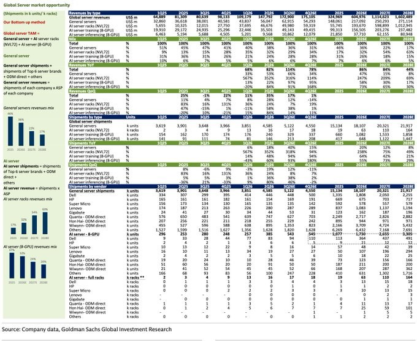
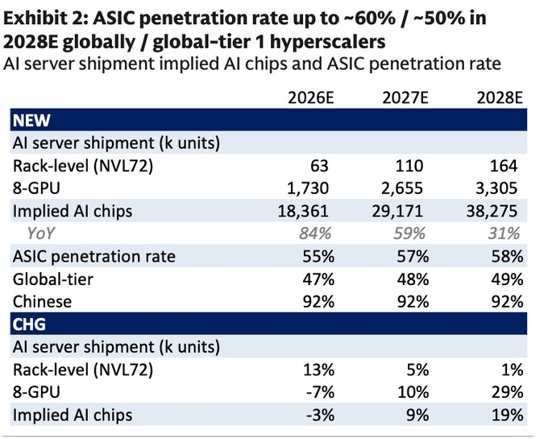
2 图
美国股指期货从科技股暴跌中反弹，原油价格下滑：市场综述
美国股指期货从科技股暴跌中反弹，原油价格下滑：市场综述
受出口强劲增长推动，中国第三季度 GDP增速有望加快
受出口强劲增长推动，中国第三季度 GDP增速有望加快
DeepSeek 模式和融资担忧令芯片行业承压，韩国股市下跌
DeepSeek 模式和融资担忧令芯片行业承压，韩国股市下跌
债券市场的大空头头寸因人工智能交易的波动而受到警醒
债券市场的大空头头寸因人工智能交易的波动而受到警醒
铠侠股价因融资融券操作失误而面临下行压力
铠侠股价因融资融券操作失误而面临下行压力
Anthropic 公司将把部分股份转移到新的“公共利益”基金中。
Anthropic 公司将把部分股份转移到新的“公共利益”基金中。
英特尔表示，硅光子技术是下一代系统的“金锤”，因为他们是唯一一家能够大规模生产300毫米磷化铟光子器件的晶圆厂。
英特尔表示，硅光子技术是下一代系统的“金锤”，因为他们是唯一一家能够大规模生产300毫米磷化铟光子器件的晶圆厂。
社服零售板块 | 26Q3业绩前瞻
社服零售板块 | 26Q3业绩前瞻
【广发公用郭鹏郝兆升】水情周报W42
【广发公用郭鹏郝兆升】水情周报W42
🔥每周AI大模型&应用进展 W42（10.12-10.18）｜中信证券计算机
🔥每周AI大模型&应用进展 W42（10.12-10.18）｜中信证券计算机
[太阳]本周核心变化：政策与开源双主线
- 10.16 商务部、科技部就修订《
中国禁止出口限制出口技术目录 ↗ 》公开征求意见，拟增列AI领域23项关键技术（大模型、智能体、算力集群等）；已开源、已发论文进入公共领域的技术不纳入管理，API调用、SaaS应用等出海形式不属于大模型技术出口管理范围
- 10.17 DeepSeek上线V4.1-Flash-1017，网页/APP/API同步切换，自反馈强化学习提升游戏开发、3D建模等“许愿式”编程能力，API新增Search与Fetch接口（5元/千次）
- 10.16 Anthropic披露Claude破解NSA椭圆曲线来源25年悬案：30分钟内识别出NIST标准曲线种子来自1997/1998年Unix时间戳驱动的lrand48随机数生成器，可完整复现公开种子值，削弱“NSA预留后门”假说
[太阳]海外：Google全量开放，Meta一周双发
- 10.13 Google Gemini 4 Argon全量开放：AI Studio、API、Antigravity及Gemini App（Pro/Ultra）全球可用，介绍期定价$2/$10（12.01起恢复$4/$20），Vals Index专业任务榜第一；官方称内部使用后智能体代码提交量提升35%
- 10.15 Meta开放Muse Spark Open权重：816B总参数/42B激活/100万token上下文，官方称美国最强开放权重模型，可在两台Mac Studio本地运行
- 10.12 Meta发布Muse Wonder/Wonder Full：面向个人与专业智能体任务的前沿模型，引入Active Memory与Active Focus机制
- 10.14 xAI发布Grok Voice 3.0语音到语音模型：已支撑Tesla与SpaceX客服体系（日均2万通Starlink客服电话、约70%无人工介入），API定价$0.08/分钟；10.12推出The X Subscription，Grok+Cursor+X Premium打包$30/月（原合计$90/月）
- 10.15 NVIDIA发布开放模型Nemotron 3.5 Super VL：120B多模态，面向企业智能体长时间连续运行与文档分析
- 10.14 Anthropic IPO路演披露Q3收入近17亿美元、同比增长约45%，IPO预计11月挂牌
[太阳]国内：开源落地密集兑现
- 10.15 阶跃星辰Step 5 Preview权重正式开源：BF16/FP8权重+技术报告+部署指南上线Hugging Face与ModelScope，截至当日位列OpenRouter Token用量周榜及日榜全球第二
- 10.15 快手可灵Kling 4.0正式全量上线：最高10-bit HDR、30秒原生直出、10个关键帧与15种参考素材，生成3-30秒、最高4K视频，API即将开放
[太阳]AI应用/AI for Science
- 10.14 讯飞医疗（02506.HK）与瑞慈医疗订立合作框架协议：星火医疗大模型与智能健康助手进入体检与健康管理场景
- 10.13 英矽智能（03696.HK）提名第35款临床前候选化合物ISM9546：口服VAV1分子胶降解剂，潜在用于炎症性肠病、类风湿关节炎等自身免疫病；年内已提名10款PCC创纪录
========================
[玫瑰]欢迎感兴趣的投资人联系中信证券计算机团队
通信当下有哪些近年被低估的投资方向？
通信当下有哪些近年被低估的投资方向？
运营商：典型红利板块，当前时点股息率性价比较高
今年以来，运营商受增值税调整影响，表观收入、利润表现较差，部分投资者线性外推明年依然同比下滑，但实际上26H1移动、电信均明确同口径利润为正增长。考虑基本面情况，我们预计明年板块平稳微增概率较大。此外，三家派息率或延续稳中有升，基于最新收盘价测算，三家港股股息率均在6%+，性价比突出，推荐中国移动、中国电信、中国联通。
润泽科技：稀缺性突出，控股股东良心增持
IDC由于商业模式特点，业绩爆发力偏弱但韧性较强，当前板块估值处在明确底部区间。公司客户覆盖头部大厂，IDC在手资源储备丰富，当下算力业务已超越IDC成为第一大主业，提供业绩弹性。此外，公司是A股目前唯一有海外IDC资源的厂商，稀缺性凸显。上周，公司控股股东增持公司5-10亿元（与新易盛董事长回购规模相当），彰显信心。
物联网：板块深跌，股价低位，筹码结构大幅优化
2025年初至今，受原材料中存储涨价，资金被动流出等多重负面因素影响，物联网板块持续走低。自2026Q1起，美格智能，移远通信等公司陆续面向下游实现顺价，利润率持续修复，预计后续仍可持续多个季度。
具体请联系长江通信黄天佑团队
【东吴机械】光伏设备行业点评：出口政策符合预期，设备龙头订单预期有望修复
【东吴机械】光伏设备行业点评：出口政策符合预期，设备龙头订单预期有望修复
事件：10月16日，商务部、科技部联合发布2026年第48号公告，就修订《
中国禁止出口限制出口技术目录 ↗ 》公开征求意见，拟增列多晶硅制造、硅片制造、电池制造相关12项光伏技术，并同步实施出口前临时登记管理。
分类看待“禁止”与“限制”，出口不确定性有望缓解。（1）拟禁止类包括钙钛矿及叠层电池组件生产技术等，不包括传统晶硅HJT、BC、TOPCon等电池技术路线，相关技术及设备需根据具体管控指标判断是否属于拟限制类。（2）拟限制类实行许可管理，通过审批、取得许可后可依法正常出口，与此前锂电设备出口政策的管理思路类似。（3）设备管控范围精准有限，仅涉及列明且承载达到管控指标技术的关键设备；未列明的其他光伏设备原则上不适用本公告要求，未达到管控指标的技术仍可自由出口。当前处于征求意见及临时登记阶段，后续以正式目录为准。我们认为，政策符合此前对于分类管理、有序出口的预期，管控边界明确有助于缓解市场对设备出口的担忧。
设备商合同负债与现金流率先改善，海外大额订单陆续落地；我们认为行业已陆续走出底部、2027年开始进入业绩兑现期。一、合同负债：截至2026H1，迈为股份合同负债51.84亿元，较年初+20.10%，拉普拉斯合同负债58.55亿元，较年初+79.94%，晶盛机电合同负债36.79亿元，同比+75.71%，高测股份合同负债5.48亿元，同比+386.1%，奥特维合同负债28.77，同比+4.3%。二、现金流：26H1迈为股份经营净现金流16.47亿元，同比转正，拉普拉斯24.58亿元，同比大幅+3229.07%，晶盛机电13.66亿元，同比+205.75%，高测股份4.73亿元，同比转正。
投资建议：我们认为政策不确定性落地、光伏设备商订单预期有望修复、重点推荐已有订单落地的，HJT整线设备龙头【迈为股份】、低氧全自动化单晶炉&切片设备龙头【晶盛机电】、超薄OBB串焊机龙头【奥特维】、切片设备龙头【高测股份】、高效光伏电池热制程设备龙头【拉普拉斯】。
风险提示：海外扩产不及预期，出口许可及项目交付进度不及预期。
东吴机械：周尔双/李文意/谈沂鑫/柴悦茹
【长江电新】光伏：政策催化密集，行业底部明确，重视底部布局机会
【长江电新】光伏：政策催化密集，行业底部明确，重视底部布局机会
工信部发布《公开征求对光伏制造行业规范条件及公告管理办法（征求意见稿）》
1、此前光伏制造行业规范条件出过2021、2024年本，本次属于再次对光伏制造各技术、能耗参数给出新的要求。本次征求意见稿从多个方面提高了企业的基本条件要求，例如每年研发费用投入从1000万元增加到2000万元，新增提出投入不低于总销售收入比例仍为3%；现有产品门槛以及新建、改扩建门槛拔高，例如N型TOPCon组件需要满足23.4%、24.2%的转换效率。
2、本次规范旨在支持光伏行业健康发展，制造规范条件标准较之前强制标准更为严格。本规范条件提到“是鼓励和引导行业技术进步和规范发展的引导性文件，不具有行政审批的前置性和强制性”，更多是为国内招标以及制造企业融资提供参考，实际影响需要进一步观察。
商务部&科技部就修订《
查找图书 ↗ 中国禁止出口限制出口技术目录》公开征求意见并对相关技术出口实施临时登记管理
1、该目录分为禁止出口和限制出口两部分。禁止出口包括多晶硅制备技术（单线三氯氢硅产能≥25万吨/年以及单线硅烷流化床产能≥2万吨/年）、硅片制备技术（厚度≤70微米）、光伏电池制备技术（边缘钝化、钙钛矿及叠层电池），限制出口包括目前大规模量产的多晶硅、硅片、电池（TOPCon、HJT、XBC）制备技术。
2、政策明确规定了禁止出口和限制出口的技术参数，整体来看属于利空落地。禁止出口技术属于先进技术，特别是超薄硅片（应用于太空光伏）、高功率电池、钙钛矿等，以此拉开与海外的技术代差。限制出口技术涵盖了除组件以外的环节，企业可以选择出口技术参数低于规定的设备，或者在商务部业务系统上登记，设备企业反馈对其手订单的交付影响有限。
国务院常务会议：要依法依规治理低价无序竞争健全行业成本调查、制止低价倾销等配套规则
1、李强主持召开国务院常务会议。会议讨论并原则通过《
中华人民共和国价格法(修正草案) ↗ 》，决定将草案提请全国人大常委会审议。会议指出，此次修正适应新形势新变化，进一步健全了价格治理机制完盖了政府定价程序明确了不正当价格行为认定标准和法律责任。
2、我们认为该会议是价格法的延续，2025年7月《
中华人民共和国价格法修正草案（征求意见稿） ↗ 》公布，本次将《
中华人民共和国价格法(修正草案) ↗ 》原则通过，后续有望依法依规治理低价无序竞争健全行业成本调查、制止低价倾销等配套规则加强价格执法监管。
🐴【建投食饮||杨骥】周度高端酒+区域酒数据跟踪更新（二）（20261018）
🐴【建投食饮||杨骥】周度高端酒+区域酒数据跟踪更新（二）（20261018）
[玫瑰]口子窖：#回款较慢，动销承压，库存3-4个月。口子20年/10年/新6年批价320-330/215-235/115-120元。
[玫瑰]迎驾贡酒：公司要求26合同年回款至少与25合同年持平，#部分区域反馈双节回款同比正增、经销商扫码出库同比下降，渠道库存2-3个月。洞6/9/16批价110/185/285元。
[玫瑰]山西汾酒：#回款约80-85%，#Q2平台仓库存去化较多，Q3青花20和30控费挺价，库存约2-3个月。青花30/青花20/老白汾10/玻汾批价670/350-360/115/41元。
[玫瑰]酒鬼酒：#10月15日33度50mL山海小酒鬼上线，平均单瓶售价12.8元。#预计26年收入可达12亿、利润扭亏，全年预计内参持平或微降、酒鬼整体增长、湘泉全年大几千万，预计全年胖东来产品贡献3亿以上。回款推进中，省内库存约3个月。内参/红坛批价680-750/240-280元。
[玫瑰]水井坊：#回款较慢，动销承压，库存约3.5个月。典藏/井台/臻酿8号批价560/430/280-310元。
[玫瑰]舍得酒业：26H1全部核心产品开瓶扫码金额同比实现双位数增长，26H1品味扫码同比持平略有增长、Q2企稳回升，#内部目标为下半年收入同比企稳，目前库存约2个月。舍之道/品味舍得/智慧舍得批价约135/310-320/450元。
[玫瑰]珍酒李渡：#中秋国庆珍酒动销增长15%+，出库端增长略高于动销，主要为大珍和珍十五的增长；李渡增长30%+，主要1975和200价格带产品带动；湘窖基本持平。大珍目前累计回款超17亿元、已签约4500家，珍十五联盟商已有8000家；#9月珍30已开始推广月月红模式；#预计26年珍酒增长15%、李渡增长28-30%、湘窖和开口笑增长10%左右，#全年利润预计9亿+。大珍约550元，珍30/珍15/珍8/珍5/老珍酒批价约580/270/175/125/70元。
[玫瑰]金徽酒：7、8月动销同比增长，#双节同比表现弱于7-8月。年份系列上半年增长7-8%，18年增长约10%，柔和上半年控量导致下滑10%+，能量系列增长30-40%，星级系列上半年增长10%，老窖系列上半年同比持平。
建投食饮团队
🐴【建投食饮||杨骥】周度高端酒+区域酒数据跟踪更新（一）（20261018）
🐴【建投食饮||杨骥】周度高端酒+区域酒数据跟踪更新（一）（20261018）
[太阳]【我们认为】#秋糖表现平淡，厂家、经销商、二级市场参会人数均较少，#双节白酒整体动销下滑约10-15%，略低于节前预期。预计双节茅台、五粮液、今世缘、迎驾、古井动销同比持平或略增；节后普飞、普五批价有所回落。当前白酒具备再平衡下的红利配置价值，关注27年春节表现，推荐贵州茅台、今世缘、迎驾贡酒等。
[玫瑰]贵州茅台：#10月15日53%vol500ml华茅酒新品正式发布，该产品为茅台酱香酒公司自主运营产品，定价488元/瓶；10月14日仁怀茅台机场茅台专卖店正式营业。#双节普飞动销同比双位数增长、非标下滑30%+，10月配额已回款，#目前回款比例约91%，飞天库存10-15天。#飞天散装/原箱/精品批价1700/1720/2350元，节后批价有所回落。
[玫瑰]五粮液：2026年度分红不低于200亿元。#目前回款约80-85%（部分大商已完成年度回款），#双节普五动销略增，库存1个月。#普五批价750-760元。
[玫瑰]泸州老窖：#国窖1573晶彩新品在京东上市，52度518ml，单瓶特惠价为909元。#目前回款约65%（四川省内回款80%），库存3个月+。国窖/特曲60批价820-830/410元。
[玫瑰]洋河股份：#回款约65-70%，#部分渠道Q3回款同比高单增长，库存2-3个月。M6+/水晶梦/天之蓝/海之蓝省内批价为570/370-380/270/115元。
[玫瑰]今世缘：#双节动销仍有增长，#预计Q3整体仍能延续上半年符合预期的趋势，#预计全年百亿目标可以完成。#目前回款约85%，预计10月底回款可达90%-95%，库存约3-4个月。淡雅/对开/四开/V3批价110/245-255/410/480-500元。
[玫瑰]古井贡酒：#截止9月底回款约75%，#预计Q3整体动销持平微增，部分渠道反馈Q3古20下滑约20%、古16增长约10%、古8个位数下滑、古5持平略增，目前经销商库存3-4个月。古20/古16/古8/古5批价470-510/300-320/195-210/100-110元。
建投食饮团队
领导晚上好，和您更新酒类情况：
领导晚上好，和您更新酒类情况：
26Q3预期方面：白酒行业营收-5%，除茅五外-10%以上、仍是小幅去库状态；整体利润预计-10%，除茅五外-30%以上，部分酒企利润预期有所调低。啤酒预期环比稳定，青啤/重啤预计收入下滑中单/利润下滑中高单，燕京收入增长低单/利润增长低双。
临近双十一窗口，流通性比较好的白酒单品价盘波动提升，线上密集采购、国窖/水晶剑/君品/窖藏1988这类批价环比提升，目前国窖830/水晶剑395/君品回升至600+；而散飞/散普五线上已经有放量，散瓶批价近期明显回落，但接货情绪还不错、近两日又回升到了正常水平，目前原箱飞天1730+/普五750+。节后价盘走势偏稳，近期板块持续跑出相对，维持推荐稳健红利型标的、贵州茅台，次选区域酒今世缘/迎驾，还请多多指教~
根据中证报，国家数据集团或将于近日挂牌成立。
根据中证报，国家数据集团或将于近日挂牌成立。
重视当前市场情绪下，新题材的机遇，#专家标注 是目前硅谷成长最快的细分赛道，友邦吊顶、麦迪科技等。
【涨价链PCB】Q3业绩全面验证，二线利润弹性正式接棒
【涨价链PCB】Q3业绩全面验证，二线利润弹性正式接棒
#一线高景气延续，二线PCB盈利弹性集中爆发。沪电股份预计前三季度归母净利润54.5—57亿元、同比增长101%—110%，生益科技预计64.6—68.7亿元、同比增长164%—181%，验证AI高阶PCB与CCL景气仍在加速；与此同时，崇达技术、金禄电子、威尔高和科翔股份Q3利润均显著提速，表明产业链盈利改善已由一线AI龙头扩散至二线板厂。
#Q3成为二线PCB利润拐点的集中验证期，由收入恢复进入利润率快速提升阶段。崇达技术前三季度预计归母净利润5.95—6.85亿元、同比增长90%—118%，单Q3利润约4.43—5.33亿元，产品结构、稼动率和良率同步改善；金禄电子前三季度预计净利润1.80—1.96亿元、同比增长193%—219%，单Q3利润已明显超过上半年总和，汽车、算力及卫星通信订单加速落地；威尔高单Q3净利润1.38亿元、环比增长269%，受益AI服务器电源PCB订单增长、售价上调及泰国产能释放；科翔股份单Q3净利润3.11亿元、同比增长639%，前三季度实现扭亏。
#涨价、订单和产能利用率共振，Q4仍有继续兑现空间。Q3主要体现前期订单提价、客户结构优化和产能利用率提升，8—10月新接订单价格仍需随交付逐步进入报表；同时，上游电子布、铜箔及覆铜板供应偏紧，为板厂后续顺价提供支撑。即使调价频率阶段性放缓，高价订单交付、良率改善和固定成本摊薄仍有望推动Q4盈利环比向上，产业反馈显示本轮景气持续性可进一步观察至2027年上半年。
#继续看好具备订单增长与顺价能力的二线PCB。重点推荐汽车及规模优势突出的【奥士康、崇达技术】，AI电源PCB方向【威尔高、四会富仕】，AI与传统涨价共振的【景旺电子、方正科技】，并关注业绩弹性较大的【科翔股份、金禄电子、超声电子、博敏电子、中京电子、满坤科技、伊顿电子、澳弘电子】。当前板块已从估值修复进入业绩验证阶段，后续核心关注Q4利润环比、涨价持续性及AI新产品突破。
[烟花]【中信电子：最新观点&市场情绪反馈】本周关注：
[烟花]【中信电子：最新观点&市场情绪反馈】本周关注：
（1）电子整体情绪反馈：本周电子板块整体走弱，板块涨跌幅-7.7%，排名29/30，其中光学光电-5.1%、元器件-6.6%、消费电子-7.9%、半导体-8.2%，其他电子零组件-9.6%。海外方面，美国9月CPI数据超预期，叠加市场对AI链投资回报及融资可持续性的担忧加剧，科技板块股价有所回调；国内方面，节后内外部情绪扰动较大，投资者情绪及风险偏好偏弱，电子板块震荡调整。进入三季报窗口期，市场继续聚焦博弈公司业绩兑现与基本面改善，周末长鑫三季度业绩讨论较多，主要聚焦于财务处理讨论，对景气度与升级方向并无担忧；此外四季度以来，市场开始着眼布局2027年产业趋势更明朗、业绩确定性更强的细分方向，我们认为国内自主可控链仍是市场未来几年确定性最强的核心主线，在全球AI发展与国产替代双轮驱动下，半导体设备、晶圆制造（Fab）及国产算力在全球科技资产中具备突出的配置价值，同时AI需求驱动PCB、AI电源、存储等细分领域基本面强劲，我们持续看好。
（2）湾芯展调研反馈及半导体板块持续推荐：设备零部件全面爆单，成为产业链核心卡点。零部件最紧缺环节包括MFC、分子泵、真空电容器、阀门、静电卡盘等，相关领域日本、欧洲企业交期大幅延长，带动相关国内企业“备胎转正”，国产零部件企业普遍出现爆单状态。设备公司Q3订单可观，进一步强化信心，部分企业认为本轮订单加速可看至28-29年。我们持续看好零部件及设备环节。
（3）PCB行业观点反馈更新及持续推荐： 本周多家PCB产业链公司集中发布业绩预告，整体超预期，反映了26H2 AI PCB受益于算力芯片平台迭代升级而量价齐升的需求高景气，以及传统PCB年中集中涨价带来的盈利能力改善动能，CCL则亦处于盈利能力快速提升阶段，随着三季度业绩的释放，行业龙头公司26Q4及27年业绩预期有望进一步上修。近期PCB板块调整较大，但当前行业不存在实质/逻辑利空，PCB升规升阶、应用拓展的产业趋势仍在持续兑现，当前行业整体估值水平已处于较低水平，我们看好后续板块的投资机会，重点推荐：生益科技、沪电股份、深南电路、景旺电子、兴森科技，建议关注广合科技。
各位领导好，本周我们中信电子组的活动及观点更新如下：
各位领导好，本周我们中信电子组的活动及观点更新如下：
[烟花]【核心推荐】本季度重点看好：三环集团、聚辰股份、睿创微纳、联讯仪器、京仪装备、长鑫科技、京东方、生益科技、寒武纪、优迅股份；[太阳] 本周受美国通胀超预期、市场担忧AI增速放缓等内外部情绪扰动，全球科技板块震荡下行，国内市场进一步聚焦三季报业绩兑现并开始布局2027年确定性更强的细分方向。[太阳]基本面角度，我们认为自主可控主线未变，国内半导体设备、Fab、国产算力自主可控链大趋势明确，同时全球AI趋势下的PCB、存储、电源相关基本面持续强劲，我们看好板块后续表现。
[烟花]【下周&本季重点关注事件】英伟达GTC柏林大会（10.21-10.22）、Meta三季报（10.21）、TPCA Show 台湾电路板产业国际展览会（10.20-10.22 ）、CITE中国电子信息博览会暨中国半导体产业展（10.27-10.29）、科磊FY27一季报（10.28）、微软FY27一季报（10.28）、英特尔三季报（10.29）、三星电子三季报（10.29）、CC供应链大会（预计10月底）、中信证券2027年资本市场策略会（11.3-11.5）。
[烟花]【下周拟进行的调研&反路演活动】：比亚迪电子调研（深圳）、瑞声科技调研（深圳）。
[烟花]【本周内已进行的调研&交流活动】湾区半导体产业生态博览会（湾芯展）调研、深科技调研、思特威调研、永新光学调研、华曦达调研、中科飞测调研、豪威集团调研。
——其中重点值得更新的部分：[爱心]豪威集团调研：汽车及新兴市场应用占比提升，叠加 CIS 提价逐步落地，盈利能力逐季恢复，建议关注。
美股科技周观点（10/12~10/18）：市场出现更深的裂痕，但剧烈调整会很快过去
美股科技周观点（10/12~10/18）：市场出现更深的裂痕，但剧烈调整会很快过去
--------------------------------
市场：本周美股市场进入完全避险模式，市场情绪较上周进一步恶化，投资者聚焦AI投资回报率的讨论，AI相关股票遭到剧烈抛售，半导体硬件首当其冲，Hyperscaler、软件亦在重压之下难以幸免，长端债券收益率跟随下行。背后主导因素包括：Anthropic 疲软的9月ARR数据、Corewave信用风险恐慌、中东局势的再次升温，以及市场急剧下跌下部分杠杆资金爆仓等。
AI：Anthropic 投资者会议中透露出的9月份ARR数据推算在700亿美元附近，考虑到OpenAI竞争、反蒸馏带来的收入影响（6%~7%左右），以及公司的模型节奏等问题，市场此前已经有一定谨慎预期，但叠加短期宏观层面压力，市场带来的波动性依然远超预期。往后看，开源、闭源模型之间的能力差距，以及coding之外的应用场景、货币化进展，依然是维持当下AI乐观叙事的主要观察变量，微观算力租赁价格则是市场短期可依赖的最后一道防线；
Hyperscaler：未来1~2周，四大CSP将在三季报中给出2027年的CAPEX指引，并进行必要、合理的解释，目前市场一致预期2027年CAPEX增速为40%~50%左右，但考虑到英伟达此前70%的同比增速指引，以及存储芯片对AI CAPEX BOM进一步挤占等，若要实现自上而下、自下而上的逻辑自洽，四大CSP给出的数字可能至少需要达到50%以上（考虑到其他部分的进一步挤压），资本市场如何在巨额CAPEX、中长期市场机会之间权衡，我们拭目以待；
半导体硬件：ASML、台积电的财报继续反应市场强劲需求、供需偏紧状态，但市场门槛已经抬高，没有大幅beat就是不及预期。本周我们看到AI算力股票面临抛售、股价下跌同时，长端美债收益率亦相应跟随下行，这和过往市场抛售存在显著差异。我们分析判断，除了债券避险属性之外，市场亦开始计入后续AI CAPEX显著放缓的预期。Corewave的事件表明，过往的主流分析框架更多通过判断企业的融资能力来证明AI CAPEX的持续性，这种逻辑具有极大的局限性，我们需要越来越重视信用市场的信号，以及债券、股票之间跨资产价格信号传导。伴随AI CAPEX越来越依赖于理性的债券市场，这也意味着市场后续对ROI、投入产出匹配度的审视将更为严苛，并不断推高市场的短期波动性；
软件&互联网：伴随META Muse用户数据的阶段性走平，美股互联网板块的短期压力有所缓解，同时在广泛的市场抛售下，前期拥挤的信息安全、基础软件板块亦开始跟随下行，显示当下市场严重的流动性压力。中短期维度，应用软件、互联网板块的个股机会更多依赖于三季报乐观数据&展望的注入。信息安全、基础软件虽面临持续的高估值的担忧，但作为典型的动量股，成长性依然是最为核心的支撑；
未来1~3个月：未来1~2周，我们仍将面临系列事件的考验，包括美国中期选举、中东局势升温、科技巨头CAPEX指引等。但考虑到短期云计算、半导体硬件板块强劲的三季报，短期市场不确定性、潜在风险的快速出清，以及三季报后公司回购的回归等。短暂的剧烈调整后，市场走势料将重回正面；
下周关注：1）宏观&行业：美国9月PMI数据；2）公司：META、spacex、特斯拉、德州仪器、Lam research财报。
市场调整接近尾声
市场调整接近尾声
1）本轮剧烈调整主要由机构重仓股诱发，并逐步传导至高融资占比板块。9月22日以来，机构持股占比最高组和最低组分别下跌13.6%和6.8%，融资持股占比最高组和最低组分别下跌11.7%和5.9%。10月9日以前，机构重仓组合跌幅明显更大；10月15日，高融资组合跌幅首次超过机构重仓组合，表明调整已由机构减仓向高融资个股扩散，电子、通信等AI硬件板块是抛压最集中的方向。
2）资金避险意愿仍然偏高，但市场已出现集中抛售末期的特征。截至10月16日，国债ETF近10个交易日累计净申购102亿元，接近2023年以来99%分位；机构持仓最高组相对最低组的10日滚动收益仍为-7.9%，尚未出现机构票超额收益率回升这一明确见底信号。但机构重仓200的“日涨跌幅/成交额”已升至年内高点，一致性抛售有所缓解，15—16日明显放量的宽基ETF合计净流入477亿元，反映市场开始出现集中抛售末期的特征。
3）本轮AI核心票调整的幅度和时间，已经接近2021年底至2022年4月底新能源行情的第一轮调整。机构重仓前15和前200的AI硬件股自高点分别下跌41.1%和33.4%，上一轮机构重仓前15和前200的新能源股票在首轮分别下跌42.7%和34.3%，已经基本相当。历史经验表明，在产业景气“一阶导”仍然向上、增长“二阶导”转弱的阶段，第一轮估值调整结束后，新技术中小盘往往比机构核心大票更有弹性，类似2022年5—8月的结构性行情可能再次出现。
4）调整的本质是AI商业化增速和高利率共同引发的资本开支预期下修，但尚未看到AI投资“一阶导”的拐点。OpenAI和Anthropic的ARR增速低于预期，叠加云厂商及AI基建主体债券供给快速增加，市场开始担忧新增现金流能否覆盖持续扩张的算力投入。短期资金更关注AI投资增速的边际变化，长期资金最终锚定的仍是投资规模能否持续增长；内存价格、算力租赁价格和核心CSP云业务利润率尚未出现明确拐点，当前调整不足以改变长期产业趋势。
5）高利率和AI投资是硬币的两面，不宜线性外推负面预期。高利率会压制AI资本开支预期，但AI投资预期下修也会减少长期融资需求，推动长端利率回落，并缓解股票市场的估值压力。如果科技板块继续调整，利率下降可能带来非AI领域和港股等分母端敏感资产的修复；如果海外AI投资进一步降温，国内稳增长与内需政策的发力预期也可能相应上升。配置上继续关注AI新技术方向，同时重视深度调整后的非AI板块所孕育的结构性机会。
瑞·达利欧最近两天的讲话，对最近的 AI 和债务分析有启发：
瑞·达利欧最近两天的讲话，对最近的 AI 和债务分析有启发：
泡沫形成的逻辑与机制： 当GDP、股市、财富分配及地缘政治期望等所有资源高度集中于AI这一单一领域时，资源配置的极度失衡将使泡沫破裂的风险呈指数级放大。
“伟大的技术”不等于“绝佳的投资”： 市场必须严格区分技术革新与资本回报。当前充斥的账面财富无法直接等同于真金白银，一旦投资者因偿债或纳税压力被迫抛售资产，泡沫破裂的触发点便会降临。
债务周期的底层逻辑： 政府财政赤字与利息支出占比不断攀升，如同血管中不断积聚的斑块，终将引发经济层面的“心脏病发作”。AI的技术飞跃，无法改变债务必须偿还的铁律。
生产力增长的转化悖论： 即使AI带来了生产力的飞跃，若无法转化为广泛的所得税收入，便无法缓解极度不平等的财富分配。此外，生产力提升带来的成本降低，可能反而会加剧市场竞争，而非直接转化为预期红利。
中美AI战略的本质差异： 中国将AI视为类似电力与自来水的公共基础设施，核心目标在于提升全产业链效率；而美国则侧重于利润驱动的自由市场模式。
政府干预的必要性： 在赢得AI竞赛即意味着掌控全球经济与军事主导权的时代，完全放任的自由市场未必能实现战略资源的最优配置。政府必须在资源引导与维护国家利益中发挥关键作用。
债务风险的“3%解决方案”： 无论政治倾向如何，都必须将财政赤字严格控制在GDP的3%以下。这是防止债务复利增长引发系统性崩盘的关键机制，也是决策者必须坚守的客观防线。
【广发非银】宽基净流入与产业资本增持，非银具备估值韧性与修复空间
【广发非银】宽基净流入与产业资本增持，非银具备估值韧性与修复空间
海外波动加剧、上证下探3674点，但上市公司增持与宽基ETF净流入舒缓流动性压力，底部信号逐渐积累。低估值、低配置，非银板块呈现底部韧性。
证券：三季报业绩维持增长，估值性价比凸显。受市场交投转淡影响，券商多项业务冲高回落，叠加对一级投资审慎估值，三季度上市券商整体业绩增速预计30%-40%。基于前期滞涨，业绩与估值错配特征显著。看好三条主线：一是低估值高ROE头部综合券商，中金H、国泰海通AH、中信AH、华泰AH等；二是受益科技融资扩容的弹性标的，招商、财通等；三是财富管理特色标的。
保险：三季报利润阶段性承压，静待开门红发力。三季度权益市场波动叠加去年高基数，行业利润短期承压。当前长端利率企稳，压制板块估值的负面因素边际缓解，部分公司高股息防御属性突出。四季度险企全面启动开门红筹备，关注后续进展。中长期配置价值持续凸显，A股推荐平安、太保、国寿、新华，H股推荐国寿、太平、平安。
多元金融：持续推荐渤海租赁、江苏金租等兼具成长与红利标的。
欢迎交流：陈福、刘淇、李怡华（多元）、王京灵（保险）、耿张逸（券商）
短期政策积极、外部风险有限，基本面修复和流动性维持宽松，A股可能见底，短期继续震荡筑底；短期底部震荡下科技成长和部分周期、消费行业可能相对占优。[抱拳]策略周观...
短期政策积极、外部风险有限，基本面修复和流动性维持宽松，A股可能见底，短期继续震荡筑底；短期底部震荡下科技成长和部分周期、消费行业可能相对占优。[抱拳]策略周观点，供参考！派点请多多支持华金策略！[抱拳][抱拳]
【HYDZ HL】扩产正当时，设备订单近期均持续上修，持续看好扩产链
【HYDZ HL】扩产正当时，设备订单近期均持续上修，持续看好扩产链
北方华创：前三季度新签订单订单570e，全年订单预计800e，预计27E 1200-1300e【预期1000e】，增速50%+，兑现的利润对应估值 17.0x PE
华海清科：全年订单110-120e，预计27E 200e【预期150e】，增速 70%，兑现利润对应估值 20.0x
拓荆科技：全年订单180e-200e，预计27E 320e【预期240e】，增速70%，兑现利润对应估值 29.0x
飞测：全年订单 75-80e，预计27E 170e【预期130e】，增速110%
长川：预计Q3利润优异，今明年利润高增长，27E PE~27.0x
金海通：Q3净利润超预期，全年利润预计超越4.5e预期，27E 展望9e+，PE~25.0x
深科达：分选机与HDD设备订单持续超预期，27E 展望3.7e利润，PE~18.0x
昌红：FOUP订单爆单，产能/确收11月有望迎来跃升
全面看好整个扩产链，个股推荐私聊
【DW电子】每日观点汇报
【DW电子】每日观点汇报
#观点：
[玫瑰]端侧SOC：瑞芯微 Q3 对应归母净利润区间 4.51-4.91e，增长核心来自端侧 AI 芯片平台，但受PCB 供应短缺、交期拉长，叠加 AIoT 品类碎片化特征，芯片订单顺延，预计四季度修复。新品端，RK182X、RK3572 四季度集中放量；新一代协处理器年内发布，RK3668 即将投产、RK3688 后续推出，主控 + 协处理器双轨芯片矩阵逐步成型。乐鑫科技Q3 归母净利预计同比翻倍，盈利弹性显著提升；公司 WiFi MCU 与 IoT 无线连接芯片需求持续旺盛，量价齐升态势明确，在智能家居端侧 AI 场景持续巩固龙头地位。星宸科技 Q3 业绩增长显著，归母净利同比增长超 7 倍，盈利能力大幅提高；得益于公司端边侧 AI SoC 在智能机器人、边缘计算领域的快速放量，以及全新算力板卡深度绑定头部客户，实现突破。晶晨股份 Q3 业绩超预期，单季利润高增、盈利能力持续抬升。公司机顶盒 SoC 稳居全球龙头，高端 TV 芯片 T966D5 持续放量、产品结构显著优化，持续导入国内外主流电视品牌，叠加端侧 AI 需求持续升温，公司全年营收有望突破 100e，量价齐升逻辑持续兑现。
[玫瑰]芯碁微装：近期调整我们坚定持续看好，芯碁下半年无论是收入还是毛利率都会上大台阶！明年更是大爆发的一年！可以说芯碁一定是半导体设备公司里面往后看三年最具有弹性，最具有确定性的标的，加上公司超预期的突破，坚定看2000e市值！
[玫瑰]沪电股份：公司Q3归母净利润预计达25.3—27.8 亿元，大超市场预期，充分印证 AI PCB 赛道高景气度。随着AI服务器、交换机对PCB层数与速率的要求持续提升，公司产品结构有望持续优化，高端产品占比提升将进一步带动利润率上行。叠加昆山、黄石、泰国、常州等多地新产能于明年陆续释放，业绩增长动能充足，我们认为 2027 年盈利预期仍有进一步上修空间。当前估值处于低位，重点推荐。
[玫瑰]兴森科技：mSAP/BT载板高景气贡献业绩增量，27年ABF大客户有望释放订单带来高利润弹性。内埋电容PCB(GPU客户计算板）作为新技术方向远期空间更大。建议重点关注兴森科技！
[玫瑰]江丰电子：1）靶材：景气度持续，全品类提价预期明确，Q4预计为主要提价时点，产能方面当前现有产能稼动率依旧拉满，黄湖基地新产能预计Q4-27Q1释放，2）零部件：非金属脆性材料零部件占比提升，首枚自研静电吸盘样品9.29下线打通自研全流程；3）Q3业绩预计环比Q2改善，建议重点关注。
[玫瑰]MLCC：村田停产部分消费级及车规料号，重心转向超高容及小尺寸高容，并评估3-5年扩产计划；三星上调2026Q4消费级X5R报价25%-30%，为高端产能腾挪空间。日韩龙头动作印证AI需求高景气，高端产能存在扩产刚性约束，AI订单有望向国产链外溢；产能挤占效应下涨价有望向全品类扩散，国内中高容原厂有望充分受益于国产替代与涨价双重红利。建议关注三环集团、风华高科等。
【国金电新】AIDC周末重点新闻公告梳理20261018
【国金电新】AIDC周末重点新闻公告梳理20261018
公司公告：
#液冷
1. 鸿富瀚：公司拟通过全资子公司苏州鸿锦瀚在苏州投资建设鸿锦瀚机器人精密金属组件生产基地项目，计划投资10.07亿元，其中拟使用剩余超募资金2.20亿元、自有及自筹资金7.87亿元。
2. 蓝思科技：公司已签署股份买卖协议，拟以2500万美元现金收购裴美高国际（PMG）59.78%股权。交易完成后，PMG将成为公司控股子公司。
【长江电新】2026年风能展总结：最差时候已过，重视海风、风机潜在拐点
【长江电新】2026年风能展总结：最差时候已过，重视海风、风机潜在拐点
10月14-16日风能展在北京召开，通过和产业链交流，我们总结如下：
#量：26年较弱，十五五总量明确，27年或为拐点
1）陆风：全年装机预计同比有所下滑，略低于年初预期，其中新疆节奏较慢；但1-9月核准量同比+20%+，招标+10%+，有望支撑27年招标装机增长。中长期看，预计十五五期间陆风年均交付约120GW。
2）海风：今年国内海风审批慢、招标少，部分公司预计26年海风装机约6-7GW（和25年持平），瓶颈在项目审批落地。中长期，国内十五五目标2030年累计建成100GW，预计会保障完成；同时，深远海政策预计即将落地，有望加快国管海域项目推动，节奏上预计27年招标起量，28年形成交付并网。
#利：风机高价订单交付起量，27年有望扭亏
目前陆风风机价格1500-1600元/kW，相比24年底顺价后招标价整体提升10%-15%。目前看，24年低价订单基本消化完毕，26H2有望看到毛利率提升（部分公司可能下半年能看到盈亏平衡）；26年大概率为本轮盈利较差年份，27年报表盈利拐点明确。
#观点：重视海风、风机拐点
1）海风，年年末至明年，国内海外海风招标有望起量。国内此前储备项目陆续推进中，并且深远海国管海域项目也有望迎来政策催化。海外，今年德国、荷兰、丹麦、比利时等国家明确海风将采用CfD招标机制，最晚27年启动，预计欧洲海风也有望迎来招标加速。
2）风机，陆风预计平稳增长；随着25年及之后相对高价订单交付比例提升，并且头部风机企业加速出海，预计风机企业有望迎来毛利率持续修复。
3）推荐海缆（东方电缆等）、管桩（大金、天顺、海力等）、风机（三一、金风、明阳等）。
[玫瑰]具体情况欢迎联系
【长江电新】交付订单景气延续，关注特斯拉Q3财报表述！
【长江电新】交付订单景气延续，关注特斯拉Q3财报表述！
#周订单景气延续，整体已达1k+，11-12月继续高增：截止本周，T链整体周产订单已经在1k+台，10月底目标2k台/周，整体景气度延续。对应的，核心供应商产能积极扩建，包括产线的自动化升级改造已经落地，整体达到年底周产2.5k+，明年产能规划推进中。
#往后看，T链期待什么？产品展示锦上添花，持续的订单增长才是关键
1）Q3财报电话会关注相关问题表述：从问题收集情况来看，和Optimus相关的词条出现61次（排名第二），排在前面的问题包括Optimus的成本，第一位付费客户是谁以及什么时候开始盈利，关注电话会相关表述。
2）产品展示锦上添花，持续的订单增长才是关键：特斯拉目前产品如何，市场消息较少，但从产业逻辑看，量产开启是最为重要的一步，真机数据积累+模型迭代才能打开后续应用场景，持续的订单增长才是关键。针对27年目前口头指引非常乐观，关注26年底的正式量产规划。
#T链继续关注确定性标的，国产关注本体厂商进展
1）轻量化龙头【福赛科技】，在手料号20+，ASP直逼1w+，后续价值量有望继续提升，主业稳健增长；
2）旋转环节谐波减速器龙头【斯菱智驱】，谐波全型号在手，轴承产品持续推进，泰国基地26Q3达产匹配客户新需求；
3）总成龙头【三花智控+拓普集团】，此外新晋Tier1【新泉股份】，配套新泉合作【凯迪股份】，26H2有望完成产线布置+产品出货。
4）丝杠厂商【北特科技+浙江荣泰】，大小丝杠核心供应商，订单指引匹配客户量产节奏
5）设备厂商【田中精机】，手部电机绕线设备对接，后续有望订单落地
6）国产本体起量，推荐【上纬新材+宇树科技】等
【广发电新】周观点更新：储能场景扩容驱动需求修复，CWP2026强调风电非电利用261018
【广发电新】周观点更新：储能场景扩容驱动需求修复，CWP2026强调风电非电利用261018
[發]#储能：年内新增装机规模开始提速、政策助力需求场景拓展有望带来超预期增长。根据CNESA统计，2026年前三季度国内新型储能新增装机102.31GWh，同比+6%，其中第三季度新增43.0GWh，上半年市场回调态势得到扭转。从量端来看，今年3月四部委印发《关于组织实施国家层面标志性重大应用场景项目工作的通知》（发改体改〔2026〕302 号），鼓励通过标志性项目挖掘储能多元落地场景，电网企业牵头拓展应用边界，持续扩容新增装机规模；10月《
人民日报 ↗ 》刊发“新机遇新空间新动能”系列“金轩“文章，强调新场景激活发展新动能。价端层面，多省陆续落地容量电价，系统运行费规则修订持续理顺储能收益机制，改善项目回报率，支撑各类场景项目落地。
重视电池全球龙头【宁德时代】，电网侧储能领先+国企改革先锋【南网科技】，储能消防龙头【海伦哲】。
#风电：CWP2026北京国际风能大会集中释放量化产业目标与技术落地数据、行业主线由单纯装机规模竞争向全生命周期收益与绿电非电转化。根据风电头条和CWP公众号，大会发布《
北京倡议 ↗ 》，明确2030年国内风电累计装机目标13亿千瓦，风电发电量占比不低于15%，同期绿氨、绿色甲醇合计年产能目标超1000万吨。整机产品迭代重心切换，金风、远景、明阳集中推出超低风速、漂浮式及风储一体化机型，根据金风科技微平台，金风 GWH270‑20MW漂浮式方案批量化造价控制至1.7万元/千瓦，较行业基准下降25%。绿氢氨醇成为风电第二增长曲线，金风兴安盟绿色甲醇一期25万吨项目贯通，2026年9月完成首批500吨甲醇外发；远景赤峰氢氨项目首期32万吨稳定投产并取得ISCC Plus认证。当前绿氢氨醇项目仍面临初始投资高、度氢成本偏高约束，规模化推广尚待成本下行与配套政策落地。后续重点跟踪国内大基地开工、海外订单兑现及绿氢氨醇配套政策。
风电整机关注【金风、明阳、三一、运达】；桩基及塔筒关注【大金、海力、天顺、泰胜】。氢氨醇关注【嘉泽新能、电投绿能、金风科技】等。
【国金电新】OCP峰会电源要点更新：800VDC正从架构对齐走向产品开发和系统验证，重点关注三条主线：
【国金电新】OCP峰会电源要点更新：800VDC正从架构对齐走向产品开发和系统验证，重点关注三条主线：
1）系统级800V&SST：用更高电压送电，把更多空间留给计算。分步部署，电源转换同步走向全液冷。 近期通过Power Rack、Power Center衔接现有交流基础设施，远期推进原生LVDC及SST方案。Google与NVIDIA将2026年列为单列系统验证期、2027—2028年列为数据中心级验证期、2029年以后列为原生LVDC规模部署阶段，需区分设备就绪与规模商用。液冷也从GPU延伸到电源：NVIDIA与麦格米特展示100kW液冷AC/DC、95kW液冷DC/DC电源架，反映出高功率电源与散热协同设计的重要性提升。
2）系统级负载平衡：给AI用电加“缓冲器”，减少忽高忽低。形成“机房内电容＋机房外储能＋软件调度”的分层方案。 NVIDIA MGX参考设计强调用PSU内置电解电容进行输入电流整形；微软则指出，外置电容层可扩大可用储能窗口，但必须与PSU协调，集中补偿也无法完全消除下游设备承受的波动。超容方案，EDLC侧重高功率、快速响应和高频循环，LIC兼顾更高能量密度与缓冲时长；光宝展示EDLC约5秒、LIC约15秒的方案，具体能力取决于功率和配置。两者与BBU按工况组合。软件端，NVIDIA MaxLPS通过动态分配功率预算，提高既有供电容量的利用率，与硬件储能形成互补。
3）800V以下板载电源：高压进托盘、模块标准化与垂直供电共同推进。 Google、微软、Meta推动±400V/800V转50V或12V模块规范：转50V衔接现有48V生态，转12V及定制PDB探索更高密度的板级供电。芯片侧，AMD进一步展示8:1 IBC、垂直供电及双面散热方向，目标是缩短大电流路径、降低配电损耗。板载电源的竞争将同时覆盖高压DC/DC模块、IBC、VRM，以及磁性元件、电容、PCB和封装散热的协同优化。
联系人：姚遥/宇文甸
【华安电新&汽车】新版光伏制造行业规范征求意见稿简评
【华安电新&汽车】新版光伏制造行业规范征求意见稿简评
➡工信部10月16日发布《公开征求对光伏制造行业规范条件及公告管理办法（征求意见稿）》，就光伏制造各技术、能耗参数给出新的要求。
◆上述文件自2013年以来已陆续发布更新五版，本次为第六版。文件主要用于确立光伏行业制造规范，虽不构成强制性标准，但可形成软准入，如通过将企业纳入“行业规范公告名单”形式，建立类似白名单一样的框架，为大型项目集采、金融机构信贷等提供标准和参考。
➡新版要求包括但不限于：
◆对于多晶硅新建/改扩建项目，相较于上一版，额外要求颗粒硅除含氢量指标外，要满足电子级多晶硅3级品以上要求。
◆对于存量光伏组件项目，要求n型TOPCon/HJT/xBC转换效率分别达到23.4%/23.4%/23.7%（均较此前发布的组件强标三级高0.2pct），要求新建/改扩建项目转换效率分别达到24.2%/24.0%/24.4%（均较此前发布的组件强标一级高0.2pct）。
◆对多晶硅、硅片、电池项目电耗、水耗做出更高要求。
◆对于硅片、电池片、组件等，均将不再纳入P型技术。
◆另外，要求新建和改扩建光伏制造项目研发及工艺改进投入不低于总销售收入3%且不少于2000万元人民币（上一版要求为1000万元人民币）。
➡整体来看，上述规范文件是政策面对于产能端调控的组合拳之一，对尤其是新建/改扩建项目提出更高标准，有助于进一步加速行业供给端出清节奏。
☎ 欢迎联系：张志邦/张欣
[玫瑰]【中金电新】光伏制造规范2026年征求意见稿发布，效率和能耗要求提升
[玫瑰]【中金电新】光伏制造规范2026年征求意见稿发布，效率和能耗要求提升
[太阳]2026年10月16日，根据工信部公告，为进一步加强光伏制造行业管理，促进行业高质量发展，工信部对《
光伏制造行业规范条件（2024年本） ↗ 》《光伏制造行业规范公告管理办法（2024年本）》进行修订，形成《光伏制造行业规范条件（2026年本）》《光伏制造行业规范公告管理办法（2026年本）》（征求意见稿）。我们对比新版意见稿较此前版本在工艺技术和资源综合利用及能耗水耗方面的要求均有所提高（详细对比见原文图表）。
#电池组件转换效率要求提升、高效产能供给门槛收紧。根据意见稿，现有N型TOPCon/HJT/xBC组件的平均转换效率要求不低于23.4%/23.4%/23.7%；新建N型TOPCon/HJT/xBC组件的平均转换效率要求不低于24.2%/24.0%/24.4%；铜铟镓硒、碲化镉及钙钛矿技术效率要求亦有所提升。此外顺应N型技术发展趋势，意见稿淘汰多晶及P型技术分类，细化不同N型技术效率要求并新增叠层组件技术效率要求。新版意见稿对比近期出台的《
晶体硅光伏组件和逆变器能效限定值及能效等级 ↗ 》规定的组件能效等级要求更高，有望进一步抬高高效组件产能门槛。我们建议关注近期高效组件业绩兑现度较高的爱旭股份。
#多晶硅综合电耗和产品质量要求提升、供给侧改革持续推进。根据意见稿，现有多晶硅项目综合电耗要求三氯氢硅法小于49 kwh/kg，硅烷流化床法小于18 kwh/kg；新建和改扩建多晶硅项目综合电耗要求三氯氢硅法小于37 kwh/kg，硅烷流化床法小于15 kwh/kg。在此标准下，我们认为仅头部企业及部分企业部分产线满足现有项目要求，改扩建项目要求大幅提高下企业技改以保留产能性价比进一步收窄，行业产能出清节奏有望加快。此外，意见稿新增新建和改扩建颗粒硅氢含量要求以及多晶硅项目水耗要求。近期行业会议等硅料供给侧改革叙事持续下，我们建议关注在手资金充足+能耗成本水平较低+产品质量较高的头部硅料企业如通威股份和大全能源，以及颗粒硅新技术趋势。
[爱心]欢迎联系及索取数据库：胡子慧13522835676/曲昊源/钟正宇
报告链接：#小程序://中金点睛/dlo4fmhfhIdzfGx
【招商电新】SpaceXAI向DOE争取国内电力设备采购豁免
【招商电新】SpaceXAI向DOE争取国内电力设备采购豁免
🔥事件：据10月9日署名SpaceXAI的意见函（10月13日由美国DOE公开），公司建议DOE对数据中心专用供电设施、被动电气部件及已签订单给予豁免，避免设备采购限制拖延美国AI基础设施建设。
#中国变压器及开关柜具有交付优势
公司披露，大型电力变压器西方供应商交期24-30个月、中国6-8个月；中压开关柜分别为8-10个月、2-4个月，均不含控制层。公司已采购中国制造的降压变压器，搭配可信供应商的智能控制部件，用于支持变电站送电。本次意见函反映，美国AIDC建设对设备交期要求迫切，美国算力客户对于具备产能及交付优势的中国电力设备供应链的实际采购需求难以替代。
#争取放宽设备覆盖范围、电气本体与控制系统分开采购
公司主张，单点接入、仅服务特定负荷的数据中心供电设施，无论接入电压高低均应豁免；同时明确69kV以下设备豁免，并优先考虑100kV门槛。允许采购中国制造的铁芯、绕组等电气本体，安全审查重点放在继电保护、软件及远程控制部件，并保护已签订单及存量设备。
#美国客户主动争取供应链空间、关注国内设备出海机会
本轮BPS总统令规则征求意见期间，已有Gatewell Group于9月17日提出原产地认定建议，美国清洁能源协会ACP、信息技术产业理事会ITI分别于10月7日、8日与DOE沟通，NEMA及本次SpaceXAI的10月9日意见函进一步提出设备覆盖范围、被动部件及客户侧设施豁免等具体建议。若相关豁免建议获采纳，有望显著降低国内企业在美经营的政策不确定性。
[礼物]思源等公司股价已经反应非常悲观的美国政策预期，珍惜底部筹码！
【申万宏源宏观】
【申万宏源宏观】
一、要闻回顾：中欧在混动汽车领域达成谅解
👉AI交易抛售潮下，美股、美债利率、美元指数均有回落，油价大涨、金价下行。国内方面，上证指数回落，10Y中债利率下行至1.65%，CNY升值至6.68。
👉国内宏观：9月出口、通胀超预期回升
10月13日，财政部等发布公告，2027年4月起，新能源汽车增值税出口退税率由13%下调至9%。
10月16日，总书记考察内蒙古乌兰察布，强调推动数字经济与实体经济深度融合。
10月16日，国常会部署深化“人工智能+”行动，通过《
中华人民共和国价格法（修正草案） ↗ 》。
9月，CPI同比0.9%、前值0.8%；PPI同比5.0%、前值3.8%；出口同比36.3%、进口同比31%。社融存量同比7.1%、M2同比7.2%。
👉海外宏观：中欧汽车磋商共识落地
10月8-9日，中欧贸易投资磋商机制就混动汽车贸易达成谅解，达成16项共识。
10月13日，IMF将2026年全球经济增长预期上调0.1个百分点至3.1%，预计2027年增长3.4%。
美国上周初请失业金人数为19.9万，略低于市场预期的20万，徘徊于57年低位。
9月，美国CPI同比3.7%、核心CPI同比2.6%、零售销售环比0.8%，均高于市场预期。
二、厄尔尼诺：宏观冲击何时达峰？
👉1. “超强”厄尔尼诺影响的“时间线”？
本轮厄尔尼诺或为史上最强，持续时间可能在1年以上。节奏上，本轮或在11-12月达峰，但影响峰值或滞后于次年夏季。范围上，本轮或主要影响我国蔬菜、水稻，全球大豆、铜等。
👉2. 2026年冬季：通胀影响升温，经济影响分化。
暖冬与寒潮交织下，菜价涨、果价跌，糖价涨、豆价跌，铜价涨、煤价跌，通胀总效应或为正。经济方面，暖冬利好出行消费，阶段性寒潮或更多扰动投资。
👉3. 2027年春夏季：通胀、经济影响或达峰。
通胀影响增强，一是通过冲击农作物生产，或直接推升CPI；二是海外粮食涨价通过国内粮食生产者预期，或间接推升CPI；三是火电需求上行，或推高煤价。此外，极端降水或再度对内需形成扰动，消费、投资面临下行风险。
[烟花]石油天然气：海峡通行不确定性再现，远期油价上涨
[烟花]石油天然气：海峡通行不确定性再现，远期油价上涨
[礼物]本周石油石化/基础化工板块下跌0.9%/下跌7.98%，沪深300指数下跌3.4%，石油石化/基础化工板块跑赢大盘2.5个百分点/跑输大盘4.58个百分点，涨跌幅居于所有板块第6/13位。
[礼物]海峡通行再度受限，原油库存已接近历史低位。近期霍尔木兹海峡再度出现油轮触雷起火，海峡通行不确定性增强。此前海峡流量在STS（船队船）运输作用下一度恢复至1950万桶/天，但10月以来再度回落至冲突前70%左右；现货市场缺口的显现支撑了100美元/桶的油价中枢：1）美国SPR冲突以来已释放1.3亿桶，上周在触及2.83亿桶后（历史极限为2.7亿桶）停止释放；2）中国9月进口原油3710万吨，环比-90万吨/同比-1016万吨，对比25年同期进口量累计少3320万吨。
[礼物]高油价和运费成本尚未完全传导，尤其是运费。1）国内PTA库存9月时降至历史低位，开工率环比+15ppt至70%，但10月以来PTA均价回升至7000元/吨以上，加工费环比+30%至869元/吨，上游PX价差环比+12%至360美元/吨；2）乙烯产业链综合价差同比+15%/环比+4%至2896元/吨，聚丙烯价格环比+7%/同比+62%至10719元/吨，接近1Q26高点，但考虑到9月以来VLCC运费达38美元/桶，原油到岸成本接近140美元/桶，产业链整体利润或有收窄；3）海外成品油景气持续，墨湾综合裂解价差达70美元/桶，美国炼厂开工率回升至94%，秋季检修带来的降负仅持续不到四周，我们认为或继续对原油需求带来支撑。
[礼物]长期油价预期逐步上移，关注上游资产重估。10月以来27年底布油合约较上月+10美元/桶至89美元/桶，但我们认为国内油气公司A/H股价内含的油价仍在75/70美元/桶，近期市场主题向红利切换，高股息油气标的仍有较大估值修复空间。
[庆祝]欢迎交流！中金油气化工严蓓娜18621100356/王嘉许
【AI算力】“算电协同”——10月16日，总书记在内蒙古乌兰察布考察[福][福][福]
【AI算力】“算电协同”——10月16日，总书记在内蒙古乌兰察布考察[福][福][福]
总书记了解内蒙古推进“东数西算”工程枢纽节点建设和绿色算力产业发展等情况。他指出，实施“东数西算”工程、构建全国一体化算力网，是党中央一项重要部署。
随后，总书记同在现场的有关算力中心项目负责人等亲切交流。他强调，算力网是国家规划建设的“六张网”之一，算力产业正处在加速发展阶段，前景广阔。希望大家认真落实高效、绿色、安全的要求，注重“算电协同”、“算水协同”，搞好算力中心项目建设和运营，积极推动绿色算力产业发展，为推进数字中国建设、促进新质生产力发展多作贡献。
【华通线缆】在非洲拥有持续获得稳定且便宜的巨量电力的能力。公司在8月28日公告的投资者关系活动记录表中，明确提到：推进“线缆+油服+铝业”三大业务板块协同发展，“致力于成为能源领域综合服务提供商”！
我们预计公司新兴业务将打开成长空间，未来不仅仅是非洲电解铝！公司核心竞争力是非洲便宜的水电。如果有了稳定且便宜的巨量电力，我们预计公司可能拓展比电解铝更赚钱的新兴产业，期待业绩和估值双提升！[福][福][福]
周周谈第115期：下周继续结构分化，Q4重视哑铃防御！
周周谈第115期：下周继续结构分化，Q4重视哑铃防御！
🎯当前市场呈现显著结构分化，#下周高股息红利资产有望继续获取超额收益。本轮成长回调核心是流动性影响+估值周期，并非基本面发生恶化，后续流动性边际修复/成长技术突破或将带来阶段性反弹，但市场套牢盘压力较重，#四季度整体仍维持防御为主的思路。
☀️#四季度建议采取哑铃配置策略，底仓配置高股息必选消费，同时保留部分成长弹性标的博弈明年内需政策预期。#后续重点跟踪：国内CPI/PPI、PMI等宏观数据、财政专项债落地进度；海外美债收益率、美联储加息节奏、中东地缘局势及油价变化；明年内需政策博弈、地产链修复情况。
🌹乳制品：攻守兼备，以不变应万变，穿越四季度及明年多重宏观情景。#无论明年是经济复苏、经济弱磨底、还是流动性回流成长板块，乳制品均具备配置价值；若市场博弈内需政策预期，板块还存在估值修复空间。#伊利股份：已完成明年合理估值切换，Q3利润预期较低，但不影响继续抱团实现溢价。#新乳业：三季度收入环比提速，主业增速预计接近5%，利润预期不高，明年对应估值仍具备吸引力，回调建议积极布局。#妙可蓝多：产业成长逻辑确定，内需行情下弹性充足，建议100亿以下持续摊薄持仓成本，赚取三年产业趋势的收益。#上游牧场：行情进入震荡期，等待右侧信号验证，中长期奶价上行逻辑不变。#蒙牛乳业：困境反转逻辑兑现，港股红利消费代表，防御属性突出。#H&H国际控股：港股优质消费成长标的，奶粉赛道拥有渠道阿尔法，外资担忧的杠杆压力已经缓解，明年估值仅10倍出头，基本面逻辑至少可看一年。
🌹白酒：行业仍处于磨底阶段，个股分化加剧，板块暂无整体性大机会，静待库存充分出清，重点观察明年春节动销拐点。核心作为筹码干净板块提供避险价值。
🌹啤酒&大众品：把握改革小票惠泉啤酒阿尔法机会，核心大单品+国企改革+渠道扩张——国企改革逻辑落地，核心大单品1983势能逐步兑现，承接百威在福建市场让出的份额，成长路径对标黄酒板块、燕京U8，长期量价齐升逻辑清晰，珍惜小票改革带来的弹性机会。
🌹新型烟草产业链：华宝股份——主业企稳+HNB政策期权，#华宝股份：国内烟用香精龙头，拥有深厚调香与配方壁垒。9月26日新型烟草意见征询稿结束反馈，市场预期2027年有望成为国内HNB落地元年；HNB香精用量远高于传统卷烟，公司是A股产业链确定性最高的受益标的。后续收入利润有望持续改善，持续跟踪国内新型烟草政策落地节奏。
[庆祝]欢迎索取周周谈PPT及会议录屏！
[红包]AI4S+医药行业动态（10.11-10.17）
[红包]AI4S+医药行业动态（10.11-10.17）
[玫瑰]10月13日，AI制药明星公司Boltz官宣，旗下小分子模型BoltzMol-1现已可以直接搜索药明康德的GalaXi化学空间。这是一个规模约260亿、每个分子都“可合成”的虚拟化合物库，目前已在Boltz Lab平台和Boltz API上线，全球用户都能调用。到2025年9月的最新版本，GalaXi已经扩展到258亿个可合成分子，由185个经过验证的化学反应和30877个高质量砌块组合而成。via 智药局
[玫瑰]10月13日，丹麦老牌药企Zealand Pharma与AI生物科技公司Generate Biomedicines宣布达成合作，共同开发用于治疗肥胖症及其他代谢疾病的蛋白质疗法，潜在交易总额高达12亿美元。Zealand将向Generate支付3000万美元预付款，以及3500万美元的临床前里程碑付款，全部里程碑总额达12亿美元。via 智药局
[玫瑰]10月14日，David Baker团队两篇论文背靠背登上 Nature，分别实现了半胱氨酸蛋白酶和金属蛋白酶的从头设计；10月15日，方法学论文RFdiffusion3（RFD3）登上Science。两天之内，华盛顿大学David Baker团队连发三篇论文，让AI从零造出「按需切割蛋白的分子剪刀」。此外，10月9日，David Baker团队提出了一种文本条件化的全原子蛋白质结构生成模型——Prompteina。Prompteina 以自然语言提示为输入，生成全原子结构。通过单一自然语言接口，Prompteina可以指定所生成蛋白质的期望结构和功能特性，让蛋白质结构生成类似于文本到图像生成。via 丁香学术、ScienceAI
[玫瑰]10月14日，Hugging Face的生物研究团队HuggingFaceBio发布开源基因注释模型Carbon-A，并公开了用它生成的Carbon注释数据库（CADB）。数据库收录了48,167个基因组组装、22,617个分类单元，约27万亿个碱基对，预测出约5.66亿个蛋白编码位点。作为对照，CADB的分类单元数约为其训练数据集、美国国家生物技术信息中心参考序列数据库（NCBI RefSeq）的11倍，序列量是后者约9倍，预测出的基因候选数约为 RefSeq基因注释总数的16倍。Hugging Face在发布博客中写道，主流的AI实验室正在把生物学当作继网络安全和数学之后的下一个前沿，“我们认为，2027 年将是属于生物的一年”。via DeepTech深科技
[玫瑰]10月14日，AI制药公司Insitro宣布与阿斯利康达成一项全球独家研发合作协议，以发现代谢功能障碍相关脂肪性肝炎（MASH）和心肌病的新靶点和治疗方法。根据协议条款，insitro将获得4000万美元的预付款，并有资格获得高达14.6亿美元的潜在发现、开发和商业里程碑，此外个位数的分成将基于潜在的全球商业销售。Insitro将应用其Virtual Human平台来识别两种适应症中的致病生物学，并将阿斯利康提名的靶点从发现推进到开发候选。via Medaverse
[玫瑰]10月15日，Recursion同日公告披露三个事件：①完成2亿美元普通股发行，公司以每股3.25美元发行6,154万股A类普通股，参与方包括Janus Henderson、ARK Invest等；②公布两条管线的临床数据更新，REC-4881（MEK1/2 抑制剂）用于家族性腺瘤性息肉病（FAP）的1b/2期TUPELO研究更新，和REC-1245（口服RBM39分子胶降解剂）在DAHLIA 1期剂量递增研究中的早期数据；③宣布赛诺菲已行权选择双方合作产生的首个开发候选分子，是一款潜在FIC的口服小分子，针对炎症性疾病中的一个难成药的双靶点；本次行权触发向 Recursion 支付 1,000 万美元里程碑，使双方合作项下累计已收到的首付款与里程碑款达到 1.44 亿美元。候选分子已纳入赛诺菲研发管线，1 期临床计划于 2027 年启动，由赛诺菲出资并主导后续开发与商业化。via Recursion、圭特RNA
[玫瑰]10月15日，Meta发布一组AI医疗方面成果。一群来自美国顶尖医学院的临床医生，用Meta自家的大模型当研究助手，在短短4周里写出了10篇医学研究论文。这10篇论文横跨感染病、急诊医学、肿瘤、内分泌、运动医学、口腔健康等多个方向，背后调用的是一个包含近500万名患者的去标识化电子病历数据库。参与研究的医生们一致反馈效率显著提升，最好的情况下，比传统科研流程快了整整10倍。作者和合作者来自约翰·霍普金斯医学院、斯坦福大学医学院、埃默里大学、贝勒医学院、丹娜-法伯癌症研究所机构。via 智药局
[玫瑰]10月15日，AI制药公司Iambic Therapeutics登陆纳斯达克，将专有AI模型与自动化高通量化学和生物学相结合，用于设计小分子药物。该平台运行一个闭环流程：其模型提出化合物方案，机器人实验室每周针对每个项目合成并测试数百种化合物，由此产生的数据再用于重新训练模型。其主要候选药物IAM1363是一种选择性、可穿透血脑屏障的HER2抑制剂，正在针对HER2改变的实体瘤开展1/1b期临床试验，最早可能于2027年启动注册性试验;另外两个靶向KIF18A和CDK2/4的临床前项目计划于第四季度提交IND申请。公司上市首日大涨18%，截至本周五市值达11.3亿美金。ARK Investment以及Duquesne Family Office在此次发行中合计认购最高6000万美元的股份，占此次交易的约40%。via invest wallstreet
[玫瑰]10月15日，晶泰科技从项目立项到临床前候选分子（PCC）确认，晶泰科技的首个siRNA项目用时仅9个月。这个分子计划用于IgA肾病治疗。临床前研究显示，该候选分子在沉默活性、长效性等关键指标上表现突出，且安全性更优，展现出同类最佳（Best-in-Class）潜力。面对靶点mRNA设计空间有限、竞品与专利布局密集的研发挑战，团队借助AI发现新的活性靶区，联合设计序列与化学修饰，在有限的设计空间找到了新的突破口。9个月确认PCC的背后，Kodexia融合生成式AI、第一性原理、实验数据与自动化实验，将靶区发现、分子设计、专利筛查及实验验证连接为持续迭代的研发流程。via 晶泰科技
[玫瑰]10月15日，Google DeepMind 发布了一篇技术演示文章，展示如何利用其AI开发平台Google Antigravity，寻找潜在的抗菌肽（AMPs）。研究者将目标设定为发现肺炎假链球菌中的新型抗菌肽，再由AI协助完成数据库检索、候选筛选、结构比较、基因组邻域分析和实验方案设计。团队筛出的一种候选细菌素，已经进入湿实验验证阶段。Google 开发的 ProtNLM（Protein Natural Language Model）正是为此设计的模型。它通过学习氨基酸序列与生物学功能描述之间的联系，尝试直接从序列推断蛋白质可能承担的功能。Google DeepMind此次介绍的工作流利用这一能力，从UniProt数据库中的数百万条记录出发，将庞大的搜索空间逐步缩小到值得进一步调查的候选蛋白。via ScienceAI
《 》事件点评：创新药单一药物品种对外授权不受影响，看好中国创新药及产业链日益提升的高景气度
《
中国禁止出口限制出口技术目录 ↗ 》事件点评：创新药单一药物品种对外授权不受影响，看好中国创新药及产业链日益提升的高景气度
[礼物]事件：2026年10月16日，商务部、科技部发布拟列入《
中国禁止出口限制出口技术目录 ↗ 》的人工智能、生物医药、光伏技术范围（征求意见稿），其中生物医药领域包括【细胞和基因治疗】、【小核酸药】、【病原微生物】相关5项技术；具体内容涉及禁止出口和限制出口两部分。
[玫瑰]禁止出口部分涉及：
1️⃣细胞和基因治疗原创技术：禁止具有自主知识产权的细胞和基因治疗【技术工艺平台】的所有权对外转让，单一药物品种及开发技术工艺、提供外包研发和生产服务等不对外转让所有权的情形【不属于管理范围】；
2️⃣小核酸药原创技术：禁止具有自主知识产权的siRNA【技术工艺平台】的所有权对外转让，单一药物品种及开发技术工艺、提供外包研发和生产服务等不对外转让所有权的情形【不属于管理范围】；
3️⃣病原微生物技术：禁止病原微生物人工基因改造与定向传代增益技术；
[玫瑰]限制出口部分涉及：
1️⃣细胞和基因治疗原创技术：具有自主知识产权的细胞和基因治疗全新靶点发现和验证技术；
2️⃣小核酸药原创技术：具有自主知识产权的siRNA全新靶点发现和验证技术；
#简评：我们认为该文件的出台更多是涉及国家安全的底层技术对外出口，具体创新药产品、单一药物品种的开发技术工艺、提供外包研发和生产服务等不对外转让所有权的情形均正常对外出口。
我们看好中国创新药及产业链在全球医药产业分工中日益提升的强大竞争力，中国资产正逐步纳入全球研发体系。我们看好中国创新药资产“美元化”估值重塑，海外更具弹性的“新市场”，或创造本土创新药更具发展性的“新估值”。
[玫瑰]具体标的而言，我们推荐：百济神州（A）、信达生物、科伦博泰/科伦药业、康方生物、艾力斯、中国生物制药、石药集团/石药创新、康哲药业、诺诚健华（A）、荣昌生物（A）、众生药业、泽璟制药-U、迪哲医药-U、苑东生物、映恩生物-B、康诺亚-B、维立志博-B等。
风险提示：政策变化、产品商业化及临床进展不及预期、企业现金流承压、海外临床及BD交易推进不及预期。
硝化专家会议要点：史上最严整治来袭，类制冷剂配额制，长期格局确定性优化
硝化专家会议要点：史上最严整治来袭，类制冷剂配额制，长期格局确定性优化
[玫瑰]硝化监管从"查隐患"升级为"按清单定处罚"，20项问题情形直接对应停产整顿、暂扣许可证、吊销或关闭三档刚性措施，与此前不同，此次《
通知 ↗ 》落实到工艺、技术、装备、人员等细节，是过去多年监管持续加码的收口，目前看几乎没有企业能够完全达标。
[玫瑰]预计此次硝化新规落地后，行业“特许经营权”建立，进一步或衍生出对总量的限制，形成“类制冷剂配额制”模式，存量产能将持续优化，增量空间亦被现有玩家占据，此前所谓的“地下工厂”将难以维系，行业长期格局确定性优化。
[玫瑰]推荐方向：染料及农药行业或将显著受益。
#还原物/H酸 ：浙江龙盛、闰土股份、锦鸡股份
#6-硝体/2-硝体 ：善水科技、广康生化。
9月各航司供需持续恢复
9月各航司供需持续恢复
🌹本周事件：本周，各航司发布9月经营数据。由于本次中秋国庆拼假可行性较高，除海航控股外，9月各航司ASK及RPK同比均有增长。国航/南航/东航/海航/春秋/吉祥ASK同比+3.5%/+3.8%/+8.8%/-6.0%/+10.5%/+10.2%；RPK同比+6.3%/+3.3%/+8.5%/-6.2%/+12.0%/+12.3%。客座率方面，春秋航空达93.03%，居行业首位；中国国航客座率同比增长2.3pct，达85.4%。
🎯投资观点：当前板块仍然受到油价、票价等因素扰动，我们认为后续负面扰动的边际影响或趋于有限，但股价向上仍待催化。当前板块处于高赔率区间，建议关注修复双主线。基于未来油价下行带来的经营改善，重点推荐业绩确定性较强的【春秋航空】【华夏航空】；国际航线量价潜力大，重点推荐向上弹性有待兑现的【三大航】【海航控股】【吉祥航空】。
⚠️风险提示：宏观经济下行、汇率波动、油价上涨等。
产业景气高频跟踪—10/18期
产业景气高频跟踪—10/18期
独家重磅产品！国金产业景气跟踪系列，自下而上统一景气度判断标准，全产业151条细分赛道景气度周度跟踪。
行业景气度更新
🔥本期重点赛道：
1、火电：煤价→现货→月度→年度长协的传导有望逐步兑现，叠加气价上涨约束气电供给、用户锁价及售电公司缩小敞口，三维度看好长协供需改善价格提升。重视板块红利价值。
2、水电：从“利与红利”的角度来看，主要聚焦水文低基数下有望改善的雅砻江，三季度预计电量增长8.5%，去年四季度为百年一遇枯水，业绩向上。
3、铜：26年1-7月全球样本铜需求同比+3.45%，中国增2.51%，海外八区增5.62%；印度、印尼分别增22.92%、67.52%，贡献海外增量约77%。东南亚制造业与电力基建扩张，IEA预计东盟2026-30年用电年均增5.4%。上半年铜元素供需缺口超7%。
4、公路：高速公路收费现金流较为稳定，关注优质路产与股东回报。重点看分红规划的兑现，以及路产收购、改扩建投入与现金回报之间的平衡，把握成熟基础设施的长期持有价值。
5、水泥：九月下旬以来广东水泥合计涨价2次，核心区域P.O42.5散装出库价维持240–250元/吨，珠三角优于其他区域。关注底部具备安全边际&高股息率标的资产。
⬆本期景气度环比改善/提升的赛道：
本期无。
锂电池产业链价格数据周度跟踪（10月第3周）
锂电池产业链价格数据周度跟踪（10月第3周）
✚ 本周价格上涨比较多的是：EC（3.07%）、DMC（2.08%）、石油焦（1.00%）、磷酸铁（0.62%）、针状焦（0.14%）。
▬ 本周价格下降比较多的是：氢氧化锂（-16.96%）、碳酸锂（-15.70%）、LFP正极（-9.47%）、三元材料622（-7.73%）、三元材料523（-7.34%）、三元材料811（-6.86%）、四氧化三钴（-6.74%）、6F国产（-6.67%）、硫酸钴（-6.25%）、电解钴99.95%（-5.83%）、硫酸镍（-2.88%）、磷酸一铵（-2.46%）、磷酸（-2.44%）、VC（-2.13%）、铝价（-1.87%）、海运BDI指数（-13.92%）、MB钴（标准级）（-1.05%）。
其他材料本周价格变动不大。
【东财能源开采*李淼/王涛】煤价破千仍稳步上涨，保供加码验证供给偏紧❗️1018
【东财能源开采*李淼/王涛】煤价破千仍稳步上涨，保供加码验证供给偏紧❗️1018
🔥本周煤炭板块下跌0.5%，跑赢沪深300/东方财富全A 2.9/3.32 pct。秦港煤价突破千元后继续上涨，尽管复产保供政策持续加码，煤价仍表现强势。我们认为，#政策核心仍是在安全前提下推动合规复产、保障冬季民生用煤，并非重回粗放式增产；当前供应恢复速度和实际增量均较有限，叠加冬储补库及进口成本支撑，煤价短期仍易涨难跌，继续坚定推荐煤炭板块❗️
1️⃣#政策：保供继续加码、但“复产不复量”仍是现实
10月16日，国家发改委、能源局会同有关部门在山西召开煤矿复产增产保供推进会，要求在确保安全的基础上增加煤炭供应。截至10月16日，山西仍有38座炼焦煤矿停产，涉及产能4060万吨，较10月12日仅减少1座、90万吨；多数在产煤矿开工率仍维持在50%-70%。#当前复产主要修复合规产能，隐蔽工作面、超能力生产及不规范外包形成的产量难以回归，供给边际改善但难回事故前水平。
2️⃣#动力煤：需求偏弱仍破千、供给偏紧得到进一步验证
截至10月16日，秦港煤价升至1023元/吨，周/同比+25/+283元；榆林5800、鄂尔多斯及大同5500大卡煤价周环比分别上涨27/25/18元。10月9-15日，25省电厂日耗503万吨、同比-7.3%，库存11914万吨、同比-6.4%；北方四港库存1524万吨，较2025/2024年同期分别低59/35万吨。#淡季需求偏弱背景下煤价仍稳步上涨，说明冬储补库、低库存与供应刚性正在主导价格，旺季煤价仍有冲击新高的可能。
3️⃣#进口：数量边际增加、但难以形成低价有效补充
9月煤炭进口量4337万吨，环比+3%、同比-5.7%；前三季度累计进口3.54亿吨，同比仅增长2.2%。截至10月10日，疆煤外运量同比增长11.7%，但受运力、成本和煤质结构限制，进口煤及疆煤增量均难以快速改变沿海市场偏紧格局。叠加国际能源价格和进口煤价维持高位，国内煤价下方支撑仍强。
4️⃣#焦煤：高位回调后止跌、低库存下弹性仍在
截至10月17日，京唐港主焦煤价格回升至2580元/吨，周/同比+160/+870元，较9月高点仅回落280元。焦炭第二轮提降落地后，247家钢厂日均铁水产量稳定在234万吨，焦企补库需求逐步释放。#山西焦煤供应恢复有限、产业链库存仍处低位，短期价格或维持震荡，但需求改善或供给再现扰动时，焦煤价格弹性仍值得期待。
🔔投资建议：保供政策影响短期预期，但安全稳产而非粗放增产的政策主线未变。煤价破千后仍稳步上涨，进一步验证供给弹性不足和冬储补库逻辑，继续坚定推荐煤炭板块❗️
✅#动力煤：重点首推高现货弹性及业绩改善显著的【广汇能源】，继续推荐具备核增潜力的【陕西煤业】以及经营稳健低估值的【中煤能源】，关注情绪改善后弹性标的的进一步修复【兖矿能源】【昊华能源】；
✅#焦煤：建议继续关注推荐受山西减量影响较小、具备价格弹性的【淮北矿业】【平煤股份】【Mongol Mining 0975】；
✅#红利：推荐煤电铝一体化、盈利稳健的【电投能源】，继续推荐高分红龙头【中国神华】。
☎️欢迎交流：李淼18601368014/王涛18516681791/朱彤
【广发建筑 耿鹏智团队】10.18周观点：油价持续抬升，重视油气模块、算力网标的及低估央国企
【广发建筑 耿鹏智团队】10.18周观点：油价持续抬升，重视油气模块、算力网标的及低估央国企
[玫瑰]26M9，中东地区武装冲突持续，原油风险溢价上行，支撑布伦特原油价格站稳100美元/桶上方，10.17收盘价达109.95美元/桶。重视能化工程标的。
[玫瑰]总书记考察乌兰察布算力中心项目，强调积极推动绿色算力产业发展。重视算力网等“六张网”工程服务标的。#关注中国能建、中国电建、中国通信服务、柏诚股份、深桑达A。
重点标的：
1、#山东路桥（红利）： 控股股东山东高速集团及其一致行动人山东高速投资控股拟增持公司股份，增持总金额不低于4.5亿元且不超过9亿元。26H1公司在手订单1246亿元，同比+15.1%。
2、#博迈科（油气+海工）: 26Q1签约全球第一大总包商SBM长协合同、锁定3年订单，26年已签约超30亿订单，后续1年间有望陆续落地75亿新签。
3、#东华科技（化工）: 26H1新签订单128亿元，同比+65%，在手订单充足。工程业务方面，公司煤化工订单占比高、弹性大；实业方面，30万吨煤制乙二醇项目已进入生产阶段，目前华东地区乙二醇6755元/吨，较年初已涨超3000元/吨，公司成本约3000元/吨，价差提升增厚公司利润。
4、#中国化学（化工）: 目前PE/PB分位数分别为2%/1%，为26H1八大建筑央企中唯一业绩正增长，20万吨己二腈装置已实现投产/上半年平均负荷约70%。
5、#中石化炼化工程（油气+红利）:26H1末中东低毛利项目已施工完成，结算进度90%+，下半年影响有限，全年业绩预计正增。长期受益海外新区域+煤化工新领域拓展，回购托底展示诚意、26E股息率7%。
6、#电工合金（IDC）: 26H1 数据中心铜材（母排/机架母线/液冷板）收入3.2亿、占比13%，产能利用率99%-100%背景下厦门3.5万吨+墨西哥1万吨27年陆续投产。机架母线等新品占比提升带动吨盈利上行，预计27年业绩4亿/25x，目标市值100亿/空间60%。
7、#利柏特（核电+海工）: 中广核发布招标资质预审核AU项目核岛SC模块施工工程（广东太平岭三期、华龙一号2.0模块化招标启动），核电模块化建设持续加速。9月中标广核核电模块，未来南通二期扩产，打满40亿+产值下核电业绩3-4亿元，海工化工2-3亿元，目标市值120亿。
[太阳]继续重点强推❗❗
1、#山东路桥（红利）： 大股东增持中+诉求持续+业绩稳健预期，第一时间提示、继续强推！[拳头][拳头][拳头]
2、#博迈科（油气+海工）: FPSO上部模块制造龙头，28年看6亿业绩/15x，目标市值90亿/空间70%，持续强推！[拳头][拳头][拳头]
🔔新增建议重视算力网建设板块：总书记视察叠加周末求是杂志发文《
发展中国的“算力高铁” ↗ 》：#中国“算力高铁”的建设/是一项宏大的基础设施工程-让我们像建设高铁那样加快建设全国一体化算力网。建议关注算力网建设，推荐低位#中国电建、中国能建、中国通信服务、柏诚股份、深桑达A！
[爱心]感恩鼎力支持#广发建筑耿鹏智团队
耿鹏智/尉凯旋/张子峻/陈怡洁
新材料周观点：关注碳纤维和广东宏大20261018
新材料周观点：关注碳纤维和广东宏大20261018
[玫瑰]科技方向情绪仍偏弱（美国CPI、Anthropic增速、费半8连跌等），同时市场对三季报业绩相对敏感，还是重业绩、重变化。
#碳纤维： 特斯拉展示了新款Roadster跑车的飞行功能，该功能利用了SpaceX在火箭方面的技术。同时珠海航展临近。下游飞行汽车&军工方面均有催化。#中复神鹰、光威复材、吉林化纤、吉林碳谷
#广东宏大： 民爆矿服主业稳健，国内虽阶段性承压、但海外增长迅速；军贸推进顺利，预计年内有望实现0-1、明年1-N放量，叠加黑索金扩产落地、宏大卫星利润起量，军工多点共振，预计今年净利润10-11亿，对应当前PE 20X。
#PCB材料： 1）电子布：下周中国巨石玻纤年会&三季报交流，再进一步跟进行业景气变化。2）树脂：OCP大会NV展出PTFE板卡样品，意味着该方案胜出概率进一步提升，但CH方案也存可能性。3）硅微粉：不论什么方案都受益，只是PTFE标签更明显。
#电子气体： 氩气再次重回上涨通道，本周上涨超40%，关注弹性。另重点关注Q4下游电子大宗项目招标进度。#广钢、杭氧
#玻璃基板、陶瓷基板、ABF重点跟踪产业和价格变化。
建材周观点：水泥价格迎显著上涨20261011
建材周观点：水泥价格迎显著上涨20261011
1、水泥：本周全国水泥价格上涨明显，与行业进入旺季需求改善、煤炭价格上涨、行业亏损企业渴望盈利有关。#两广和湖南还显著受益于自上而下推动的供给约束。重点关注#塔牌集团、华润建材科技、海螺水泥。塔牌和海螺还是高股息标的，进可攻退可守。本周全国水泥价格330元/吨，环比+4.3元/吨，同比-17元/吨。
2、消费建材：现阶段基本面有压力，需求不好+上游成本高位，但股价也基本反应。向后看政策刺激需求，油价回落成本压力下降，预期可以乐观。长期资金可以考虑开始左侧布局。估值端与地产景气度同向。
3、玻璃：本周国内浮法玻璃均价1081元/吨，环比-1.1%；日熔量14.1万吨，环比持平；重质纯碱均价1073元/吨，环比-22元/吨。
周观点：361度26Q3流水稳健增长，裕元9月制造端转正2026/10/17☕☕
周观点：361度26Q3流水稳健增长，裕元9月制造端转正2026/10/17☕☕
✔服装：本周 361 度发布 26Q3流水表现，主品牌和童装线下流水均实现中单位数增长，线上流水保持高单位数增长，继续领跑行业。中秋和十一国庆长假期间，集团流水实现不错的正增长，达到预期。26Q3末库销比稳定在4.5倍至5倍区间，折扣约为7折，环比 26Q2 略有加深。比音勒芬516 T恤节单日销售超1亿元，本周1018品牌日，期待再创亮眼销售表现。当前为三季度业绩窗口期，关注板块潜在超预期标的。
✔纺织：裕元发布9月经营数据，9月综合经营收益净额6.7亿美元，同比下降2.1%，1-9月累计58.9亿美元，累计同比下降3.9%；其中9月制造业务同比增长6.6%，1-9月累计下降3.8%；9月宝胜国际同比下降2.5%，1-9月累计下降3.9%。运动零售终端复苏偏弱，但制造端单月转正，超市场预期，持续关注核心品牌客户补库节奏。
[玫瑰]【下周活动预告】
1️⃣三夫户外宿迁供应链产业园投资者调研活动
[玫瑰]时间：10月19日（星期一）14:00-20:30
10月20日（星期二）9:30-13:30
[礼物]调研地址：三夫户外宿迁供应链产业园
[礼物]报名链接：#小程序://报名二维码/AJZ0X0wPYwNtFuA
🎉报名时间：截止2026年10月14日18:00
2️⃣安踏26Q3运营交流电话会
[玫瑰]时间：10月21日（星期三）15：00-18:00
[礼物]参会链接：
s.comein.cn ↗
[礼物]电话参会：
中国｜+864001510269
中国香港｜+85251089680
密码：495168
3️⃣特步26Q3投资者交流电话会
[玫瑰]时间：10月23日(星期五)上午8:30
[礼物]预约电邮:ir@xtep.com.hk，烦请于2026年10月20日(星期二)下午3时前预约
[玫瑰]【投资分析意见】
🎯服装家纺板块：看好中高端服饰、高性能户外、睡眠经济等。
🎯纺织制造板块：看好上游涨价品种，关注运动制造复苏。
【浙商轻工史凡可】周更新：成长优选经营α，积极配置消费红利；欢迎关注每月推荐组合/周周谈汇报
【浙商轻工史凡可】周更新：成长优选经营α，积极配置消费红利；欢迎关注每月推荐组合/周周谈汇报
[烟花]本月推荐组合：1）绝对收益-太阳、紫江、公牛；2）相对收益-布鲁可、中烟、裕同。
[玫瑰]造纸：本周废纸、文化均有下跌，纸浆补库、箱板旺季价格韧性，中期把握龙头纸企成本优化，推荐浆纸一体化#太阳 #玖龙，关注#理文 #仙鹤 #五洲。
[玫瑰]包装：1）塑包：股息率均5%+，#紫江 依靠厂中厂模式+无菌填充强化客户粘性，主业利润预期双位数增；#永新 海外收入占比&增速向上；2）金属罐：原材料回落支持业绩环比改善、跟踪年度定价，底部关注#奥瑞金 #宝钢。
[玫瑰]潮玩：#布鲁可 近期新品密集发布、10.21CTE玩具展更新；#泡泡 LABUBU猫毛绒新品首日销量抖音/天猫3w+/2w+，美国Tiktok日销/官网日活10月环比改善；#晨光 情绪文具驱动传统业务修复。
[玫瑰]家居：受制于新房+终端消费力不足，订单仍普遍承压，9月电商住宅家具同比-24%（8月-15%）。#敏华 中期业绩承压，系美国子公司商誉减值+原材料拖累。高分红视角首选#公牛 #顾家 #慕思。
[玫瑰]烟草：1）本周#思摩尔 Q3收入下滑系HNB业务高基数，Q4果味烟+韩烟新品有望提振。2）国内HNB推进提速，首选推荐低预期+管理变化的#中烟，关注受益确定性较高的 #恒丰 #昆船 等。
[玫瑰]个护：双11已于10.15开启，冷酸灵、奈丝、绽家等品牌周度数据放量，例如奈丝抖音最新一周同比+713%、绽家同比+404%。#登康 大单品仍在成长期，冷酸灵抖音（10.11-17）同比+27%。
[玫瑰]宠物：久谦数据跟踪9月行业电商-1%，#乖宝 #中宠 分别-6%、+27%，重点跟踪双11表现，底部关注。
[玫瑰]出海：1）出口：欧盟委员会宣布将提议限制从中国进口商品包括化学品、塑料、家具等，考虑轻工制造企业如#俩英科 等海外产能布局完善、跨境龙头#致欧 等海外供应链深度卡位，预期影响有限。低位关注经营向好、业绩拐点#建霖 #永艺 #众鑫 #匠心； 2）#西锐 我们预计Q3在手订单在新品催化下进一步增长；3）#乐舒适 基于成本担忧深度回调，目前股息率5%+，红利属性突出。
[玫瑰]AI+：1）#裕同 NV液冷明确下一代ZQD方案、华研增量可期，此外iPhone duo大火送达时间已排至27年1月、AI服务器重型包装预期高增&高利润率、Meta AI硬件新品可期，维持重点推荐。2）#康耐特 27年估值低位，阿里千问N1新品发布，关注后续Meta节奏；3）#3D打印 跟踪创想三维K3/i8新品销售数据。
风险提示：下游需求疲软，竞争加剧等
UBS memory monthly：存储半导体“担忧之墙”是否合理？
UBS memory monthly：存储半导体“担忧之墙”是否合理？
瑞银认为，市场对存储行业的担忧总体偏过度。虽然三星扩产、长鑫存储推进4F² DRAM，以及部分AI芯片下调HBM配置，引发供给过剩担忧，但这些因素短期内不足以扭转DRAM和NAND的紧张格局。
存储股已较9月高点回调约19%，基本回到7月低点。瑞银覆盖公司的2027—2030年平均自由现金流收益率约29%，预计行业强劲现金流将推动更多股东回报，因此继续看好整个板块。
CXMT的4F²短期不构成供给冲击
长鑫存储计划在年底前“推出”4F² VCAT DRAM，但瑞银判断，这更可能是研发完成或样品发布，而非大规模量产。公司2027年的主要任务仍是爬坡6F² G5（1a nm）工艺。
4F²架构理论上可以在相同线宽下将存储密度提高约50%，但沉积、选择性外延和良率控制难度较高。一条新的DRAM技术路线通常需要至少三代工艺迭代，才能充分优化效率、性能和成本。
瑞银预计，CXMT的DRAM位元份额将由2026年的约8.3%升至2027年的9.0%。其份额仍在增长，但短期内不足以改变全球DRAM供需方向。
HBM降规格不等于AI需求转弱
部分AI芯片由12层HBM下调至8层，主要原因并不是AI芯片需求下降，而是服务器DDR5和SOCAMM订单快速增长，挤占了DRAM厂商可用于生产HBM的产能。
瑞银预计，2027年Nvidia Vera CPU带来的SOCAMM需求将超过500亿Gb，规模大于PC DRAM与图形显存需求之和。在这种情况下，DRAM厂商下调部分HBM产品规格几乎不可避免。
即便如此，2027年HBM位元出货量仍预计增长约49%，终端需求增长约91%至615亿Gb，而供给约为546亿Gb，整体仍然供不应求。
Nvidia VR300预计先采用8-Hi HBM4，之后转向HBM4E；Feynman和Google TPU v9可能采用8-Hi或12-Hi。部分推理型ASIC则可能只配置4-Hi HBM。
HBM容量下降还会把部分数据转移到外部存储，增加KV Cache及Nvidia CMX等场景的NAND需求。因此，HBM降规格反而可能利好企业级SSD。
AI存储需求正从HBM扩散至DDR和NAND
瑞银预计，2027年全球AI GPU及加速器出货量约2,849万颗，同比增长68%。
服务器DRAM位元需求预计增长83.1%，单台服务器平均DRAM容量由2026年的927GB升至2027年的1,455GB，同比增长57%。其中，AI服务器平均内存容量预计由约9TB进一步提升至14.8TB。
NAND方面，服务器SSD位元需求预计2026年增长88%，2027年继续增长55%。AI基础设施带来的存储需求已经不再局限于HBM，而是扩散至服务器DDR、SOCAMM及企业级SSD。
HBM客户结构也趋于多元。Nvidia的需求占比预计由2026年的58%降至2027年的41%；Google由18%升至31%，AMD由7%升至12%。行业对单一客户的依赖有所下降。
供需和价格仍处于上行周期
2027年DRAM位元供给预计增长24.4%，终端需求增长38.9%，供给充足率为-5.0%，意味着行业仍存在约5%的供给缺口。
其中，服务器是最主要的需求来源。服务器DDR需求快速增长，而PC DRAM需求基本持平，手机DRAM需求仅增长约3%。
NAND位元供给和需求在2027年分别增长22.8%和23.7%，供给充足率约为-1.1%。虽然紧张程度低于2026年，但行业仍未进入明显过剩状态。
瑞银预计，2027年DRAM综合ASP同比上涨45%，DDR ASP上涨约41%，HBM ASP上涨约80%。这意味着未来盈利增长不仅来自出货量，也高度依赖价格继续上行。
三星扩产的影响可能推迟至2028年末
三星DRAM月产能预计由2026年四季度的约70万片，提高至2027年四季度的82万片，净增加12万片，主要来自P4完成爬坡以及P5-1自2027年7月开始导入设备。
进入2028年后，三星可能进一步扩充P5-1，并对P2、P3进行去瓶颈，全年新增DRAM月产能可能超过15万片。
不过，从洁净室启用、设备导入到良率爬坡需要较长时间。瑞银判断，这些新增产能真正影响行业供需，可能要等到2028年末。
【光芯片】【利基存储】【AI制药】【CCL树脂】【涤纶长丝】调研要点
【光芯片】【利基存储】【AI制药】【CCL树脂】【涤纶长丝】调研要点
【光芯片】
1）北美方面希望通过FCC规则，提高美国供应链在高速率产品中的价格权重，压缩中国模块厂利润，使利润回流北美。
2）Coherent今年EML总产能约为5000万只，其中80%为100G产品，20%为200G产品。明年将在现有基础上翻倍至约1亿只。
3）硅光环节的Know-how实际分为两层：一是设计端，二是流片端。国内厂商希望将设计与流片一体化、实现全流程自主控制，但FCC规则下这条路很难走通。
【利基存储】
1）NOR Flash小容量价格已至客户承受上限，2027年价格将在高位横盘。
2）MLC NAND供需非常紧张，Q1涨幅超120%，Q2至Q4每季度环比涨幅接近翻倍，预计明年涨幅不低于今年。
3）SLC NAND因减产和2D MLC极度缺货回流，其需求和价格进一步拉高，Q4预计涨幅50%+。
【AI制药】
1）AI制药在小分子领域的进展快于大分子，源于化学药物已经有近百年发展史，积累了大量数据，而抗体类药物发展时间短，数据数量和质量都远远不够。
2）AI公司通过自建实验室或委托CRO生成私有数据，湿实验产能环节短期构成瓶颈，但技术方面并不存在显著壁垒。
3）AI制药公司的底层算法模型无法构成颠覆性的差异化，更重要的还是数据方面，科学家对数据的理解基于行业know-how，无法用AI来代替。
【CCL树脂】氢含量明显提升，碳氢树脂中BCB约占70%、ODV约20%、SEPS约10%。
2）方案层面已形成M9碳氢配Q布、纯PTFE、碳氢与PTFE混压三条并行路线，正在测试无布碳氢路线。目前混压与无布碳氢是较有希望被采用的折中路线。
3）供给端约束明显，BCB由陶氏化学主导，国产供应商主要为东材和圣泉；2026年碳氢树脂用量约1500吨，2027年保守翻倍，长期看涨价空间较大。
【涤纶长丝】
1）今年终端一直未补库，整体库存处于低位。价格高位情况下，很难引发主动补库，只能是被动补库。
2）受上游原材料成本影响，今年各家开工率不佳，桐昆、新凤鸣、恒逸三家联合减产约30%。
3）今年内需相对较差，但对下半年需求总体偏乐观，因为上半年淡季下游未做库存，下半年旺季需被动补库。
字节世界模型发布在即，3D数字资产迎重估
字节世界模型发布在即，3D数字资产迎重估
🌸模型技术架构：约30B+参数，主打实时交互生成，文字直接生成可探索三维世界，内容可进入、可操作、可实时渲染。在游戏/教育落地最快，娱乐适配优于严肃仿真，未来也为家务机器人、自动驾驶、手术模拟提供仿真训练场
🌸发布节奏：25Q4启动研发项目，团队百余人，前期较大的预训练投入，数据+标注持续投入，#基于Seedance研发、预计最快10月推出，后续将不断优化，延长生成时间
🌸成本与定价：纯推理价格持平Seed2.5，目标通过工程优化、芯片替代，26-27年价格有较大优化空间，推动视频生成、世界模型向更多场景渗透，坚持"不高溢价、保本扩量"
🌸Pico：世界模型核心沉浸式载体，解决内容供给不足的痛点，支持沉浸式刷短剧、IP第一视角体验、数字孪生文旅等场景，体验远优于手机、电脑屏幕。新款Pico设备即将发布，硬件引进流程推进较快
🔥相关公司： 风语筑、五一视界、群核科技、索辰科技、丝路视觉、凡拓数创、掌趣科技、奥比中光等
📚详询zj学习笔记～#建议持续关注新模型发布催化
【广发传媒周观点261018】Q4或有题材反复轮动
【广发传媒周观点261018】Q4或有题材反复轮动
影视院线：本周的AI影视行情主要由边际变化驱动。（1）AI短剧本身消费侧的表现仍然强劲；（2）AI的长内容和AI艺人陆续在传统长剧、长视频平台落地；（3）AI互动内容（互动剧、互动影游），伴随世界模型的发展、短视频平台的助推而获得了更多的关注度，拓展了行业的想象空间。AI对于传统影视工业的渗透以及在互动内容上的应用，主要由短剧平台与短视频平台提升arpu需求、模型方落地需求、长视频平台降本提量需求作为主要驱动。
预计Q4行业仍有平台端（红果+绿泡泡）&模型侧以及产品侧催化。建议关注华策影视（与Utopai Studios联合出品电影级AI动画《
西游记之消失的五百年 ↗ 》）、德才股份、浙数文化等。此外建议关注中国电影。
广告营销：程序化广告赛道#推荐关注汇量科技，Q4新系统逐步上线，有望带来收入弹性；此前Unity已通过新算法验证弹性，关注汇量是否为行业第三家；近期公司持续进行多次回购。线下品牌广告赛道，上周分众收购新潮获反垄断附条件通过，标志着梯媒行业整合取得重要进展，若收购交易完成，并表将带来收入增厚，业务上，分众与新潮点位互补，形成更加全面的媒体覆盖，以及达成数字化协同，建议关注。
AI：海外方面，Anthropic Q3收入低于预期；预算约束与价格竞争影响调用增长向收入的转化，增长再加速仍需新增场景及客户预算扩张验证。国内方面，DeepSeek V4.1-Flash-1017（强化完整项目开发与Agent执行、维持低价）发布，对“国产模型在实际可用能力上会持续被甩开”的悲观预期构成了一定反证。同期，技术出口目录修订征求意见，已进入公共领域的技术排除管理、开源适用便利措施，正常开源与商业化仍保留发展空间。后续重点关注国产模型下一轮迭代以及海外CSP Q3财报表现，我们预计CSP景气度仍强。
游戏：低估值+高景气度，用户消费赛道中的韧性板块；建议首要关注游戏出海的世纪华通、此外建议关注恺英、巨人、完美、吉比特以及三七等公司。港股建议关注心动（Q3TAP 平台广告收入改善）、腾讯、网易（无AI Capex负面影响）等公司。
【天风传媒互联网】看好传媒Q4交易机会，关注AI+内容、3D/世界模型等方向
【天风传媒互联网】看好传媒Q4交易机会，关注AI+内容、3D/世界模型等方向
📍LLM：行业竞争加速下沉至Flash层与低价值场景：DS V4.1-Flash-1017 更新以约前沿1/50 的单任务成本做到第二梯队水平，对应Anthropic的Opus 5.5 压上限、Haiku 5.5 压下限，#主要模型层超额收益回归Anthropic、Personal_Agent预计为四季度增量新场景，价值留在有入口的平台层而非模型层，中观维度关注Personal Agent的竞争格局，以及Anthropic后续的新产品储备。
📍继续看好AI+内容、3D/世界模型方向
🔺模型维度：①视频模型：Kling4.0正式全量上线，单次生成最长30s，并支持多关键帧控制，在主体一致性、长镜头、连续叙事及高规格画面输出能力等均有明显提升；同时价格有明显下降，测算720p视频单秒生成价格~0.39元，性价比突出。验证视频主力视频模型继续往#能力提升+普惠+agent丰富方向进步。②世界模型：基于现有模型底座，继续探索实时生成、3D物理空间建模是新方向，进展超预期，预计26Q4-27年能看到不少模型落地。短期建议关注字节世界模型节奏。
🔺需求维度：模型迭代下，从短到长，从纯输出到有互动，是必然的趋势，看好AI长内容（博纳AI电影10/23、好莱坞27年有望推出AI院线级电影）、AI互动剧/影游（近期各平台频出扶持政策）、AI综艺等迎来快速增长期。
🔺建议关注①平台方：【芒果】、中文、昆仑等；②IP方：【上影、奥飞】、阅文等；③工具方：Minimax、快手等；④内容制作方：【华策】、【#宝通】（《
永远的蔚蓝星球 ↗ 》日本即将上线贡献明年增量、物理AI（与光轮智能深度合作）&互动影游等多元布局）、掌阅、博纳等。此外，建议关注【3D数据】风语筑、宝通、凡拓数创等。（#具体标的细节/催化梳理欢迎滴滴~）
📍游戏：当前偏低估值，关注广告内容化及字节新模型等带来行业β。建议关注吉比特（三季度杖剑海外高增），三七互娱（26产品pipeline较多），顺网科技（影之刃零即将上线），盛天网络，掌趣科技，世纪华通，心动公司，恺英网络，巨人网络，神州泰岳等。
🔺互联网：【腾讯控股】主业稳健，关注HY4发布，向上催化的核心仍在于AI投资ROI的逐步验证（WorkBuddy等）。【阿里巴巴】基本面仍相对坚韧，等待云收入加速+国补基数降低，电商及本地企稳带来利润释放。【美团】看好三季度竞争格局缓释西啊，外卖及到店边际好转。【汇量科技】看好公司10月新infra全量上线后带来流水增量与利润率优化，关注海外Applovin与Unity数据竞争风险。
游戏观点周度更新1018：字节世界模型首测演示
游戏观点周度更新1018：字节世界模型首测演示
[玫瑰]观点更新：10月11日抖音《2026美好奇妙夜》，字节首次演示世界模型，核心能力是文字生成三维场景、自由探索、实时交互与物体编辑，应用场景主要为直播、互动短剧、游戏，并计划适配Pico头显。关注AI游戏：创作平台心动TapTap、腾讯游点灵；AI剧：上影、芒果、阜博、中国电影、奥飞娱乐；数据资产：风语筑等。
[太阳]本周重点：
#重点推荐【心动】，《
火炬 ↗ 》新赛季10.16上线，《
小镇 ↗ 》10.10万圣节活动开启，关注Q4表现。新品《
RO2 ↗ 》年底二测。
【腾讯】《
三角洲行动 ↗ 》国庆DAU突破5800万，高频迭代+赛事+社区运营造就长线增长。自研AI游戏创作平台“游点灵”已开启小规模线上测试。
【网易】10月15日荒野事业部吃鸡FPS《
极限战场 ↗ 》PC首测，玩家整体反馈质量在线，TapTap期待值8.5。
【华通】SLG《
Top Force ↗ 》月流已超3000万，《Lordrush》加速爬坡；三款二合休闲持续增长：《Hotel Legacy》《
Just Desserts ↗ 》《Family Farm Merge》。
【巨人】《
超自然 ↗ 》计划27Q1登陆东南亚及拉美。
【三七】《
LA ↗ 》《
Z Route ↗ 》向上趋势不变，女性向二合小游戏《
梦回甄嬛传 ↗ 》爬坡。
[太阳]重点标的：心动公司、网易、腾讯、世纪华通、巨人网络、恺英网络、三七互娱、完美世界、吉比特、哔哩哔哩。
游戏行业推荐：行业估值已触底，关注重点游戏流水及国际化进程（游戏龙头估值普遍在9到13倍，处在历史估值最底部，AI对游戏更多的是降本增效，坚定看好游戏龙头）
游戏行业推荐：行业估值已触底，关注重点游戏流水及国际化进程（游戏龙头估值普遍在9到13倍，处在历史估值最底部，AI对游戏更多的是降本增效，坚定看好游戏龙头）
1、各个重点公司均有亮点，按照26年利润看估值处于行业较低分位。我们复盘了22-25年游戏行业PE情况，在版号停发阶段PE一度低至12X，在政策支持行业趋势较好或有AI技术加成时PE高至当年30X。
【世纪华通】约10X。8月中国手游海外收入增长榜中：《
TTM ↗ 》第四，《
Whiteout Survival ↗ 》排名第六，《Lordrush》排名第八，《Hotel Legacy》排名第十，《
Top Force ↗ 》排名第十四。
【巨人网络】约9X，股息率约7.4%。长青游戏超自然行动组DAU已经突破1000w，港澳台地区已于25年11月27日上线，26年5月27日登陆日本、韩国及美国，计划于2027年一季度进一步登陆东南亚及拉美市场。暑期DAU创新高突破1200w。公司承诺26-28年分红率不低于70%。
【心动公司】约9X。《
心动小镇 ↗ 》1月8日出海上线。Taptap平台受益于AI技术的进步广告收入值得期待。关注新品RO2年底二测进度。
【三七互娱】约12X。国内小程序游戏《
生存33天 ↗ 》、海外SLG新游《
Last Asylum ↗ 》均表现优秀，8月手游出海收入增长榜排名第二。后续新品较丰富如《
斗罗大陆：传承 ↗ 》《
斗破苍穹 ↗ 》等值得期待。
【恺英网络】约12X。烈焰觉醒及传奇盒子有望创造平台增量，《
古龙群侠录 ↗ 》已于9月23日公测，《
盗墓笔记 ↗ 》已于8月11日公测，《
斗罗大陆 ↗ 》《
代号：奥特曼 ↗ 》等产品值得期待；8月出海游戏增长榜中，《
热血江湖：NEXT ↗ 》位列第三。
【吉比特】约13X，股息率约5.8%。三国题材SLG新游《
九牧之野 ↗ 》25年底已上线；仗剑传说欧美地区已经于5月19日上线，预计年底前有望进入韩国地区。公司自上市以来坚持多年高分红，按照25年分红情况算，股息率5.79%
【完美世界】约14.5X，重点游戏《
异环 ↗ 》国内已于4月23日公测，海外已于4月29日公测，截止8月18日已取得全球累计流水超过20亿元，业绩将在Q3起逐步释放。
2、游戏出海已经写入“十五五”国家发展规划。网络游戏定位转向“高质量发展+文化出海+科技融合”，第三十六章明确提出“鼓励文化企业国际化经营，推动优质网络游戏等出海，建设文化出口基地”，我们认为此次规划将游戏从娱乐产品升级导向为数字文化核心业态、文化出海战略载体，有助于鼓励企业进一步研发优质精品加大出海力度。
风险提示：游戏上线进度不及预期；游戏上线流水表现不及预期等
【国海商社】美护双11抖音&天猫数据跟踪261018
【国海商社】美护双11抖音&天猫数据跟踪261018
#大盘：①抖音：抖音双11目标为390亿/+12%（今年Q1-3美妆+11%，618美妆+14%）。②天猫：淘系平台GMV目标781亿/+14%。
#珀莱雅：①抖音：主品牌9.83亿/+14%，彩棠1.35亿/+13.4%，花知晓1.85亿/+26%,OR 0.95亿/+28%；目前10.15-17日VS去年10.9-11日三天珀莱雅GMV2.2亿/+84%，达播占比超50%，平销期以自播为主，大促以达播为主。②天猫：珀莱雅首日26.51亿/+7.6%，加大了在李佳琦渠道的营销投放与流量、资源倾斜。彩棠0.81亿/+14.5%，花知晓1.42亿/+20.3%。
#巨子生物：①抖音：可复美3.23亿/+35.5%，可丽金1.9亿/+38.3%;可复美双11前三天达播占比达到44%，已恢复至正常水平。②天猫：可复美首日11.56亿/+4.23%，可丽金1.39亿/+12.7%。
#上美：①抖音：韩束11.85亿/+11.3%，一页1.35亿/+53%。②天猫：韩束首日3.47亿/-15.09%，一页0.54亿/+11.4%。
#贝泰妮：①抖音：薇诺娜3.3亿/+25%，薇诺娜宝贝0.29亿/+54.5%。②天猫：薇诺娜首日3.25亿/+9.3%。
#毛戈平：①抖音：GMV3.66亿/+27%。②天猫：首日2.82亿/+57.2%。
#上海家化：①抖音：玉泽0.6亿/+11.7%，佰草集0.45亿/+15%，六神0.09亿/+24.8%。②天猫：玉泽首日2.92亿/+15.8%，佰草集0.63亿/+19.7%，六神0.25亿/+14%。
#敷尔佳：①抖音：GMV1.32亿/+16.7%。
#若羽臣：①抖音：绽家1.95亿/+25.3%，斐萃2.4亿/+15.2%；双11前三天绽家达播占比达到79%，保健品虽然监管有所放松，但是平台端流量限制尚未解除，大促周期内对斐萃这类保健品品牌存在30%到40%的限流。②天猫：绽家0.32亿/+89.4%。
注：抖音数据为双11全周期目标GMV及增速，天猫为首日数据（数据均为专家数据，建议以公司战报数据为准）
[玫瑰]欢迎联系~芦冠宇/李宇宸/卢世伟
周观点：双11大促揭幕，珀莱雅销售超预期20261018🔥
周观点：双11大促揭幕，珀莱雅销售超预期20261018🔥
[烟花]10月15日，2026年天猫双11预售正式开闸。作为每年大促的风向标，李佳琦直播间当晚吸引消费者超1000万人次；付定金首小时，珀莱雅、毛戈平、丝塔芙等直播间多个爆款产品销量快速突破10万件，其中珀莱雅红宝石面霜预售超40万件，成为当晚最大赢家之一，高客单蕴白系列预售超10万件，彰显珀莱雅品牌第四大单品系列能量蕴白系列的成功。毛戈平、薇诺娜、可复美等品牌当晚大单品同样表现亮眼，黑白羽翼气垫、特护霜2.0、胶原棒等产品成为直播间热门产品，助力品牌双11业绩增长。
[烟花]本周重点回顾：
预计26Q3表现平稳，蓄力Q4旺季：化妆品医美行业26Q3业绩前瞻。妆品方面，预计26Q3营收端整体增速平稳，利润端表现分化。
1️⃣珀莱雅：花知晓品牌助力业绩高增长，主品牌珀莱雅高单价能量系列成为双11最大看点之一。
2️⃣毛戈平：预计双11底妆持续强势，气垫霜、粉底液及妆前皮肤衣等畅销。护肤类鱼子面膜及经典“黑霜”合作李佳琦，抖音渠道彩妆品类持续霸榜。
3️⃣若羽臣：收购国际高端品牌奥伦纳素完善品牌矩阵，绽家品牌持续扩展产品品类，斐翠品牌抖音持续高增长。
4️⃣上海家化：三大品牌淘系+抖音双渠道26年以来表现亮眼，预计六神大单品驱蚊蛋、佰草集新品仙草油、玉泽干敏霜及油敏霜等助力营收增长。
5️⃣润本股份：市场洞察力较强，持续根据市场需求拓展新品，预计双11以婴童秋冬保湿产品为核心，蛋黄油系列、润唇膏等产品预计大放异彩。
[烟花]本周新闻回顾：
润致ECM针、JUVELOOK同台发布，看见再生医美的长期主义答卷。华熙生物双新品发布会提出，医美核心逻辑转向**系统解决方案**，倡导医美本质是健康产业，将皮肤长寿与安全作为价值标尺，以 “自主创新 + 开放合作” 双轮驱动行业长期主义发展。引进韩国 JUVELOOK 再生针剂，85:15 的 PDLLA 与 HA 多孔微球配方，双粒径分别适配肤质焕新、容量修复，依托全球临床验证与学术培训体系落地。两款产品丰富临床选择，强调再生医美需以临床证据、安全规范为前提，摒弃概念营销，回归医学健康本源。
[烟花]投资推荐
1⃣核心推荐：珀莱雅、毛戈平、上美股份、林清轩、上海家化
2⃣期待业绩增速边际改善的：润本股份、巨子生物、贝泰妮、丸美生物、华熙生物、四环医药、美丽田园医疗健康
3⃣电商代运营+个护自有品牌推荐：若羽臣、水羊股份、青木科技、壹网壹创
电力设备周度观点-20261018
电力设备周度观点-20261018
当前时点重点推荐【平高】、【华明】，板块形成趋势后建议关注【许继】
#行业观点
市场风偏变化利好电网低位的内需和全球化出海标的——内需年度实际性面临表观投资全年维度可能尚可、但实际交付节奏较缓的情况，因此实质性处于低预期、低景气度状态。实质跟踪情况看，市场逐渐接受26年作为“十五五”第一年形成交付低基数，后续年份五年期计划投资加速投放的预期（未来共振方向特高压、算电协同等）。
#当前选择
围绕确定性增长（在手订单与新增订单共振）和长期出海景气度延续的高压环节，纯内需角度建议选择在手订单持续增长、特高压快速累积的【平高】，26-27年业绩能见度高；出海方向则建议产品全球化出口、季度经营观点已现、竞争格局稳定的【华明】，近期公司回购进一步提振市场信心。
#未来演化
若后续电网迎来内需政策预期交易带来的整体风偏提升，可进而关注其他景气度和量价逐渐改善、长期存在政策发力的环节，如配网设备、国内AIDC配套等，建议可选取【许继】。
【煤炭】周观点261018：港口动力煤破千，供给偏紧格局Q4不易改
【煤炭】周观点261018：港口动力煤破千，供给偏紧格局Q4不易改
#港口动力煤价突破千元： 周五（10月16日）秦港5500大卡报1025元/吨，周环比+26元，产地延续上涨；焦炭第二轮提降落地（100～110元/吨），焦煤止跌反弹。本周中信煤炭指数收益-0.5%，仍跑赢沪深300约2.9个百分点，今年以来板块累计上涨21.9%，中信一级行业排名1/30。
#供给主线： 10月16日发改委、能源局等在山西召开复产增产保供推进会，政策有望针对性推动山西产量恢复；但保供仍以安全为前提，安监不会全面放松，产量也难回到事故前。短期增量主要来自符合条件煤矿按不高于核定产能1/12组织生产，我们预计山西四季度可由此增产约3100万吨、产能利用率约提升9.5个百分点；大规模核增仍属长期增量。总体看，全国产量或逐步回升，但四季度旺季供给偏紧格局不易改变。
#动力煤： 产地供应偏紧、非电与长协支撑坑口偏强；港口虽有高价抵触与保供预期压制，但进口偏紧、成本支撑仍在，我们预计港口煤价延续上行，冬储加快后或挑战1100～1150元区间。
#双焦： 焦炭以稳为主、新一轮提涨存不确定性；焦煤供应约束未解、补库带动止跌，我们预计短期以稳为主。
#投资建议： 保供政策落地但效果偏中长期，继续看好供给收缩下的板块行情。供给端，保供推进以安全为前提、安监不会全面放松，四季度旺季偏紧格局不易改变，复产难解当前紧缺，煤价仍易涨难跌；需求与价格端，冬储补库有望接力，我们预计港口动力煤延续上行，或挑战1100～1150元区间，迎峰度冬期间仍有刷新年内高点可能，当前煤价水平下供给端政策大幅转向尚不具备条件；业绩端，煤价高位有利于三季报兑现与四季度盈利弹性释放；估值与配置端，本周板块小幅下行后布局性价比再提升，周期弹性与红利配置双逻辑仍在，建议逢低积极布局。推荐低估值、业绩向好的【中煤能源】【兰花科创】【潞安环能】【华阳股份】，以及红利龙头【中国神华】【陕西煤业】。
【交运】复盘：上周大盘回调，科技方向跌幅领先，市场风偏下行明显，交运板块#红利涨幅领先，航运跌幅较大。受布油涨至110美元/桶影响，航空/空运亦下跌。快递涨价延...
【交运】复盘：上周大盘回调，科技方向跌幅领先，市场风偏下行明显，交运板块#红利涨幅领先，航运跌幅较大。受布油涨至110美元/桶影响，航空/空运亦下跌。快递涨价延续，但行业增速无起色，仅中通正收益，极兔表现较好。
下周看点💡💡
1️⃣美债走高影响市场风偏，红利关注度持续提升。市场风格再平衡趋势明显，随着美联储加息落地，科技叙事遭遇美债走高狙击，红利再度成为市场焦点。上周皖通、京沪、山高、深高涨幅靠前。实际上，复盘本轮红利的上涨，始于9月美联储加息落地，10年期美债收益率从9.23起突破5.0，一路上涨至最高5.365，京沪、皖通、招港等龙头标的同步启动。红利继续推荐：招港、皖通、山高、招路、青岛港。
2️⃣油轮：美国拟放松对影子油轮制裁，股价大幅调整。上周消息，美国考虑逐船解除部分影子船队制裁，允许其转让给合法运营商并运输非受制裁原油，核心目的在于增加油轮供给、压低运价、降低原油运输成本。考虑船龄及所有权等因素，Kpler预计真正具备条件重新回归主流商业市场的仅约24艘，160艘制裁船中实际潜在回归比例仅15%。我认为仅会影响油轮运价峰值但无法真正压低运价，主要还是特朗普中期选举需要缓解油价的压力。调整后的油轮性价比凸显，持续推荐。航运持续推荐：招轮、海能H、海特、海通、海丰。
3️⃣快递涨价：上周辽宁、山东、义乌、湖南相继涨价，旺季涨价持续。继续推荐：10月金股#中通快递-W。极兔方面，3季度数据出炉，切换27年估值+海外利率有望见顶，出海板块压制逐步解除，继续推荐#极兔速递。
4️⃣三季报即将发布，航运、出海方向有望表现领先。近期周期类红利如海丰国际、海控、锦江航运亦表现优秀，我们认为兼具景气和红利属性。（国金交运三季报前瞻已于9.22外发，请关注国金证券小程序）
🔥🔥交运智能数据库我们即将发布2.0版本，敬请期待~
[抱拳]【中信证券交运物流】周观点：快递提价进一步扩容，油运负面因素或充分反映
[抱拳]【中信证券交运物流】周观点：快递提价进一步扩容，油运负面因素或充分反映
[玫瑰]快递：估值性价比凸显，旺季提价进一步扩容，关注社保边际变化
前期快递提价基础上，辽宁、江西、湖南等单票终端价格陆续增0.1~0.2元，同时多地从严治理跨区揽件、黄牛揽件等行为，“锁盘”动作从严执行，关注提价再扩容和双11进一步涨价。3Q26通达系龙头利润端保持韧性有望与旺季提价共振， 2026年业绩预期，圆通、中通、申通快递PE仅10X左右，估值极具吸引力。从2027年来看，假设反内卷政策端扔保持韧性，我们认为新的价格提升动力或为估值端进一步改善关键。9.28国家税务总局《全国税务行政处罚裁量基准（2026年版）》提出“用人单位经税务机关责令限期缴纳仍不缴或少缴社会保险费，处欠缴数额1倍以上3倍以下罚款”。若加盟商按照按比例扩张社保缴费人群，或为快递价格端的新动力。继续推荐圆通速递、中通快递、极兔速递，关注基本面与估值筑底、分红持续提升强化股东回报的顺丰控股。
[玫瑰]油运：负面消息充分反应，旺季货盘集中有望再次推动运价冲高，继续坚定推荐招商轮船、中远海能(H+A)
美国考虑放宽制裁 “影子船队”船舶等负面因素短期或已充分反映，考虑OFAC审批和保费等复杂因素，我们认为此举仍为中期选举前另一极限举措，实际落地存在较大不确定性。近期霍尔木兹海峡受袭频率有所提升，两艘油轮17日当天在沙特朱拜勒附近海域遭到袭击，大中东地区出货量维持高位背景下，风险溢价预计保持高位，18日当周VLCC一年期期租环比增长22%至28万美元/天，旺季货盘集中有望再次推动运价冲高。另外沙特表示短期将把一条天然气管线改造为输油管道，施工时长约为7-8周，对应增量为120万桶/天。有效运力损失螺旋上升和货盘放量共振继续对运输端挤压，情绪回调即布局机会，继续推荐招商轮船，中远海能（H/A）和招商南油。
药明康德管理层一线洞察深度（一）：创新药不同分子形式展望，复杂分子趋势下的CXO如何赋能——三问三答【招商医药】
药明康德管理层一线洞察深度（一）：创新药不同分子形式展望，复杂分子趋势下的CXO如何赋能——三问三答【招商医药】
[玫瑰]问产业趋势何须找专家？我们通过系统梳理公司陈民章、杨青、张峰、郭涛等多位管理层的访谈，借公司管理层的眼睛，是观察产业和公司的第一手窗口。
#问一：新分子形式层出不穷，未来如何看待小分子的发展？
答：新分子蓬勃发展，但药明康德多位管理层均提到小分子“依然是现代药物的重要基石”，稳据“半壁江山”并不断焕发新生机（如分子胶、PROTAC、AI制药等），亦带来药明康德2026H1小分子D&M收入达149.9亿元，同比高速增长72.7%。
#问二：分子越来越复杂，对CXO产业链提出了怎样的挑战？
答：无论是新分子还是小分子，分子均在复杂化，越来越难做！
过去5年，药明康德统计分子量超600道尔顿的小分子比例增加63%，合成步骤超20步甚至30—50步的复杂分子亦在增多。没两把刷子不行啊~
#问三：药明康德如何赋能复杂分子？
答：技术、产能、质量体系缺一不可。复杂项目使药企与Biotech更倾向选择高度专业的CXO（多肽、寡核苷酸CDMO外包率超60%，ADC超70%）。
正文对酶催化技术应用案例、三大洲各产能进度等进行了全面梳理，第一线感受管理层基于“CRDMO看到的需求”提前建产能的强烈信心。
[玫瑰]维持“强烈推荐”投资评级：未来要做好复杂分子创新药，CXO已不是可选题而是几乎必选题，药企也非常需要靠谱CXO提供技术经验赋能，由此带来外包率提升、并向龙头集中，我们持续看好药明康德作为全球CRDMO龙头的极强的竞争壁垒。预计2026-2028年实现归母净利润222、272、337亿元，对应PE分别为19、16、13倍。
（招商医药梁广楷，许菲菲）
富临精工底部推荐更新-20261018
富临精工底部推荐更新-20261018
这个位置重点提示富临精工的底部机会，核心逻辑：
#基本面Q3迎明确拐点、高压实铁锂量利齐升
Q2受产能爬坡、磷酸涨价等影响，公司业绩承压，Q3已迎明确修复，主要系：1）德阿AB区陆续投产，Q3出货量预计12.5万吨，环比+25%；2）8月底成功涨价传导磷酸成本压力；3）草酸亚铁、磷酸二氢锂原材料降本效果初显。在lc跌价背景下，我们预估公司Q3铁锂单吨利润修复至2.5k左右，环比Q2提升2k+，高端化盈利优势凸显
#和宁德的定增11月有望落地、当前股价低于定增底价
得益于高压实铁锂优势，宁德拟出资30.5亿元定增认购公司股份，交易完成后预计成为富临的二股东，业务、资本、产业链协同进一步绑定。我们沟通下来，目前定增进展顺利，有望在11月份落地，成为下一个催化。按照公告，本次发行股本总数不超过2.33亿股，按照总金额/股本上限测算下来发行底价对应13.1元/股，高于当前股价12.59元！当前股价低于宁德定增成本线！
#明年份额进一步提升、草铁工艺降本空间显著
公司今年出货量预计55万吨，内蒙项目年底达产后产能达到120万吨，和宁德有3年不低于300万吨采购协议，目前收到宁德明年意向需求180万吨+。纯电快充+587等大电芯催生对四代以上铁锂需求快速增长，但生产端壁垒较高，明年高压实铁锂将供不应求，公司出货量有望翻倍增长，叠加上游草酸、铁源、磷酸二氢锂的布局，降本空间有望持续兑现，年底预计单吨利润有望达到3k，明年单吨利润有望进一步提升
#盈利预测：2027年出货量目标保底120万吨，即使降本部分让利宁德，保底单吨利润3k+，考虑78%归母权益对应利润28e，叠加零部件业务3-4e，整体看31e+利润，对应估值不到7x！当下公司筹码结构干净+基本面拐点明确+宁德定增落地催化，建议重点布局！
海康威视：Q3收入加速增长，扣非归母净利润增速再创新高
海康威视：Q3收入加速增长，扣非归母净利润增速再创新高
[玫瑰]2026年前三季度，公司实现营业收入740.44亿元（同比+12.60%），归母净利润129.11亿元（同比+38.55%），扣非归母净利润126.96亿元（同比+41.52%）。公司Q3实现营业收入272.22亿元（同比+13.71%），连续三个季度收入增速持续提升；归母净利润50.16亿元（同比+36.97%）；扣非归母净利润49.84亿元（同比+43.13%），单季增速再创近年新高。
[玫瑰]公司毛利率维持较高水平，费用率有所下降。公司Q3毛利率为49.05%，同比提升3.38pct，维持高位水平。前三季度销售/管理/研发费用率分别为12.18%/3.20%/12.62%，同比分别下降1.28pct/0.19pct/0.67pct。公司前三季度的ROE达到14.99%，全年目标重回20%以上。
【东方甄选】信任杠杆大促旺季加速释放，品类+渠道同步拓展凭管理实力享时代红利
【东方甄选】信任杠杆大促旺季加速释放，品类+渠道同步拓展凭管理实力享时代红利
#双11首日表现亮眼：10月15日抖音大促首日抖音直播GMV突破1亿元，自营GMV突破5000万元，远超去年双十一销售情况（自营日均1000万元左右）。
#高信任度产品销售持续突破：（1）公司发布10月15日战绩，国色山河蚕丝被、沙漠纯牛奶GMV破1000万，九制黄精GMV破1800万，婴儿纸尿裤&拉拉裤GMV500万+。据久谦品类统计，蚕丝被、DHA、鱼油等非生鲜、食饮类目今年逐步进入月度TOP20。
#10月销售表现亮眼： 2026年10月1日-16日东方甄选抖音GMV同比增长100%，其中自营GMV同比增长142%，7月/8月/9月抖音GMV同比增长84%/92%/105%，10月延续高增趋势。
#渠道端抖音持续拓矩阵号扩容，巩固和加大贴身/入口（高壁垒）品类优势和辐射范围
[玫瑰]（1）抖音：10月至今已新开5个抖音账号，分别为“贴身衣橱“、”乳饮冲调“、“母婴生活”、“自营烘焙蛋奶”、“自营海产肉禽”；6、7、8、9月分别新开抖音号1/3/4/3个，26年至今已新开/升级27个账号，多个新开/升级账号双十一GMV创新高。用自营+严苛安全标准打造复购型产品矩阵赢得信任，在家庭场景有望跨品类传导。
[玫瑰]从主播到平台-再到东方甄选品牌私域+线下门店实现商业模式持续迭代
据久谦数据，26年1-9月京东/天猫GMV同比增长170%/92%，流量外溢至其他平台。
据七麦数据，26年7月/8月/9月东方甄选APP下载量分别同比增长2%/95%/149%，近两月日均下载量突破1万，会员持续拉新在未来有望形成App提速发展动能。
#长期看好东方甄选：（1）对比三只羊、辛选这类头部直播MCN和自营品，新东方（东方甄选）从教育行业沉淀下来的组织管理能力、流程化的严谨文化；在消费趋势转向品质化、消费者越来越重视选品、品控的大背景下，这套能力有望更好地承接品质消费红利。（2）契合抖音电商发展对优质品牌与稳定供给的需求，相对阿里的盒马，美团的小象，补齐平台空白。
—————————————
晶科能源：预计Q3归母净利-5~1亿元，同环比显著减亏
晶科能源：预计Q3归母净利-5~1亿元，同环比显著减亏
10月16日公司公告，预计前三季度实现归母净利润-35.76~-29.76亿元、扣非归母净利润-44.11~-38.11亿元，同比减亏；26Q3归母净利-5~1亿元、扣非归母净利-10.5~-4.5亿元，#环比显著减亏 （26Q2分别为-17.26/-19.47亿元）。
预计Q3公司组件出货约15GW，组件亏损环比收窄，预计主要因飞虎2、飞虎3等高效产品占比提升，同时前期飞虎3爬坡影响逐步消除；预计Q3储能系统确收1.7-1.8GWh，出货快速增长带动储能业务实现经营性盈利。
[红包]公司TOPCon高效产品放量扩大领先优势，储能逐步放量贡献业绩增量，当前时点光伏板块关注度、市场预期、机构持仓（包括行业etf等）持续走低，新版《
光伏制造行业规范条件 ↗ 》（征求意见稿）大幅提高新建/改造效率门槛，与前期强制国标等供给端政策形成闭环，结合银行信贷收紧、需求端央企招标高效化配合，预计落后产能出清进程将在27H1显著加速，持续推荐。
恒力石化：26Q3业绩预告点评——业绩符合预期，炼油价差环比改善，聚酯景气维持高位
恒力石化：26Q3业绩预告点评——业绩符合预期，炼油价差环比改善，聚酯景气维持高位
[玫瑰] 公司发布2026年前三季度业绩预增公告，预计前三季度实现归母净利润102.56亿元（YoY+104.20%），扣非归母净利润79.06亿元（YoY+88.89%）。其中Q3单季预计实现归母净利润30.5亿元（YoY+54.6%，QoQ-7.3%），实现扣非归母净利润25.7亿元（YoY+36.1%，QoQ-12.0%），业绩符合我们的预期。报告期内业绩增长主要源于炼化、芳烃、PTA及聚酯新材料产业链景气度回升，公司依托“油、煤、化”一体化平台，核心装置运行平稳，加工价差显著修复，产业链协同效应充分释放。
[玫瑰]Q3油价震荡走高，炼油价差环比改善。 26Q3布伦特原油均价91.3美元/桶（环比-5.6%，同比+34.1%），9月均价升至102美元/桶上方并维持高位。我们测算26Q3国内炼油价差1221.7元/吨，环比+123元/吨，同比+359元/吨，其中9月价差1357.5元/吨，9月以来随成品价格高位进一步走扩，10月初已超1800元/吨。下游化工品方面，PX景气维持高位，26Q3 PX-石脑油价差均值为313美元/吨（同比+67美元/吨，环比+41美元/吨）；裂解乙烯价差均值187.4美元/吨（同比+42美元/吨，环比-24美元/吨），单月逐月改善，9月已回升至232.4美元/吨。
[玫瑰]聚酯供需明显改善，长丝价差维持高位。 26Q3华东市场POY均价8703.5元/吨（YoY+29.2%，QoQ+0.9%），PTA均价6281元/吨（YoY+33.3%，QoQ-2.1%）。成本高位背景下产业链利润分化，长丝环节价差保持强势，我们测算26Q3 POY价差均值为1363.2元/吨（YoY+16.1%，QoQ-8.1%），PTA-PX价差均值为459元/吨（YoY+143.0%，QoQ+6.1%）。2026-2028年行业新增产能投放进入尾声，扩产节奏放缓，产能靠前企业间协同沟通机制逐步建立，反内卷共识增强，行业格局有望长周期改善。
[玫瑰]风险提示： 油价大幅波动，下游竞争加剧，在建项目投产不达预期。
【东方材料】头部IP超精品AI漫剧第二增长曲线，CNTp新材料推进送样
【东方材料】头部IP超精品AI漫剧第二增长曲线，CNTp新材料推进送样
1️⃣算力和AI精品漫剧：子公司东方超算（全资）+子公司东方极梦（持股51%）合作#耳根。精品漫剧具备“重IP、高标准、高收益、强粘性”的特征，围绕耳根宇宙6大IP开发“100部人物传记”和“千部精品漫剧”，头部IP仙逆 3年全网累计相关300亿+播放，核心书粉500w+，光阴之外 开播半年全网累计相关播放超100亿；耳根宇宙ip全网粉丝超1e；
产能节奏：目前团队300人左右，未来扩充到500人。10月底开始上传，漫剧储备30+，#首部人物《
红蝶 ↗ 》预计12月上线
#东方极梦：
1）100部人物IP剧 收入=200min/部*保守5w/min*100部=10e；
（vs普通ai漫剧价格1-2k/min，溢价来自高制作成本+高IP价值3w/min，vs番剧平台端收入50w/min，ip价值弹性高）
2）精品漫剧 收入=30w/部*1000部=3e
3）互动影游，仙逆等影游落地空间大，单部游戏回报上千万，可观的期权；
#估值合计收入13亿*5Xps=65e，*51%持股，#增量市值33e
#东方超算：
用上市公司股权深度绑定耳根与王良总（已发股权激励），未来装入耳根6大IP与不可能科技，耳根6大IP均在作者手中，每年授权费收入1-1.5e左右，不可能科技每年收入2-3e，利润2-3kW，合计利润1.3e *25X pe=33e，未来仙逆2等IP均有增量看点；
#合计IP业务增量市值约70e；
2️⃣CNTp：固态电池材料，合作第一元素成立碳巢新材，持有合资公司42%股权权益，布局CNTp导电浆料及CNTp-3D集流体（全球市场销售额26-32年CAGR=28.7%）。国内外通过验证5e订单（韩国头部企业等特定需求），国内13e订单（头部企业军工用途机器人&机器狗无人机）,预估11月订单落地。1期落地产值10GWh（10亿产值，8.18投产），2期30GWh已建成，3期60GWh在建，中期百亿产值，毛利率50%+，保守净利润率30%+，42%归母权益，1期+2期预估利润贡献5.4e，30x PE =162e市值增量；
3️⃣油墨：食品级油墨（90%）， pcb油墨占比10%，3e收入，3000W利润； 3000W*20x PE=6e市值
三大业务合计238e，现市值47e，5X空间票。
🍁🍁🍁hcdx 科翔股份：Q3单季盈利大幅修复，主业迎拐点
🍁🍁🍁hcdx 科翔股份：Q3单季盈利大幅修复，主业迎拐点
🍁26年前三季度实现营收39.79亿/yoy+45.92%，归母净利2.44亿/yoy+304.01%，扣非净利2.34亿/yoy+276.60%，整体高增修复。
🍁26Q3单季实现营收18.50亿 /yoy+100.90%，归母净利3.11亿/yoy+638.54%、扣非净利3.09亿/yoy+614.82%，单季盈利大幅扭亏，毛利率、净利率环比显著抬升。
🍁＃Q3主业迎拐点： 产能稼动率提升叠加高附加值HDI板交付占比提升，公司前三季度收入已创历史新高，超过过去全年收入，其中单Q3营收18.5亿，年化达到历史的2倍，因此主业盈利能力大幅改善，行业景气度极尽彰显，预计27年主业有望实现12-15亿利润。
🍁＃陶瓷混压PCB打开第二增长曲线。公司与北美大厂联合研发AI服务器陶瓷板，进展顺利。氮化铝陶瓷基板嵌入HDI板内，缓解超高功耗芯片带来的板翘、过孔断裂痛点，产品价值量显著高于常规算力HDI。依托孙公司陶积电的陶瓷基材自研能力，构建工艺壁垒，随新一代高功耗GPU平台推进验证，有望成为中期业绩增量。
[红包]浙商大制造 邱世梁 【佰奥智能】
[红包]浙商大制造 邱世梁 【佰奥智能】
——#1018更新报告
火工产线自动化红利持续兑现，AI设备有望加速打开新空间
#逻辑拆解：小而美、高弹性
[太阳]1、火工设备：强政策驱动，布局十余年进入回报期
《
民爆行业十五五规划 ↗ 》给出了27-30年民爆产线无人化时间表。公司8亿含能订单陆续交付，25 年营收翻倍、净利增近3 倍。截至26年中报仍有4亿+重大合同未确收。
[太阳]2、AI设备：高速线缆设备已完成设计，期待实现客户0-1突破
据SemiAnalysis 3月报告，安费诺可能将VR NVL72相关连接技术授权给鸿腾（Paladin）；
截至当时，在下一代Kyber机架连接方案中（Rubin Ultra或采用），鸿腾进度较为领先。
#当前处Rubin放量节点且公司深度合作鸿腾、有望跟随受益。
[太阳]3、26年以来披露各减持计划均已届满、终止，短期利空出尽。
🗣️投资建议：
预计公司26~28年归母净利为1.3、2.2、2.9亿元，同比增长33%、69%、30%。三年CAGR约为43%。PE分别为32、19、14倍，维持“买入”评级。
🔗20251117深度报告-链接：
#小程序://浙商证券研究所/K8NXQjE6fv4XZGp
🔗20261018更新报告-链接：
#小程序://浙商证券研究所/oNMhu47dOOz8gbG
❗️风险提示：火工/AI设备进展不及预期；减持风险；股价波动
[玫瑰]浙商大制造 邱世梁/陈红/陈俊韬/胡嘉
⭕【海亮股份】深度报告：《量筑底盘，利开新局》#建投电新许琳/朱玥/薛鹭
⭕【海亮股份】深度报告：《量筑底盘，利开新局》#建投电新许琳/朱玥/薛鹭
公司当前最大变化为：利润的斜率变量已经由销量扩张转向单位盈利提升，公司正在由“百万吨规模扩张”迈入“百万吨底盘上的单位价值量提升”的新阶段。
❗️本报告#详细量化拆解海亮"百万吨底盘上的单位价值量提升"逻辑，以及下一轮股价驱动的三大核心来源：
1️⃣【区域端】属地制造如何将市场壁垒转化为单位盈利，美国成为核心利润增量，欧洲迎来盈亏拐点；
2️⃣【产品端】铜箔如何跨越盈亏平衡点，成为公司第二利润引擎，27年利润弹性；
3️⃣【价值链端】AI应用铜材、高端电子铜箔、精密铜排等产品形态如何从基础材料升级为功能材料及组件，率先验证"材料溢价"。
🚀上述变化共同指向公司价值判断框架的切换：公司不应再以收入规模和出货量衡量，全球化布局优势正在转化为盈利优势，估值锚也将由"规模型铜加工"逐步转向"高盈利质量的铜基材料平台"。
🚀预计公司26-27年PE分别为18.7、9.5倍，维持"买入"评级。
报告链接：#小程序://建投研究/TZlFQWwjHtQzJ9m
【浙商大制造】浙江荣泰调研更新261016
【浙商大制造】浙江荣泰调研更新261016
1.T手部和身体丝杠交付量：当前750/周，欠客户1万多套交付，当前产能较为紧张。目前泰国开始小批量交付。Q3预计总计交付量3k+台机器人。
2.新产品：新定点结构件产品，asp小百。丝杠新增1个型号定点。手部小模组产品仍在推进中。
3.国内客户：字节近期订单量较大。
细节及Q3☎️
【天风通信】润建股份：签订2亿美金Token出海合同，新模式里程碑，算力业务静待腾飞
【天风通信】润建股份：签订2亿美金Token出海合同，新模式里程碑，算力业务静待腾飞
🔥事件：公司发布公告，与X公司签订《AI词元跨境销售服务合同》，合同金额2.00亿美元（约合13.38亿元人民币），合同周期为1年（十二个月）。
🌹打开Token出海通道
润建股份Token出海拿下第一大单，海外市场迎来重要突破，五象云谷词元工厂与某科技公司签订海外Token服务订单，合同金额达2亿美元。本次订单采用跨境数字服务交付模式，相关算力资源部署于中国境内五象云谷词元工厂，客户通过开放API接口远程发起大模型推理调用，并按照实际消耗的Token数量进行结算，合同执行周期为1年，实现“国内Token、海外调用，按需使用、按量计费”。
🌹辐射东盟，得天独厚通信条件
在国际通信方面，依托南宁国际通信业务出入口局，已建成15条跨境光缆，至新加坡、马来西亚、泰国、越南等东盟主要节点时延约20—30毫秒，为大模型跨境调用和Token实时交付构建低时延网络通道。润建股份紧抓发展机遇，依托五象云谷智算中心开展“词元出海”“来数加工”业务。
🌹Token出海新模式，算力业务有望腾飞
本次2亿美元订单的签订，是润建股份Token出海业务的重要里程碑。我们看好公司后续有望持续新增重磅Token出海合同，后续有望向10亿美元级别迈进。此外，公司不断拓展大客户，此前已经和阿里云、火山引擎都有达成合作协议并已提供算力服务，我们看好公司算力业务有望腾飞实现高速增长。
🌹主业有望触底反弹，费用影响逐步消除后看好业绩复苏
公司此前主业承压较大，且因为股份支付费用导致报表端利润承压明显。但我们认为公司目前在手订单充沛，且能源业务有望逐步确收改善，数字化业务触底反弹，叠加股份支付费用明年开始显著下降，整体业绩有望复苏向上。
📞天风通信团队王奕红/唐海清/袁昊
🥇【天风通信】亨通光电：Q3利润延续强势高增，光纤景气度仍很高！
🥇【天风通信】亨通光电：Q3利润延续强势高增，光纤景气度仍很高！
🔥亨通光电发布26年前三季度业绩预告，前三季度归母净利润59.70-63.70亿元，同比+151.27%-168.10%。
1、单Q3业绩继续同环比高速增长，略超预期：
单Q3看，归母净利润28.50-32.50亿元，中值30.5亿元，环比+41.5%-61.4%，按中值看，环比增长51.4%，同比增长300%。从业绩贡献来看，光纤光缆业务是核心增量来源，整体三季度从光纤出货结构上看，预计和5-6月接近，而均价方面Q3环比稳中预计有小幅提升。此外海洋业务的利润对比Q2预计也有一定改善，带动整体Q3业绩环比继续快速增长。
2、运营商招标落地，价格优
移动、电信均在近期完成了集采招标，652D价格均在80元/芯公里以上，电信总体量8000万芯公里，18个月交付周期，反映供需依旧紧张，价格优带来高盈利能力。
3、看好公司北美AI光纤业务突破以及新产品布局
目前北美光纤紧缺仍然持续，看好公司在北美布线厂和CSP客户的持续突破。公司已有K客户和O客户在供货，同时布线厂M客户也已经批量供货；公司在MPO、特种光纤如保偏光纤方面不断布局，近期也针对FAU等方向进行了业务的延伸，看好公司在光互联业务的持续布局发展。
4、AI数据中心不断带动需求高速增长。657A1/A2目前海外市场供不应求，数据中心用光纤随着服务器迭代升级、以及DCI布局，需求进一步显著提升！而供给端，我们认为此前已反应扩产担忧，但持续强调#光棒扩产周期长且在数据中心方向突破认证需要时间，新进入者并不能完全释放产能影响格局。从目前行业价格层面看，仍然维持高景气高价格。
5、 公司目前在手订单充沛，截至26年上半年拥有海底电缆、海洋工程及陆缆产品等能源互联领域在手订单金额约240亿元。同时8月26日公告新中标海洋能源项目合计金额为18.31亿元。赋能业务持续成长。海洋业务在上半年整体经营承压下，后续看好不断改善经营回升。
🥇天风通信团队☎
安托法加斯塔（ANTO-LN）Centinela铜矿工会接受薪酬方案并将结束罢工
安托法加斯塔（ANTO-LN）Centinela铜矿工会接受薪酬方案并将结束罢工
📍协议进展：据彭博社报道，一名工会代表10月17日表示，两家罢工工会的会员已接受公司最新薪酬方案，意味着10月7日启动、持续约10天的罢工将结束。路透社此前报道，双方已达成初步协议，并安排17日进行会员表决
📍涉及员工与诉求：本轮罢工由Minera Esperanza及Distrito Centinela两家工会发起，涉及700余名员工，公司称约占矿山直接雇员的22%。核心争议是相同岗位员工因所属工会不同，在工资及福利方面存在差异，工会要求建立机制消除差异，并防止类似情况再次发生
📍谈判转折：双方于10月13日在智利劳动部门推动下重启自愿调解。公司15日表示，已向工会提交新提案，回应员工关切的主要问题并改善经济待遇；此前三名员工自10月9日起通过绝食施压，要求解决谈判僵局
📍运营情况：公司表示，罢工期间仍维持正常铜生产水平。工会此前则称，矿山在运卡车数量减少约一半，参与罢工的会员覆盖超过50%的关键设备操作人员及超过60%的设备维修人员，并警告若罢工持续，生产影响可能在11月进一步显现
📍资产背景：安托法加斯塔持有Centinela 70%权益，该矿同时开采硫化矿与氧化矿，2025年铜产量为24万吨
[玫瑰][玫瑰]金海通Q3超预期，持续看好后道设备布局时点【华西机械】
[玫瑰][玫瑰]金海通Q3超预期，持续看好后道设备布局时点【华西机械】
#1、1）2026Q1-3金海通实现归母净利润3.1-3.4亿元，同比+148-172%，#以中枢值计算，#26Q3金海通实现归母净利润1.54亿元，同环比+214%/+75%，超市场预期！2）公司作为分选机龙头业绩超预期再次验证封测行业高景气度、以及AI带来的ATE设备价值量膨胀！#线性外推，26年业绩有望达到5亿级别，27年预计持续高速增长！当下估值已经不到25X！
#2、前道公司用新接订单不断超预期，后道公司则用当期业绩超预期！持续强call#长川科技、金海通、华峰测控！
🔥【长鑫科技】2026年三季报预告点评
🔥【长鑫科技】2026年三季报预告点评
[咖啡]26年前三季预计营收2650-2700亿元（yoy+726%~742%），归母净利1310-1325亿元（yoy大幅扭亏）。
[咖啡]26Q3单季营收约1147-1197亿元（qoq+15%~20%），符合市场预期；
归母净利约534-549亿元（qoq+1%~4%），略低于市场预期（600+）：
⭕️历史亏损抵税效应减弱。上半年依托以前年度亏损、暂时性差异实现所得税抵减 45.4 亿元，Q2 实际所得税率低至 8.8%。一旦 Q3 可抵扣空间收窄，税费增加或将侵蚀部分增量利润。
⭕️同时，季度内产线代际切换或对业绩造成短期扰动。
#净利润或符合预期，静待季报口径
合肥二厂、北京厂等fab在Q3贡献主要产能和业绩增量，上述fab在上市公司的持股比例刚过3成，对归母利润形成一定摊薄，未来体外产能扩张可能使集团净利润增速高于归母增速，此次预告未披露净净利润口径，待季报公布后需重点跟踪少数股东损益占比。
#4F²架构技术突破，助力国产存储弯道超车
长鑫科技4F²架构是DRAM存储单元领域的重大突破。其核心创新在于采用自研的VSG晶体管，将晶体管布局从传统的水平转为竖直，实现显著缩小单元面积。同等制程下，4F²单元面积约为6F²的2/3，存储密度理论提升约50%，实际增幅约40%。该架构结合混合键合技术，将存储阵列与外围CMOS电路分别制造并集成，助力良率提升和成本下降。近期，长鑫对外公布，预计2026年底率先推出4F²架构DDR5 RDIMM产品，赋能国产DRAM加速迈向高端行业标杆。
#公司董事长朱一明提议公司回购股份，资金总额10~20亿元，拟用于员工股权激励、员工持股计划或减少注册资本。
盛和资源：转让部分冶炼分离资产，与中稀集团深度协同 20261018
盛和资源：转让部分冶炼分离资产，与中稀集团深度协同 20261018
☀️事件：公司拟向中国稀土集团全资子公司中稀发展转让乐山盛和（剥离非稀土冶炼分离业务后）、全南新资源、江阴加华及淄博加华各51%股权。四家标的公司100%股权预估值合计32.5-35.5亿元，对应交易价款预计16.58-18.11亿元。交易完成后，四家公司将不再并表，盛和资源分别保留49%/48%/35%/39%股权，并转为权益法核算。#中国稀土集团正式控股盛和冶炼分离部分，双方加速协同。
【对价&安排】截至26H1，四家标的净资产合计20.08亿元，对应整体预估值32.5-35.5亿元，约为1.62-1.77x PB；若以2025年合计净利润5.62亿元计算，对应约5.8-6.3x PE（若按26年年化中值约5x）。对价将按10%/40%/10%/20%/20%分五期支付，后50%与三年业绩承诺及补偿安排挂钩，最终价格仍待评估备案及补充协议确认。
【标的资产】四家标的合计冶炼分离能力约1.78万吨REO/年；26H1合计实现营收17.59亿元、净利润3.32亿元，分别占公司合并口径营收和净利润的20.1%和36.6%。
1️⃣乐山盛和主要处理四川轻稀土资源，冶炼分离能力约5500吨REO/年。剥离非稀土冶炼分离业务后，26H1实现营收7.90亿元、净利润1.61亿元。
2️⃣全南新资源位于江西，冶炼分离能力约3000吨REO/年。26H1实现营收5.77亿元、净利润1.24亿元。
3️⃣江阴加华主要处理离子型稀土矿，冶炼分离能力3800吨REO/年。公司完成安全环保升级后已于2026年3月恢复正常生产，26H1实现营收3.83亿元、净利润0.48亿元。
4️⃣淄博加华主要处理轻稀土矿，冶炼分离能力5500吨REO/年。公司最新公告称其目前经营正常，26H1实现营收0.10亿元、净利润-0.01亿元，当前产量及盈利贡献仍相对有限。
[烟花]整体来看，盛和资源此次将部分股权让渡给中国稀土集团，后续双方有望持续发挥资源、指标及产业链方面的优势。中长期看，行业供给端持续优化，集团议价能力持续加强，价格中枢持续提升。尤其对于中国稀土集团核心资产加值凸显。建议持续关注行业核心公司，中国稀土、中稀有色等。
【长江电新】晶科科技：算力项目持续推进，网银互联合作落地
【长江电新】晶科科技：算力项目持续推进，网银互联合作落地
事件：10月16日，晶科科技战略收购网银互联交割仪式在杭州顺利举行。
1、网银互联是一家拥有超过20年IDC运营及交付经验的民营IDC服务商，提供GPU算力、服务器托管、定制化IDC等多元基础设施服务。公司已形成从IDC设计、建设、管理到销售、运维、增值服务的完整产业链，已服务客户2000余家，包含头部互联网企业、算力服务商、通信运营商及金融企业，包括中国移动、中国电信、中国联通、阿里、网易、幻方人工智能、群核科技、同花顺、每日互动、众擎机器人等。#公司在杭州及周边拥有3座自建数据中心，其电力与机柜资源拥有区域稀缺性。
2、晶科科技通过此次收购，首次构建起自有算力基础设施体系，是公司‘光储算’融合发展与绿色算力布局的重要里程碑。后续双方有望以战略协同、优势互补实现全方位合作共赢，共享算电协同发展机遇。
3、晶科科技在算电协同领域不断深化，宁夏中卫1GW算力中心项目正在持续推进，准备相关材料提交发改委审批；已经与乌兰察布、和林格尔就算力中心项目投资达成合作意向；公司与商汤科技签署了战略合作协议，拓展绿电直连、算电协同、资本联动及“新能源+AI”出海合作路径，算力业务已经兑现营收利润；晶科科技与新华三集团也签署了战略合作协议，已落地算力采购合同，数百台H200算力，5年期租赁交付百度。
4、公司在算电协同领域进展不断，近期无论行业还是公司催化均显著，提示关注边际变化。
🍁🍁🍁晶科科技-近况更新：成功收购网银互联，宁夏1GW项目预计年内获批，布局乌兰察布、和林格尔多地项目
🍁🍁🍁晶科科技-近况更新：成功收购网银互联，宁夏1GW项目预计年内获批，布局乌兰察布、和林格尔多地项目
🍁10月16日，晶科科技完成对网银互联收购。网银互联是一家拥有超过20年IDC运营及交付经验的民营IDC服务商三大运营商和网易/幻方/群核/众擎等优质客户资源丰富。补齐晶科IDC运营和算力服务能力。
🍁公司1GW宁夏中卫项目近期将向国家发改委提交窗口指导材料，预计将在2026年获批，2027年启动建设。
🍁总书记在内蒙古乌兰察布考察时强调“搞好算力中心项目建设和运营，积极推动绿色算力产业发展”。公司已在乌兰察布、和林格尔已和政府签约合计超GW算力项目。
🍁客户方面，公司携手新华三、商汤已算力采购、算力租赁合同落地，7月算力业务已经兑现营收利润。
🍁公司战略转型瞄准算力租赁，重点关注！
本周观点：煤价偏强看到长协 1.5 倍，直到核增落地
本周观点：煤价偏强看到长协 1.5 倍，直到核增落地
【1】供给：供给恢复远远不够支撑需求。社会库存周度继续上涨，反应供给恢复，需求较弱，关注核增兑现时间。
【2】价格：产量释放前，预计上涨至管控价格 1155（长协 1.5 倍）。
【3】库存：库存恢复到 23 年水平，距离 24-25 年水平仍有 6 个点左右下降。按照社会库存 5 亿估算，需要补 3000 万吨。
【4】政策：核增何时落地、落地多少时关键，密切关注。